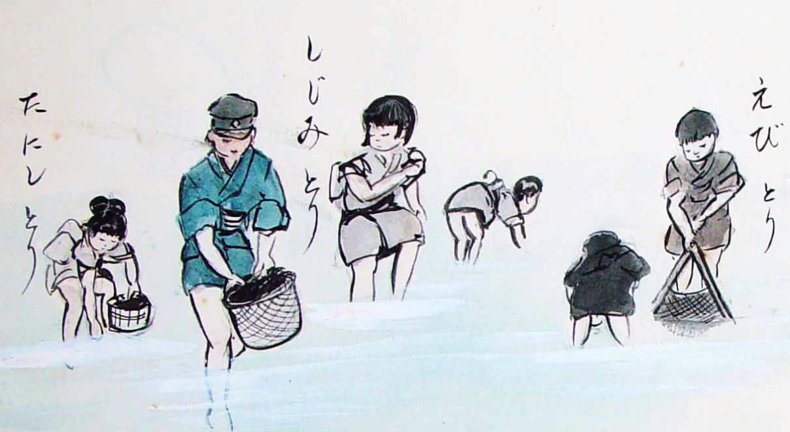
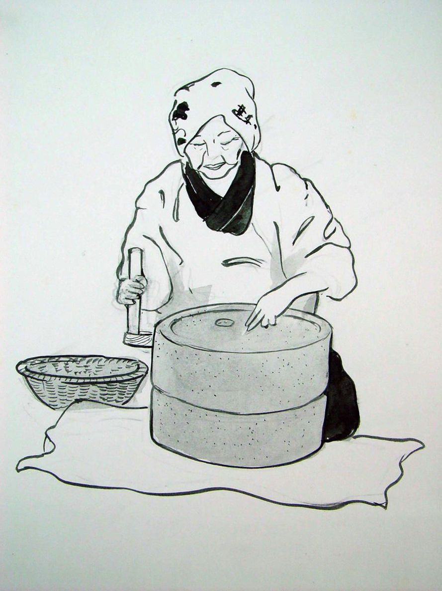

| ちじらんかんぷん: 庶民の生きた明治・大正・昭和 | |
| 佐賀純一 | |
| (2015) | |
ちじらんかんぷん
遠いところは自動車で往診するが、近所は自転車の荷台に鞄をつけて歩く。何しろ狭い町なのでペダルを踏んでもたいがいは五、六分で着いてしまう。夕暮れ時は気持ちがいい。路地を入ると家々のガラス戸の前にいろとりどりの季節の花が咲いている。大島さんの家は染物屋さんと飲み屋さんの間を入った二階屋で、隣は自転車屋になっている。時々ここで空気入れを借りてタイヤに空気を入れる。でもこの日は空気もちゃんと入っていたので、寄り道をしなかった。
「こんにちは」と戸を開けたら誰もいない。玄関続きの茶の間と隣の三畳間の障子が開け放しになっている。裏庭に通じる土間のガラス戸も開いたままだ。庭に作りかけのテントの鉄骨が見える。庭の向こうには作業場と若夫婦の住まいがあるが、人声がない。
「だれも居ませんか」敷居から中をのぞき込むと、二階に通じる入口の襖の陰の畳の上に人の手が見える。手拭いを綴り併せて作った浴衣の袖が手の周りにだらりとまといついている。倒れているらしい。
「二階から落ちたんだ！」僕は往診鞄を抱えて駆け寄った。階段の下の畳の上におばあちゃんはひっくりかえっていた。白髪頭はぼさぼさで、バンザイするように両手を広げ、股を開いて目を閉じている。「大島さん！」僕は膝をついて大声で叫んだ。「どうしたんだ！」
するとおばあちゃんはパッチリと目を開いて、「あらあ、先生か、よくきたねえ」とにやりと笑ったのである。
「階段から落ちたのか」
「そうではないよ」彼女はひっくりかえったまま答えた。
「気分でも悪いのか」
「悪くない」
「それじゃどうしてこんなところに転がってるんだ」
「娘をびっくりさせてやろうと思ったんだ。でも先生が来るとは思っていなかったよ」彼女は芋虫みたいに体をゆすって起き上がろうともがいた。僕は大きな背中をよいしょと押した。彼女は四つんばいになってそろそろと畳をはい、ちゃぶ台のところまで行ってどっこいしょと腰を降ろした。「若くなくちゃあつまんないねえ、先生。あっちこっち動かなくなって、頭も古ぼけてきて、娘とは喧嘩ばかりしているしさ」
「それであてつけに倒れた真似をしていたのか」
「死んだふりしてたんだ。そしたら眠くなって寝ちゃったんだよ」
縁側の下に盆栽が幾鉢か並んでいる。僕は気が抜けて鞄を畳にバタンと置いた。
「お茶でも飲む？」と彼女は震える手で急須にお湯を注ぎながら恵比須様のように微笑した。路地を洗濯竿屋が通って行く。玄関のカーテンがひらひらと風に揺れる。僕は彼女のいれてくれたお茶をゴクリと飲んだ。
大島さんとは二十年来の付き合いだ。最初に会ったのは僕がまだ青二才で父の診療所で働き始めたばかりだった。
「血の検査をしてもらえましょうか」と彼女は血圧を計り終えると遠慮がちに言った。目の細い、いささか水ぶくれの老人で、その日が初診だった。カルテには六十八と記してある。「それじゃあベッドに寝て下さい」僕は採血しようとしてゴムを腕に巻き付けた。ところがどうしたことか、血管が無い。どこを捜しても無い。腕の裏側や手の甲まで調べたがどこにも触れないのだ。
「どうでしょうか」彼女はにやりとした。こっちはヒヤリとした。どうやら彼女は自分の血管がひどく細くて採血が難しいことを承知の上で腕を試そうとしているらしい。
「採れましょうか」彼女は重ねて言う。よほど腹が立ったが、このまま引き下がるのは医者の名折れだと思うからひとまず気を落ちつけようと、ゴムバンドをぱらりと外した。それから相手には分からないように二度ばかり深呼吸して、今度は力いっぱい引き絞って肉がちぎれるほど巻き付けた。相手は痛いとも言わずにこっちを窺っている。あっちこっちひっくりかえして血管を探した。腕はだんだん紫色になってくる。看護婦達は何も言わずに手元を見つめている。もう汗びっしょりだ。これはもう駄目だ、とあきらめかけたら、肘の後ろに糸のように細い静脈が微かに見えた。南無三、僕は那須与一の気持ちそのままに、ぱんぱんに腫れた皮膚にチクリッと針を刺したのである。すると驚いたことに、針は見事に血管を射当てて、青黒い血液が遠慮がちに逆流して来た。
「あらあ、これは大したもんだ！」彼女は頭を持ち上げて感嘆した。「一回で血を採った医者はほんとに久しぶりだよ」
こうして僕は検定に合格し、彼女はせっせと外来に通うようになった。そしてそれから後もなんとか信用を保ち続けているようだ。二十年の間に彼女は二回ばかり脳血栓にやられて多少手足の動きは悪くなったが、頭脳の方はどうしたわけかまるで衰えず、記憶の糸はいくら辿ってもつきると言うことが無い。訪ねて行くといろいろな思い出を話してくれる。最初は聞き流していたが、あんまり面白いので途中からカセットレコーダーを鞄にいれて行くようになった。彼女ははじめ「おらあやだなあ、こうた話を後まで残されるのは」なんぞと文句を言ったが、実はレコーダーがある時のほうがずっと張り切って話をするのだ。母親の話になると「オレはほんとにおっかさんには世話になったよ」と言っていつも泣く。僕はこのしたたかなおばあちゃんが涙を流すのがとても愉快で好きなのだ。今年八十八になって、こどもや孫、曾孫達に囲まれて赤い頭巾をかぶり、赤い着物を着てお祝いをしてもらったが、彼女はほんとうの恵比須様のようだった。
「お日帰りさまの村」は大島さんとの長いつきあいの間にため込んだ記録の一部である。僕の周りには大島さんの他にも、何とも表現のしようもないユニークな人々が大勢いる。なぜこれほど面白い人間がこんなに身近にいるのか分からないが、それらの人々の話を僕だけの楽しみにしてしまうのでは罰が当たると思うので、文章にすることにしたのである。「牛方の女房」の馬場さんは既に他界したが、塚本要平さんは昔の「わんぱく小僧」そのままだし、「念仏小屋」で育った塚田増次郎さんも八十を過ぎてますます意気盛んだ。こんな具合いに人生を生き抜けたら、さぞや愉快だろうとつくづく羨ましい限りだ。
今回の『ちじらんかんぷん』は『スケッチで綴るふるさと土浦』や『土浦の里』の続編としての色彩が濃いが、先のものと異なり、話が主体となっている。絵と伝聞ではそれぞれの話が原稿用紙で十枚から長いものでも二十枚程度だったが、何としても話の全容を伝えたいという欲求が強くなって、百枚を越える話がいくつも出来た。
「ちじらんかんぷん」というのは茨城に伝えられている呪文の一種で、実際に使うときには「ちじらんかんぷん かへいのまじない あっちの山さ飛んで行げ ぼん」と唱える。そうすると痛みが無くなると伝えられている。現代では呪文やおまじないなどというものは無意味なものとして忘れられているが、ほんの少し前までは人々の暮らしの中で非常に重要な役割を果たしていた。ここで取り上げる話の中にもそのような場面がいくつも出て来る。「赤神さま」は霊を呼び出して患者を治し、「長屋の名医」は葛根湯ですべての患者を治療し、「蚊帳を返しに来た男」の万蔵は護摩を焚いた灰を飲ませて苦しみから救う。現代医学からすればこれらは無意味な行為であり、ごまかしにすぎない。しかし完治したかどうかはともかく、その行為に触れることによって人々が一種の満足を得た事は否定できない。その理由は何だろう。思うに、重要なことは物質としての葛根湯でも護摩の灰でもなく、そこに人々の話を全身で受け止めてくれる人物が存在したということである。悩みを持つ人々は苦しみからの解放を願っている。そしてあの人物ならば苦しみを救ってくれるに違いないと信じて彼を訪ねる。彼は人々の悩みに全霊を挙げて耳を傾ける。
「辛いことがあったら話してみなさい。私は聞いているよ。そして何か出来ることがあるかどうか考えてみよう」そうした態度で人々に対している。長屋の名医も、赤神さまも、おそらく自分が一つの個体としては全く無力な人間であることを知っていたろう。彼らは自己がまったく世界から切り放された断片としての存在ではなく、人々の悩みを聞くという行為を通して、見えない壮大な存在と、世界内の現象に惑わされて生きる人々の一種の介添人としての働きをしているのだということを知っていたろう。苦しみを抱いて行き場を失った人々にとって、その苦しみに耳を傾けるという行為がどれほど深い意味を持つものか、彼らは分かっていたのだ。
従って、彼らはまた、葛根湯や燃えかすとしての灰そのものが物質として病気を治癒せしめる秘薬としての効能を持っているとは期待していなかったろう。もし物質そのものに万能薬としての効果が秘められているなら、名医でなくても患者を治すことは容易にできたはずだ。ところが人々は長屋の名医の手から渡された葛根湯のみに治癒力があり、万蔵が焼いた灰のみに霊力が宿っていると考えていた。葛根湯という単純な物質は名医の手の中で単なる物質から不思議な霊力を持った秘薬に変化するのである。
もちろん、現代はそのような手順を経なくとも、普遍的な効力を持つ様々な物質が存在することを知っている。それらは科学的に合成され、データーにもとづく医師の客観的な診断の下に処方される。それらの物質は確かに偉大な効力を発揮する。だがそのような手法ですべての病を無くすことが可能だろうか。人々は客観的な診断を納得して受けとめ、無機的な物質を呑み込んで、それで病の不安から逃れられるだろうか。精神の病からも、老いや孤独や生きることそのものの不安からも逃れられるだろうか。そうした期待が幻想に過ぎないことは誰にも分かっている。
現代に不足しているのは多分「長屋の名医」のような存在なのだ。裏長屋に住む目の見えない老人が名医として人々から崇められていたのは彼が単に漢方薬の処方術を心得ている学者のはしくれだったからではなく、人々の苦しみに対して無条件に自己を投げ出していたからである。
「言ってごらん、何でも、わたしは聞いているよ」
その姿そのものが、人々にとっては「ちじらんかんぷん」だったのだ。それは一方的な関係からでは何の効力もない。治そうとする人間とその人に会いたいと思う人とが同じ場で邂逅しなければならない。手を当ててもらいたいと念願する人と、手を当てて大きな生命に触れさせてやりたいと熱望する者が出会わなければならない。その意味で、現代は困難な時代である。
「わんぱく小僧」はわれわれの失った最も大きな世界の姿を見せてくれる。塚本さんの話のおおらかさはどこからくるのだろう。彼にとって身投げ人の骸骨も、山奥の百合の根も、浜辺の貝も、吸い残しの煙草も、何もかもがこの世に二つと無い宝である。彼にかかると存在する全てのものがきらきらと輝きだす。世界に向かって「ちじらんかんぷん」と唱えると、世の中の全ての存在は既成の価値基準から解放されて、ほんものの美しさを取り戻すのだ。彼は存在するあらゆるものをきらきらと輝く目で見回している。ところが世間一般の価値基準の見方を教える学校ではどうにもならない劣等生で、誰からもあきらめられている。ただ母親だけは、彼を抱き止める。
「ああ、要平の牛乳はおいしいねえ」その一つの言葉が、冷たい海辺を何里も歩いてきたわんぱく小僧の要平を救う。母親は長屋の名医と同じ次元に立つ一種の仏である。
小さな町の片隅で開業している医者がこれほどすばらしい人々に大勢出会えると言うのは愉快なことである。ここで人々が伝えようとしているメッセージを概念化するのは意味がないように思える。ただ言えることは、彼らはいずれも透徹した目を持っていたということだ。生き生きとした眼差しが捕まえた世界を、彼らは何十年も胸の奥深く秘めていた。そしてそれらがよくよく熟成した時分、幸運にもその言の葉を聞く機会に恵まれたのだ。これらの話のひとつひとつは身近な世界に遊ぶ魂の躍動を、なんとも楽しげに表現している。
あるいは、もしかしたら往診鞄の中には「ちじらんかんぷん」という呪文の残り香が入っていて、鞄を開けるとそれが淡くあたりに漂って、そこに居る人々の間に不思議なつながりを生みだすのかも知れない。軒端を訪ねて行くうちに鞄に積もったあれこれの話をひとりでも多くの読者に味わってほしい。
わんぱく小僧
塚本要平（明治四十一年生れ）
劣等生
一番上の姉が勤め先の料亭から休暇で帰って来ましてね、その時がちょうど小学校の運動会だった。姉はしばらく会わないうちにとても大人になったようだったが、一回り違うんだから年は十八だったでしょう。「要ちゃんも一年生になったんだから見物に行ってやろうか」と姉が言うもんでうれしくなって、その日は一緒に一里半の山道を学校へ行った。小学校のあったあたりは今は日立市内になってしまいましたが、その頃は多賀郡高鈴村大字助川という村で生徒は全部で四百人ぐらい。学校はお城の跡で、前は海、後ろは高鈴山の山つづきでとても眺めがいいところ。運動会ともなると田舎のことだから村中の人間が集まってる。そしてとうとうかけっくらの時間になった。勇んで出て行ったが、その頃はみんな裸足だ。金持ちのこどもは白い丸首のシャツなんぞを着ていたが、貧乏人は着た切り雀の着物のままだ。先生がみんなに、「さあ、並べ」と号令をかける。生徒は白い線に一列に並ぶ。ヨーイと先生が言う。その時わたしはどうしても勝ちたかったんだね、着物ではバタバタしてうまく駆けられないと思ったから、先生が号令をかけた時に、パッと着物を脱いた。するとその下は何にも着ていない。シャツもなければパンツもない。オチンチンを出して素っ裸だ。その恰好で白い線のところへ並んで、左腕を突き出してヨーイの姿勢を取った。すると、その頃の先生というのはのんきだったんだねえ、駄目だとも言わないし、止めようともしない。
「ドン！」と号令がかかって、トットットットと走って、見物人の前を通って、見事に一等賞になった。それで一等の旗を渡されて、裸のままテントの張ってある貴賓席まで行って、意気揚々と賞品をもらった。校長先生はにこにこして、「よくやった」なんぞと言って帳面をくれる、見物人はケラケラ笑って大喜びだ。勇んで見物席に行くとみんなも大拍手。ところが姉は真っ赤になって下を向いている。それで「ねえちゃん、一等だ」と帳面を頭の上でひらひらさせたら、「おおいやだ、もう要ちゃんの運動会なんか絶対に来ないよ。恥ずかしくて居られやしない」なんぞと言ってこっちをにらんだ。
いま八十四になりますがこれまで大した病気をしたことがなかった。ところが先日、腸の具合いが悪くなって検査を受けたんです。そしたら腸の中に鏡を入れる時に空気をプカプカと入れる。そうすると腹がプーと膨らんで苦しくてたまらない、ああ医者と言うものはひどいことをするものだと検査台の上で考えたが、これは昔いたずらした罰があたったのかなとつくづくと反省しました。蛙の尻にワラを突っ込んでプーと息を吹き込むと腹がぱんぱんに膨れる。そいつを池に放してやると腹が風船みたいになっているから手足が水につかなくて泳げない。あんなわるさを一年中やっていたなあと思い出すと懐かしくてね、あの頃は楽しかった。
トンボのしっぽに線香花火を押し込んでパッと火をくっつけるとくるくる回りながら飛んで行く。そのうち羽に火がついてばらばらになっておっこちる。ある時草屋根に火のついたトンボが墜落したものだからその家のおかみさんに「オラの家を火事にする気か」と怒鳴られて、大急ぎで逃げてきた。ネズミ捕りでネズミをつかまえた時にはしっぽに雑巾をしばりつけて、海岸に持って行く。そうして雑巾に石油をぶっかけてマッチで火をつけるとネズミは夢中で走り出す。チュウチュウチュウチュウ海岸の砂の上をあっちへ行ったりこっちへころげたりしながら最後にはパタッと倒れる。それを見物しながら玄田節なんぞを歌ったりする。
キョウハ千代松お七になると、松の立木に両手を縛り、カンナ屑をば周りに積んで、チラとつけたらその早付け木、み山おろしのひとふき風に、パット燃え立つ紅蓮の炎
学校でも玄田節をやってみんなを喜ばせる。バケツをじゃんじゃん叩きながら、キョウハチヨマツオシチニナルト、どどん、マツノタチキニリョウテヲシバリ、どどん、パットモエタツグレンのホノオ、どどん、教室の机を二段にも重ねて、その上でバケツを叩きながら歌ったり踊ったり大騒ぎ。
カンナクズヲバマワリニツンデ チラトツケタラ ソノハヤツケギ ドンドン
生徒たちも机を叩いたり雑巾を振り回して踊ったりしてお祭りみたいになる。そうすると先生がガラッとドアを開ける。「何をやってるか。お前ら、ここは教室だぞ！ 運動場じゃない！」
「わー！」みんなはイナゴみたいにワラワラッと逃げる。ところがこっちは机の上に上がってるから逃げられない。先生は職員室へ連れて行く。そうして怒るのかと思うとそうではない。先生らが二、三人取り巻いて、「なかなかうまいもんだ。ひとつやってみろ」なんぞと言う。それでこっちはすぐに得意になって、桃中軒雲右衛門の真似をしてみせる。桃中軒雲右衛門というのは茨城の人で最初はデロリン祭文をやっていたのがだんだん変わって浪花節というのを作り上げたんだと後で聞かされましたが、当時は大変な人気で、大人がやっているからこどもも覚えちまう。それで先生にやってみろ、なんぞと言われると、「ユキハガモウニニテトンデサンランシヒトハカクショウヲキテタッテハイカイス、オランドー～シャノー～アカガッパ～ア～ア～」なんぞと自分でもなんだか分からない文句をうなってみせると、先生も喜んで、「うまい、よーし今度は鴨緑江節をやってみろ」なんて注文を出して、先生ものんきなものでした。
わたしが唄に興味を持ったのはおふくろが唄が好きだったということがありましょうが、隣に琵琶の先生が住んでいて、弟子に教えているのを垣根越しに聞いていたという影響もある。金剛石というのがもっとも初心者がやるもので、それから大隊長、城山、常陸丸なんというのがある。弟子がうなりはじめるとわたしはそれとなく聞いている。
「大隊長どの傷浅し、しっかと気をばもたれよと、呼びさまされし大隊長、両眼かっと見開きて、ベンベベンベン」なんぞと弟子がやると、先生が、それでは駄目だ、と注意する。
「なんで駄目なのかなあ」と稽古場を見ながら聞いていると、「いいですか、橘大隊長は敵弾に倒れたんです。それを内田軍曹が背負って行くとまた射たれて二人とも野に倒れた、そうしてしばらく気を失っていて、夜露が降りて内田軍曹が目を覚ます、そのくだりですからね、呼びさまされし大隊長、両眼かっと見開きて、と言っても、弁慶じゃないんですから、あなたのようにそんなに勇ましく、カッと、見開いたんではない、やっと開いたというのが本当でしょう。だから、リョウガン～クワット～ォ～ミヒラァ～いて、という具合いでないとその様子がでない」なんぞと教えている。それでわたしはだんだん覚えちまって、弟子がなかなか出来ないでいると、垣根越しに、「リョウガン～クワット～ォ～ミヒラァ～いて」なんて大声でやる。そうすると弟子よりもうまいものだから先生も困っちまって、ときどきおふくろのところにきて、「どうもようちゃんは筋がいいんですが弟子たちがやりづらいといってますのでね、みんなが帰ってからやってほしいものです」なんて文句を言う。こんな次第ですから学校でも琵琶の真似なんぞしてみんなには人気があった。ところが勉強となると、これが出来ない。出来ないどころか少々低能気味で、兄弟はみんな優秀で総代なんぞをずっとやっていたのにわたしだけはどうしようもない。及第するのがやっとという有様。当時の成績簿は甲乙丙丁戊の五段階だったが、わたしの成績はほとんどが丁。それでおふくろに見せる前に、筆で、丁を甲に直しちまう。おふくろが笑いながらそれを見て、「要平はほんとに頭がいいねえ」なんていう。ある時には「丁」と「戊」ばかりになっちまった。これはもう直しようがないから仕方無しに持って行ったら、おふくろは「要平の通信簿があれば洪水があっても心配ないからほんとにいいねえ」なんて冗談を言う。「丁と戊」つまり「テイボウ」ばかりだから洪水があっても大丈夫だなんてしゃれなんだ。
ついでですから申しますと、頭が弱くなった原因というものは、生まれたばかりの時に風邪を引いて鼻が詰まってしまった。それでおふくろが楽にしてやろうとして、鼻を啜ったんですね、一生懸命、そうしたら鼻の骨が潰れてぺしゃんこになってしまって、それから鼻で呼吸がほとんど出来なくなった。学校へ行く頃になってもこれが治らない。息をするとツーツーと音がする。どうもこれは具合いが悪いと我ながら考えましたよ。案の定学校へ行くと、友達が馬鹿にする。息をすると音がするもんだから、「おめえはツーカーというあだ名にしろ」なんて決められて、みんなにツーツーカーカーなんて呼ばれる。昔は鍛冶屋ではフイゴを使って空気を送って火をおこしてトンテンカントンテンカンと槌を叩いていましたが、そのフイゴを動かすときにツーカーなんて音がする。それで「おい、鍛冶屋」なんて呼ばれる時もある。それで多少は悩んだりして、「俺はほんとうにこの家のこどもなんだろうか」なんぞと考えた。でもおかげで勉強をしろなんて言われたことは一度もない。親兄弟も「要ちゃんは馬鹿なんだからしようがない」と考えていたし、こっちもそれと承知していた。つまり自他共に許す馬鹿だから誰も期待しない。そうしたわけでこどもの頃は好き勝手なことをやっていた。兄たちはわたしを相手にはしませんでしたが、弟たちはたまらなかったらしい。あんまりいたずらをするもんで、わたしが小学校を卒業して小僧に出たときには「あーあ、せいせいした」と飛び上がって喜んだそうですよ。
ある時こんな意地悪をしたことがある。家の便所は外にあって、板を二枚渡しただけの簡単なものだった。隣にはお墓があった。弟は臆病で夜になると便所に行けない。おふくろは、「ほら暗くなる前に便所に行って早く寝ろ」と言う。それで弟は夕方になるとちゃんと便所に行くのが習慣になっていた。ところがある夏の晩、うっかりして便所に行かなかったんだな。夜中に起き上がってごそごそやってる。わたしは、ああ、これは便所に行くんだな、ヨーシ、脅かしてやれと思って向こうが起き上がったのを見てこっそりと起きて外に出た。お月さまがまんまるで、お墓の石がぴかぴか光っている。抜き足差し足で便所の戸を開けると、外は月の光で明るいが、中は真っ暗だ。急いで戸をしめて壁にぴったりと張りついて待っていた。ところがなかなか来ない。今か今かと待っているのにいつまでたってもやってこない。恐ろしいからどきどきしてそろそろと来るらしい。弟はようやっと来て、戸をそろそろと開けて、板を跨いだ。そうしてしゃがもうとしていたが、さっとはしゃがめないで、そろそろ、そろそろとしゃがんでいる。こっちはもう待ちきれないから、あらかじめ手洗いで濡らしていた手で弟の顔を、ツルツルッ、となぜて、お化けー、とやった。そしたら弟は、「アーッ」とそれはそれはタマゲテ大声で悲鳴をあげて、足を踏み外して便所の中に落っこちちまった。その悲鳴があんまり激しかったもんだからこっちもびっくりしちまった。おふくろと親父が飛んで来て、たちまち捕まりました。おふくろは怒って弟の着物を脱がせて、
「要平、お前は昼間ばかりでなく、なんで夜の夜中までこんないたずらをするんだ。弟をいじめてかわいそうだと思わないのか」とわたしの頬をピシャピシャと叩く。こっちが黙っていると、「ほんとに、なんて子だろう、もうどうしようもない、二度とこんなことをしたら家に入れてやらないよ」と言って、「要平、お前はそんなに何にも恐ろしくないんなら、これからこの着物を持って海岸まで行って、よーく汚れが落ちるまで洗って来なさい」と怒って、ウンコだらけの着物を押しつけた。わたしはその着物を持って崖を降りて、広い砂浜を走って行きました。そして渚についたら裸になって、月の光でちらちら輝く渚で、弟の着物をばしゃばしゃ洗いましたよ。あたりには誰も居ないし、夜の海は光っているし、波は穏やかで、実にきれいだ。着物を波に浮かせると縞の柄が海草みたいにスーと流れる。夜光虫が着物についてぽーッと光って、それはなんとも言えないいい気持ちだ。そのうち臭いも何もなくなってすっかりきれいになった。まったくなんだかほんとにいい気持ちで唄をうたいましたが、何の唄であったのかは忘れました。
あの頃と現在は山の姿がまるで変わってしまいましたが、当時の高鈴尋常高等小学校はまったく山の中の小さな学校で人家なんぞは一つもない。遊びに行くのはいつも裏山。もう昔のことですからかまわないでしょうが、山火事を起こしたことがある。あの頃は遊び道具というものがないからマッチなんぞを持って行って遊んだ。あの時は冬でね、友達五人と行きましたが、マッチをシュッとすって枯草に火を付けると仲間が綿入れ半纏を脱いで、そいつで火をバタバタと叩いて消す。またそっちへ付けるとばたばたと消す。そんな遊びをしじゅうやって、半纏も焼けこげがいっぱい出来てましたが、ある日いつものように火を付けて遊んでいたがどうも面白くない。それで、
「だめだ、そんなに早く消すな、もうちっと大きくしろ」と言って、枯草がボッと燃え上がるまで待っていた。そしたらパッと爆発して、周りの雑木に火が移った。そうしたらその隣の枯木の枝にバーッと燃え広がった。
「ああ、早く、消せ！」
あわててみんなでおお慌てで消したがなかなか消えない。こっちが消えたと思うとその先が燃え出す。大変だ、大変だ、とみんな夢中でバタバタと半纏を振り回した。そのうちゴーッと音がするから振り返ると大きな立木が火だるまになって燃え盛っている。真っ赤な火がメラメラと空に向かって、ごうごうと音を立ててそれは恐ろしい有様。ああ、どうしよう、と見る間に隣の木が燃え出す。
ああ、ダメダ、というのでみんなでわあわあ逃げだした。そうしてしばらくして振り返ったら山も空も真っ赤だ。ゴウゴウパチパチとものすごい音がする。
「絶対にしゃべっては駄目だぞ！」
「親にも先生にも死んでも話してはなんねえぞ」
みんなで申し合わせて、犬のように逃げ帰った。そうして村に帰って見たらみんなが「火事だ、火事だ」と騒いでいる。大急ぎで家に戻ってみるとおとっつぁんが「お前、どこに行っていたんだ」というので、「崖で遊んでいた」と答えると、「そうか、山にいやしないかと心配したんだ。大火事だ」と言う。改めて外に出て見ると山の斜面が真っ赤に燃えて、火山が爆発しているみたいだ。おっかさんが出てきて、
「浮浪者でも山に入ってタバコでもすてたのかしら」「そんなところだろう、世の中には悪い奴がいるからうっかり出来ない、まったく困ったものだ」なんて言いながらおとっつぁんは難しい顔をして山を見ている。こっちは恐ろしくなって小さくなっていた。翌日消防隊が出ましたがどうにも手のつけようがなくて、火事は二日続いて、三日目にようやく下火になった。後で火事場に上ってみたら大きな森林が真っ黒になって、大木が焼けてごろごろ倒れている。あれから七十年も経ちましたが、犯人はとうとう分からずじまいだったんです。
鳥目
わたしの家というのは物心つくかつかない頃までは結構大きな家だった。室町時代からあった土浦の旧家の一つでしてね、塚半という屋号で通っていましたが、江戸時代の歴史地図なんぞを見ますと陸前浜街道に沿った一等地に広大な地所を持っていたらしい。ところが明治の末になって養蚕を始めることになって、屋敷を当時の金で三千五百円で売った。その金で工場を建てて女工も四、五百人も雇って製糸工場を作って、近隣から蚕の繭を買い込んで盛んに製糸をやったんです。ところが丁度その頃に絹相場の大暴落があって、そのあおりでたちまち倒産した。蚕の蛹を餌にして鯉の養魚場なんぞも開いていましたが、明治四十三年の大水で町の中が水浸しになって鯉もみんな逃げちまった。おまけに工場も台風で壊されるという始末で、そんなこんなが重なって財産も家屋敷もぜんぶ無くして、駅の近くで雑貨屋だの下駄屋をやりましたがそれもうまく行かない。とうとうその日の暮らしにも困るという有様になった。母の実家は当時も相当な資産家でしたが、余りにも惨めになってまるで乞食同然という有様で、こんな姿を親兄弟に曝すのは嫌だというので、遠い北茨城の高鈴村の親類を頼って行ったというわけです。
現在行ってみるとその頃の面影は全くありませんが、昔の助川の海岸というのは実に素晴らしいものだった。五、六百年はゆうにたっていようという松の大木が海岸の上の崖に沿って鬱蒼と森を作っている。その下は何百メートルも続く真っ白い砂浜。まさに白砂青松という光景で、この景色が非常に優れているというので常陸の国の大磯なんぞと呼ばれていて、実際に金持ちたちが崖の縁の松林の中に別荘を造って、夏には避暑なんぞにやってきた。わたしらはつきあいがありませんからどんな人間が来ていたのか知りませんが、そっちこっちの林の中に十軒以上の別荘があったことは確かです。
もちろん一般の人間も遊びに来ましたから、その客のために料亭だの宿屋もいくつかあって、わたしの親が頼って行ったと言うのもそんな料亭のひとつの蓬莱館という料亭でしたが、これはおふくろの姉が嫁に行っていたところです。この料亭は坂を少し下った崖の中途にある実に景色のいいところ。母親の姉は妹に頼られて迷惑したでしょうが、それでもいろいろ骨を折ってくれて、蓬莱館の崖を上ったところにあった家を借りてくれて、一家はそこに落ちつきました。家といっても親子がようやっと横になれるというぐらいの小さなもので、六畳と八畳の座敷に三畳の納戸、それに土間がついていたでしょう。おふくろは土間にみかん箱を置いて駄菓子だの雑貨なんぞを商いました。夏は海水浴の客相手にかき氷なんぞもやりましたね。
家の周りには二、三軒家があって、琵琶の先生は南隣り。反対側にはお墓がある。その向こうは畑と松林で下が高い崖になっている。後ろは亭々たる松の大木が鬱蒼として昼なお暗きというような有様、鳥もいれば動物もたくさん住んでいる。狸も狐も居たでしょう。そんなところでしたから店先から松の向こうに海が見える。朝日が上るときにはなんとも言えない良い景色。暮らし向きを別にすれば実に素晴らしいところに住んでいたというわけです。
そもそも父親という人は資産家で育ったんですから仕事なんてものは何もやったことがない。いざ働かなければならなくなったときに手に職というものがないからどうしようもない。でも働かなければ食っていけませんから、いろいろと考えた末に駅前の運送屋の下働きに雇ってもらって荷車引きをやって賃金を稼ぐことになった。ところが荷車も沢山荷を積むと重いから急坂が上がれない。それで今日はどこそこの坂を越えて荷を運ばなければならないということが分かっていると年上のこどもらに「何時何時ごろにどこそこの坂に行くから、その下で待って居てくれ」なんぞと言い残して出かける。それで学校帰りに風呂敷包を腰につけて坂の下で待っていると父親が向こうから汗水垂らして引いて来る。それをみるとばらばらと駈け出して「とおちゃーん」とみんなが走り寄る。
「おー、待っててくれたのか」、父はうれしそうに車を止めて腰を伸ばしてね、腰の手拭を取って汗を拭いて、「あーあ、少し休ませてくれ」とその場に腰を下ろして荷車の梶棒に縛り付けておいた四合瓶の栓を抜いて、ゴクリゴクリと喉を鳴らして水を飲む。それから汗を拭いて、「そんじゃ上るか」と鉢巻を締めなおしてみんなを見回す。そうすると子どもらは、よーし、と張り切って、荷車の後ろだの横に取りついて、オイチニオイチニと押して坂を上がって行くんです。
母親は駄菓子屋の他に代書なんぞもやっていた。母の父親というのは儒学者ですから母も字を書かせたら達者なもので文章もうまい。それで日立鉱山の人たちが手紙だの書類を書いてもらいに随分と来た。漁師のおかみさんたちは魚をかついでボテフリに歩きましたが、字が書けない。それでおふくろは五、六人のボテフリのおかみさんたちの面倒を見て、一日の売上をきちんと帳面に書付けてやっていた。銀行の預金通帳と判子も預かっていましたよ。「今日はいくら貯金するんだい」と聞くと「いくらいくらもうかった」と答えるから、その金額を帳面に付けて金を預かって銀行に預金してやる。年末になると帳面を見て、預金は今年いくらいくらになったと教えて、そのお金を降ろしてやる。そんな具合いでしたから、ボテフリのおかみさんたちはとてもおふくろを信用していたんでしょう。
近くには鉱山の鉱夫目当ての色街もありましたから、芸者だの女郎の恋文を書いてやったり相談に乗ってやったりということもある。小学三年の秋だったでしょうか、女が色街から逃げて来たことがある。死ぬ気であったのか東京へでも行く気だったのかそれは分かりませんが、ふらふらと店に入ってきた。そうして飴を買ってなめていましたが、どうもその様子がおかしい。着ている着物も普通の女が着るものではないし、髪形もそこらの女とは違う。それでわたしは、「このねえちゃんどうしたんだ」と聞いた。するとおっかさんは、「こどもには関係ないからあっちへ行ってなさい」と追い出して、小声でいろいろと聞いている。女は涙を流している。わたしはなんだかかわいそうになってきた。そしたらおふくろも気の毒だと思ったんでしょう。その日から狭い家の三畳間に居候することになった。とは言っても、昼間は絶対に外へ出ない。夕方人気がなくなるとちょっと外の空気を吸いに崖の辺りまで出て、海をぼんやり眺めていたりする。おふくろが出て行って、
「そのうち何とかなるだろうから、我慢しなさいよ」なんぞと言って励ましている。
家が狭い上にこどもが八人居たから夜は芋虫みたいになって寝る。女の人は三畳間でひっそりと寝ている。そうするとその部屋だけがなんだか別の世界みたいで変な感じだ。
こどもとしてはどうも気になる。学校から帰って来ると「まあだ居るかな」と気がかりで覗きに行く。そうすると締め切った障子の陰で化粧したりしている。白粉を塗るとなかなかの美人でわたしは障子の隙間からいつまでも見ている。
「こっちへいらっしゃい」と女が言う。「いくつ？」
そう聞かれても障子の陰から黙って女を見ている。
「元気でいいわね」
「魚、とってきてやろうか」
「あら、捕ってきてくれるの」
女は立ち上がって五銭くれた。で、その日天地閣という料亭の庭に入り込んで大きな鯉を三匹捕ってきました。
こんな具合いに何日か経ちましたが、ある日の夕方鶏小屋の掃除をしていたら五、六人の男がどやどやと来て、家の中に踏み込んで、女を引きずり出した。おっかさんが止めようとしてもどうにもならない。その時はちょうどおとっつぁんも居ましたが、男達は「お前もちょっと来い」と親父に言う。
男らは女を引き立ててどんどんと行く。親父も男らに囲まれている。向こうでは親父が女をそそのかして逃げさせたと考えていたらしい。それでわたしも裸足でくっついていった。わたしは体は小さくても根性は人一倍強かったから、もしもおとっつぁんに何かしたら尻ぺたにでも足にでも食いついてやろうと考えていた。女は男たちに囲まれて追い立てられるように歩いている。女も裸足です。
鉱山には若い男が多いから色街はずいぶんと景気がいい。遊びに来る客でごったがえしている。その通りを女を連れてどんどん行って、裏道を入ると宿がいっぱい建て込んでいる間の広場のようなところに出た。女はそこで着物を剥された。素っ裸です。女は覚悟を決めているのか青い顔をしているけれども声は出さない。周りの宿の障子の陰からいっぱい顔が覗いている。誰も助けには来ない。男らは女の両足を縛り上げて、木の枝に縄の端をひっかけて、女を逆さづりにした。そして竹刀でひっぱたいたんです。映画の拷問シーンがありますが、まったくその通りですよ。映画は作りごとですが、わたしの見たのは本物だったということです。そしてびっくりするのは、路地のところに巡査が立ってこっちを見ているのに何とも言わない。黙って見物している。色街の女というのは金で体を買われているから、逃げたら逃げた女のほうに罪があるということは後から聞きましたが、女が逆さづりになっているのに巡査が何にもしないというのにはこどもながら驚いた。
おとっつぁんもあんな風にされるのかと気が気ではありませんでしたが、その顔がよほど決死だったんでしょう、近くに居た男が、「おい、あんちゃん、心配すんな、おめえのとうちゃんは参考に来てもらったんだからな、何にもしやしねえよ」とこう言った。わたしには「サンコウ」という言葉の意味がよくは分かりませんでしたがね、その顔つきから危ないことはしないつもりだということは分かりました。女は縄を解かれて連れて行かれましたが、あれは遊廓の他の女たちへの見せしめだったんでしょう。
生活は苦しかったなんてものじゃない、こどもは八人も居たんですからね、わたしは五番目で、上には姉と兄が二人ずつ、下には弟が二人と末の妹が一人。この他に両親ですから家族は十人、お米を買うだけでも大変です。学校へ持って行く弁当なんぞはろくなものではない。麦飯の上に納豆がのっていたりする。蓋を開けると納豆くさい。みんながその匂いをかぎつけて、「ツカモト、ナットナットー」なんぞとはやし立てる。たまたま魚を煮たのを入れてくれると、それが頭に浮かんで食いたくて食いたくて、昼まで待っていられない。一時間目の授業の後で半分食べて、二時間目の休みの時にみんな食っちまう。そうすると本当の昼の時にはなにもなくなっちゃう。周りの仲間の弁当をのぞくと、卵焼きだの白魚なんぞが入っているのがある。「おい、これちっと食わせろ」「これもちっとくれ」なんぞと言って食べる。そのうちみんなからもらうようになったら先生が「おい、要平、この手紙をおかあさんに届けなさい」なんぞという。それでおふくろに持って行ったらそれを読んで「おおいやだ、恥ずかしいこと、二度とそんなことしないでちょうだいよ」なんて怒られた。それから学校で預かってきた手紙はろくなことがないことが分かったから、途中で全部やぶいて捨てちまうことにした。
考えてみれば情けない。家が無くなったんですから。親父もおふくろもそれは悲しかったでしょう。親父は半次郎と言って背が高くてとても美男でね、近所の若い女の子たちには勿論女工たちにも評判でずいぶんと騒がれたらしい。おふくろはまさと言いましたが、石岡の資産家の娘で弟は熊岡義彦という画家で大正時代には中央で大いに売れた絵描きの一人です。こどものわたしが言うのも何ですが、ちょっと日本人離れした顔立ちのいい女で、エキゾチックな感じがして町を歩くと通行人が振り返るような女でした。だから結婚式の時には町中の評判で、見物人が山のように集まったという話です。そんな華やかな時があったのが、数年の間にみるみるうちに没落して乞食のようになっちまったんですから、これは実に辛かっただろうと思います。女中も大勢いたのが今度は何から何まで自分でやらなけりゃならない。それどころかその日の食うものにも事欠く有様ですから、苦しくないといったら嘘になりましょう。でもそんなことにもだんだん慣れたんでしょうかねえ、わたしが物心つく頃にはそんな様子は微塵もなかった。おふくろがめそめそしたり愚痴をこぼして周りに当たるなんてところを見たことが無い。むしろ近所の人たちの面倒を見るのが好きで、貧乏を楽しんでいたようなところがあったのは不思議なことでした。
これとは反対に親父は苦労していましたね。何しろ荷車曳きだからくたくたになって帰って来る。疲れた顔をして土間の上がり口で地下足袋を脱いでいるんだが、力がなくてなかなか脱げないで肩で息をついている、それをおふくろが手伝って脱がしている。親父は脱がせてもらいながら自分の体を支えきれないでふらふらしている。手足も顔も泥だらけだ。朝起きるのも辛そうでしたね。冬なんぞは土間に置いた地下足袋が凍ってかちかちになっている。それをおふくろが火鉢に近づけてあっためて、両手でよーく揉んで柔らかくして、ハーッと息をかけて、あったかくして親父に履かせてやる。親父は足袋を履くと唇を一文字に結んで、おふくろの顔を見る。
「大丈夫ですか」
「ああ、大丈夫だよ」
「行ってらっしゃい」
「行ってくるよ」
親父は荷車を曳いて後ろを振り返る。
「気をつけてくださいね」おふくろが門口に出て見送る。
冬の海岸の崖の上は風は強い。親父の頭がばさばさになって、荷車を引いて行く姿がやけに小さく見える。おふくろは荷車が松の林に見えなくなるまで立っている。そんな両親を見ていると、ああ、早く親孝行をしてやりたいなあ、とこども心にも思いました。小遣いなんぞも気の毒でもらえなかった。下駄の鼻緒が切れたりすると二度と切れないようになんぞと考えて、どこからか針金を見つけて鼻緒のところをぐるぐる巻きにしたもんです。
親父のただひとつの楽しみは晩酌でしたでしょう。夕方一日の仕事が終ると日銭が入る。親父は地下足袋を脱がないうちにもらってきた金の中から二十銭だけとってあとの金を全部おふくろに渡す。「おい、要平、酒を買ってきてくれ」。わたしは銭を握って四合瓶を下げて、金宗という酒屋で酒を買う。ちゃんとした酒は買えませんから、酒樽の底に残った「溜り」を売ってもらう。その頃は「したみ酒」と呼んでいましたが、そのしたみ酒が二十銭で四合瓶に半分でした。ところが金宗のおかみさんという人は優しい人でねえ、「要ちゃん、まけてやるからね」と小声で言って、瓶にいっぱいいれてくれる。そうして五銭の小遣いを手のひらにのせてくれて、「あんたは親孝行だ、たいしたものだよ」としみじみと言う。それでわたしはおばさんが大好きで、店に出ていてくれないかなあ、といつも考えながら行きましたが、たいがいは主人が居て、きっちり半分でしたから、おかみさんが四合瓶にいっぱい入れてくれるときにはほんとうにうれしかった。
帰り道、瓶の口を開けてちょっと匂いを嗅いでみる。それからペロッとなめる。そうしてゴクンと飲んでみる。これが香ばしくてうまい。何しろ腹がへってますから何でも飲みたい。それで家に帰るまでにちょびちょび飲んでいるうちにだんだん酔っぱらってふらふらして、「ただいまー」なんて帰りつくときには真っ赤な顔になっている。
「しようがないねえ、なんだろう、お酒をのんだらお前はますます馬鹿になっちゃうよ」なんて怒られましたが、そんなことは毎日ではありませんから、まあおふくろも仕方がないと諦めていたんでしょう。
こんな貧乏暮しだから食事といっても何もない。学校から帰って来ると何か無いかなと思っても何にもない。だから食べられるものは自分で探すよりしようがない。荷物を縛るのに使うロープを持ち出して崖っぷちの松の木に結んでつるつると降りて行くと野葡萄だの野イチゴがみつかったりする。それを手当りしだいに食べる。たまにジネンジョが見つかりますが、そんなときには大喜びだ。一生懸命に掘って、背中にしょって、家に持って帰るとおふくろもそれは喜ぶ。瀬戸のおろしでがりがりと降ろして、麦飯でツルッと食べるともう最高においしい。それから畑では桑の実を盗む。柿なんぞもよその家に入って勝手に盗んで食っちまう。手桶の中に麦がいましてあるのを見たりすると、それを生のままたべちゃう。昔は麦飯を炊くのにまず麦を煮てやわらかくして、それを水に漬けておいて、ご飯を炊くときに米といました麦をいっしょにして炊いたんですが、腹がへっているから水の中の麦がいかにもうまそうに見えた。ところがそんな具合いだからだんだん栄養が偏ったんでしょう。鳥目になっちゃった。それに気づいたのはある日風呂をもらいに蓬莱館に行った時のことです。
蓬莱館は崖の中途にありましたから細い急な崖を降りて行かなければならない。当時は遊びに来る客が大勢いて、歩いて行くうちにも太鼓だの鼓の音が響いてくる。テテンガテンテン、テンテンテテンテン、芸者が鼓を打っている。
「あれはなんて打っているか分かるか」と兄貴が聞く。
「さあなあ」
「あれはなあ、ナカムラサン、タカハシサン、コバヤシサン、と叩いているんだ。芸者がお客に媚びを売っているんだよ」
なるほどそう言われればそんな風にも聞こえます。
「アソビニネ、キテクダサイ、イイオトコ、カネモッテ、ネギショッテ、ナカムラサン、タカハシサン、コバヤシサン、アソビマショ、テテンガテンテン、テンテンテテンテン」
蓬莱館の二階には大きな松の枝がのしかかるように斜めに伸びている。その向こうの海の上に月が上がる。太鼓が鳴る。テテンガテンテン、テンテンテテンテン。芸者たちの笑い声が聞こえてね、仲居が料理を持って廊下を忙しく歩いている。わたしらはみんなで台所に入って、都合がつくと湯に入れてもらう。そんな時でしたが、夕方崖を降りようとしたら真っ暗で見えない。どうしたんだろうと思っていたら、おふくろが、「おまえ、何をぐずぐずしているんだい」と言う。それで「おっかさん、どうしたのかなあ、今日は外が真っ暗で何にも見えないや」と答えた。ところがのんきというか何と言うか、おふくろは驚きもしない。医者にかけるなんてことは考えも及ばないことだったんでしょう。
「見えないんだったら後からゆっくりおいで」なんて言ってさっさと行っちまう。兄弟が多いからかまっちゃおれないんだね。それで手探りでそろそろ崖を這って行く。こうして風呂に入ってまた亀みたいに手探りで家に戻って朝起きるとちゃんと見える。だから夜は見えないものだと思うようになりました。
あの頃は栄養失調で鳥目になる生徒がずいぶんいましたよ。学校で、「夜は嫌だなあ、目が見えねえんだもの」と言うと、「俺もそうなんだ、真っ暗でやだなあ」なんてのが三、四人居る。だから病気だとは思っていなかった。ところが誰だったか上級生が「それはなあ、鳥目というんだ」と教えてくれた。どうすればいいんだと聞くと、何でもかまわねえからどんどん食うといいと言う。それでそれから魚を釣ったり鰻を捕まえて食べたりしているうちに自然に治った。おふくろが鶏を飼うようになって卵を食べさせてくれたのも良かったんでしょう。
鮫とソース
あの頃の海岸というのは夢のようにきれいだった。なにしろ松の大木が崖の上に鬱蒼と生えている。海岸は何百メートルも続く真っ白い砂浜で朝日が昇ると天女の衣のようにサアーッと輝く。それがわたしの家の軒先からどこまでも広がっている。青い海の沖辺を魚の群れが黒い帯を作って回遊しているのが見える。実に絶景といった格好です。隣が墓でその反対側には二、三軒家があってその続きは畑。その向こうは松の森がどこまでも続いている。雉だの山鳥はもちろん狸だの狐なんぞもたくさん住んでいる。崖の上にひときわ素晴らしい松の大木がある。漢学の先生がこれを漢詩に詠んだ。
松根石を抱いて 石まさに落ちんとし
水沫岩に当たって 岩砕けんと欲す
松がだんだん駄目になったというのは明治の終わりに日立銅山が出来て煙突から亜硫酸ガスが出るようになったからですが、海岸にはまだまだ立派な松がたくさんありました。わたしはこの浜辺に朝早くまだ誰も起きないような時に行く。もちろん朝日なんて上ってはいない。誰も居ない。これがまったくの好都合、それというのは、夜の間に流木が流れついている。風が強かった翌日なんぞはいちばんいいけれども普段でも大小の木切れが打ち上げられている。あっちこっち歩いて山のように集めて、荒縄で縛って担いで、家の周りに並べて干して乾かす。これは何に使うにも便利です。おふくろもわたしが運んで行くと顔をにこにこさせて、「要平はほんとに大したものだねえ」とほめてくれる。おふくろにほめてもらいたいばっかりに、眠い目をこすりこすり流木を拾いに毎朝出かける。
崖下の水際には捨て小船が何艘もありました。壊れて捨てられた木造船ですから船縁も船底も壊れている。そんなところには乞食が住んでいる。拾ってきたトタンだのボロ布なんぞで周りを囲って雨露を凌いでいる。女も居ればこどもも何人も居る。三、四組の家族が居たでしょう。その乞食達もたまに流木なんぞを拾いに来ている。だんだん仲良くなってお互いに挨拶する。しかし乞食というのは見るからに元気が無い。長い間にいろいろと乞食を見ましたが、一般に元気はつらつなんて乞食はいない。挨拶するのも億劫という格好をしている。それで気の毒になって、
「かあちゃん、今朝も乞食が腹すかして居たよ」なんて話すと、母親は「ふーん」なんて聞いていて、朝の食事が終わると、「要平ちょっと」と呼んで、残ったものを乞食のところへ持って行かせる。母親という人は貧乏暮しをしていても、かわいそうな人の話を聞くと黙ってはいられない性分で、自分で食べなくても、何かやるものがないかなんて考えている。こっちもたらふく食ってその余りを持って行くわけではなくて、まだ食べたいんだけれども、持って行くと乞食はとても喜びますから、その喜ぶのが嬉しくて、「かあちゃん、今日は何にも持って行くものがねえのかな」なんて催促すると、母親は「それじゃこれを持って行ってやりなさい」なんて出してくれる、そういう具合いに毎日運んでいた。小学校を終えるまでやりましたから長いつきあいです。
こんな具合いに毎日誰よりも早く起きました。みんなまだ眠っているうちに崖を下りて海岸へ行く。まだ薄暗い時刻に海岸に行くと、流木だけではなくて魚が波に打ち上げられて浅瀬でばたばた暴れているなんてことがある。何しろその頃は近海漁業でも魚がたくさん捕れたし、海岸の高い崖から見渡すと、鰹だのサンマ、鰯の群れが黒い帯のようになって沖を押し渡って行くのが見えるような時代で、陸から鰹だの鱸の一本釣りなんぞが出来る。松林の中から雨降り川というのが流れて崖で滝になって、その川が砂浜をさらさらと横切っているんだけれどもその川をハヤなんぞが鱗を銀色に輝かせてタタタッと上がって行ったりするのを見つけて篠竹でパタンパタンと叩いて捕まえるなんてことも朝飯前。だからあの当時はずいぶんといろいろな魚が群れていて、波が荒い時なぞには打ち上げられる。朝早く行くと砂浜の浅瀬で何匹も騒いでいる。そいつを捕まえて、手桶に入れて持って帰る。そうするとおふくろがとても喜んで、「あら、ほんとに要ちゃんは魚を捕るのがうまいこと」なんてほめてくれる。こっちはその喜ぶ顔が見たくて毎日早起きして海岸へ行く。おふくろは捕ってきた魚を料理してみんなに食べさせる。それが朝飯のおかずで、魚が捕れないときにはおかずは無い。麦飯に醤油でもかけて食べるより仕方が無い。それでときどき蓬莱館から「ソース」を貰ってきてこれを食べました。
「ソース」を食べたというのはこういう次第です。当時は料亭の板前は調味料も自分でこしらえていた。ソースをこしらえるのには人参だのじゃがいも、玉ねぎ、料理人によってはその他にも野菜を入れて、これを煮つめて醤油と調味料で味をつける、これを布で絞った絞り汁がソースというわけだ。ところが布の中には絞り粕が残るでしょう。おふくろはこの粕を貰ってきておかずにして食べた。それでわが家ではその絞り粕を「ソース」と呼んでいたから「ソース」というものは粕のように固まっているものだとばかり思っていた。ところが小学校を出て料亭に小僧に行ったときに、女中が「要ちゃん、そこのソース取っておくれ」とこう言うから、見回したんだがどこにもない。それで「無いよ」と言ったら、「何を言ってるんだろうね、目玉をどこに付けているんだよ」なんてぷんぷん怒っている。そして女中が取り上げたのを見ると醤油みたいなものだ。
「なんだい、それは醤油じゃないのかよ」と言ったら「馬鹿だね、醤油とソースの区別もつかないのかよ」と笑われました。つまりその時までソースというものは固まったものだとばかり思っていたんですね。まあそんな具合いだから食べ物といったら何もない。わたしが取って来る魚が頼りというわけです。だから毎朝張り切って出かけました。
ある朝、夏も浅い頃だったでしょう、暗い崖を降りて行ったら岩陰でなんだかでかい魚が暴れている。何だろうと思ってみたら、これが大きな鮫だ。わたしは背が今でも小さいけれど、その時は小学も二年ぐらいだから、ほんとうに体が小さかった。鮫はというと背丈の倍もあったでしょう。どうやら岩の窪みに入り込んで出られなくなったらしい。シメタと思って、捕まえようとしたけれども相手は大きいから組み付いても駄目だ。そこで崖の下で大きい石を見つけて、そいつをヨッチラヨッチラと運んで来て、それをバンとぶっつけた。相手はびっくりして暴れる。今度はもっと大きい石をようやく持ち上げて頭にたたきつけた。ますますバタンバタン暴れる。またぶつける。そうやってずいぶんかかって叩き殺した。そうしてこいつに縄をかけて、自分にも体に縄を巻いて海岸をずるずると引きずって、ようやく崖下まで来たけれどもそこからが大変だ。なかなか上れない。魚が岩の角にぶつかって上がらない。それでも助けを借りるのはしゃくだから四つん這いになってひきずった。その時ちょうど朝日が海に上ってあたりがパアッと明るくなった。見ると鮫の肌が砂まみれになってちらちら白く光っている。口がわずかに開いて血が垂れている。坂道を押したり転がしたりして一時間以上もかかって家までたどり着いた。おふくろはその時起きたばかりで、汗みどろになって大きな魚を引きずってきたのを見てそれはびっくりして、「あらあらなんだろうねこんな魚は、見たこともないよ、まあまあ、よくこんな大きな魚を運んで来たこと」なんてあきれて見ている。そのうち親父も起きてきて、「おい、要平、これは大漁だな！」と大いに喜んでくれる。おふくろは早速襷をかけて料理して、切身を近所いっぱいに配って歩いた。それで周りの人たちから、
「いやー要ちゃん、今日はごちそうになってありがとうよ」なんて声をかけられて、嬉しかったっけねえ。
百合と骸骨
雨降り川の上流には水車小屋が三つありましたが、川が崖から滝になって落ちる丁度そのところには格好の良い大きな岩があってその岩から松の大木が真っ青な枝を四方に張っている。下にはびっしりと苔が生えて、鋏の大きい赤手蟹がいっぱいいる。それこそ何千というほど居ますからはるかに下から見上げるとまるで岩に赤い花が咲いたように見える。信じられないでしょうが当時はやたらと赤手蟹がいました。春先にはこの滝をウナギのこどもが上っていく。まだ針のように細いやつですが、ちゃんと黒くてウナギのかっこうにはなっている。苔の間を黒い帯のようになってニョロニョロと上って行く。何万だか数が知れないです。川の上流には田畑も小川もありますからそこへ上って成長したものでしょうか。学校の先生が授業中に、「どんな山の中のうなぎでもフィリピンの海溝あたりから泳いで来るんだ」と言ったことがありますが、フィリピンからかどうかは分からないけれども海から上がって来るということはちゃんと知っていた。
崖を上りきれないでそのまま崖の下の淵で大きくなるウナギも居る。こいつをなんとか捕まえてやろうと考えて、カマスのいらなくなったのに糠だの残飯を詰めて、これに紐をつけてね、夕方淵に沈める。そうして朝早く行って、紐をいっぺんに引っ張ると、たまにウナギが入っている。その時はもう大得意。親父も喜んでこの時ばかりは「いや、要平は大したものだ」とほめてくれました。
こうしたわけで、わたしは魚だの蟹とりの名人でしたが、いちばん得意としていたのが百合の根掘りだった。百合の根を探すためだったらどこまでも行く。おふくろは草花が好きだったが特に百合が好きで、家の前に小さな庭をこしらえて植えておく。そうしてこれが咲くと「きれいだねえ」とそれこそ目を細めて喜ぶものだから、それが自然とわたしにも伝わったんでしょう。三月から四月にかけては毎日のように山に入って百合の根を探して回る。あそこらあたりにはあるんじゃないかなと思うともう我慢が出来ないでどんなに遠くても行きましたから、東西三里四方でわたしの足跡がつかなかったところはひとつも無いといってもいいくらい。乞食とも仲良くしているからいろいろと教えてくれる。「どこそこのあたりに赤い百合があったぞ」なんて知らせてくれる。そう聞くともう我慢していられない。どこまででも採りに行く。あるとき崖の途中に良さそうなのがあるから弟に梯子の片方を担がせて採りに行った。そしたら弟が足をすべらせて落っこちた。高い崖だから下をのぞいても薮のようになっていて見えない。それで、ああこれは死んじまったかな、なんて思って木の根を捕まえながらようやっと降りてみたら、砂の上に梯子といっしょにおっこちてワーワー泣いている。梯子を最後まで放さなかったから、それがあっちこっちにぶつかって落ちるスピードが遅くなって助かった。それで「これはうまい方法だ」と考えた。というのは、そのあたりの崖はどこまでも切り立っているから下に降りるのには何キロもぐるーッと回り道をしなければならない。それがとても面倒だったんだが、この時からはその必要がなくなった。まず腕の太さぐらいの松の技を切って、こいつをしっかりと握って飛び降りる。そうすると松の枝が薮にひっかかってバサバサと鳴ってね、それがクッションになって崖を滑り降りることが出来る。もちろん体は擦傷だの引っかき傷がめちゃめちゃに出来ますがね、そんなことはかまわない。こればかりは誰も真似が出来なくて、仲間も「要ちゃんは頭がおかしいから命知らずなんだ」なんてあきれていましたよ。
百合の根を掘りに行くのは春先ですが、土曜日なんぞは学校から帰って来ると鞄をほっぽりだして身一つで飛んで行って、夕暮れになったらそのまま山に野宿する。暗くなって二里も三里も帰るのは面倒だから泊まっちゃう。最初の頃はおふくろは何かあったんだろうかなんて心配して近所の人達を頼んで探したりしましたが、だんだん呆れてね、ほっぽらかしになった。それをいいことに日立鉱山の山続きのまゆみ山なんぞにはしょっちゅう泊まった。寒いと思ったことなんぞ一度もない。当時はあのあたりには「寒水石」を掘った跡の穴がそっちこっちにありました。寒水石というのは那珂郡で採れる青黒い縞模様がある石で、当時は建築材料だの彫刻だの飾り石なんぞに使っていた。その石を採った跡の穴がそっちこっちに開いている。枯草なんぞがあたり一面に生えていて、丁度いいところです。そんなところがあるとちょっと潜り込んでまるくなって眠る。
夜になると狸だの狐なんぞががさがさ動き回っている音が聞こえる。頭のところへ来て嗅ぎ回ったりする。向こうもこっちを仲間だと思っていたんでしょう。春先の山を歩いていると枯れた茎がまだ残ってる。それを見るとその百合の根がどれぐらいのものか一目で分かる。あそこにあるのは三年ぐらいたっている百合だとか五年ぐらいのものだとか、そんなことがちゃんと分かる。人間も毎日そればかり考えているとものすごく勘が鋭くなるもんですよ。あの山のあそこらあたりに行けばあるんじゃないかな、と直感が働く。そしてその直感に従って行くと果して大きな株がある。こいつを掘り出す時のドキドキした興奮といったらもう何物にも替え難い。
山百合には実に見事なのがありました。一つの株から二百も三百も花が咲くのがある。球根は差渡しが一尺もある。信じられないでしょうがほんとうにそんなのがあります。岩石の間に挟まった球根は、狭い岩の間で何年も育つから分球できない。ひとつの球のまま大きくなって行く、それでびっくりするほどたくさん花を咲かす。庭に咲くとそれはそれは見事なもの。通りがかりの人たちも驚いて、「ヘー、すごい百合だなあ」なんて感心してしばらく眺めている。ある時東暁舘という旅館の主人がどうしても欲しいと言って、「どうだね、これを五円で売ってくれないか」なんぞと言った。いやだというと、「それならうちの番頭をいっしょに連れて行ってくれないか」と頼むもんだから連れて行った。
どんどん山を上って、崖のところまで来たから、ロープを木に結びつけてそこからスーと降りる。見るとその途中の崖の窪に良さそうな芽が見える。そこは断崖で岩壁が傘のように出ているからその窪みにはとても手が届かない。体を揺すってロープをぶらんこのようにフーワフーワと振ったらだんだん窪みの中に入ってきて、パッと手を伸ばしたら松の木をつかまえた。それでその枝を伝って窪地に降りて、上に向かって、
「おーい、ここにいい株があるよー」と叫んだら、番頭さんが青くなって、「駄目だ駄目だ、そんな恐ろしいところなんぞへは行けやしない」という。株を掘って背中にしょってロープを伝って上がって行きましたが、それからというものは誰もついて来なくなった。
ある時乞食が海岸の崖の突端にある宿の庭の松の下にいい百合根があるというのでこっそり入り込んで掘ってみた。そしたら人骨がそっくり出てきた。骸骨です。これは儲けものだとうれしくなっちゃった。ちょうど学校の理科の授業で人間の体のことを習っていたから、これを持って行ったら先生はオレをほめてくれるだろうとそう考えた。それで全部掘り出したんだが、土の中に長く入っていたから真っ黒だ。それで海岸まで運んで砂でごしごしと洗った。ずいぶん念を入れて洗ったら真っ白になってね、とてもきれいになった。得意になって家に持ってきたが、さあ、家の中にいれたらおふくろが怒るだろうと思ったのは、おふくろは臆病でわたしが物陰に隠れていてワッと急に出たぐらいでも真っ青になるぐらいだ。だから骸骨を持ち込んだら驚くだろうと思って、学校に持って行くまで鶏小屋の棒にひっかけておくことにした。ところが運の悪いことには、どうしたわけかその晩、親父が腹が空いたというのでおふくろがローソクに灯をつけて鶏の卵を採りに行った。するとなんだか白いものが目の前にぶら下がっている。何だろうとよくよく見たら骸骨だ。
キャーッと叫んで腰を抜かしちまった。シマッタと思ったけれどももう遅い。親父が出てきて大騒ぎになって、さんざん怒られて、「こんなもの、早く捨ててちょうだい！」と言うので、骸骨を抱えて崖っぷちまで行って、そこからポーンと捨てて、南無阿弥陀仏と唱えた。それからあの骸骨がどうなったのか考えもしませんでしたがね、あの頃は投身自殺なんぞがそっちこっちであって、海岸に流れ着いたなんてこともいくらもあったから浜の人間は骸骨を見つけたりしてもちっとも驚いたりはしなかったもんです。
光る足
近くに乳牛を飼っているところがあった。今のようなホルスタインではなくてまるで闘牛にでも使うような赤牛だの黒牛でね、六、七頭はいたでしょう。そこでは牛の乳を搾ってビンに入れて配達してましたが、わたしは牛が見たくてときどき遊びに行った。すると牛はこっちが小さいから馬鹿にして妙な目つきで見る。ある時小屋の前に立って眺めていたらこっちヘノソノソと向かってきた。逃げようとしたんだけど、どんどん角を押しつけてきて壁と角の間に体を挟まれちゃった。動こうにも動けない。相手の頭はまるで石だから手で殴ったぐらいではなんともない。「助けてくれー」と叫んだらそこの主人が飛んできて助けてくれた。それで腹が立ってね、このままでは済ませないぞと考えて、太い棒を持ってきて「よくも俺を馬鹿にしやがったな」とそいつの尻をさんざんぶっぱたいた。すると牛は、これは虐めたら駄目なんだと分かったんだね、それからは馬鹿にしなくなった。
小学五年の時そこの主人が、「なあ、要ちゃん、月々三円払うから手伝ってくれねえか」と言う。「大瀬に得意先が三十軒ばかりあるんだがね、要ちゃんがやってくれれば大助かりなんだがなあ」
「ああいいよ」こっちは気楽に引き受けて、それから毎日配達した。大瀬というのは漁師町で助川からは一里ほど離れている。学校を終わってから牛乳屋に寄って三十五本ぐらい篭にいれて預かって、それを手に提げてカチャカチャさせながら海岸を歩いて行く。重くて手が抜けそうになるから途中で砂の上に下ろして休んでね、また歩く。
下駄だの草履を履いていると減っちゃいますから夏も冬も裸足です。いくら寒くても足袋なんぞはかない。霜焼けがひどくて足袋をはくと血だのつゆが滲み出して、べちょべちょになってくっつかっちまう。こうなると脱ぐのが一苦労。血が流れるから親父の刻みタバコのカスをもらってそれをべたべたくっつけて止血したりする。昔はタバコで血をとめたりしたもんです。だから足袋をはくと取るのに苦労だから素足の方がいい。
途中に弁天池というのがあって清水が湧いている。足を入れると湧き水だからあったかい。着物の裾をまくり挙げて、じゃぶじゃぶやって、血が通うようになってから上がってまた歩く。ところが水から出るとまた寒い。がたがたする。手も足もかちかちだ。皮膚が割けて深いひび割れが出来る。だんだんぐちょぐちょになる。小僧に行ってから飯を盛るときに手がぽんぽんに腫れて血が滲んでいるので、「汚ねえから早く治せ」なんぞと言われましたが、田舎に居る頃は誰もがそうだからそんなに気にも止めない。おふくろも洗濯で手が荒れて血が滲んでいましたから、人間というものはそんなものだと思っていた。
牛乳配達に出かける時には明るいですが、配達して波打ち際をピシャピシャ歩いて帰って来ると九時ごろになる。冬はいなさ風が吹いて、真っ暗で何も見えない。ただ渚を歩けば帰り着くと思うから水際をタッタッタッと歩いて行く。そうすると寒くて手足が冷えてね、風がひゅーひゅー鳴って、潮がドタンドタンと浜を打つ、その音がものすごい。吹雪の日なんぞもありますが、そんな時には雪が波の上を横殴りに飛んで来て渦を巻いて、体が棒のようになっちまう。いくら急いで歩いてもなかなかつかない。だんだん辛くなって、アァーン、アァーンと声を挙げて泣くんです。
悲しいんではない、辛くて泣く。暗い海岸をアァーン、アァーンと大声を挙げて泣きながらね、風に吹き飛ばされそうになって歩く。そのうちだんだん泣いているんだか歌を歌っているんだか分からなくなっちまう。真っ暗で、誰もいない。波打ち際に大きい波がドドン、ドドンと押し寄せる。ザーッと波が浜辺に上がってきて、白い泡が足元を洗う。頭の先がピリピリする。だんだん感じがなくなって、歩いてるんだか止まってるんだか分からなくなっちまう。アァーン、アァーン、アァーン、アァーン ドドン、ザブン、ドドン、ザブン、こんな具合いに歩いて、家までが遠く遠く思えましたねえ。
ところが夏は気持ちがいい。暑い陽が落ちて海岸が静かになると、別荘の人間などが波打ち際に貝殻を拾いに来る。白い帽子を被ってスカートをひらひらさせて、かごにいっぱい拾う。水平線の向こうの雲が何とも表現の出来ないような見事な色に染まって、それはそれはうっとりするような光景です。波打ち際を歩いて行くと青黒い波がきらきらと光る。まるで波の中に宝石がちりばめられているよう。
波がザァーと高く盛り上がると、夜光虫がキラキラキラと光る、波の形になって青くね、その波が次々にザーと盛り上がってザブンと砕ける。歩いている足元の渚がきらきらと光る。そうして振り返ると自分が歩いた跡がパッパッと青く光っている。誰もいない、ただわたしだけが青い夜光虫の波を見ている。タッタッタと走ると足に青白い光がくっつく。そんな渚を振り返り振り返りしているうちに家に帰る。
家にたどり着くころには兄弟はみんな寝ていますが、おふくろは起きて待っていてくれる。それで余った牛乳を出して「ほら」と渡す。牛乳配達の時には得意先の数よりも何本か多く預かる、その余ったのをおふくろに渡す。おふくろは「ありがとう」と受け取って蓋をぽこんと外して瓶の口からぐびりぐびりと飲む。そしてハアッと一息ついて、「ああおいしいねえ、要平の牛乳は」と言う。その笑顔を見るのがほんとにうれしかった。
金儲け
海岸の砂浜の楽しさは言葉には尽くせませんね。広くてね、幅は二百メートルぐらいはゆうにあったでしょう。砂浜の尽きるところは海、反対側は松の林ですからこどもの目からみても実に雄大で美しい。夏になると毎日水遊び。崖を降りて海まで走って行くと浜辺が広いから足が焼けて熱くて歩いていられない。昔の浜辺はほんとに暑かった。裸足で歩くとアッチッチと飛び跳ねるような具合い。だから海に行く時には俵ボッチを持って行く。これを抱えて砂の上を走って、途中で熱くなったらこれをパタンと投げてその上で休む。しばらくして足が冷えたらまたそれを抱えて走って行く、それぐらい熱く砂は焼けていました。まあこうして海にたどりつくわけですが、そんな時でも自分勝手に遊ぶというわけには行かない。なにしろこどもが大勢だからおふくろはわたしが遊びに行く時には必ず下の妹をあずける。他の兄弟はみんな背が大きいのにわたしだけが小さいのは生まれつきもありましょうが、わたしは遊びに行くときにはいつも下の弟か妹をおぶわされていた、それが原因で背がちっぽけになっちまったんだと思うんです。
妹をおぶって海岸まで行って、妹を裸にして砂浜にほっぽらかしておく。そうすると波がザブーンと押し寄せて、ザザーッと妹にのしかかる。妹は体が小さいから波に潰されてごろごろ転がる。それをあわてて助けて、またほっておくと波がどぶーんと呑み込んでごろごろと転がる。それでもほっておくとだんだん深いところに連れて行かれる。ああたいへんだ、というんであわてて助け上げるとワーワー泣いてる。泣いてもかまわない、また転がしておく。こっちも遊ぶのに忙しいからね、それで妹なんどは黒こげになったみたいによく焼けて、目ばかりぎょろぎょろ光ってましたが病気なんぞ一度もしたことがない。
あのあたりのこどもらは泳ぎはそれこそ得意です。フンドシを締めているのもいるが大方はふりきんだ。真っ黒けになって遊んでいる。ある時上級生が崖下の穴のところに連れて行って、「あの穴を通り抜けたら五十銭やる」と言った。その穴は三十メートルぐらいあって海水がいつもドドーッと通り抜けているんだが、穴にはぐるり蛎貝がいっぱいくっついている。だからなまじ飛び込んだら傷だらけになるし、下手したら息がつまって死んじまうかも知れない。それでその穴に入ったものは居なかった。でもわたしはやってやろうと考えた。それで「よし、ほんとにくれるな」と念を押すと上級生は「できるのかよ」と馬鹿にしたように見おろしている。ヨーシ、と覚悟して、波がドドッと押し寄せて来るのを見計らってドッと飛び込んだ。そうして波の中で体をまんまるにして、頭を抱えて穴に入った。そしたらどんどんと押し流される。ところがひとつも痛くない。穴の壁には海草がびっしり生えているからぶつかっても痛くないんだな。そのままつるつる流れていったら向こう側にひょっくりと出た。
「わーい、どうだ」と叫んだらみんなも、わーいと手を上げてドボンドボンと飛び込んで大騒ぎ。それで五十銭儲けました。
小学校の四年ぐらいになると夏だけではない、寒い時期にも泳いだ。あれは三月の初めの頃でしょう、わかめ採りというのをやりました。家から炭俵を三つ四つ持ってきて海岸べりにおいて、褌一本になって三メートルから五メートルぐらい潜る。そうして鎌でもって息の続く限りわかめを刈る。これは漁師たちもやるし女房たちもやる。海から上がって来るとぼんぼんと火をたいて体をあっためてまた潜る。こうして採ったわかめを崖の上の東暁舘という旅館の主人が買ってくれる。「要ちゃんのわかめは全部買うから」と言ってくれていたからね、そこへ運んで行くと二円から三円になる。これは大変な金です。こどもの小遣いは一銭と決まっていたし、親父の一日の労賃がせいぜい三円でしたから、それをわたしがかせいじゃう。もちろん毎日じゃないけれども、こどもにしたら大金です。かせいだ金は自分の着物の腰上げのところに密かに縫い込んで貯めておく。昔は滅多に洗濯なんぞしないからおふくろも知らない。だからわたしはいつも金持ちだったというわけです。
金儲けと言えば小学五年の頃にはこんなこともやった。それは日立の鉱山でダイナマイトを爆発させるときに岩に穴を掘って爆薬を差し込んで、周りに砂を入れる。その時に使う砂というのが海岸の砂を使っていたんだが、崖が急だから馬車は崖下までは降りられない。それで人足が海岸の砂を木箱に入れて崖を上って馬車が待っているところまで運ぶとその代金が二銭五厘だった。上が少し広がっている箱で石油缶が二つぐらい入る容量だったからおよそ六十キロでしょう。坂をエッチラオッチラ上って馬車が待っているところで体を傾ける。砂がどーと落ちる。これを監視していたのが鉱山の皆川というおじさんで、一回につき札を一枚渡す。この札が百枚になれば二円五十銭というわけだ。こんな仕事を鉱夫の女房だの人足たちがやっていた。わたしは学校帰りにこれを見て、よし、これをやって金を貯めてやろうと考えた。それで皆川さんのところへ行って、「おじさん、俺がこの砂を運んだら札をくれるかい」と聞いた。そしたらおじさんはわたしを見て、「そりゃあ誰でも砂を運んで来れば札は渡すけれども、おまえみたいな小さい体では到底運べまい」と言う。それでわたしは、「一度には運べないけれど少しずつ何度も運んで、一杯分になったら札を一枚くれればいいじゃないか」とこう言った。そしたら皆川さんは「それはいい考えだな」と頷いて特別に小さい箱をこしらえてくれた。それでその小さい箱を担いで崖を上がり下りしていたが、そのうちだんだん強くなって半年もたつと普通の人足が運ぶ箱をちゃんと運べるようになった。こうなると大したもんです。というのは十回運べば二十五銭ですからね、これは子どもの小遣いにしたら二十五日分にもなる。これを着物の襟なんぞに縫い込んで、ときどき出しては蕎麦を食ったりする。当時は蕎麦は三銭で、こどもの小遣いでは到底食べられなかった。ところがこっちは金持ちだから町の蕎麦屋に出入りしてときどき一人で食べた。すると誰かが見てるんだな、おふくろに「要ちゃんはどこで金を手に入れるのか知らないけれどしょっちゅう蕎麦なんぞ食べてるよ」なんて言いつける。おふくろは一文商いをやっていましたから店には銭箱が置いてある。もしかしたら要平は腹が減って食べたくて、銭箱の金を盗んだんではないかと思ったらしい。
「お前は毎日蕎麦を食べているそうだけれどもその金をどっから盗んだ」なんぞと頭から泥棒扱いだ。それでこっちは怒って、
「誰が泥棒なんぞするものか、俺は砂運びをやってためた金で食ったんだ」
「そんな小さい体で砂運びなんぞ出来るものか」
「出来るんだ、嘘だと思ったら皆川さんに聞いてみろ」
こんなことになってね、それでおふくろはそのうち聞きに行くからという。そしたらたまたま皆川さんが店に酒を飲みにきた。というのはその頃になると店に酒樽を置いて「もっきり酒」というのも商っていた。これはコップ酒のようなものですね。コップに盛りきりで十銭。それを皆川さんが飲みにきたもんで、おふくろが、「家の要平が砂運びをやっているなんて言ってるんですが、本当でしょうか」とこう聞いた。すると皆川さんは、
「いやあ、最初のころはひと箱分運ぶのに四、五回もかかったんだが、この頃はあの小さい体で一度にしょってきちまうんだ、大したもんだよ」とほめる。それで疑いが晴れて、おふくろは急に上機嫌になって「ヘー、そうだったとは知らなかった、要平も大したもんだね」なんて急ににこにこする。でも小さいときに重いものを担いだもんだから、小さい体がとうとう伸びないで寸詰まりになっちゃった。
乞食の親分
小学校を卒業すると水戸の料亭に小僧に出ました。ここは水戸いちばんの木造三階建の大きな店で松沼勘次郎という実に素晴らしい板前の親方が居てわたしはこの人にどれぐらい世話になったかわからない。生涯であんなにきっぷのいい人間には二人と会いません。しかしこの人のことを語りだしたらそれこそ幾晩もかかっちまいますから今回はやめますが、わたしが小僧に入ったばかりの時にいたずらをやった、それをお話ししましょう。
当時は寝る前に女中達が必ず火を見回った。昔はどこの部屋でも火鉢を使いますから火の元の用心が何よりも厳しかった。それで宴会が終って洗い物や片付けが全部済むと女中たちは何人かでぐるっと回って歩く。電気をつけたままにしてあれば何てことはありませんが、宴会が済むと節約のために全部消しちまうからどこもかしこも真っ暗です。女中達は鼻を摘まれても分からないような真っ暗いなかをそろそろ見て歩くわけだ。建物が大きいからみんなおっかなびっくりです。それでわたしは、よし、脅かしてやろうと考えて、伝吉という小僧に手伝わせて、あらかじめ女中部屋に忍び込んでカモジを盗みだして、これを頭に被って三階に待ち伏せしていた。女中が三人で階段を文句を言いながら上がって来る。
「火なんぞ無いのが分かっているのに、見て来い見て来いなんぞとうるさいんだから、ほんとに嫌になっちゃう」なんぞと文句を言いながらそろそろと上って来る。障子をガタガタさせると「あら、何だろう」なんて言いながら階段をもう少しで上がりきるというあたりで立ち止まっている様子だ。それで今だと思ったから伝吉にローソクを付けさせてその光を後ろにして、「オバケー」とやった。そしたら向こうはこわごわ上がって来たもんだから本当にたまげちまって、ドドドッと階段を落っこちた。下ではもう大騒ぎだ。伝吉がどうしようと言うから、「逃げるのは簡単だ、この樋を伝って下に降りろ」とわたしが教えると「そんな恐ろしいことは出来ない」と言う。それで「見本をみせてやるから後から来い」と言ってするすると降りた。そしたら伝吉は恐る恐る降り始めたが、そのうち番頭だの小僧らが三階に上がってきたものだから慌てて、手をすべらせて、おまけに雨樋が外れて、二階の屋根にドダーンと落ちた。それで見つかっちまって、二人とも捕まって、まる一日倉の中に押し込められました。
こんな具合いにいたずらもやりましたが、良いことも少しはやったんです。その頃ここは大した景気で毎晩飲めや歌えの騒ぎをやる。その後には料理がたくさん残る。それこそぜんぜん手をつけないものが恐ろしいほど残る。鯛の姿焼きだのぶりのテリヤキ、しゃけの焼物、かつおやまぐろの切身、そんな高級な魚の料理がそのまま手つかずだ。こんな魚は田舎ではとても見たことはない。昔は冷凍設備というものがありませんから、新鮮な魚というものは海岸の近くでしか食べられませんでしたが、わたしらの村は海岸にあっても鯛だのぶりなんてものは見たこともなかった。それが見事な料理になっているというのに、食べ残すと女中達が残飯箱に入れて運んで畑に埋めちまう。それでこれはもったいないなあ、と思いましたからね、宴会が終わると三階に行って、きれいな魚を選って分けてね、それを大きな箱にきれいに詰めて駅まで自転車に載せて、家に送りました。おふくろはとても喜んで、近所に配って歩く。そしたらもうみんな喜んで、「要ちゃんのおかげでシャケの照り焼きなんてものを生まれて初めて食べたよ」なんてほんとうに感謝したそうです。今の時代では残り物を送ってみんなで食べるなんてことは想像もできませんが、当時は料亭で食べられるなんて人間はほんとうに限られた人たちで、田舎のものはほんとうに質素に暮らしていた時代ですから、鯛なんぞと言う魚は話に聞いたことはあっても実際に食べることなんて夢だった。それからタバコも送りました。宴会場には桐の見事な火鉢がいくつも置いてあって宴会になると客はこれをタバコボンがわりに使う。宴会の後に掃除をするとろくすっぽ吸っていないタバコがいっぱい捨ててある。わたしはその中でもちゃんとしたものを集めて、敷島の空き箱をみつけてこれにきれいに並べて、家に送りました。するとおふくろは近所に配る。これもずいぶん感謝されたもんです。
こうやってしばしばいろいろなものを送ってやりましたが、それがだんだんこうじて、少し手をつけた料理でも棄てるのがもったいなくなって、女中に頼んでみんなもらうことにして、石油缶をきれいに洗って、その中にあまりものを一杯に詰めて、水戸の乞食たちに届けに行きました。水戸の乞食は備前町から先の線路脇の三本松の穴に住んでいましたが、あそこには大きな洞窟がいくつもあって、乞食は二十人余り居たでしょう。もちろん夫婦ものも居ればこどももいます。届けに行くのは宴会が終わって片づけてからですからもう夜も更けて真っ暗です。街灯なんてものはないですから、板でこしらえた木の箱にガラスをはめ込んで、その中にローソクを入れる。箱の後ろには鈎をこしらえてこれを自転車のハンドルにひっかけてね、そうして凸凹道を行ったんですが、辺りはそれこそ真の闇だからボーとした光でもずいぶん役に立つ。三本松まで行くと坂を下りた突き当りにいちばん大きい洞窟があって、ここには乞食の親方が住んでいた。その親方のところへご馳走を持って行くとそれはもう大喜び。
「いやあ、これはもう、大変なものだなあ、兄さん、ご馳走になります」なんて礼を言う。そのうちあっちからもこっちからも乞食が出て来る。わたしはこどもの頃から乞食とはつき合って仲良くしてましたからひとつも嫌だとか恐いなんて気持ちはない。なんと言ってもみんなが喜ぶ様子を見るのが嬉しくて、「そんなにうまいって食べてくれるんなら、毎日持って来るから」なんて約束して、それから欠かさず届けました。
乞食はそこに住み着いているものと他から旅に来て泊めてもらっているものがいましたが、その頃は一晩泊まると八銭ずつ取られるということでしたね。そうしてまた旅に出るときには親方が文字を書ける者に命令して、ちゃんとした添書を書く。この者はこれこれこういうものだからそちらに居る間はよろしく頼む。またそちらで不都合が生じた場合は知らせてもらいたい、とこんなような手紙を書いて、次の町の乞食の親方に紹介してやる。だから乞食というものは仲間でいる限り食うのと寝るのには困らない。当時は皮膚病だの伝染性の病気になったりすると村から追い出されて乞食の仲間に入れられたなんて人たちも居ましたし、小僧をしていたのは丁度関東大震災の頃で、焼け出されて財産も家族も亡くしたなんて人が居ましたが、とにかく昔は福祉施設なんてものが無かったからいろいろな人が乞食になって歩いていたんです。こんな具合いでずいぶんと乞食には届けものをしましたから人気がありました。町を歩いていると乞食が挨拶する。祭礼なんぞで大勢の人が着飾って神社にお参りをする時は、小僧も旦那や店のおかみさんのお供をしてお参りに行く。ある時おかみさんが三夜様のお参りに行った時、女中頭で旦那の妾にもなっていたおのぶさんといっしょにお供について行きましたが、乞食たちが門前に並んでいる。参詣人がいっぱいで大した景気だ。おのぶさんは懐から財布を出して恵んでやって門の中に入った。ところが急に「あらっ」なんて顔色を変えている。「どうしたんだ」と聞くと「わたし間違えて五十銭玉やっちゃったよ」なんて言う。「どの乞食だ」と聞くと、「向こうから二番目だ」という返事。それでそこに行って「おお、元気か」と言うと、「あ、ようさん」と言って頭を下げるから、「なあ、ちょっとその箱開けて調べてくれねえか、五十銭玉が入ってるたろう。それは家の女中さんが間違えたんだ。その代わり俺が五銭やっから」と言って五十銭を取りかえしてきた。
正月なんかでもおかみさんのお供なんぞをしてお参りに行くと向こうもこっちを見て、「あれ、要さんだ、あにさんだ、いつもおせわになります」なんていってそれは丁寧に挨拶する。二人や三人ではない。そっちの陰でもこっちの石段からも出てきて挨拶をする。おかみさんたちは気持ち悪がってね、「要ちゃんと歩くと乞食達がにこにこして寄って挨拶なんぞするんだからいやだよ」なんて文句を言われました。小さい頃からおふくろに、要平、人間と言うものはね、みんな同じなんだよと教えられて、その言葉が体に染み着いていたんでしょう。ある時料理を届けたら乞食の親分が、「兄さんにはいつも世話になっているがお返しをするものがない。それで今日はみんなで千波湖の近くの田圃に行ってドジョウを捕ってきたからこれを食べてくれ」と言って、バケツにいっぱいのドジョウをくれた。こっちは感激してドジョウ汁をこしらえて店の者に出してやった。女中たちは、「まあまあ、よーちゃん、こんなにいいドジョウどこで捕ったの」と大喜び。それで実はこれこれだと話してやった。そしたらみんな驚いて、乞食の捕ったものなんぞ食べれないという。それでわたしは怒って「乞食が真心を込めて捕ったものを食えないというなら食うな！」なんぞと言って、一人で食べちゃった。
ここには六年ばかり居ましたが、二十五の時に店が潰れたので日光に行くことになった。それで前の晩にいつものように自転車に乗って乞食のところに行って、「今日限り俺は日光に行くからもう来られない。お互いに体に気をつけて、縁があったらまた会おう」とこう言った。すると乞食達がみんなで涙を浮かべて名残を惜しんでね、親分が、「あした何時の汽車で行くんです」と聞くから「九時の汽車だ」と答えて別れた。
翌日柳行李に着物と包丁を詰めて、汽車に乗った。そして発車して千波湖まで来たら乗客がみんな窓の外を眺めている。何だと見たら、線路の向こう側に、何十人という乞食が並んで、わあわあと声を上げて、手を振ったりぼろを振り回したりしている。
「あれ、みんな見送りに出てくれたんだ」
わたしはうれしくなって、窓を開けて「おーい、おーい、ありがとう、みんな元気でなあ、しっかりやれよー」と叫んだ。そしたら周りの乗客が驚いてわたしを見つめている。乞食の親分かと思ったんでしょう。こっちはそんなことはかまわねえから、「おーい、今度なあ、かえって来る時には日光の羊羹を土産に買って来るからなあ、待っていろ！」と叫んだ。乞食達は汽車の後を追って走って来る。こうやって別れて日光の金谷ホテルの近くの宿に板前として入ったんでしたが、まさかそれから半年で日光を出る羽目になろうとは思わなかった。喧嘩でね、相手を傷つけたんで居られなくなって、大洗の方に移ることになったんです。それでも約束は約束ですから、帰るときに羊羹を何十本も買って大きな風呂敷に包んで担いできた。羊羹も何十本となると重いものですよ。それを担いで乞食のところに届けに行ったら、みんな喜んでねえ、「ヨーさん、あんたはほんとうに土産を持ってきてくれたんだねえ」と羊羹を受け取って涙を流してくれた。その涙を見たら旅の疲れがすうっと取れちまった。
まあ、この後もいろいろありますが、また機会があったらお話しいたしましょう。
お日帰りさまの村
大島みつ（明治三十九年生れ）
オラがお日帰りさまになりそこねたってことはおっかさんが話してくれたことだよ。お日帰りさまというのは、生まれた赤ん坊を何かの都合でその日のうちに仏様にしちまうことだ。つまり間引くことだな。例えば、双子が生まれると、畜生腹っていって昔はとても嫌ったから、村の人に知られないうちに始末した。男が欲しいと思ってるときに女が生まれたりするとやっぱり間引いた。オラの場合は体はまっとうだったんだが、顔が恐ろしくまずいんで、おっかさんもおとっつぁんも、おじいさんらもみんなびっくりして「こんなにイシコイ（醜い）女ではとっても嫁にはいがんねえ」と思って、そんで産婆にお日帰りさまにするように頼んだっていうんだ。
「おめえはほんとに惜しいことしたなあ」とおっかさんはオラに何度も話した。「男だったら大した者になったろうと思ったよ。手足は太いし、頭もがっしりしてえかいし、胸も厚くて丈夫そうでなあ。人の二人前も三人前も働くような体してた。ところが女だかんなあ。おめえが生まれたときはほんとにがっかりした。これでは嫁にはいかれめえと思った。なにしろおめえは今だってそうだけんとも、鼻はぺしゃんこで口がえかくて、首が短くて、女じゃどうしようもねえ、そんで産婆に頼んでお日帰りさまにすっことにしたんだ」
取り上げ婆さんは村に二人いた。一人は下駄屋の隠居で、もう一人は質屋の隠居だった。オラの村は街道筋にあって戸数が百二十五、隣り村には女郎宿が七、八軒もあるようなところだったから、村には質屋が二軒あった。婆さんの家は質屋の他に地主でもあった。免許なんぞは持ってない。おみつ婆さんといって腕はいいという評判だった。
お日帰りさまにすんのには造作もないことだった。盥に水を汲んでおいて盥に跨ってお産をしてゴボンとその中に産んじまうようなこともある。それははじめから間引こうと決めている時だ。産んでから日帰りさせるときには赤ん坊の鼻の穴に濡らした半紙を張っちまう。取り上げ婆さんが半紙を口の中に入れてツバで濡らして、そいつを鼻にのっけておくと赤ん坊はだんだん息が出来なくなって死んじまう。こんなことはオンカ（恩化）だったんだ。天下公然のことだったんだよ。
「おらいではオンカではあおかねえよ」というような話はいくらでもあった。これはお産が近くなると産婦が近所隣りに言っておくんだ。今の言葉で言えば、「わたしの家では生まれて来るこどもは育てられねえから間引くから知らせておくよ」というようなことなんだ。だからオンカつう言葉は公然と腹の赤ん坊を堕ろすことだ。村ではお互いが何でも知ってるからな、隠しておくことはない。
産んでから間引くんではなくて途中で堕ろす時にはホオズキを使った。オラの七会村あたりではホオズキの皮を剥いて実を五、六個束にして、実だけを表に出して後の部分は真綿に包んで、糸で固く結んで子宮の口が触るぐらいに中に納めるんだ。遊びに行くと、「おらじではオンカだよ」なんぞと言ってホオズキを束ねてこしらえているなんてことはちょくちょく見たよ。昔は六人八人もこどもが出来たら食わせるのも大変だろうよ。ところが欲しくなくてもこどもは出来るからそれで間引きは仕方なくやったんだ。そんでもホオズキは堕ろした後が悪いことがあって、下りものが続いて苦労するんでそんなにやる人は多くはなかった。
おらの時は半紙を張るだけでなくて、エナ（胞衣・後産）といっしょにボロ切れにぐるぐる巻きにして畳の上に転がしといた。それで始末がついたもんだから、家の者はみんなして囲炉裏の周りさ集まって茶なんぞ飲んで話し込んでいた。十二月の二十八日で、寒い晩だったんだとよ。おっかさんは蒲団の中でうとうとしてたんだ。そしてしばらくたって目をさましたれば、ボロ切れがもぞもぞいごいて、中から泣き声がすんだそうだ。取り上げ婆さんがボロを解いて見ると赤ん坊はまだ生きていてびくびく動いている。それで婆さんは「トミや、これは大したこどもだぞ、こんなに力があるのをオレはみたことがねえ。これは何か縁があって生まれてきたんだろうから育ててみろ。オレの名前をこの子にやっからな」と言って、それで初めて産湯を使ってくれた。そうしたらオギャー、オギャーとそれこそ大声で泣いたそうだ。これはおっかさんの口からちゃんときいた話だよ。
鯉こく
嫁に行くまで田舎にいたからお産の様子はちゃんと見た。お産は納戸でするんだ。窓も何もないから戸を締めたら真っ暗だ。近くに行っても顔なんちゃ見えない。客間は南向きのいちばん明るい場所に作るから、納戸に顔を出したら目が慣れるまでは何にも見えない。あるときオラが蒲団に顔を近づけたらなんだかごそごそ動いている。何だろうなと思うとケラケラ笑ったりして、幾人もこどもらが飛び出して来たりする。こどもらにしたらおっかさんが納戸さ入っちまったから寂しくてな、家の者の目を盗んで蒲団の中さ潜り込んでいたりするんだ。手ランプはついているけんども、これはほんとに手元しか見えないようなちっぽけな明りでな、ちょっと離れたらもう真っ暗だ。ご飯はその手ランプの薄い明りの中でぽそりぽそりと食べる。昔はお産は暗いところでなくては産婦の体にさわると信じられていたんだな。まるで話に聞くイザナミの命みたいな具合いだよ。
納戸が無い家は蚊帳をつってその中に寝かせる。夏だけでなくて秋だろうと冬だろうとつる。こどもらは蚊帳が面白いから入ったり出たりして大人らに怒鳴られる。それでもまたこっそりおっかさんの蒲団の中に潜り込んでふざけているうちに寝ちまったりするんだ。
産婦の床は板の間に特別にこしらえる。床を一畳の大きさに切って五寸ばかり切り下げて床を張って藁蒲団を敷く。それから藁蒲団の上に二十一束の麦束を重ねる。枕も藁束だ。産婦はこの藁束の上に寝て陣痛を待ってるんだ。産むときは体を半分起こして、麦束に背を押しつけて産む。決して寝ては産まないな。産婦は鉢巻を締めていたよ。
エナ（後産）は襤褸に包んで、夜にお墓に持って行ってしっかりと埋める。これはずいぶん深く掘って埋めないとだめだ。いい加減にすると犬が嗅ぎつけて掘り出しちまう。もし犬にエナを食われたら、そのこどもは勘の虫が強くなって直んないと言われていたからな、それで絶対に食われないようにちゃんと埋めて納めたんだ。
ヘソの緒はよーくしごけばしごく程早くヘソが取れると言われていたから、産婆はヘソの緒が真っ白になるまで指でよーくしごいて、麻糸できっちりと縛る。本家の婆さんの話では昔ヘソの緒をろくにしごかねえでたあだ結んじまった産婆が居て、それでヘソが取れねえで、やっと取れたと思ったらヘソの先から水がびじょびじょ出るようになって、これはもうどうしようもないというんで医者に往診してもらったことがあるんだと。
お産で医者が来るなんてことは余ほどのことでなければなかった。オレが覚えているのは家の近所で産み月になった女房が亭主と喧嘩して、亭主が棒を持ち出して腰をぶんなぐってなあ、それで予定日がずいぶん過ぎても生まれない。二週間過ぎても生まれない。そのうち陣痛が来て、オレのおっかさんは三日三晩看病について背中をさすったり水を飲ませてやったりしたがどうにも出ない。それで土浦から人力車で医者に来てもらった。そしたら赤ん坊は腹の中で死んでいて、これを出すのでは母親も命がどうなるか分からないと言うので実家から親だの兄弟が集まって苦労したことがあった。
ヘソの緒では忘れられねえことがある。五つの時の夏のはじめだ。おっかさんは腹が大きくて息をするのにも大儀な様子だったけんども畑で働いていた。オレは後からくっついていった。おっかさんは草刈鎌でサックリサックリと土手の草を刈る。それはそれはいい音だ。オラはおっかさんの横で草がパタリパタリと倒れるのを見ていた。おっかさんは腰を屈めてずいぶん長い間刈っていた。田圃で蛙がゲコゲコ鳴いている。そしたらおっかさんの顔が急に青くなって、しばらく額に手をあてていたっけが、頭の手拭をポロッと脱いで、
「ちょっくら木の陰さ入って休むから、おめえは勝手に遊んでろ」と言って立ち上がって、それから鎌を草の上に置いて、「この鎌はとおでも切れる鎌で危ないんだかんね。決してさわるんだないよ」とオレの顔を見た。それでオレは「早くあっちさいかねえかなあ。行ったら試しに切ってみんべ」と考えた。おっかさんはそろそろと向こうの方へ行っちまった。オレは鎌を手に取って土手を這ってよじ登った。目の前はもろこしの畑だ。オレは鎌を振り上げてもろこしの茎をざくっと切った。そしたら自分の足までザックリと切っちまった。
手拭を傷さおっつけて、帯を解いてその上から縛って、歯を食いしばっていたが血がドクリドクリと出る。ああたいへんだたいへんだと思ったら、道の向こうからおっかさんが、
「なにやってんだー」と飛んで来た。
「やっちゃったんだよー」
「このバカタレ！ 自分でいたずらして泣くとこんであんめえ、足なんともぎれっちまうど。足がぶらぶらしてら、なんつうことしたんだ、これじゃ歩けなくなっちまうかも知れねえ」
おっかさんは真っ青な顔になって、背中に私をしょって、家までずいぶん遠い道を走った。汗が背中にぐっしょりになって、首の辺りが黒く光っていた。おっかさんは妹を腹に持っていてずいぶん膨らんでいたのに、それこそ夢中で走ったんだ。
傷はじいちゃんが焼酎をつけて治しちまった。妹が生まれたのはそれからすぐ後だ。外で遊んで帰ってきたら蚊帳ん中で、フニア、フニアなんて変な声がする。「なんだあれは」と聞くと、「おめえ、あかんぼうが生まれたんだぞ。妹が出来たんだっぺな」と本家のばあちゃんが言う。そんで蚊帳の中をひょいとのぞいたら、真っ赤なちんちゃいものがおっかさんの横でちぢこまって泣いてんだよ。おっかさんは裸になって、その横で産婆のおみつ婆さんが、赤いたすきを十文字にかけて袖を肩のあたりまでまくりあげて何か盛んにやってんだ。オレはたまげちまって、ワーワーと泣きだしちまって、部屋の中をデンデン回りして泣いて騒いだ。
取り上げ婆さんが蚊帳の中から泣いているこっちを見て、「この金で麻紐買ってきてくれ」と言って蚊帳を持ち上げて二銭オレの手のひらに乗せた。オレは涙をふきふき銭を握って前の荒物屋さ行って「ヘソの緒しばる麻ヒボくれ」と言った。荒物屋の婆さんが天井からぶら下がってる麻ヒボの束を降ろして、ちいちゃいのを一つくれた。
「男か女か」と婆さんが聞いた。「妹だ」オレは言って走って帰ってきた。取り上げ婆さんはオレが買ってきた麻ヒボを解いてキュッキュと指でしごいてな、それから赤ん坊のヘソの緒にぐるっと二巻きした。
「そこらのハサミ、貸してくれ」と婆さんが言った。本家のばあさんが針箱から小さい握りバサミを出して蚊帳の中さ「ホレ」と言って入れた。取り上げ婆さんはそれを受け取って二カ所結んだへその緒の真ん中をパチンと切った。それから切ったヘソの緒の端を焼酎で消毒したんだ。
百姓の中には産婆なんぞの手を借りねえで自分で始末した女もずいぶんいるよ。今のように前々から医者だの産婆に見てもらって養生するなんてことは絶対にないな。その日まで働いて、そんで産むんだよ。
「今日は畑さ行ったらば腹痛くなっちゃったから、腰巻き解いておんま（ふんどし）かけて、隣の畑の百姓に、今日は生まれそうだからおらは早く帰っから、なんて言って荷車に百姓道具つけて、ごろごろ曳いて歩いてきたら途中であかんぼが生まれちゃった」なんてこともあった。
途中で産んだらな、腰巻きのぼろさあかんぼと後産をつづんで、荷車の柄にくくりつけて、そんで自分で荷車曳いて帰ってきて、家で湯を沸かして、ヘソの緒を切ってよ、そんであかんぼを湯にいれてやる。しょっちゅうだよ。どこにでもあったもんだ。町だっておんなじだよ。オレは土浦さ嫁に来て、最初の時は産婆に世話になったがね、二番目と三番目は自分で産んで、湯に入れた。三番目の時はちょこっと苦しいから炬燵やぐらにおっかかっていたら、親父さんがあわてて、早く寝ろ、早く寝ろ、という、それで床に入りましょうと思って、どっこいしょと腰を浮かしたら、おぎゃーと声がして、出てきちまった。そんで、おやー出てきたのかよ、これは早いなあ、と言ったら、親父さんは驚いて、金盥持ったままうろうろしている。そんでオレは横になったまま、あれやれこれやれと命令していたら、そのうち産婆が来て、男は役にたたねえから出て行ってくれ、といって追ん出されちまった。そうた時代だから、産婆だってのんきなもんで、生まれそうだからなんて呼ばれて行っても、どれ、なんて何にも持たないで身一つでのぞきにきて、ああこれはもう生まれるなんて言って、そのまま取り上げちまうんだから、用意なんて何一つしないこともあったんだ。
お産の後、二十一日間というものは絶対に安静にしていた。産後の肥立ちが悪いというのは百姓がいちばん恐れたことだから、何があっても産婦は安静にした。納戸か蚊帳の中に寝て、じいっとしていたんだ。周りの者もお産では死なしたくないという気持ちがほんとに強かったから、みんなして見舞って、「どうした、今日は、気持ちはいいか、苦しいことはねえか」なんて声を掛けて励まして、嫌な話は決して聞かせない。嫌な話を聞くと「血が上る」と言って体に触るからな、天気が少しくらい悪くても、「今日は天気がいいから仕事のハカが行って都合がいいんだよ。何にも心配ねえからよーく寝てろよ」なんどと言って聞かせる。
場所によっては背中に二十一把の稲束を入れてそこに背をもたせかけてな、一日にひと束ずつ取って行く。そうして二十一日たつと初めて横になって寝られるというようにしていたところもあった。これは下りものが降りやすいようにそうやっていたということだ。オレは長女を産んだとき手がなかったもんだから休まないで起き出してトンでもない目にあった。
そん時はおっかさんが手伝いに来てくれていたけど、旧の正月になったもんで、元旦だけでも帰ってくるからって帰った。亭主は出かけて家にはオレ一人だ。ちょっと起きてみたら調子がいい、それでおしめだの肌着だのを盥に入れて井戸水をざぶりと汲んで、一、二枚洗ってみた。何でもない。馬鹿に調子がいい。これならいいや、この後はおっかさんに来てもらわなくても自分で出来らと思って、どんどん洗って、自分の腰巻きまできれいにしちまった。そうしてこれを干して、ああこれでせいせいしたと思って、廊下に上がったら、ぞく、として、足がぺたっと張り付いて、頭の毛がパァーと突っ立って、しゃがむも動くも出来ない。ぞくぞくして体がプルプルと震える。あらどうしたんだと思って立っていたら、ちゃぶだいの上に置いた菓子鉢の中からかさかさ音がする、何だろうと思って見ると、鼠が菓子をかじっているんだよ。コン畜生と思って追っ飛ばそうと思ったけど、体がちっとも動かない、そんでそろーっとしゃがんで四つんばいになって這って行って、どてらがあったからそれを頭からすっぽりと被ってつくばって、目をつぶった。そしたらいつの間にかとろーと眠ったんだな、目をさましたら少しは良くなった。これに懲りて、それからはちゃんと蒲団の中に潜り込んでいたんだよ。
お産の後の田舎の食い物はこんな具合いだ。お産がすんでから三日間はお粥と焼き塩だ。塩をお団子にして握って、そいつを濡れた生紙に包んで、熱灰の中に埋めてしばらく置く。そうすると塩団子が芯までよーく焼けるんだが、紙は焦げねえ。こんがりと焼き塩ができると棒でこつこつ叩いて細かくする。そうしておいて、お粥をぐずぐず煮る。粥が煮えたら、箸を焼き塩の中に突っ込んで、塩のついた箸を粥に入れて、塩だけをおかずにして食べる。産後の三日はこれだけだ。お粥と焼き塩の他には何も食べさせない。味噌汁もなければ、納豆も豆腐もない。
取り持ちのいい家だと三日ぐらい経てば鰹節を食わせることもある。これは味噌の中に鰹節を二本ばかり入れて置く。そうして三日目になると、味噌の中に手をつっこんで取り出すんだが、これがいい按配の硬さになってるんだ。そんでこれをすこーし削って、醤油も何も無しにおてしょうに乗せて出してやる。これに大根のおこうこを二切れぐらいくっつけることもあんが、そうするとこれはもう大したご馳走だな。普通の百姓家は鰹節なんぞ無いから、三日過ぎても梅干しに焼き塩だけだ。卵なんぞ絶対に食べさせないよ。「たまごなんぞ食うと脚気になる」なんて信じていたからな。それに体が疲れているのに急に栄養を入れると肝臓だの腎臓が悪くなるから大変だというので、だんだんに食わせるという風にしていたんだな。味噌汁が出るようなこともあったが、これもほんとに薄くて、味も何もないぐらいだ。
三、四日目には少しごはんは硬くなるけど、おかずは出ない。一週間から十日たつと、鯉こくをこさえる。鯉を鍋に入れてごとごとごとごとよーく煮る。その汁を味噌汁の椀に一杯飲むと、それまでひもじい思いをしていたから、もううまくて体がぽっぽとして、力がみっちらと湧き上がって来たもんだ。
鯉の身は輸切りにして、一日にひと切れ食わしてくれる。こいつはもう何と言っていいか分からないほどうまいな。これを食うとおっぱいが急にぱんぱんに張って、ぼたぼたと自然に垂れるようになる。赤ん坊には飲みきれないほど出る。
鯉こくを食った次の日は休みで、その翌日はまたひと切れ食わせてくれる。家によってはイワシを味噌漬けにして食わせる。こうやって二十一日たって帯が開くまで鯉を一匹、イワシを一、二匹食ったらもう大したもんだ。
赤ん坊は生まれて三日間というものは砂糖水しか飲ませない。チツケが済むまでは乳をやらなかった。それまでは綿で乳首をこしらえて、これに砂糖水を湿らせて飲ませる。赤ん坊は黄色い水をぶくぶく口から出す。それを取ってやらないと弱く育ったり勘が強くなったりするというので必ず注意して取ってやる。こうやって何日もとりとりしてやっていると黄色い水が出なくなる。
「チツケ」というのは生まれて三日にやる。これはオラの村ではこんな具合いにやった。たとえば、家で女の子が出来たとすると、近くの村で男の子を産んだ女の人に来てもらって、生まれたこっちの女の子に乳をやってもらう。チツケをやんないと「縁遠い」と言われていたから、生まれたら三日目には必ずやることになっていた。乳をやる人は帯が開いてそれほどたっていないのがいいんだ。産んでから半年も一年もたっていたのではあんまり良くない。だから今度女が生まれたらあそこのおっかさんに頼むことにしよう、男だったらこっちのおっかさんに頼もうということを予め目をつけておく。そうして生まれたら頼みに行くわけだ。頼まれた女は決して断わったりはしないもんだ。今はこどもを産むのが少なくなったからチツケをやるのも大変だろうがな、昔は七人も八人も産んだんだから年中はらんでいるようなもんだ。チツケをやってくれる人を探すのに骨が折れるなんてことはまったく無かったんだ。
病人が居る家だのひどい貧乏人の家ではチツケを頼んでも誰も来てくれねえなんてことがある。それで、オラのおっかさんはあっちこっち行ってやった。どんな酷い貧乏人でもオラのおっかさんは嫌がることはなかった。チツケがすんだら母親の乳をやる。鯉こくを食べるようになると乳がピューピューというほど出るから赤ん坊には飲めないほどだ。
お産の後は旦那は産婦の居る納戸だの蚊帳の方には近づけない。お産から七十五日間は神参りもしない。汚れているから遠出もやってはいけない。村祭りがある時には見物はしてもいいけんども社にはお参りは出来ない。鳥居もくぐれないから社に入るときには横から入る。御札ももらえない。二十一日たって帯が開くと藁蒲団と藁とお産で使ったボロ切れなんぞを全部取り払って焼くかお寺に納めるかして、家中をきれいに掃除して、床も元通りに直すんだ。
真藤と蚊帳餅
オレは丈夫で育ちは人一倍良かった。若い娘の頃はバックシャンと言われてスタイルは村で一、二という評判だったんだ。ところが器量となるとやっぱり自慢は出来なかった。よくよく器量が悪かったというのにはこんな話があるんだよ。村の若い娘らはその頃冬になるつうと裁縫ならいに先生の家に通ったもんだったが、ある時昼休みにみんなして集まっていたら従姉妹が側にきて、「ちょっとみっちゃん」と言うから、「何だい」とそっちさ行くと、「おめえな、手のひらを広げておでこからつるっと顔をなぜてみろ」と言う。「どうやんだ」と聞くと、「こうやんだよ」と自分の手で顔をつるっとなぜて見せるんだよ。それで「何でそうたことするのかなあ」と思いながら手のひらですうっとなぜてみた。そしたら従姉妹が「手の平のどこがさわったい」と聞くから、「どこがさわったって、そうだなあ、ほっぺただなあ」なんて答えたら、従姉妹はみんなの顔をみてあはははと笑って、「ほらみろ、みっちゃんの鼻は城跡みてえなもんだっぺよ。広場があっても何にも見るものがなくてよ、昔ここに立派な城があったっけーなんて説明しても誰も信用しねえぐらいの、そおた城跡そっくりだなあ」なんて言う。そんで裁縫所の仲間がみんなしてあははと大笑いだ。オレもおかしくなっていっしょに笑っちまって、「そうだよ、まったくだよ、オレの鼻はどう考えても目だたねえように出来てっからなあ」と言って、その日の裁縫は城跡の話ばかしになっちゃった。仲間はお針を動かしながらオレの顔を見ては笑う、こっちも「なんだい、おめえだってそれほど立派な鼻でもありもしねえべ、田舎の出城ぐれえなところだっぺなあ」なんて言い返して、お互いに笑いながら言い合って、縫物なんぞそっちのけだ。その従姉妹は裁縫が上手で、オレがこっちさ嫁に来るときには嫁入りに締める丸帯を縫ってお祝いにくれたんだが、その帯が今でもちゃあんとしてあってな、この間八十八のお祝いをこどもらがみんなしてやってくれたとき、その帯を締めて赤いちゃんちゃんこを着て恵比寿さまが被るようなあんな格好の赤い帽子をかぶったんだ。器量が悪いなんてことは一つも苦にはなんねえけんども、困るのは眼鏡がうまくひっかからねえでだんだんずり落ちちまうことだ。汗かいたりするとよけいにつるつる落っこちるのは不便だなあ。
家は天王さまの神主が先祖で三十何代目かに当たるそうだが、おとっつぁんの代に分家して百姓をやっていた。昔はいい暮らしをしていたらしいが、物心ついた頃はほんとに貧乏だった。あんまりいい話ではないが、ついでに明かしちまうけども、わたしがまだ小さい頃男はまいんち山さ蔓を採りに行くんだよ。蔓だけでなくて葉っぱがくっついた真藤。この蔓の葉は互い違いに出て柔らかい。それを採りに男らは山の中さガサガサ入って、山のようにいっぱいかっ伐ってくるんだ。田舎の便所は庭の中にあるだろう、その便所の前に杭を二本ぶって、その杭の間に真藤の蔓をしばりつけてピンと張ってよ、そうして用を足して出てきたらば、蔓に跨って、つうつうと行ったり来たりして歩くんだ。そうすると尻がきれーいになっちまう。使ったら一回で捨てちまうが、蔓が足りないような時には川さ持って行って、しばらく漬けておいてから、バサン、バサーンと水で洗って干して、また使う。汚いなんてことはこればかしも考えなかったよ。お大尽はちゃんと紙を使っていたんだろうが、百姓はみんなそうやっていた。こどもの頃は村で新聞を取っていた家はそんなになかった。町の人間だって便所でちり紙を使うようになったのは戦争の後だろうよ。それまではたいがい新聞紙を切って隅の方に重ねておいて、用を足した後、紙を揉んでやーこくして、それを使ったんだろう。だもの、新聞がない時代にはよほどの暮しをしているものでなければちり紙なんぞは使わなかった。町の長屋の貧乏人なんぞは紙もない、真藤もないんだからどうやって用を足していたのかわかりはしないね。
とにかくその時分よくよく微禄して貧乏してな、生まれ育った大きい家屋敷を売っ払って、村はずれの堂山というところの一軒屋に住んでいたんだ。電気もなくてランプ生活でおっかさんが針仕事をする時にはランプの灯でちょぼちょぼ縫って、針メドが通らない時にはオレが通してやるんだ。なんでこんなことになったかというと、おじいさんの文七郎という人が道楽したからだ。屋敷の前に隠居所を建てていたんだが、その文七郎が妾を囲って駄菓子屋なんぞをさせて、米でも薪でもどんどん妾の家に運ぶ。おばあさんという人がまた仏様のように人が良くて、文七郎じいさんが妾の家さ入り浸っても一言も文句を言わない。おかずができるとじいさんと妾が二人で向かい合って飯を食べているところにちゃあんと届けてやる。まあそれだけなら家が傾くようなこともなかったろうが、悪いことには博打が好きだった。博打があるとなるとどこまででも出かける。それでだんだん財産が傾いて、家屋敷をまず半分売ったんだが、そうなったとき文七郎は妾との間に出来た娘を置いて、二人きりで夜逃げしちまった。家の者は大騒ぎだ。死にでもされたら大ごとだというので、村の人らに頼んで必死に探した。けれどもどうしても分かんない。それでこれほど探しても居ないんではもうどっかで死んちまったんだっぺ、ということになって、おばあさんもようやっとあきらめた。そしたら何のことはない、じいさんは妾といっしょに三年余りも奥日光で働きながら博打をぶって遊んでいたんだとよ。そのうち向こうに居るのも飽きたらしくて、ある日突然妾を連れて、ノソーと帰ってきた。それでまた昔通りに隠居に入って暮らしていたんだ。わたしらも半分になった家屋敷にしばらく住んでいたよ。
本家は神主で、こっちの家との間に生け垣がある。井戸は神主さまの釣瓶井戸を使っていた。本家は金持ちだから書院があって書院の周りにはぐるっと広い廊下がある。書院続きには茶室があった。雨の日には書院の廊下でお手玉をやったりおはじきをやったりして、飽きると廊下に腹ばいになって雨垂れが敷石にポタンポタンと落ちるのを眺めている。屋根は藁屋根でな、その藁の先から雨垂れがポタンポタンと敷石におっこちると、濡れた敷石にぱちゃんぱちゃんと跳ねる。月日というのは恐ろしいというのは、この敷石は雨垂れでへこんでいるんだ。触ってみるとでこぼこしてる。そうやって一日遊ぶだけではなくてご飯も毎日というほど本家で食べた。従兄弟は七人いたからそれらと食いっころだ。ご飯をてんこもりによそって、ざくざくざくざく食う。おらはもうはあ、三ばいもくったぞ、なんて自慢する。腹がぱんぱんになって動けなくてそのまま畳に寝ころんで知らない間に自分の家に運ばれていたなんてことがしょっちゅうだった。
オレの家は八畳二間に六畳の板の間、台所の後ろ手に風呂場。台所続きの厩には馬がいた。堆肥を作るのになんでもかんでも馬だの牛を飼っておかなけりゃなんなかった。働きがいい家は敷藁を始終取り替えて、そいつを山のように積み上げておく。ときどき博労が「馬の様子はどうだかな」なんてのぞきにくる。馬も年を取ると買い換えなけりゃあなんねえから、そんな時には博労と相談するわけだ。新しい馬を南部から曳いてきて、年取って使いものにならないような馬は博労が安く買って土浦の肉屋に持って行く。何でも当りはずれがあるようにな、馬でも外れがあって、根性の悪い馬を買った時は苦労すんだよ。穴ばかり掘っている馬を押し付けられてな、言うこともきかねえし、困った、困ったっておっかさんがこぼしていたことがあった。それで馬をやめて牛にしたら、牛の野郎、ヌメーとした目でひとを見ながら、ひと口食ベるのにもくちゃくちゃして、ほんとにオレは嫌だった。機嫌が悪いと角でどしんどしんと壁をつつくし、洗ってやろうとすると手をはねのける。馬のほうがどれぐらいかわいいかわかんない。
兄弟は長男が吉松で八つ年上、次が治助で四つ上、その次がオレで、五つ下に妹のスミ、それから二つ下にあきが出来て、それから五年たってとよが生まれた。オレは性格が陽気に出来ていたんだなあ、みんなに「おたふく！ おかめ！」なんて言われても気にも止めない「なんだ、ひょっとこ、あかんベー」なんぞと言って追いかけて行く。学校へはほとんど行かなかった。オレは長女で家には手がなかったから小さい頃からいつでも妹の子守をさせられてな、どんなときにも妹が背中に張り付いている。そんでみっともなくて学校なんぞへは行きたくなかったんだ。
見慣れない人が来るとどういうわけか懐かしいような嬉しいような不思議な気分になったことを思い出す。田舎はいつもおんなじ人ばかり見ているから、たまに知らない人が通りかかると、ああ世の中にはこんな人がいたんだなあ、というような感じになって、ジィーといつまでも見ている。見えなくなるまで見ている。たまにどこかの家に入る人があると、その門の前まで走って行っていつまでも中をのぞいてみたり、後をくっつかっていったりする。遠くから家に客がきておしゃべりしたりすると、こどもらはもう喜んで、何か祭りでもあるみたいにはしゃいで、客間をのぞいたり、客の顔を見ては逃げて行って向こうでけらけら笑いながらうれしくなっちゃう。そうして得意で黙ってられなくて「おらげに客がきたぞ」とまるで鬼の首でも取ったように村中にふれて回るんだ。大人だってこの気持ちは同じだったね。
客が帰るときには「出来たばかりの卵だからお持ちなさい」とか「胡麻おもちになりゃんすかぁ」なんて言って紙に包んで渡したりする。町場の人間には卵だの胡麻なんて大した事はないけんども、村の人間にとってはせいいっぱいの取り持ちだよ。だから、「けっこうです」なんて言われるともうがっかりして、町の人間だから田舎のものは嫌いなんだなあなんて心が重たくなるんだ。ところが反対に「ありがとう、もらっていきます」なんて言ってくれるともうとっても幸福になって、その人間が好きになっちゃう。そんだから農家に行って帰りにくれると言ったら、それがたとえどんなもんでも、いりませんなんて言うもんではないんだよ。だからたまたま東京だの土浦から化粧した女が来たんだからもう大変だ。男なんぞ姿を見てそれだけでふらふらして、そんで化粧の香りでもう魂抜かれて、言葉をかけられたらもう何でも言うことを聞くというような有様。これは後から詳しく話すけれども、ある時村に茶屋女が来たことがある。そしたらおとっつぁんなんぞポーッとしちまって、畑から帰って来るとき、二度も三度も鍬を忘れて来ちまう。こん時は村中大騒動でしばらくは仕事も何もできなかった。
余所からきた客ではなくて、もともと村で育った娘が他の村に嫁に出て、婿さんといっしょに実家に挨拶に帰って来るなんて時も村は大変な騒ぎだった。特に五月五日の日には新婚の娘は婿さんを連れて実家に帰るという習慣があったが、この日はもう村中祭りのような有様。実家では嫁に出した娘のために「蚊帳餅」というものをつく。こんないい婿さんといっしょになったんだということを村の人らに見てもらうために餅をついて、村中の家に配るわけだ。村の人らはみんなしてお祝いを言いに来て、「あらあ、嫁にいぐとこうたにちがっちまうものかやあ」なんぞといいながら新婚夫婦をじろじろ面白がって見物して、餅を食いながら一日中しゃべっている。
蚊帳は買ったものではなくて、自分の畑で育てた麻でこしらえたんだ。親たちは娘のために畑に麻の種を撒いて、育ったらそいつを刈って、束にしたものを軒下に二、三日干しておく。それから葉をしごいて、水に半月余り漬ける。そうするとちょうどヘチマみたいに皮が腐って割れてスジの周りに皮がくっついたようになるから、これを取るのに浅い川に膝まで入って、その束を腕で捕まえて石にバタンバタンと叩きつける。そうするときれーいにスジだけになるから、これを洗って、ござの上に並べて干す。こうして作った麻を今度は一本一本の麻糸にして、これを糸紡ぎ機にかけて、ムーイムーイと紡ぐんだ。これは麻糸を長くつないで糸にするんだが、長い糸をこしらえるだけでなくて、よりをかけなくちゃなんない、これがとてもむずかしくて、親だのお祖母さんはうまかったが、オレはとうとう上手にはなんなかった。
糸が出来ると織り機で織る。織り上がると色を染めて出来上りだ。こうして出来上がった蚊帳はいい匂いがしてなあ、重くて、でかいから女手ではなかなか苦労なほどだった。
親たちは蚊帳を奥の間につって、中に蒲団を敷いて待っててくれる。村の者は土間だの上がりかまちにならんで見ている。夫婦は蚊帳の中に入って、二人並んで蒲団の上に座る。そうすると女親が餅を焼いて、これをお盆の上に一つだけ載せて蚊帳の中に入れてくれる。この餅を夫婦は仲良く半分ずつ食べるわけだ。二人でいつまでも餅のようにねっとりとくっつきあって、どっちがどっちだか分からなくなるように、仲良く暮らしてくれよ、という願いがあったんだろうな。それから、餅というものは腰が強くて、引っ張ってもずーと伸びてなかなかちぎれないから、ちょっとやそっとのことで別れないようにという願いもあったんだろうな。
見物人は蚊帳の外から二人が仲良く食っているのを見ているばかりだから、こいつはまったく焼き餅がやけちまうわけだ。オレもこうして祝ってもらった時があったが、いま思えばまったく夢のような思い出だ。
お腰の功徳
村にはいろいろな物売りだの渡り職人が来た。鋳掛けや、鋸の目立て、包丁研ぎ屋、桶屋、魚売り。オレは暇だから一日中職人の前に座って眺めている。鋳掛け屋がどうやって鍋だのヤカンを直すのかは今でも覚えているよ。桶屋が来るとおかみさんらは手桶だの盥、飼葉桶なんぞを持って直してもらいにいく。桶屋はござを引いて、パカンパカンと器用に槌を叩く。こどもらはござの前に何十人も集まって一日中眺めている。魚屋は天秤棒を担いで来たんだが、魚屋はちょんまげを結っていた。冬は霞ヶ浦で捕れたわかさぎを桶にいっぱい入れて、白く尖った霜柱をわかさぎの間にぎっちりとつめてな、草鞋ばきで担いでくる。そしてあの頃は秤ではなくて、升で量ったよ。そうすると、わかさぎといっしょに霜柱が入って買うほうはずいぶん損したような気がする。そんでおっかさんは、「今日はずいぶん魚が少ないんではないのけ」なんぞと文句を言う。魚屋は「そんじゃおまけするか」と言って二、三匹ざるに入れる。夏は生魚は腐っちまうから絶対に持っては来られない。煮干か佃煮だ。これは荷車に引いて来る。
たにし売りは春から夏にかけて来た。お伊野さんという有名なたにし売りがいてな、こんな唄があったよ。
タラの木の芽がほきたれば、
中佐屋お伊野が目を覚ます、
たにしはお伊野が大嫌い、
お伊野が来たれば命がねえ、
たにしは毎日泣いている、
中佐屋お伊野がいねばよい、
お伊野はたにし採りの名人で、たにしをとって暮らしていた。お伊野が歩いた田圃にはひとつもたにしがいなくなっちまうなんて言われていた。お伊野はこれを村の者にも売るし、土浦だの石岡なんぞまで行って売り歩く。当時は長屋に住んでいる貧乏人は魚だの肉を買うなんてことは出来なかったから、たにしを売りに来るのを待ってる者が多かったんだ。
あの頃はたにしのことをすえづぼとも呼んでいた。「すえづぼの七左衛門」というあだなのお大尽が居て、この人はたにしの味噌汁が大好きだった。屋敷には女中もいるのにどういうわけかオレの家を始終訪ねてきて、「おとみ、すえづぼの味噌汁こしらえてくんねえか」とおっかさんにねだる。するとおっかさんは嫌な顔ひとつしないでオレを連れて田圃に入ってたにしとりだ。
「泥だけはちゃんと落とせ」とおっかさんが言う。
「とったばかしのやつなんて生臭くてやだなあ」
「これが薬なんだとさ。長生きすんだと」
取ってきたたにしは鍋にいれてごとごと煮る。七左衛門は大あぐらかいちゃって、タバコすいすい待っている。味噌汁が出来上がると椀に盛って運んで行く。そうするともう上機嫌で、「ああうまい、こいつはうまい。しこしこして、ちょうどさざえのような舌ざわりだ」と喜んで何杯も食べて、それから夕方まであれこれしゃべって行くんだった。
おっかさんが忙しかったから、オレは小さいうちから自分の着物も赤ん坊の着物もおしめも洗濯したんだがどういうわけか心配性で、火事になったら大変だという頭があって、みんなが風呂から出た後に、一番後に入って、風呂の火口に水をざばーとかけて、火をすっかり消さないと眠れない。小さい頃から家が困っているのを知っていたから何かしら役に立とうという気が働いていたんだなあ。
火事で思いだしたが、田舎の火事の時には腰巻をつかった。それというのは腰巻は火事を防ぐと考えられていたからだ。それも若い娘の赤い腰巻がいいってんで、火事の時なんぞは若い女は村の者にいきなり腰巻を剥がれることもある。そんな風習は村ばかりではなくて最近まで町でも残っていた。あれは戦後十年ぐらいしてからだったろう、そこの鳥肉やさんが火事になって、ものすごい火の粉がばらばら降ってきて、今にもこっちの家に火が移りそうになったことがある。そしたら近所の年よりが飛び込んで来て、娘に向かって、お前は赤いお腰をしてるだろう、早く出せ、早く出せ、と夢中で怒鳴る。娘は恥ずかしいから逃げようとすると、なにやってるんだ、火が移ったらどうすんだ、とそれは恐ろしい剣幕。オレも側から、早く貸してやれ、と怒鳴った。それで娘も大変だという気持ちになって着物の下の紐をぐるぐる大急ぎでほどいて、お尻まくって腰巻をとって渡したら、おじいさんは大急ぎで棹に差して、木戸の前に高々と腰巻を張った。火事の時に腰巻を張ると風の向きが変わるという言伝えを守っていた人が町にもあったんだ。だから田舎では誰でも信じていたんだよ。
あの頃はどこの村でも張ったね。赤いふんどしがいちばんいいんだけんども、赤いのばかりなければしようがねえ、縞々でも井桁のでもなんでもかまねえからおっ張ったのよ。男のふんどしではねえよ。女のふんどしだ。お腰のことをふんどしって言ったんだよ。男でも女でも下につけるものはふんどしと呼んだんだ。火事になるつうと近所の女子のふんどしを剥して、そいつを垣根だの木戸におっ張るんだ。ところが風下に垣根がないときには洗濯棹にふんどしをいっぱいぶら下げて、両端を男らが持って、風下のあたりに立って火を防いでな、風向きが変わるつうとそっちに移動して熱い思いをしてがんばって、そうやって火が下火になるまでやったもんなんだ。女もオレみたいに年とったらお腰もなにもやんないけんども、若い女は月の巡りがあるだろうよ。そうするとその月のものがくっついたふんどしのほうが効き目があるというんで、あそこの娘のならいいなんてことがちゃんと分かってて、早く持ってこう、早く持ってこう、なんて催促して、娘のほうも役に立ったら有難いというんでさ、月のものがある娘は自分から外して、ふんどしを抱えて火事場まで飛んで行ったもんだ。月のもので体の汚れている娘の腰巻は値打があったんだ。これは確かなことだ。ほんとに風向きが変わったことがある。それまではむくむくした煙がパチパチなんぞといいながらこっちさ来るのが、お腰をムシロ旗立てたみたいに並べると、スウーッと向こうさいっちまうことがある。
月のもので汚れた腰巻だのボロだのなんぞは日の光に当ててはいけないということになっていて、陰干しにして乾かした。ボロというのは、昔は月のものがひどいときには腰巻の下から垂れちまう。何もやらなかったらタラタラ垂れてさ、腰巻の下から垂れちゃう。裁縫なんぞをやっているときには動いたら反物なんぞを汚しちまうからじっとして動かないなんてこともある。ところが動かないたってさ、限度があるからな、どしたって腰巻だけじゃあ始末がつかない。そんなときはその時だけに使うパンツがあったんだ。真っ黒い、厚手の黒繻子のパンツでな、腿根のところがゴムでピッチリ止まるようになっている。だからどんなに血が垂れても表には垂れない。月のものが終るときれいに洗ってタンスの隅に片しておく、そんなものを使ったんだ。ところがそれ以前はパンツなんてものは無かったから、ボロきれだ。使い古した木綿のボロで柔らかでな、ふわふわして肌触りがいいのをためておく。そしてその時になるとふんどしのようにあててたんだが、オンマ（お馬）と呼んでたな。オンマをかけると言うんだ。そうしてな、月のもので汚れると、これをこっそりと洗って、陰干しにして乾かす。日の光に当てたりは絶対にしない。風通しの良い陰に人目を避けて乾かしたものなんだ。いま考えれば日の光に当てた方が殺菌が出来て良いんだが、昔はだめなんだ。お日さまに汚れたものを見せたらもったいないからというので、洗うのも日の当たらないところで洗って、家の裏手の日陰にこっそり干した。だから冬なんぞは三日も四日も乾かないけども、それは当り前だと思っていた。
それから、月のものが早く終りますようにっておまじないもしたな。赤糸で三針お腰を縫うんだ。月の巡りが三日で上がりますようにというおまじないだ。一週間も続いていたら百姓はやっていられないだろうよ、それでたいがいの娘がおまじないをしたんだ。まじないをやんないと長く続くというんでみんな一生懸命やったんだよ。だから腰巻には不思議な力が宿ると信じられていた。悪魔を払う力もあったんだな。火事に腰巻が効くというのも、火事には何か悪いものがくっついて出て来ると考えられていたから、悪いものは腰巻には勝てないというんで火事の風向きが変わったんだろうな。
白粉
楽しかったのは七月二十七日の夏祭りだ。天王様は村の真ん中にある。村はずれにはお愛宕さまがあってな、上稲吉は戸数が百二十五軒あったが、村総出でお祝いする。天王様にはお仮屋をこしらえる。お仮屋は毎年こしらえるんだよ。真っ青な萱を若いものが出てみんなで刈って、屋根も壁もみんな萱で葺く。お仮屋には御輿をお祀りして、周りには万灯を飾る。万灯には障子紙を張って、火を入れるとそれはきれいなもんだ。灯篭の周りにも障子紙を張る。村の者はあげものをお盆にのせて来るが、必ず風呂敷に包んだ米一升と決まっていた。米の中におひねりを入れてあげる家もある。
小学校の生徒は全学年みんな揃ってお参りに来る。総勢百人余り。総代男女一人ずつが舞台に上がる。オレは上がったことはないが、妹のスミはいつも総代で舞台に上がった。他の生徒はぞろーと境内に並んでいる。そのうちお神楽が舞う。きれいな衣裳をつけて、面を被って、笛に合わせて舞うんだよ。神主は生徒たちに御祓いをする。村の者もみんな御祓いをしてもらう。
天王様の境内には素人演芸だの屋台、露天商の店がずらっと並んで、参拝客がそれこそ押すな押すなというほど出てな、大変なにぎわいだ。氷屋、風船、お面、綿あめ、ビーダマ、それから金華糖を売ってる店もある。どこの店も提灯を下げている。氷も出たが、あんまり器がないから、カンナでかいた氷を手で握ってお団子にして、はいよと、こどもの手の平に乗せて、赤いイチゴ水だの黄色いレモン水なんぞをちゃーっとかけてくれる。手が汚れているたってなんたってそんなことを気にしている者は一人もいない。手に氷が溶けてな、冷べたくて気持ちがいいんだ。
天王さまから青年会が屋台を引き出して、大太鼓に小太鼓、笛に鼓、鐘を鳴らしながら街道をちゃっかぽこちゃっかぽこ、ちゃっかぽこ、と村のはずれのお愛宕さままでにぎやかに曳いて行く。先頭に青年会の男らが運んで行く四角い万灯が一つあって、それには「八坂神社御祭礼」と書いてある。
弓張り提灯は村の顔役が持って、後から女のこどもらが万灯で辺りを照らしながら続く。大太鼓が、どーんどーんと鳴る。村のはずれに火の神さま愛宕神社まで行って行列は終わりだ。祭りは二日続いた。
お祭りの日にはそれこそ二里も離れた筑波の下の村からも若いものが隊を組んで遊びに来る。男の子は娘らの気を引こうとして一生懸命だ。手を引っ張ったり、袖だの帯なんぞ引っ張ったり、ほっぺたの近くに口をよせて、ハーッなんて息を吹きかけてみたりしてなあ。オレは十二、三の頃はもう気が強かったからな、あんまり余所の村のものがでかい顔して祭りの中をほっつき歩いて、娘らをからかったりするもんだから、意地焼いて、ある時は男らの前に出だして行って、「なんだよこら、おめえら、どこの村のもんかしんねえがな、こそこそやって、こっちの村のもんはそんなのは相手にはしねえど、相手にしてもらいたかったら、おめえらの下についてる大事なもの、一度に五、六本、ひっくくって持ってこう」と怒鳴った。
そしたらその噂が村の中だけではなくて、近隣にまで広がって、「あそこにはへんちくりんなおっかねえ娘がいっとー」ということになってな、村内ではみんなが大笑いだ。おっかさんはオレを呼んで「おめえ、言うに事欠いて、なしてそうた馬鹿なことを言ったんだ。どこの娘がそうたことを言うか。誰に教わったんだ。そうたこと二度としてみろ、嫁のもらい手がねえど。もう祭りなんどにも行くな、オレはもう大恥かいた」と説教したが、オレも後になって恥ずかしくてな、それからしばらくは、はばはば（おおきな顔をして）人の前には出られなかったっけよ。
まあそれはともかく、こんな具合いだから、毎年祭りになると五里四方ぐらいから男らが集まって来る。そうして娘の周りをぐるっと遠巻きにして、それからだんだん近付いて、袂の中に手紙を入れたり、かんざしだの白粉を入れたり、饅頭をいれてくれたりする。この饅頭はしんこ細工にする饅頭で格好が良くて紅がついている。そいつをあっちこっちの若い衆がいくつもいくつもくれるから、袂が重くなっちまう。饅頭屋は売れて売れて、この日ばかしは大儲けだ。黒くなった金箱には五銭だの十銭銅貨が山になってローソクの光でピカーと光ってる。オレは不器量だったが、それでも一人前に男らから饅頭をもらったよ。オレは体がえかくて十二、三の頃から一人前の女に見えたしな、何しろ暗いから相手がどんな器量の娘なんだかよーくは見えねえんだ。誰か来たな、と思うと袖さ手をつっこんで入れて、クックッと笑って逃げて行く。そのうちまた誰かが来る。もてる娘なんぞは袖が重くて抱えて歩かなくちゃなんない。それでもそんなには食いきれねえからな、「大尽どんの石段さ並べておくべよ」なんぞと言ってみんなで石の上に十個も二十個もだんだんに並べる。そうしてそのまま社に行ってしばらくして戻って来ると、いつの間にか誰かが食っちまうんだ。
提灯がついているところはちっとは明るいけんども、少し離れたら真っ暗だ。男も女も相手の顔もよっぽど近くに顔を寄せないと分かんない。そんだからおかしなこともちょくちょく起きるんだよ。オレが友達と暗がりを歩いていたら、後ろから帯を引っ張る者がいる。それで「なんだよ、そうたことして」とオレがそいつの手を払ったら、相手が急にこっちの顔に近づいて、「なんだー、このあほ」なんて言う。その声が兄貴なんだ。それでこっちはバツが悪くて「あんちゃんの馬鹿」なんて言い返すと、兄貴は仲間の手前格好がわるいから、「てめえ、こんなとこうろちょろしてやがって、早く帰れ」と怒鳴る。それでもこっちは楽しくて帰るわけがない。そっちこっちふらふらしていると男らはみんなして寄ってきて、白粉なんぞも袂に入れてくれる。ところが白粉なんぞを家に持って帰ったらそれこそおっかさんに怒られるから、オレはいつも途中で薮なんぞに捨てて来たもんだ。
十四の時だったかなあ、祭りの日に白粉もらったから、今日はおしゃらくしましょうと思って、表に出てから提灯の灯でこれをくっつけて、得意になって歩いていた。そしたらあっちのほうから来た兄貴が怒って飛んで来て、「このあま、てめえの顔が二倍にもでかくみえたぞ。ごぼうのしらえのような顔しやがって、夜だから白い提灯みてえな丸いのが歩いてくっからどこの馬鹿娘がくんのかとみんなして眺めていたら、おめえなんだからな、外聞わるいったらこれにこすものはねえ、ぷっくらしてやっからこっちさこう」と追いかけて来る。それでようやく田圃の中を逃げて来たけれど、白粉も鏡も家の中に置くわけにはいかない。それで仕方無しに馬小屋のマグサの中に隠しておいた。そしたら翌朝兄貴らは馬の手入れしていてこれを見つけて、「なんだこうたもの隠しやがって」なんぞと言って、田圃ん中にばさーとうんのめて、それきりになっちゃった。それからもう嫁に行くまで化粧したことはない。
助平たち
隣村の雪入りに活動写真がきたことがあった。オレは十五の年まで見物したことがなかったが、その時ばかりはどうしても見たい。それで娘らが五、六人集ばって、みんなで行ってみんべということになって、親に黙ってそろって出かけた。行ってみたら竹の柱にムシロでぐるっと囲ってあって、地べたにもムシロが敷いてある。オレ達は幕の前に陣取って映画が始まるのを待っていた。だんだん暗くなっていよいよ時間になった。そしたらたいへんだ、周りいっぱい若い男らが集ばってきて、まるでムシロをぐるっと立てたようで前も後ろも見えない。はじめは遠巻きにしているだけだったけども、そのうち段々輪がちぢまって、体がくっつきそうになるまで近くに来た。こっちは恥ずかしくてな、肩を小さくしていると、ほっぺたのところさ口を寄せて、ハーなんて息を吹きかけたり、尻をつついたりするから、やだよー、なんて言うと、ますます面白がって、手を引っ張ったり肩掛けしたりする。そんで、おおやだ、なんて振り払うと、反対側から手が伸びて来る。暗いからどんな男がいるのかてんでわかんない。そのうち美人で知られていたおさよさんがきゃーと言うからなんだと思ったら、五、六人の男らに取り巻かれて連れて行かれそうになってる。周りの大人たちは面白がって映画なんぞそっちのけにしてアハハなんて笑ってるばかりで何にもしない。そんでオレは下駄を脱いでかき分けて行って、いちばん後ろにいた男の頭をパカーリひっぱたいてやった。男らはこっちが若い女だと思ってエヘラエヘラして馬鹿にして、オレにも抱きついてくる。そんでオレは肝玉を据えて、「このでれすけ野郎ら、オラたちはここの若いしは悪さをしねえって聞いてきたんだ。それで安心して出ばって来たつうのに、こうたこぎたねえ仕打ちすんでは我慢がなんねえ。これから先、雪入りにはでれすけで、すけべえで、ばかたれのおたんこなすで、金玉がよこちょにしかついていねえ野郎らばかりしかいねえって、どこまででも触れ歩いてやっからな、覚悟していろ」とこう言ってやった。もっともオレも頭さ血が上っていたからほんとうはどんなことを言ったのかわかんないけんどもよ、自分ではそう言った積もりなんだ。そんで男らがちょっとひるんだから、オレはおさよちゃんのこと男らの間から引きずり出して、「もうはあ手え出したら承知しねえかんな」と下駄を頭の上に振り挙げてだんだん後ずさりして行った。ところが男らはへらへら笑ってますますこっちにおっついてくる。下駄もいつの間にか取られちまった。
「なかなか勇ましいやなあ、ねえちゃん」
「いいことしてやっからこっちさこうよ」
なんていやらしいことをいろいろ言うんだ。そんでオレはこれはどうなることかと頭の中がぐるぐるしちまった。そうしたら、その時急にオレの手を握った奴が居る。オレが「やだあ、なにしやがるんだよ」と言っても放さない。けっ飛ばしてやろうとしたけども足は誰かがおさまえている。ちきしょう、と思ったけども、どうにもなんない。こうたところへ女ばかしで来たのが馬鹿だったと思ったけんどもどうしようもない。そんでもばたばた暴れていたら、急に押さえていた手がゆるんだ。そうしてそのままバターリムシロさ落っこちた。それでこれはどうしたんだろうと見たら、大きい体の男が若い野郎らをゴツンゴツンとゲンコくらわしている。見ると家に出入りしている博労の倉太郎だ。若い男らはぶんなぐられてバタバタ逃げ出した。
「悪さばかししやがって、しゃあねえ野郎らだ。おめえらも、そうた格好してちゃらちゃら出てくっから野郎らに追っかけ回されんだよ。早くけえれ、途中まで送っていんから」
オレ達は倉太郎に送られて帰ってきた。おっかさんが青くなって怒って、「おめえは、取り返しがつかねえことになったらどうする気なんだ」とぶっとばされた。それきり夜には余所の村には出かけなかったよ。
でも悪いのはどこの村の男らもおんなじだ。オレの兄貴だのその仲間なんぞらは特に悪い。昔は何の楽しみもないから、若い男らは体をもて余して夕方になると家を出て行って、藤吉店に遊びに行く。この店では飴菓子だの饅頭、砂糖、豆腐、酒、醤油、酢、なんでも売っていた。ここにはお品さんという若い娘が居て若いものの話相手になってくれるから人気があった。囲炉裏があって十五、六人が集まれるようになっている。お茶はいつもじゃんじゃん沸いて、お品さんがお茶を入れてくれる。夜何時になっても追い出すなんてことはしない。そんだから溜まり場になって、煎餅をかじったり阿弥陀を引いたり、お品さんをからかったりしてああでもねえ、こうでもねえなんていろいろしゃべっている。兄貴らも家の手伝いはろくろくやらねえでいつもここさ上がり込んで何かやってる。腹がすくと、下の駄菓子屋で煎餅だの菓子を買って食う。金が無いとオレの小遣いを盗む。オレはおっかさんに頼んで戸板を四枚もらってそこで年に四回養蚕をやってたから結構金になった。この金を巾着に入れて大事にしまっておくと、こいつを兄貴らがいつの間にか盗むんだ。喋るのに飽きると三、四人が組になって、「今夜はどこそこの娘の家さ行ってみんべ」なんて相談して、夏は浴衣を尻端折りして、冬はドテラを頭から被って一里、二里の道を平気で出かける。歩くのはどこまででもへっちゃらだよ。下駄屋の万吉、天の兵衛の宗さん、それからオラいの兄貴の宮前の吉松、この三人は雪入りだろうが粟野だろうが、気の利いた小娘がいるなんて噂があるつうとどこまででも出かける。そんでその村の若い衆と娘のことで喧嘩だ。隣村で芝居がかかるなんて話を聞くと、荷車に薪だの酒だの積んで、喧嘩支度して出かける。ドテラなんぞひと月のうちに何回びりびりにされるか分かんない。草履もおっかさんに作らせて、それを一晩でぐっちゃぐちゃにして帰って来る。そんでもおっかさんは何にも言わない。男はそれぐらい遊ばないと駄目だと思ってたんだろうか。こんな若い男らが三、四人ずつ組になって娘の家の周りをうろうろする。そんだから夕方になったら若い娘らは一人でなんぞ歩いてはいられない。
娘らは男ほどではないが、それでも結構楽しんでいた。みんなどこに集まるかというと、お針を教える先生の家だ。村には君山という裁縫を教える先生が居て、娘らが百人も集まる。話といったら男のことばかりだ。
「昨日○○がおれに饅頭買って懐にねじこんだから、オレはいんねえよって言ってぶんなげてやった」
「あら、おめえももらったのか、オレにもくれたぞ。オレも気色悪いから石にたたきつけてやったっけ」
「ほんとに食わなかったのか」
「くわねえよ、ああたやろう、きれえだから、くわねえ」
「こんだああたことしたら、顔さぶっつけてやっから」
「あの野郎はおめえに気があんだど」
「そうたこと知んないよ」
こんな話をいつまでもやってて、そのうち先生が「何をぺちゃくちゃ話ばかりしているんです。少しは身を入れてお針をやりなさい」なんぞと怒鳴って、それでみんな静かになるんだった。
それでも昔は今とは違うから、面と向かって話をしたり、二人だけで歩くなんてことは絶対になかった。若い男と娘が昼間たまたま顔合わせると、口笛なんぞをぴいぴい吹いて気を引こうとする。ところが顔を合わせると顔を赤くして、ちゃんと話なんぞは出来ないんだ。中には図々しく「おらの馬車さ乗っていげよ」なんと言うのもあるけんども、娘は決して乗らない。もしも乗ったりしたら村中の大評判になってその男といっしょにならなければならなくなっちまう。あの娘は傷ものだ、なんて噂がたってな。親兄弟までが大迷惑だ。若い男と娘が口をきいているとそれだけで、「どこそこの娘とどこどこの息子は話してたからなにかあんじゃねえのか」なんてすぐに評判になる。だから昼間はだめなんだ。顔が見えない夜になるつうと男らは急に元気になんだよ。
おっかさんはオレに幾度も注意されたもんだよ。「いいか、外には娘の首玉とっつかまえて、思うようにしようとして、ヤダなんて言ってぬげべと思うとひねられちゃったりすんだかんな。夜なんぞ決して出ちゃだめだぞ。こむきもねえサシコミヤがいるのかどうかもわかんねえんだから」
台所の窓は障子だったから、ところどころ穴が開いている。自然に開いた穴もあっけども、棒だの指で開けた穴もある。おらが台所で仕事している時にはその穴から誰かが目ん玉をのぞかせてきょろきょろやってんだ。そしてひとのことからかって、口笛でピィー、ピィーなんて誘ったりする。ところが家の親はきびしかったから、そんな口笛なんぞ聞きつけたら大変だ。おっかさんが土間から裸足で出て行って、からかいに来た野郎をどこまででも追いかけて行く。とっ捕まったら最後、頭だろうが尻ぺただろうがぶん殴られる。おらは器量が悪くて、兄貴はおらのことを「かぼちゃのぶちゃむくれ」なんぞと悪口言ってたから、そんな娘が親はかわいそうで、傷ものになったらそれこそ嫁のもらい手がなくなっちまうっていうんで、ずいぶん気を遣っていたんだが、ほんとうは親が心配するほどのことはなくて、百姓の娘にしては色は白いし、腰回りの格好はとても良かったから、けっこう後を付け回していた男らは居たんだよ。
湯場回り
百姓の家の風呂場は表にあって、壁は板で囲んであるかヨシズだ。暗くなると若い娘のいる家にはそっちこっちから若い男らがのぞきに来る。板壁には節穴があるしヨンズは隙間だらけだ。そっからのぞくわけだ。あの頃は湯をのぞいて歩くのを「湯場回り」と言っていた。田舎は入口に門があるわけでなし、屋敷のぐるりは杉だの栗の畑だから、どこからでも風呂場まで来られた。湯につかっていると外に誰かが来たのはすぐにわかる。それで恥ずかしくて湯船から出られねえ。そうすると向こうは蚊なんぞに刺されながら、ピィー、ピィーなんぞと小さく口笛を鳴らす。その口笛の加減で、ああ、今夜は誰それが来ていんだな、と分かったもんだ。
風呂場には灯芯をつけることもあったが、娘らが入る時にはほとんどつけなかった。それというのは田舎の暗さといったらそれこそ鼻をつままれても分からないほどの闇だから、風呂場に灯芯なんぞがついているとずいぶん明るく見える。それでどっからのぞかれていんのかわかんないから、灯はつけられなくて、真っ暗いなかで入るしかない。
オレの家の風呂場は母屋の軒先からちょっと離れた南側の庭にあって、とてもちいちゃかった。半坪ぐらいだったろう。入口に差渡し一尺ぐらいの石が置いてある。そこに上って着物を脱いで棚に置いて風呂に入るんだが、この石が邪魔で戸が閉まらない。今考えるとずいぶん貧弱な風呂だけど、石の上で裸になって湯を汲んでザバッと体にかけると、その湯が跳ねて表でのぞいている男の顔にかかる、そんなぐらいの狭さだったんだ。戸が閉まらないなんてのは当り前だった。あの頃の農家はどこもかしこも開け放しで、今みたいにひと部屋ごとに仕切りがあって鍵を掛けるなんてことはなかった。だから風呂場の入口が開いているというのがごく普通。風呂桶を庭に置いて屋根も何もないという風呂だってあった。そんな風呂は雨が降ってきたら傘を差して入る。でもさすがに年頃の娘がいる家では格好だけでも囲いぐらいは作った。
あるとき裸になって、さあ風呂に入りましょうと思って桶に手を掛けたら桶の下からヌッと手が出て、そいつがいきなりオレの股を触った。キャーと声を出したんだが、どういうものかしゃがれていて出ない。腰が抜けて石の上にぺたりとへたりこんじまった。そしたら男はオレの耳元に口をくっつけて、「またあした来っからなあ」と言って戸口からサアッと出て行っちまった。母屋から兄貴が飛び出してきたけど、もう誰もいない。「てめえがでれこんでのたのた入ってっから目えつけられんだ！」なんて兄貴は怒ったけんども、まさかああたとこから出てくっとは思わなかったからほんとうにびっくりしたんだよ。
冬は寒くてろくろく洗っていられない。なにしろ土間の上に丸い石が一つ転がしてあってその上で洗うんだから、ゆっくり尻をついて洗うっつうわけにもいかないんだ。石は冷えているから尻なんぞついたら凍えちまう。それに体も冷えているから湯もすぐにぬるくなるんだ。それで「ぬるこいよー」と怒鳴ると誰かしらが母屋から出てきて「待ってろ、すぐにあったかくなっから」なんぞと言って太い薪をくべてくれるんだ。ところがこっちが何も言わないのに、急に火が強くなってあったかくなるときがある。そんなときは誰かのぞきに来てるもんが勝手に薪をくべて行ったんだと思うよ。
とにかくあの頃は湯場回りは盛んで、湯に入ってると必ずというほどいたずらに来た。ひどいときは風呂場にひょいと入ってきて、湯の中さ手をつっこんで湯をぐるぐるかんます。湯船の縁にとうがらしを塗られることもある。そんなふうだから、娘らはもう風呂に入るときは大急ぎで、どぶんと入って、体も洗わないですぐに出てくる。あるとき誰もいないようだから急いで入ったら、どこに隠れていたのか、ヌーと影みたいに立ち上がって、人の胸なんぞ触ろうとするから、きゃーと悲鳴をあげたら、向こうも逃げる算段をしているから、もうあっと言う間に表に出てバタバタと逃げる。母屋からおっかさんが出てきて、「誰だ」なんていってももう遅い。こっちは誰々と知っていても決して親には言わない。そんでこんではしようがないというんで、ある時おっかさんが湯の入口に大きい穴を掘って、その中に下肥を入れて、細い板を渡して置いた。そうしたら覗きにきた馬鹿が二人いっしょにその穴におっこちて糞だらけになって、兄貴に追い飛ばされて逃げて行ったが、その兄貴らはどこかの娘らの風呂場へ湯場回りに出かけるんだから話にもならないんだ。
ち堕落の馬鹿
あの頃はまだ夜這いの風習がおおぴらにあった。村の財産家の九兵衛さんでは糸取り工場を屋敷内にこしらえて、糸取り女を五、六十人も雇っていたんだ。その他に飯炊きの女中が五人もいたんだから大変なにぎわいだ。村の若い男らは糸取り女の気を引きたくていろいろやる。女達はもともと村の者ではないし、普段は九兵衛さんの屋敷から外には出ねえから思うようにはなんない。それでも不思議なもので、男と女の情というものは通じるんだなあ、いつの間にか好きな同士が出来て、男が女の寝ている部屋に忍んで行く。
オレは見たわけではねえからほんとうのことは知らないがね、糸取り女は男が来るということになると、雨戸を一枚外れやすいようにしておくんだと。そうして廊下に帯を長くたらして、自分らが寝ている部屋まで敷いておく。男は帯を見ればそれが自分の女かどうか分かるから、帯を踏んで女のところまで忍んで行くんだ。廊下を歩いても、帯の上なら足音がしない。女らは何人もおんなじ部屋に寝泊まりしていたんだが、誰それのとこに男が来たなんて主人に告げ口するようなことはしなかったんだろう。
九兵衛さんの家にはみさちゃんという友達が居たからときどき遊びに行ったことがある。門は四足門の格式あるやつでな、白塗りの塀がぐるりとまわって、後ろは屋敷林がうっそうと繁っている。信じられないほどの財産だ。大尽どんの家は百姓とちがって、広い廊下はいつもぴかぴか光って、ガラス戸なんぞが入っているからとても明るい。光が透けて入って来る。板の間の広間に大きいしゃぼてんがふた鉢飾ってある。植木鉢は素晴らしい焼物だ。オレは小さい頃、みさちゃんが折り紙を持ってるのでとてもうらやましかった。
夜這いは普通の百姓の家にも来たよ。オレのところにも来た。夏のある晩、眠っていたら何かこどんと音がする。目を覚ますと、すぐ前に棒が一本つき出てる。ぼろくそ家だから雨戸には節穴がある、その節穴から棒が出てきて、廊下に当たってカタンと落ちた。オレは誰かがいたずらしているんだな、と思って、ドキドキした。当時の娘の部屋には必ず豆ランプというのがあった。娘に間違いがあったら大変だというので、親は夜這いを用心して小さいランプをおいて部屋の中が少しは見えるようにしておく。その光で見ると、オレの枕元に男が座っている。男が頬かむりして肩をすくめて恥ずかしそうにしていんだよ。ナニヨ、とオレが言ったら、そいつは口の中で何かむにゃむにゃ言っているだよ。それでオレは誰だかちゃんと分かったけんどもな、こっちも頭に血が上っていっから、バカ！ と横ビンタピーンと張ってぶん殴ってやった。そうしたら男はたまげて、廊下に出て棒に突っかかって転んで、雨戸から飛び出して逃げていった。外にはまだ何人か居たらしくて、どたどた足音がいくつも響いていたっけ。こんなことは養蚕の時期に特に多かった。それというのはお子様（蚕）を飼っている時期には雨戸を閉めない。家の中が臭くなるから障子一枚ぐらい引いて、その中で寝ていると表から棒を入れて、障子ぶんぬいて、寝ている頭にボクッなんてぶつけていたずらをしたもんなんだ。
女はけっして仰向けに寝てはいけない、と教えられていた。そんな女は「ち堕落のばか」と言われていた。女は横になって、足の爪先をちゃんと組んで眠っていなければならない。昔はお腰だけでパンツなんてものはなかったんだから、股を開いて寝たりしたらそのままはだけて丸だしになっちゃうだろうよ。だから決して上を向いて寝てはいけないとされていた。当時は夜這いに入った男が騒がれて、逃げるとたんに台所のため池さつっこでて、浮かび上がってきたら、口に菜っぱをくわえていたなんてことが笑い話の種になったくらいでな、夜這いは始終あったことなんだ。オレの友達には一人で寝ていたら危ないというんで、おっかさんがいっしょに寝ていた娘がある。
ある時男は縁の下に忍んでピーピーと口笛で合図した。そしたら雨戸が開いたから、男は、ああ入れてくれるんだなと喜んで縁の下から顔を出した。すると母親が出てきていきなりお腰をまくり上げて、じゃーじゃー小便をたれ始めた。それがまともに男にかかって、男はひどい目にあったという。これはほんとにあった話なんだよ。
オレが十七の時に兄貴が嫁をもらったんだが、それは兄貴が湯場回りしているうちに仲良くなったらしい。その娘は脚気で、心臓が丈夫ではなかった。それで兄貴は鉄砲を持ち出して、おっかさんの手伝いもしないで毎日猪だの山鳥を追って薮の中を駆け回って、獲物をせっせと届けていたらしい。それで娘もすっかり兄貴が気に入って、とうとういっしょになった。

茶屋騒動
昔の男はなんであんなに女遊びをしたのかなあ、カサ（梅毒）をかかないうちは一人前ではないなんぞと言って、みんなおおぴらに女郎屋さ通った。女郎屋は部屋の中が真っ暗で顔も何も分からない。若いのかしわくちゃ婆さんなのかさっぱり見当もつかない。それで男らは百目ローソクを買って懐へ入れて、いよいよ女と部屋さ入って蒲団へ潜り込むというときに、チョイとマッチに火をつけて、女の顔を見る。女もそんなことは心得ているから、「火事になるからだめだよ」なんぞと言ってローソクに火をつけさせない。なかなかそれは女はうまいものだったそうだ。
百姓の嫁が決まったとなると、母親が女郎屋に行かせて女の扱い方を教えてもらうなんてこともあったんだ。ところが運が悪いとカサをかいてひどい目さらう。それで女をかまって遊んだときには、すぐに小便を垂れて、それから竿をぎっぎっとよーく洗っておく。そうすると、小便が消毒になって、絶対にカサかきにはならない。そんなことを母親が教えてやったということだ。
オレがまだ五歳の頃だろうかなあ、下稲吉には江戸時代の名残の宿場女郎屋が残っていた。夜になると百姓がみんなみんなおしゃらくして、白足袋はいて、手拭で頬かぶりして出かける。「どこさ行ぐんだか」と聞くと、「おジョロかいだよ」と言ったのを覚えているな。履物はわら草履では駄目で、麻裏と決まっていた。その麻裏も擦り切れたのなんかを履いて行くと足元を見られるというんで、新しいのを買って揃えて、出かけるときに鼻緒に指を入れて履いて行く。薄暗くなった田圃道を男らが急いで歩いて行くのが、白足袋が忙しくパッパッと動くのでよーく見えた。雨の日なんぞは足袋と麻裏を懐にしまって裸足で歩いて、女郎屋の軒先まで行ってから懐から出して履いて入るというようなことをやって、帰りにはまた裸足で帰って来る。
「嫁をもらわないうちにカサをかかないのは恥だ」なんて言ったこともある。年頃の男はみんな遊びに行った。たまに行かない男がいると、「あいつは出来ねえんじゃあねえか」なんて馬鹿にされるし、家の者も「なんだい、おらいの息子はどっか具合いがおかしいんではねえか」なんて心配するぐらいだった。
文七郎じいさんはオレが年頃になるまでぴんしゃんしていたんだが、昔話になると、他の話はない、いつでも女郎と遊んだ話ばかりした。
「女と遊ぶときにはなあ、百目ローソクを懐に入れて行って、こいつを二本立てる。真っ暗ではどんないい女と遊んでもつまらないからなあ。新しい女郎が買われてきたというと早速出かけて、まっぴかり好きなような事をやって品定めをしたもんだ」なんて話をする。それがきわどい話なもんで、娘らは耳を塞いで肩をすくめているんだけれども、やっぱり興味があるからなあ、聞かない格好をしているけどもちゃんと聞いているんだな。年寄りが若いものだの嫁の悪口を言うのは聞くのも嫌だけんども、昔、女にもてた話なんていうのは誰も迷惑するわけではないから、みんなおもしろがって、「また始まった」なんて言いながら、結構楽しんでいたんだろう。
オレが十二、三の時に上稲吉にも女郎屋が出来た。これは大変な事件だった。高根というところに山田という店があって、もともとは下駄屋をやっていた。この家の周りは下駄になる桐材がいっぱいあって、甲羅の格好をしたものが高い山につくって、家の裏の広場にたくさん干してあった。跡取り娘はお初さんと言って、小柄で色白の尻のぷりぷりしたいい女で、婿を取って下駄屋をやっていたけども、婿さんは職人あがりだから真面目なだけで面白味がない。それでお初さんは満足できなくていたところに、その当時の村の顔役であった矢島という男がお初さんに惚れ込んで、出来ちまった。ところが女には亭主が居るし、男には奥さんが居るんだから大ぴらに逢うというわけには行かない。まして名の通った男が女の家に上がり込むなんてことが知れたら外聞が悪いということで、いろいろと考えたんだろう、矢島さんが金をだしてお茶屋をやらせることにした。
店先に酒を並べて酒樽を棚に置いて、土間の中はちょっと見た目には飲み屋みたいなかっこうに造ってある。そこで酒をたっぷり飲ませて、いい気持ちになったところで女を抱かせて金をとろうという魂胆なんだな。
うちのおとっつぁんは「俺は酒を飲むだけで、女なんぞには手もふれねえよ」なんて家では言っていたけども、そんなことわかりはしない。山田のお初さんはケーアン（周旋屋）に頼んで女を七、八人も置いたんだから、そんな女がいるところに足を踏み入れて、無事で帰れるはずがないだろうよ。みつえさん、おはなさんなんぞという名前の女がいたけど、この人らはもともと東京で働いていたのが、ケーアンに連れられて田舎に来た。それだからあか抜けしていて、言葉もきれいでね、オレもこどもながらにきれいな女だと思った。大人たちはみんな通ったよ。十年も二十年も連れ添うとかかあにあきちゃっているから、こんな綺麗な女が目の前に現れたらもういちころだ。百姓の女は化粧なんぞはしたことはないが、女らは真っ白に化粧して口紅なんぞを塗っている。だから化粧の匂いをかいだだけでもうでれすけになっちゃって、誰も彼もが夢中になってな、何とかへそくりこしらえて、夜になるつうとこそこそこそこそ裏から忍んで出て、そんで女のところさ通って行く。これには村はまいっちゃったんだ。まだ茶屋が出来ないで、噂の頃、「こんどお初さんのところはお茶屋になんだとよ。女も置くそうだから目の保養になってよかっぺやな」なんてみんなで言い言いして、田舎には話題がないから、みんな祭りでも来るみたいにうきうきしていたんだが、実際に出来ちまったら、それはもう大変な騒ぎだったんだよ。
おっかさんはお初さんとはそれまで仲が良かったから、おとっつぁんの先回りして、「うちの亭主が来たらお酒だけ飲ませて、女には近付けないでおくれよ」なんて頼んでくる。ところが向こうは商売だから、「はい、分かったよ」なんて答えるだけでね、どうだったかわからない。そんでおっかさんはお初さんとは口もきかなくなった。
百姓は普段現金というものはないからね、金を使うというのは余ほどのことがないかぎり使わなかった。米の他には、小麦が出来たときと、それから養蚕、大豆、それに卵、ワラ草履、そんなものの他には金は入らない。そんな大事な金を一晩で何円も使って帰って来るんだから、そっちでもこっちでも夫婦喧嘩だ。こうなると男は分からないように何かかんかと売って金をこさえて、それを家には入れないで、みんな懐に入れて隠しておく。オレは馬小屋の板塀の中に巾着が隠してあるのを見つけたことがある。中を見たら札が小さく畳んで押し込んである。どうしようかと思ったけども、そのままにして、おっかさんにも黙っていた。それでもオレはおとっつぁんを恨んだね。百姓のこどもというのは小さい頃から田圃に入って両親の手伝いをして代かきから田植、田の草とり、害虫とり、穫り入れと、一年中を通してこき使われて、稲刈りの時には自分の体がもぐっちまうほど稲を担いで、おだに掛けて天日に干して、今度はこいつを千歯穀きにかけて脱穀するのにも小さい体で、稲に引っ張られるのをこっちが体重をかけて引っ張って、こいて、それがすむと俵に詰める。俵だってみんなで編んでこしらえるんだから一俵の米俵にはほんとうに命がこもっていたんだよ。そんな米を荷車に積んで米問屋に売って、そうしてようやっと金になるんだから、その金を女に使うと言うのは今の人が遊ぶのとはわけが違う。
当時酒というのは高かった。一級酒が一升一円、二級酒が八十銭。百姓が地主のところに行って一日薪割だの山の手入れ、米つきなんぞの手間取り仕事をして、一日四十五銭。村の駐在の巡査の給料が二十円ぐらいだから、普段酒を飲める人間は村には数えるほども居ないよ。百姓はほとんど現金というものが入らないんだから、やっと懐にした金を家には入れないで、女だの酒に使ったらこれは大騒動だ。
あの店では、酒を飲んだ量にもよったが、一晩遊んで飲むと、一円から一円五十銭だった。
こどもらも店の前に立って眺めていたっけね。白粉を顔から首まで真っ白に、それこそ壁のように厚く塗って、頬紅を染めて黛をつけて、頭を島田だの銀杏返しに結って髪飾りをして、派手な帯をしている女が赤い鼻緒の下駄なんぞを履いて、入口に立っている。村のこどもらそんな女は生まれてこの方見た事が無いからもう珍しくて、店の反対側に一列になって見物している。みつえさんというお女郎は東京から呼んだというだけあって、誰が見てもいい女だ。愛そうはいいし、田舎者だからといって馬鹿にするというようなところはひとつもない、言葉遣いもとても丁寧で、取り持ちもいいから、人気は抜群だった。
女らは男が前を通ると店先に出て、「よっていらっしゃいよ」なんて声をかける。その「よっていらっしゃいよ」という声の調子がなんとも言えない感じなんだね。馬車だの荷車に肥しを積んで、店の横を通ると、女が寄ってきて、「大変ですわねえ、仕事が終わったら、晩にはいらっしゃい、待ってますからね」なんて言う。田舎では女だって「おめ、ひまあったらばちょっくらよってって茶でも飲んでったらいかっぺな」なんて具合いだから、白粉をつけた女の声を聞いただけでもう仕事も手につかなくててんで駄目だ。手招きなんぞされるとヘナヘナッとなっちまう。
それまでは真っ黒い顔に真っ黒い手拭をかぶって、腰にも手拭だかぼろきれだか区別がつかないようなものをぶら下げて、いつ洗ったのか分からないような野良着を着て出かけたのが、女らが来てからは気に入られようとして、手拭を自分で川で洗って頬かぶりしてよ、顔が黒いのはどうしようもないけども石鹸なんぞを荒物屋で買ってきてぺろぺろと洗って、麦藁帽子も穴の開いたのなんぞ捨てちまって、これも新しいのを買い込んで、まったくどこへ出かけるんだっていいたくなるような格好をして、そんで荷車を引いて出かけながら、店の前まで来るつうと、女が出てきて何とか言ってくれねえかな、なんてもの欲しそうな様子をして、土間の奥をのぞくようにして、のろたらのろたらと通って行くんだ。
女らも心得ているから、草履をつっかけて、ぱたぱたと店先から往来へ飛び出して、男の耳元に口をくっつけて、「晩にいらっしゃいよ、ほんとですよ」なんてささやく。そうするともうデレーとして、夕方になって飯の時間になる頃になると、もうおちおちしてられなくて、ろくろく口もきかないで飯をかっこんで、それからおっかさんがにらめているのを知らんふりして、ツウッ、と出て行っちまう。こんな具合いだったから家の中は面白くない。どこの家も村中がひどい騒ぎだ。
畑に行ったわけなのになかなか帰って来ない時なんぞは、「みつ、ちっと茶屋をのぞいて見ろ」とおっかさんが言うので行ってみるとな、店の前はおとっつぁんを呼ばりに来たこどもだの年寄りが大勢騒いでる。オレもいっしょに待っている。ところがなかなか出て来ない。それで店の中まで入って行っておとっつぁんを探したこともある。店の中に入ると土間には酒樽の椅子が幾つもある。奥の棚には酒樽が並んでいる。男が土間の椅子に腰掛けて女が横にぺたりと取り付いて、耳元で何とかかんとか言っている。男はなんとか言ってうなずく。
「お酒持ってきておくれ」と女が女中に言う。そうすると女中が黒くて丸いお盆にお銚子を五本のせて運んでくる。お酒というと五本持って来るのが決まりだった。そしてその中身が今と同じで少ないんだな。七猪口も飲むともう無いんだそうだ。男だけでなくて女も飲むからすぐに五本なんぞなくなっちまう。「おかわりー」と言うとまた五本持って来る。百姓の男なんぞは金を使った事なんぞ滅多にないし、大尽どんでもなければ金を自分の手から払って酒を飲むなんてことはまず生まれてこの方一度もなかったろうに、女の手管にかかるともうからきしだめで、どんどん注がれて飲んじまう。
酒の肴には鰹の切身の煮つけなんぞが出たが、初めて見たときにはなんだか分かんなかったらしい。鰹だの鮪なんぞという海の魚は当時の百姓はほとんど食ったことがない。たまに土浦から魚屋が荷車につけて来るけんども、お大尽の家でもなければ売りに来る魚なんぞ食うことはなかった。海の魚で食べたものといえば、鰯だな。その頃の百姓は畑だの田圃の肥料に鰯のしめ糟を買う。そのしめ糟の塊をこずくと、塊が壊れるから、そいつを水に冷やして、あくを取って、煮て食べる。肥料にするよりも食べたほうが多いだろう。どこの家でも食べたよ。味噌煮にしたり醤油で煮たりして、形のある鰯も少しはあるから、それを汁にしてね。しめ糟は油が抜けているから枯れてて、かえって臭くなくてうまいんだ。しめ糟と言うのは、鰯をどんどんおお釜で煮て、それを絞ってキリン（テコの一種。方言）で締めて、それを固めて、俵に詰めて売る。それを買ってきて、崩して、形のあるものと無いものを分けて、まだ鰯の形が少しでも残っているのを拾って食ったわけだ。
女郎屋の土間の奥には廊下があって、その廊下を伝って行くと離れの様な部屋が続いていくつもある。ここは新しく建てたんだな。一番奥には倉がある。倉の横を抜けると裏の常右衛門さんの竹薮だ。
意地悪い女はこどもが店の中でうろうろしているのを見ると、
「なんだか、こんなとこで何探してんだ」なんて乱暴で、おとっつぁんを探しているんだ、なんて言うと、「やながきだね、そんなの居ないよー」なんてそれこそけんもほろろに怒鳴られて追い飛ばされる。ところがみつえさんだけは、
「ああそう、それじゃ早く帰るように伝えておきますからね、ひと足先に帰っていてちょうだい」なんて言ってくれる。そんな具合いだからこどもらにも好かれたし、まして客にはほんとうに人気があったんだな。
女はいくら暇でも村の中を歩くなんてことはしなかった。昼間客が居ない時には土間に二人ばかり座って表をのぞいている時なんぞもあったけども、外に出てきて村の中を歩くなんて事はない。百姓の女らに恨まれていることは百も承知していたから外に出てみたくても恐ろしくて出られなかったんだろう。
村の中はもう煮立った湯を灰にこぼしたような騒ぎになった。女らが道端で立ち止まって何か話しているのはもう女郎屋のことばかり。
「おめえのとこの亭主も行ったのか、おらいのも行ったんだど」
「しゃあねえやなあ」
「しゃあねえど、こんままではどうにもなんねえど」
そうこうするうちに、五兵衛という財産家の長男で「坊さん」というあだ名の男がいたんだが、この男はおはなさんに入れあげて、金をさんざ貢いだあげくに身請けする騒ぎになって、みんなで止めたけどもどうしようもない。それで長男を廃嫡するということになって、廃嫡の時の一時金でおはなさんを身請けして、村の外れのながふじというところに小さい家を建てて、そんでそこでしばらく暮らしていたんだ。そうしておはなさんにこどもができたんだが、まもなくおはなさんは居なくなっちゃった。どこへ行ったのかも分からない。「坊さん」はひとつになるこどもを連れて実家に戻ったけどもみんなに白い目で見られるからまたそこを出なければならなくなって、山の中に家を建てて長い間一人で住んでいた。
店はちょうど山に入る道の角にあったから、山仕事の行き帰りにはなんでもかんでも店の前を通る。そうすると女に声をかけられてでれでれするものだから、女房たちがもう怒っちまって、「ああたとこ通らなくても山には行げんだから、あの道を柵で塞いじまったらいいんだよ」なんて言って、みんなで丸太だの縄を持ち出して道を塞いで、そうやって柵を作っているうちにみんな張り切って、お初さんの家の横の細い道まで塞いでよ、そんで馬車どころか人間も通れないようにしちゃったんで、こんではいくらなんでも駄目だと男らは言う。これは公道も同然なんだから、柵で塞ぐつうことになると役人が出ばって来るかもしんねえから止した方がいい、なんていう。それでも、絶対に柵はほぐさせねえ、と言うものもあったが、店を作った矢島さんが、そんなら仕方がねえから役人に話すというので、女らも勝手にしろ、ということになって、翌日行ってみたらきれいに柵は無くなっていた。それで今度は裏道を塞ごうということになった。店の裏は竹薮で、山から降りてこられるようになっていて、亭主らは女房が表に立っているとこそこそ裏から入るんだ。それで女らは山の持ち主の常右衛門さんに頼んで、柵をこしらえてもらった。これはすぐに出来て壊されなかった。そんでもこれは役には立たなかったな。何のことはない、入る気ならどこでも通れるんだから、焼石に水だ。こうした具合いで、そっちでもこっちでも騒動が起きて、あのままであったら、村は潰れたかも知れないよ。
ところが、まったく運がいいことに、店をやっていたお初さんが突然死んじまった。お初という人はちゃんと亭主もあったのに矢島さんの妾にもなっていて、それで矢島さんは始終遊びにきていたが、矢島さんの本妻は面白くない。お初さんの亭主も面白くなかったろう。それで始終いざこざが絶えなかったんだが、どうしたわけか突然死んじまった。そしたら矢島さんはかせいだ金を全部懐にいれて手を引いたから、店はすぐに漬れたんだ。
─────────
オレは二十歳の時に土浦に嫁に来た。兄貴は「おめえみてえな提灯ふぐのような女をもらってくれんのは本当に大した男なんだからどんなことがあっても我慢しろ。家サ帰って来たりしたら承知しねえぞ」なんていったが、おっかさんは心配で、毎月二里の道を荷車にいっぱい野菜だの米、味噌、薪なんぞの他、正月にはつきたての餅を山ほど持ってくるし、漬物まで運んで来てくれた。それも一年二年ではなくて死ぬまで、何十年も持って来てくれたんだ。おかげで戦争中も食べ物にはぜんぜん困ることを知らないですんじまった。ここに嫁に来て六十年余りたつけども、まーだ死にそうもない。
念仏小屋暮らし
塚田増次郎（明治三十九年生れ）
ジャアボの楽しみ
明神さまの念仏小屋に住むようになったのは、おっかさんが姉を連れて他の男のところへ逃げちまった後なんだ。そん時俺は四つだったからほとんど覚えていないが、噂ではなかなか器量が良かったらしい。白いエプロン掛けて、箱を持って、そっちこっちの村を髪結いして歩いてた。髪結いというのは現金が入る。泥をいじる必要もないし、屋根の下で仕事をするんだから肌も黒くはなんない。それでおやじはおっかさんを自慢にしていた。その頃はまだ念仏小屋なんぞではなくて一軒家に住んでいた。その村は新治郡葦穂村と呼んでたが今は八郷町の一部になってる。二百戸ぐらいはあったろう。小さい坪に分かれてて、宿、新田、さんきょ、神の寺、神山、むじなうち、小屋だとか、こんな坪が三、四十軒ずつあったが俺の坪は小屋というところだ。兄弟は七人あったが一番上の兄さんは腹違いで、早いうちに大工になって家を出っちまってたから顔も見たことはない。髪結いをしていたおっかさんは鶴次郎のところに後妻に入って、六人のこどもを生んだ。俺はそのバッチ小僧だ。親父は喘息でいつも苦しそうに息をしていた。昔は喘息なんて言葉がないからあんな具合いに咳をしているものは、「あの親父は痰もちだ」なんとゆわれていた。体が弱くても「あの野郎は怠け者で使い物にならねえ」と馬鹿にされるばかりで、同情するものも居なかったね。
そんなある日ひどい喧嘩をしてなぁ、風呂桶なんぞを薪割でぶっこわして大騒ぎになった。次の朝目を覚ましたらおっかさんがいない。姉を連れて出ていっちまった。おっかさんは親父に働きがねえのに嫌気がさしたんだろう。家をおん出てどうなったのかというと、前々から出来ていた福原の畳屋の男やもめのとこさ「とうらい」に入った。とうらいというのは後妻のことだ。おっかさんは後妻に行く前にも他にいろいろと男があって、実は俺も親父との間のこどもではなくて、どこかの男との間に出来たらしい。ある時村の年寄りが俺を呼んで「おめえは土手鶴のこどもではねえど。色男のこどもだぞ」と教えてくれたが、なるほどそう言われれば他の兄弟とは似ていない。土手鶴というのは、親父が鶴次郎という名で、以前の家が土手の脇にあったもんだから村ではそう呼ばれていたんだが、それじゃあ俺の親父は誰なんだということはとうとう分からずじまいだった。
親父さんは俺が七つの時に死んだ。五十五歳だったな。念仏小屋で死んだ。なんで自分の家で死ねなかったかというのには事情がある。おっかさんが家出をしてから一年ばかりの間は跡取りの長史朗という兄といっしょに暮らしていた。ところが長史朗は嫁をもらったがひどい貧乏百姓だったから、大勢がいっしょにいるのは大変だ。親父は痰もちで働けない。俺はバッチで余計者だ。口があれば食い物は一人前に欲しい。そのうち長史朗の嫁にこどもが出来て、いよいよ食うに困るようになった。こうなると俺と親父はやっかいものだ。けれども家を出ろと言われても、どこへ行くあてはない。どうしようもない。それで、どうしたらよかろうとあれこれと親父も考えたんだろう、最後に考え付いたのが念仏小屋だ。昔はどこの村にも守り神さまというのが祭ってあって、境内には念仏小屋があった。月に何度か年寄りが集まってナンマイダナンマイダと念仏を唱えて、そのあといろいろと世間話をする。葦穂村にも明神さまがあって念仏小屋もある。あそこに住めば屋根はあるし、村内だから食い物もなんとかなるだろう。こういうことになって、俺と親父は兄貴の家から念仏小屋に移った。村の者も見かねて許可してくれたんだろう。
小屋の広さは十坪余り。年寄りが集まる二十畳敷きの部屋が一つ、あとは茶を沸かす囲炉裏が端に切ってあるばかりだ。正直なところ俺はうれしかったね。兄貴の世話になっている時みてえにちんちゃくなってねえですんだから、せいせいしたよ。
ここでどうやって食って行ったかというと、親父は痰もちだから大したことは出来ない。それであっちこっち貰いものなんぞをしていたが、葦穂村の常願寺の坊さんがこれではあんまり哀れだと思ったんだろう、挟み箱担ぎというのをやらせてくれた。ジャアボがあると坊さんから声がかかる。そうすると箱を担いで坊さんのあとをくっついて行く。ジャアボというのは今の葬式のことだ。箱の中には坊さん衣だの袈裟なんぞが入ってる。箱を担いで行くと葬式の当家の帳場を預かってる人間が、駄賃だといって銭を包んでいくらかくれる。これが現金の収入源だ。それから饅頭をくれる。今はいろんな引物を出すがね、昔は葬式は饅頭と決まっていた。大尽どんのご隠居さんが死んだなんて時には、たいてい七つぐらいはくれるから大したものだが、小さい葬式でも三つはくれる。俺は親父のあとをくっついてどこまでも行ったが、小さいこどもが一里二里と歩くのは容易じゃない。それでもこの饅頭食いたさにどこまでもくっついて行った。
ジャアボを喜んだのは俺だけではないよ。貧乏人は誰もが喜んだ。葬式があれば必ず米の飯が食える。そんだからどっかで葬式があるというと村中のこどもらはみんな大喜びしたもんだ。一里も二里も離れていたってそんなことはかまわない。どこまでも歩いて行った。葬式の時には村の女らが手伝いに出る。手伝いの女らはみんな百姓だから、集まってきたこどもらがみんな腹ぺこだということはちゃんと知っている。自分の米だったら惜しくて食わせられないが、他人のものだから惜しげもなくて、ひび割れた手にでっかいおにんこを握って、醤油をぶっかけて、ほれ、いくらでも食えや、なんぞと言って手渡す。俺は母親がないから一つ二つ余計に握ってくれるんだ。こいつはほんとうにうまい。ほっぺたが落っこちそうになるよ。あのおにんこの味は今でもはっきりと覚えてる。
貧乏人は金がないから葬式は出せまいと思うだろうがそうではない。昔は葬式というものは何としても出さなければなんなかったから、金が無いものは娘を売っても格好をつけた。そうやってようやくこしらえた金で飯を炊いて、集まって来た者には白米を食わせたんだ。集まったこどもらにはそれが娘を売って出した葬式かどうかなんてことは分からない。おにんこはおにんこだから、こいつはほんとうに腹にたまってうまかったんだ。
棺桶は今みたいに専門の葬儀屋から買うなんてことはしないで、村内の大工に頼んで、古材なんぞを使ってこしらえてもらった。葬式のある家の庭のまん中では大工がとんとん音を立てて棺桶を作る。こどもらは大工が木を切ったり削ったりするのをぐるりと取り巻いて眺めている。出来上がった棺桶にはきれいな布を掛ける。これはお寺さんから借りる。死人を入れて屋敷の中で坊さんが拝んだ後、四人で棺桶を担いで、二人がわきに付いて歩く。これを六度といったんだ。
大尽どんのジャアボは有難い。弔問に行くものは普段からつき合っている人間だが、五銭ぐらい金を包んで行くと大尽どんは弔問客に引物としてさらしを一反出す。他にご馳走がでるから座敷に上がれればこれは大したものだが、貧乏のこどもは中には入れてくれない。けれども、棺桶が六度に担がれて門から外に出るときには、門の前で金を撒く。また、辻々でも撒く。これは当家だけでなく、親戚も金を用意してきて撒くから貧乏人でも相当の額になった。だから大尽どんの葬式の時はこれは大変だ。何里四方から貧乏人がわあわあと群れて、夢中で拾う。みんな血眼だから、一つ拾うのもそれは戦争だ。一銭あればでかい鉄砲玉が二十くらい買えたんだから、二銭も拾ったらもう有頂天だ。それでも貧乏人のこどもは拾った金を全部使うことはできない。親はこどもが拾ってくるのを待って、これを取り上げて、何かの用に使うんだ。
大尽どんの葬式には念仏が付いて歩いた。当時は念仏講というのがあって、村の年寄りが集まって念仏を唱えて歩いたんだが、金持ちの葬式では引物がもらえる。それで隣村の葬式でもばあさんじいさんが念仏に出かけた。ちゃんがんちゃんがんと、鐘を叩いて、念仏を唱えながら棺桶の後をくっついて歩く。みんな土葬だからね、自分の家の代々の墓場までそうやって歩いていくわけだ。あの頃は墓場というものはまとまっていなかった。めいめいの家の畑の外れなんぞに先祖代々の墓があったんだ。小作人は自分の土地はないから地主から許しをもらって埋めたんだな。
シラミを煮る
葬式がない時にはどうしたかというと、俺と親父は大尽どんの家に行って、下働きをさせてもらう。力仕事は出来ないから、庭を掃くとか土間を片付けるとか、風呂を沸かすなんてことをして、帰りには涙銭をもらう。それからそこの居付きの女中が「ます、腹減ったっぺ」なんて言って食い物の残り物なんぞも紙に包んでくれたり握り飯を握ってくれたりする。これがなんともうまくて、俺はどんな時でも親父にくっついて大尽どんの家に働きに行った。けれどもこれは毎日というわけには行かないから、普段は米の飯はほとんど食えないで、粟、ひえなんぞばかり食っていた。冬はこれに大根の葉っぱを入れて粥にして食った。大根の葉っぱのことをヒバと言ってたが、ヌカ味噌に漬けるときに頭を切る、その切った葉っぱは大尽どんの家なんぞでは畑に捨てるから、これを貰ってきて、まとめて縄で縛って軒先につるしておく。そうすると冬になるとカリカリになる、こいつを切って粥に入れるとうまい。菊の葉っぱだのフダン草と呼んでいた野草なんぞも粥に入れたな。さつまいもも飯の代わりに食ったが、じゃが芋はあの頃はまだ無かった。
夕方になると暗い中に居る。ランプの油はもったいないから飯を食ったら寝るだけだ。石油は売っていたが、これは上曽というところの学校タナという店まで買いに行かされた。四合瓶をぶら下げて行くと、店の小僧が升で量ってじょうごでとろとろと注ぐ。瓶に口までいっぱいで十五銭。だいたいひと月もつ。今はどんな家でも石油を十リットル、二十リットルとタンクに買って使うが、こんなことは自作農でも夢のまた夢のことだよ。
この頃昔のものが懐かしいなんてことで天井から吊すランプなんぞを売っているが、あんなものは懐かしくも何ともない。あれは大ランプと言って、金持ちの百姓しか使えないものなんだ。俺たちには無論だが、普通の百姓にも縁のないものだった。小作百姓が使っていたのは手ランプというやつでな、ごく小型で芯も細い。暗くなると針で芯を引っ張り出す。明りも小さいから家族が集まってまん中にそれを置いても手元なんぞは良くは見えない。これが一家に一つというのが普通で、二つもある家はごくまれだった。テレビなんぞで貧乏百姓が天井から吊したランプの下で仕事をしてる場面なんぞが出て来るが、あれは嘘だな。あんなものは訪問客がある大尽どんの家しかなくて、たまに俺が用事で行ったりするとあのランプがまぶしくてなぁ、まっぴかりだ、なんて目を細めて、大尽どんというのは大したもんだとこどもながらに思ったもんだよ。
あの頃ずいぶん世話になった大尽どんの名前はいまでも覚えているが、ばんばの安さん、というのは、これは増淵といった。それから金沢国太郎という人。もう一人は吉沢倉之助。こんな人たちは優しくて俺が顔を出すと、「ます、芋が出来たから、誰にも見せねえて食っていげ」とか、「とんもろこしが煮えてっから食え」とか言って何かしら食わせてくれる。正月なんぞには、餅をいくつも焼いて、醤油つけてくれる。こいつは有難くてね、今だってこの人らの恩は忘れられないね。
買物といえば、油の他にたまに砂糖を買いに行かされたが、これは俺は嫌いだった。というのは十銭出すと、砂糖を紙の袋にいっぱい入れてくれるんだが、持って帰ると、親父は、この野郎、なめたっぺ、なんて怒鳴る。そのおまけにぶん殴る。絶対になめなくても、なめたっペと怒られてぶん殴られるんだから、こいつは嫌だったな。だからどうせ殴られるなら同じだと思って、後からはいつもぺろりと一、二度やったもんだ。
ある時、これは夏のことだったが、体がひどくかゆくなってどうにも我慢が出来なくなったことがあった。むずむずして気が狂いそうなんだ。そんで、親父に、かゆいよ、と言ったら、かゆいぐらいでは死にやしねえ、とこう言う。そんでそのまま寝たんだが、どうにもかゆくて一晩寝ねえでぼりぼり掻いていた。そしたら朝になって、親父が、「うるさくてしようがねえ野郎だ。どれ、見てやるから裸になってみろ」とこういう。それで裸になったら、背中一面のシラミだ。着物にたかるだけでは居る場所がなくなって、シラミがはいだして背中だの腰の周りにはい回って、手で触るとぼろぼろおっこちるんだな。そんで、親父もあきれて、「まあ、こんではしゃあねえ。煮てやるべ」と言って、俺をまる裸にして、着物を釜に入れてぐずぐず煮た。そしたらば湯の表面がシラミでいっぱいになっちまって、「これが佃煮になるもんだら、高く売れっぺなあ」なんて親父は笑ったっけよ。ばんばの安さんはこのことを誰かに聞いたんだろう、「いくらなんでもそいつは気の毒だ」と孫の着物をいくつも女中に持たせてくれて、それで俺はようやっとぐっすり寝られるようになったんだ。
ところでこんな話をすると俺ばかりがひどい暮しをしていたように聞こえるが、そうではないんだよ。俺なんぞ親父といっしょに暮らせただけでも幸せだったんだ。戦争前までは人身売買なんてことは日本国中どこでも朝飯前だったが、俺の村でもそれは当り前にあったことなんだ。近くの村に宿屋があったが、ここにも売られてきた娘が幾人も働いていたよ。
上曽というところは柿岡から真壁へ抜ける峠になっていて今は車であっさりと走れるが、昔はなかなか厳しい馬車道だ。それで峠に入る前には草履だの手拭、紐なんぞを売っている店だの宿屋が軒を並べていた。宿の名前は恵比寿屋というのとかるべ屋というのだな。宿に泊まるのは馬車曳きではなくて、一般の客が泊まる。峠の上には葦穂山というのがあるが、これは筑波山と加波山の間にあって、国常立の尊が祭ってある。これは足の神さまだ。この神さまは昔は全国に大勢の信仰者が居て、お参りに来たもんなんだ。足を使って仕事をする人間が信仰してたんだな。荷馬車曳きだとか、車引き、それからずっと昔は飛脚なんぞだな。山のてっぺんの社の中には鉄で作った畳一畳もあるでっかいわらじが何百というほど上げてあった。東京はもちろん、大阪、仙台のほうの人間までが参詣に来て、それぞれにわらじを奉納したんだ。ところが今度の戦争で、鉄のものはみんな供出させられて、この社のわらじなんぞ格好のものだったからみんな持っていかれて、一つもなくなった。それにこの頃は足を使う人間がいなくなったからお参りする者も無くて、途中は草がぼうぼうで登れやしなくなっちまった。それはともかく、昔はそんな具合いだからあっちこっちから人間が旅をして来て、峠の宿屋に泊まったんだ。
宿には決まって飯盛り女が居る。飯盛り女は売られてきた百姓の娘だ。あの頃は政府が公認している売春宿が水戸、筑波、潮来なぞにはあったが、私娼というものはどこにでもあって、宿屋でも飲み屋でも女を置かない店はほとんどなかった。
大正の初め頃、あのあたりの百姓の娘の値段というものは、十七、八の年頃で、器量がとてもいいものが、六十円から七十円だった。当時の学校の校長の月給が四十円程度だったが、俺の同級の娘は三十五円で売られたよ。その頃女を買うのは一回五十銭だったから、仮に一日に二人の客を取らせれば、ひと月でもとがとれたんだ。村にはケーワン（桂庵）というのが必ず居てこれが売り買いの世話をした。女衒という野郎だ。金に困った百姓がいると、どうだい、こんなところに勤め先があるが、娘を出したら、なんて声をかける。そうして話がまとまると、これが娘を町に連れて行く。また、すぐは連れて行かないで、金のある家の親父に声を掛けることもある。
「これこれこういう娘を町に売ることになっているんだが、出す前に一晩どうですかい」なんてケーワンが言う。そうすると、助べえ根性のある親父は、そんなら一晩ふた晩遊ばしてもらおう、というわけで、二円ぐらい払って娘をいいようにする。そんでもこんなことは長く続けると村の評判になって名前に傷がつくから、せいぜい一回か二回だ。ケーワンはこうして途中で金を稼いで、女郎屋からも手数料をとるわけだ。
当時は村にはこういう具合いに口先だけで生きて行く人間が必ずいたもんだ。それから百姓仕事をしないでも済んだのは産婆と髪結いだ。産婆はなかなか繁盛した。それというのは、昔はやたらとこどもができたからな。少ないところでも四、五人、多い家では十人以上はいたから商売も繁盛する。こどもなんてもんはほんとうにぺろぺろとやたらと生まれたからなあ、産婆は大忙しだ。当時の百姓は働くばかりでなに一つ娯楽なんてものはない。テレビもなければラジオもない。おまけに現金なんてものはからきしない。そんだからかあちゃんと蒲団に入って寝るぐらいしか楽しみというものは無かったから、こどもはどんどんできたんだな。
娘を売るなんてことは今の人間には考えられないことだが、昔は借金を返すためにも、食いぶちを減らすためにも奉公に出すとか売るとかしないとやっていけなかったというわけだ。話はあっちこっちしちまったが、こうした具合いだから、俺がことさらみじめだったというわけではないんだよ。

すっぱい魚
念仏小屋に集ばって来るのは中流以上の年寄りだな。葦穂村は二百戸ぐらいあったが、そのうち比較的裕福で外に出るだけの余裕がある人間が仲間になって楽しみ会を開く。月に三回念仏の日があって、この日は昼頃になると、めいめい重箱に漬物だの鮒の甘露煮だのいろいろなご馳走を詰めて寄って来る。そうして茶を飲みながら世間話をしてご馳走を食べて、みんなの顔が揃ったところで念仏をやる。どうやるかというと、女は一人一人が叩き鐘というのを持っていて、細い木の槌でちゃんちゃんと叩きながらナンマンダブ、ナンマンダブと念仏を唱える。男は太鼓を叩く。太鼓は小さくて鼓に似ているが、腹の部分はくびれていないでずん胴だ。念仏太鼓と呼んでいたんだが、めいめいがこの太鼓に紐をかけて、首から下げて両手で左右の皮を叩く。こいつはぽんぽんなんていい音は出ないでな、ぼくぼくというような鈍い音がする。鐘に合わせて太鼓を叩きながら念仏を唱える。婆さんが二十五人居れば、男は五人ぐらいだ。
ちゃんがん ちゃんがん でんでこでん
ちゃんがん ちゃんがん でんでこでん
こういうぐあいに一時間ぐらいやって、念仏講は終わりになる。太鼓だの鐘、重箱なんぞをめいめい風呂敷に包んで挨拶して別れるわけだ。そんなとき気前のいい年寄りは、御馳走の食い残しを置いてってくれる。これはうまい。年寄りは自分達が食べるためにこしらえたものなんだから、味もいいし栄養がある。そんで念仏の日は楽しみで、前の日からうきうきしてたもんだ。それで俺は残り物を入れてもらうのにハンギリを洗って用意する。これは洗い桶の底の浅いものだな。気前のいい年寄りはハンギリに飯の食い残しをきれいに入れてくれる。ところが中には残さずに全部食っちまうものも居るし、残りがあってもそれを家に持ってっちまうのもいるから安心できない。百姓のこどもは普段はろくなものを食っていないから、念仏講がある日には年寄りが御馳走を食い残して帰って来るのを待ってるなんて家はざらだ。そんだから持って帰っちまっても仕方がないというわけだ。
それからハンギリに残してくれた御馳走を俺と親父だけで全部食えるかというとそうではない。それというのは、村には俺達と同じぐらい困ってる人間が四、五人は居た。そんな人間はやっぱり念仏の日を楽しみにして、念仏の朝になるつうと、小屋の周りをうろうろしてる。念仏の間小屋の中をのぞいたり、時には上がってきたりして、みんながどれぐらい残しそうかなんてジイッと見ている。残り物があるかどうかじいっと見る。だから俺たちばかりで食ったら大変だ。まあ、これも仕方がないことで、みんなして仲良く分けて、夢中で食ったもんだ。
なんと言っても楽しみだったのは正月だ。大晦日の晩になると、大尽どんはでかいお供え餅を三重ねして、明神さまにそなえて行く。これが一つではなくて十ぐらい上がる。昔は餅をつける家というのは村でこれこれと決まっていた。貧乏人の家では米の餅なんぞは絶対につけなかった。白い餅なんぞをついたら、生意気だというわけで地主にいじめられる。せいぜい粟餅、あるいはもろこし餅だ。粟だのもろこしだけではふっくらとは行かないから、大豆を入れて格好をつけんだが味だけはどうしようもない。だから百姓のこどもらも大尽どんの餅が食いたくて明神さまにお供えされるのを狙ったもんなんだ。
貧乏人のこどもらは正月が近づいてくると、それこそ、アトイクツネルトオショウガツという具合いに指折り数えて待っている。餅をつくのは十二月の三十日だ。大尽どんでは作男だの小作人なんぞに手伝わせて幾臼も餅をつく。女たちは大勢で戸板の上に粉を敷いてその上でお供え餅だの伸し餅を山のようにこしらえる。お供えの餅は玄関だの床の間なんぞに飾る。大晦日になると家の主人と奥さんは羽織袴で、餅を作男に持たせて明神さまにお供えに来る。俺たちは大尽どんが来るのを薮に隠れていて、上げ物をして、柏手を打って帰るのを待って、薮からわらわらと飛び出して、我先にと盗んじまう。これは上等のもち米だからなんとも言えずうまい。もちろん大尽どんも承知していたよ。一旦神さまにあげたものを盗まれても、貧乏人に功徳になるぐらいに考えていたのかな、文句を言う人間は一人もいなかったね。
親父は普段は何をしていたのかというと、何にもすることがないんだな。畑だの田圃があるわけではなし、葬式だってたまにしかないからね、普段は暇でしようがない。そんで村の中をうすうす歩き回ってる。そうすると、用事のある百姓が、
「おおい、鶴さーん、柿岡までちょっくら用足しに行って来てくんねえか」なんて呼び止める。百姓は昔は忙しかったから、町まで買物に行くなんて暇がないから使ってくれるんだ。そんで親父はちり紙だの釘だの、なにやかやと必要なものを頼まれて買いに行く。俺はその後をくっついて行く。小屋に残っていてもどうしようもないんだな。金持ちのこどもは俺のようなものは相手にはしてくんないし、貧乏人のこどもはみんな腹が減ってるから、何かないかと探していて遊ぶ暇なんてない。それに百姓の買物の手伝いをすると後で楽しみがあったんだ。頼まれた品物を届けると、「たいへんだったな」なんて言って、駄賃の他に飯を食わせてくれる。これが嬉しくて、遠い道もどこまでもついて行ったんだ。ところが親父という人はこどもの足なんぞに合わせて歩っちゃくれない。先に立ってどんどん歩いて行く。喘息でもこどもの足よりはずいぶん早いからな。親父の姿がだんだん小さくなっちゃって、俺ははあはあして歩いて行くと、百メートルぐらい先のところでしゃがんでこっちを見てる。俺がやっと追いつくとまたさっさと行っちまう。時には俺が草の間の虫なんぞを見つけて、そいつを取ろうとして追いかけて道草をしたりすると、親父が戻ってきて、
「この馬鹿！ ぐずぐずしねえで早く来ぉ！」なんてひっぱたかれて、そんでまたさっさと先に行っちまう。柿岡までは一里だったが、当時は何処まで行っても山道で、くねくねして、人なんぞぽつりぽつりしか通らない。冬の風の日なんぞは俺は体が小さいから吹き飛ばされそうになって、風と喧嘩するようなかっこうで体を虫のように丸くして袂を胸に抱えこんでおでこを先にしてようやっと行くんだが、枯葉がばらばらと舞い上がってな、ほこりで目が開いていられない。目をつぶったまま歩いて行くと、急に風が止んで、何の音もしなくなって、シーンとして気味が悪い。草鞋の下で枯草がかさかさと鳴って、あとは何の音も無いんだな。雨の日は親父も俺も裸足で行く。草鞋を履いてたらしっぱねが背中にぴしゃぴしゃ跳ねてとても歩けたもんではない。裸足で歩いても怪我なんぞはしない。昔の道は泥だから痛くなんぞないし、危なくもなかったんだな。
当時の人間は遠い道を歩くのは何とも思わなかったよ。たとえば魚屋なんぞは磯浜から荷車を曳いて来たもんだ。季節季節にはサンマだのイワシを引き売りに来る。一人が車を曳いて、もう一人が後を押して、そうして夜通し歩いて売りに来た。磯浜から柿岡までは十三里だ。五十キロもあるところを荷を曳いてくるんだからこれは大変だ。前の日の夕方出て、次の日の三時過ぎにならないと着かない。遅くなったら魚が腐っちまうから大急ぎでくる。でもいくら急いだからといって時間がかかるから魚の目玉はみんな真っ赤だ。そんだから俺は魚というものはみんな目玉は赤いもんだと長い間信じていたんだ。
もちろん俺は魚なんぞは食えなかったが、サンマがぴかぴか光ってるのを大尽どんの台所で見て、なんてすごい魚がこの世にはあるんだろうとつくづく感心していた。暗い土間の隅のほうから見ていると、なんともきれいなものなんだ。そんである時どうしてもその魚がどんな味がするのか知りたくなった。それで大尽どんの息子に、「海の魚ってのはどんな味がするもんなんだ」と聞いてみた。そしたら、「すっぱいぞ」なんて言う。そんで、「なしてすっぱいんだべかな」なんて言うと、「海の水はすっぱいんだっぺ」なんて言うんだ。なんの事はない、後で考えれば、運んでくるうちに悪くなっちまったんだな。そんだから味が変わるだけでなくて、時にはジンマシンが出来てかゆいかゆいなんて言って騒いだりする。カツオなんぞを食って食中毒になった奴もいる。もちろん俺は食ったことがないからジンマシンが出来たことはなかった。俺ばかりではない。普通の百姓は正月でもなければ海の魚なんぞはほとんど食えない。百姓は現金というものを持ってないからね、買えないんだ。ところが大尽どんなら金がある。それで季節の魚が捕れると魚屋はお得意先の大尽どんを訪ねて山を幾つも越えてやって来るんだ。そうすると大尽どんも待っているから、気前良く買う。魚屋はつぎつぎと大尽どんの家を訪ねて売り歩く。俺たちはその後をわいわいとついて歩く。なにしろ海の人なんぞを見るのは年に何度もないからめずらしくて、見ているだけでうきうきするんだ。村を一回りすると荷車一台全部売れちまう。途中で飯を御馳走になったりする。そうして夕方空車を引いて帰って行く。ところがそんな苦労をしてもたいして儲からなかったらしい。サンマなんぞは荷車一台で総売上が三円ぐらいだったそうだ。そうすると、一人一円五十銭。それから元を引いたらたいして残らなかったろう。そんでも当時はみんなかせぐのに一生懸命だったから、あんな遠い道を曳いて来たんだ。
狐憑き
大尽どんの家って言えば、ときどき風呂に入れてくれた。「風呂もらいに来ました」というと、「ああいいよ。みんなが入っちまったら入れてやっからそこに待ってろ」とこう言う。そんで土間の上がり縁のとこに腰掛けて何時間でも待ってるんだ。そんときに囲炉裏でさつま芋でも焼いていれば、「ます、食え」といって一つくれる。親父にはお茶ぐらい出してくれる。夏なんぞはとうもろこしなんぞも出してくれる。そんでも昔は技術が幼稚だったんだろうよなあ、実がびっしり入ってるとうもろこしなんてものはほとんどなくて、たいがいははんちくだ。できそこないで、実がまだらにしかないんだな。その食い残しを出してくれるんだが、残り物だってうまいものはうまいんだよ。こうやって待っているとようやく女中が「入っていいよ」と言ってくれる。それで俺と親父は仲良く入る。とはいっても昔の風呂は小さいし、外にあったから、冬は寒くてな、洗ってなんぞいられない。それに風呂の湯はみんなが入ったあとだから泥が底に溜ってるし、垢が上に浮いてる。農繁期なんぞは百姓はみんな泥だらけだから湯もあんこみたいだ。それでも湯に入ると体があったまったから、お風呂は御馳走だった。
俺たちはこんな具合いにして暮らしていたんだが、そのうち親父はだんだん弱ってきた。喘息がひどくなって、昼も夜もゼイゼイと苦しい息をしている。百姓に仕事を頼まれてもろくに動けない。それで買物なんぞは俺が何とかやっていた。親父は小屋に寝たり起きたりしていたよ。そんであれは俺が七つになった夏の終わりの時だな、親父はある日突然真顔になると、「徳太郎さ会いに行ぐ」と言って、身支度始めた。徳太郎というのは最初の女房との間に出来た長男で俺は全然知らない。何でも石岡の先の片倉というところで大工をやっていたらしい。葦穂村から片道七里だ。俺は一人で後に残されたら大変だから「俺も行ぎてえ」と言った。だが親父は「駄目だ」と怒鳴るばかりで取り合ってくれない。泣きべそかいていてもしらん振りしてさっさと出て行っちまった。それで俺はおとっつぁんはこのまま帰ってこねえのかなぁ、と情けなくなって、念仏小屋の前に座って待っていたがいつまでたっても帰って来ない。だんだん暗くなって狐がコンコンと鳴き出して、真っ暗になったから俺は小屋に入って一人で丸くなって寝たよ。次の日はもしかしたら帰って来るかもしれねえと思って途中の田圃道まで行ってみたが夕方になっても影も形もねえ。それでもうこれからは一人ぼっちなんだなと半分あきらめた。そしたらそれから二、三日してぶらっと帰ってきた。ところが見るとまるで様子が違うんだ。人間がまるで変わっちまった。行く前はもう死にそうな様子でぜいぜい苦しそうだったんだが、帰って来たらいたって威勢が良くなっちゃった。それだけならいいんだが、いまそこに居たかと思うと急にいなくなって、念仏小屋の縁の下に入り込んで、コンコン、コンコン、なんて鳴いたり、木のぼりしたり、わけのわかんないことをしゃべったりする。俺はタマゲタが、念仏に来た年寄りも「これはおおごとだぞ」と驚いて、常願寺の坊さんを呼んで見てもらうことにした。そうしたら坊さんは親父をつくづくと見て、
「これは狐が取り付いたんだ」とこう言う。それでみんなが、どうしたらよかろう、と聞くと、「これはほとけ様では助からない。神主にお払いをしてもらわないと取り付いた狐は離れない」とこう言う。それでさっそく神主にお払いをしてもらおう、ということになって、葦穂神社の神主さんを呼んで来た。そうしたら神主は親父の顔を見て、「なるほどこれは狐がついている」という。それでなんで狐にたたられたのかというので拝んでもらったら、親父は片倉からの帰り道、石岡のキビス稲荷で休んだんだが、そこで鳥居に小便をひっかけたというんだな。それでお狐さまに祟られたんだと、こう神主が言うんだ。それでこれは大変だというんで、村の人が稲荷さままで謝りに行くことになった。俺もいっしょについて行った。村の人は三人ばかりで油揚を持って、お金を包んで持って行った。そして鳥居をきれいに洗ってお供えものをして、「鶴次郎はうっかりこんな罰あたりのことをしましたが、決して悪気があってやったのではありません。かんべんしてやってください」とみんなでお祈りした。俺も一生懸命お祈りした。ところが一向に治らない。それである者が、「これは稲荷さまではなくて、悪い狐かも知れないぞ。狐が取り付いたんなら、鉄砲を向ければ逃げ出すだろう」というんで、それもそうかもしれねえ、とみんな賛成して、猟師を頼んだ。猟師は鉄砲を担いで来て、
「よし、おらが追い出してやんべ」と言って親父の顔に鉄砲を向けた。ところが親父はにやにやして全然驚かない。「油揚げ持って来い」とか「赤飯持って来い」なんぞと威張っている。そんならというんで、ズダンと空砲をぶっ放したが、親父はエヘラエヘラ笑って平ちゃらだ。これにはみんな困っちまった。すると神主は、そうか鉄砲も効かないほど頑固に狐がついているならもう最後の手段だと言って、村のものにいいつけて、小屋に蚊帳をつらせて、そん中に暴れる親父を入れて縄でぐるぐる縛り上げて、赤いとんがらし（唐芥子）を七輪に山のように積み上げた。こいつに火をつけて追い出そうという算段だ。村の者はみんなして寄って、いよいよ七輪に火をつけて団扇をバタバタと扇いだ。とんがらしがぶすぶすと燻って小屋の中はモウモウという煙だ。咳は出るし涙はぼたぼたこぼれる。息は苦しい。親父は縛られたままバタバタと大暴れだ。そんでみんなは涙を流しながらこれを押さえつけて、神主がカキダレのついた棒を振り回しながら大声で御祓いをした。こうして毎日拝んで三日ばかりたったろう、急に、グーとおとなしくなって暴れなくなったがその途端に弱って、間もなく死んだんだな。
親父は死ぬまで医者というものには見て貰わなかったが、その頃病人を医者にかけるなんてことは余ほどの財産家でもなければやらなかった。病人だの年寄りは早く死んだ方がいいというのが当り前だったんだ。金なんぞろくろく持ってないんだから、医者だの薬なんぞというものは考えたこともない。年寄りも仕事が出来るうちは重宝された。孫の守りをするとか、あるいは草鞋とか縄、蓑、なんぞをこしらえられる間は生きていても邪魔ではない。ところが目も体も弱ってきて、なんにも出来なくなってただ飯食いをしていると、「なんだー、いつまで生きてねえで早く死んちまったらいかっぺや」なんて若いものに言われる。面と向かって言うこともあるが、寄り合いなんぞがあると、「おらじのおやじもなかなか死なねえで困った」なんぞと言う。村の者も何にも出来なくなった年寄りが生きているのは良くないことだと思っていたから、「しゃあねえなあ、おめえのじいさんもいつまでくたばんねえで、無駄飯くわせとくのもよういじゃあんめえよ」なんて若いものに同情する具合いで、年寄りが弱って寝ついたりしても医者にかけるなんて家は余ほどのお大尽でもなけりゃ絶対になかった。
俺がこどものころ一町七ケ村あわせて人口は小一万あったろうが、医者さまは柿岡に一軒しかなかった。ここでは人力曳きを二人頼んでおいて、大尽どんから往診を頼まれると二人曳きで出かけた。そんだから往診を頼んだら五円かかる。五円という金は普通の百姓にとっちゃ考えられないほどの大金だ。そんだから病気になって医者にかけるくらいなら死んでくれたほうがましだとみんな考えている。いちいち医者にかけていたらみんな日干しになって死ぬしかなかったからね、だから病人はほったらかしで、簡単に死んだもんだ。特にこどもが死んだな。疫痢なんて病気はやたらと多かった。何しろ食うものがなくて腹が減ってるから食えるものは何でも食う。柿だの栗なんぞは盗んで食う。貧乏人の家には実のなる木なんぞ一本もないよ。そんなものがある家は大尽どんだからな。今の農家にはどんな小さな家でも木が植えてあるがね、昔はあんなことはなかったんだ。木を植えておくのは贅沢だから、そんな余裕は普通の家にはなかったんだ。そんな家の木が道路のほうに張り出しているのを盗む。おっこちてるのを食っても見つかればぶっ飛ばされたもんだが、ぶっ飛ばされても食っちまったものは腹に入ったんだから出すわけにはいかないから、食ったほうが勝ちだ。こんなわけで口に入るものはなんでも食ったな。青い梅なんぞでも落ちてるのを食う。ところがこんなことをしてたら腹をこわしたり中毒するのが当り前だろう。そんでずいぶん死んだ。誰だってこうした具合いだから、俺の親父が狐憑きになった時も、医者に見せるなんてことはだあれも思いもつかなかったよ。
銭箱
親父が死んで一人では暮らして行かれねえから、俺はあっちこっち奉公に出た。最初に奉公に行ったのは吉生というところだ。峰寺山という有名な寺がある山の麓だな。そこでは子守をやらされたが、こっちは栄養失調で体がちんちゃかったから、ねんねこなんぞを着ると裾を引きずって歩かなけりゃなんなかった。けれどもただこどもをおぶって村ん中をぶらぶらしていてもしようがないからな、ついでに金儲けをした。何をしたかというと、屑拾いだ。そっちこっちの道路わきだの道の十文字になってるとこさ行っていろんな物を拾って歩いた。十文字というのは四つ角だから、そんなとこにはごみ捨て場がある。そんなとこには、ガラス欠け、ブリキ屑、使い古しの釘、そんなものが捨ててある。こいつを拾って集める。こどもをおぶって、まいんち拾って歩いて、それを秘密の場所に隠しておく。そうすると、ひと月に一回、古物買いが来る。荷車を引いて石岡あたりから来るんだ。こん時にためておいた屑を買ってもらうと、三銭ぐらい払ってくれる。三銭というのは大変だ。こどもにはひと財産だ。鉄砲玉買って、スルメ一枚買って、それから、落花生の南京袋を一銭買って、それでもまだ余った。だから俺は歩くときには何かおっこちてやしねえかと思って下ばかり見て歩いてた。
そんでも昔は物を捨てるなんてことはよほどでないとしなかったからろくな物は拾えなかったね。これはこの頃とは大違いだ。今は何でも捨てっちまう。テレビ、掃除機、冷蔵庫なんてものまで使えるのに捨てる。そんだから俺は電気器具を買ったことが無い。みんな拾ってきたもんで間に合ってる。数えてみたら十七もあった。捨てた物を拾ってきて少しばかり直すと一人前に使えるんだからね、もったいない話だ。昨日もゴミの集積場にオーブントースターが捨ててあった。まあだ新しいんだ。それでこいつを拾って、よし、パン買ってって焼いてみんべ、と思ってやってみたら、時間でパーンとパンが上がってこいつが完全に焼けている。大した世の中だ。東京の夢の島には着たこともない新品のシャツなんぞが山のように捨ててあるということだが、俺がこどもの頃は着物なんぞというものは買えもしないし、生地も手に入れるのは難しかったから、地主の息子が着た着物のお下がりをもらって、こいつを何年も大事に着たもんだ。
百姓の家ではどこでも捨てるものなんてものはほとんどなかった。桶が壊れれば町の桶屋に持って行って直してもらう。時には桶屋が村々を直しに歩くからそんなときは村中の者が壊れた桶を持って集まる。鍋、釜に穴が開いたらイカケ屋というのに直してもらう。イカケ屋は年に一度は必ず回って来る。だからその時までちゃんととっておくんだ。それでも何十年も使っていれば割れたりしてどうにも使えなくなることもあるから、そんな時には古物屋に売る。古物屋というのはせいぜい値をつけても一銭、二銭だ。金で払うほどの物でない場合はマッチだの付け木を置いて行く。マッチといえば、卵屋も持って来たが、これはどういうことかというと、小百姓の家では鶏に食わせるものがたいして無いから、五羽も十羽も飼えない。せいぜい二、三羽だ。そうすると卵も二、三個しか産まない。卵屋はそんな百姓のところへも回ってきて、一個でも二個でも買って行くんだが、一個の卵では金の払いようがない。それで銭の代わりに原価一厘のマッチを置いて行く。昔から虎の絵があるマッチがあったが、あれは大事に使えば一か月はもった。だから卵一つでも一か月の火種が出来たというわけだ。
子守の合間に草鞋なんぞを編んで近くの茶店に売ったこともあるが、これは一足五厘だな。茶店というのは、半道に二軒ぐらいずつは必ずあった。どういうわけか街道をはさんで向かい合って張り合っていることが多かった。田舎の茶店というのは二坪か三坪くらいのちっぽけな小屋で、ぐるりによしずを回して縁台を二つぐらい置く。街道には馬車だの荷車がどんどん通る。その荷馬車曳きだの旅人だのがちょっと寄って茶を飲ましてもらったり、馬を休ませたりする。馬方は昼になると茶店の縁台に腰掛けて弁当を食う。馬は水を飲ませてもらう。水といっても生水じゃない。茶店ではでかい釜にごんごんと湯を沸かしておくんだな。そんで馬に飲ませるときには馬方は持ってきた飼葉桶に湯を汲んで、これをちょうど人間の飲む温かいお茶ぐらいの温度に水でぬるくして、こいつに米糠を入れてよーくかきまぜてやる。そうしてこいつを馬にやるつうと、馬は、どっくんどっくんと桶いっぱい飲んちまう。人間も水を飲むよりもお茶がいいように、馬も生水はあんまり好きじゃないし腹に悪い。こんな具合いだから茶屋の周りには馬ぐそがいっぱい落っこちてる。これはいい肥料だから百姓はみんなほしがる。それで俺は馬がクソをするのを待ってて、まだほやほやと湯気がたつのを集めてきて、これを袋に入れて大尽どんの家に担いで行くと、袋いっぱいで一銭ぐらいはくれた。こんな具合いだから俺はけっこう小遣いぐらいはあって、普通のこどもよりも幸せだと思っていたが、ある時、金が無いのが辛いということをしみじみ思ったことがある。それは大正八年だったか、初めて柿岡に活動写真というのが来た時だ。後藤又兵衛という豪傑の物語だった。大尽のこどもらはみんな行く。ところが俺は行けない。こん時は十銭の入場料が無かったんだ。大尽どんのこどもらはきれいな着物に帯を締めて、おっかさんなんぞに連れられて行く。俺の奉公していた家の一番上の息子は俺より一つ大きかったが、やっぱりおっかさんに連れられて行った。それで俺も何としても行きたくて、行きたくてな、あかんぼをおぶって柿岡まで行って芝居小屋の周りをうろうろしたが入ることはできない。それであっちこっち歩いてるうちに、土田屋という饅頭屋の店先に来た。その店には用事を頼まれて何度も行って知っていたが、夕方でな、店先には誰も居ない。畳の上にはでかい銭箱が置いてある。そいつを見て、俺はしめた、と思ったね。それで忍び足で店の中に入って、銭箱をそろっと開けて、銭をつかんだ。ところがちょうどその時、店のおかみさんが帰って来た。
「あら、おまえは鶴さんの息子の増次郎じゃないか。何したんだ。手の中を見せてみろ。なんでこうたことをするんだ！」とおかみさんが言う。それで俺は仕方なしに「活動写真が見たい」と答えた。そしたらおかみさんは俺の顔をつくづくと見て、「それほど活動写真に行きたいのか」と聞く。それで、うん、と答えると、「そうか。それなら、銭はやる。だがいいか、これからは決して泥棒なんぞをしてはだめだよ。泥棒をするようになったらもう誰も相手にしてくれないからね、もし何か欲しいものがあったらわたしのところへ来るんだよ。そしてはっきりそう言うんだ。そしたらわたしが聞いてやるから、二度とやるんじゃないよ」と、そう言って、俺の手のひらに十銭玉を置いてくれた。
しばらくして子守をやめて自転車屋の小僧になった。そこでは十三まで勤めたが、奉公が苦しくて何とも我慢ができない。そしたら四つの時に別れたおっかさんに急に会いたくなったんだ。奉公先を逃げだして、てくてくとどこまでも歩いて福原まで行ったが、行き着いてみると、話に聞いていた先はひどいぼろな藁屋根の家だった。秋の終わりで、辺り一面は紅葉の真っ盛りだ。こんちわ、と言ったが誰も出てこない。いくら呼んでも誰もいないらしい。でも帰る気にはなれないからいつまでもよばっていたら、一五、六の娘が出てきた。
「おめえ、何の用だ」と言うから、「俺は増次郎だよ」と言った。ところが相手はじろじろ見るばかりだ。こっちも四つの時に別れているんだから相手の顔はさっぱり見覚えがねえ。そんでも遠くから来たんだから何とか会いたくて、土手鶴の倅でこれこれで来たと訳を話した。そしたら相手もとうとう俺だと分かってくれたが、中に入れるわけにはいかないと言う。「オラとお前とは他人なんだからな、おっかさんももうお前のおっかさんじゃあないんだから、二度とここへ来んじゃないよ」と邪険に言ってね、とうとう店先で追い飛ばされちまった。そんで仕方が無い、腹をすかせて夜中に三里の道を帰ってきたんだが、帰る途中とうとう夜中になっちまった。畑で大根をひっこ抜いて、そいつをかじりかじり歩いたが、とうとうくたびれて、さるかべ山というところで一晩ごろ寝したよ。それからはおっかさんにも兄弟にもあったことがない。

牛方の女房
馬場チカ（明治二十三年生れ）
狸
オレの男運がないのは母親譲りだな。おっかさんは四人の亭主と所帯を持った。オレの父親は三番目の亭主だが、物心ついた時には水車小屋で暮らしてした。臼が十ぐらいあった。こんにゃくの粉をつくと粉がぼさぼさ飛び交ってあたりいちめん真っ白だ。おとっつぁんはいい人だったが、オレが五つの歳に死んじまった。それでおっかさんはオレを連れ子して塙というところの百姓のところへ後妻に入った。茨城と福島の境の八溝山の東の麓の村で近くを久慈川が流れている。嫁ぎ先には年上の娘が三人いたが、亭主がのらくらでなあ、呑ん兵ェの上に博打が好きで、毎晩山の炭焼き小屋に仲間と集まって博打をやる。朝まで遊んで来ることもある。ある時こんなことがあった。おっかさんがおとっつぁんを呼びに行くのに真っ暗い道をオレの手を引いて行った時の事だ。
山道を提灯をつけて歩いて行った。そしたら誰かが綿入れ半纏を引っ張るんだ。ぐいぐい引っ張るもんだから後ろさコロゲそうになっちまう。おっかさんが、「どうしたんだかや、歩けねえのか」と聞くから、「そでねえよ、後ろで何んかが引っ張んだよ」と言うと、おっかさんは提灯をぐるっと回した。ところが誰あれもいねえ。
「何にもねえ、早く来う」
「ほんとだよ。引っ張るものがいたんだよ」
おっかさんはかまわねえでどんどん歩く。それでオレもついていったが、歩き始めるとまた引っ張られる。とうとう泣きだしちまった。
「しぁあねえなあ、こうたことだら置いてくんだったな」
仕方なくおっかさんはオレをおぶってな、右手に提灯をぶら下げてテクリテクリと歩いて行った。そうやってしばらく歩いたんだが、細い道をグルッと回った時、おっかさんはなにかにけつまずいたみたいになってヨロヨロッとした。そしてそれきりじっとして動かねえ。なんだろうと思っておっかさんの肩ごしに見ると、道が五つに別れてんだ。白い道がズーと向こうに五本見えて、それが山の中まで続いている。山は真っ暗なのに、その道は真っ白で、どこまでもはっきりと見えるんだ。オレはおっかさんの背中から見ていたが、ガタガタして固くなっちまった。おっかさんはしばらくそこに立って見ていたっけが、急に「帰えっぺ」と言ったかと思うとどんどん元の道を走ったよ。オレは夢中で背中にくっつかっていたっけが、おっかなくて息も出来なかった。村の近くまで来たときにはほんとに助かったつう気がしたっけなあ。
「あれは狐かなあ」と聞くと、「そうだなあ、狸かむじなだっぺなあ」とおっかさんが言う。そん時おっかさんはこんな唄を歌ってくれた。
楢こ山の山奥に、狸が三びき住んでいた。一匹目は酒のみで、二匹目は女郎買い、三匹目は博打ぶち、猟師が仕掛けた大ワナさ、三匹いっしょにつっこでて、それでいっしょに殺された
切り藁の匂い
栃木と茨城の境の山ん中に須佐木というちんちゃな村がある。そこの牛方の家に嫁に行ったのは二十歳の時だった。九つから十六まで久慈川の村で子守をしてそのあと静岡の紡績工場で働いていたんだが、栃木の姉がオレを呼びつけて、嫁に行けというんだよ。姉の亭主は山から木を製材所まで運び下ろす仕事師だった。大きな南部牛の体に材木を結わえ付けて急な山を麓まで下ろす。大きい材木は二頭の牛にひかせる。山が急だから馬では駄目なんだ。材木が途中で緩んだらどこまでも落っこちちまうからギュッと結んで、牛の手綱を握って、後ろから鞭で巧く追い追いしてな、そうして麓の製材所まで運んでくる。姉は製材所で働いていて、オレをそこに出入りしていた仕事師に嫁にやる積もりだったんだ。その男には二親があって、南部牛を十何頭も持っていて牛方を大勢使って、その道ではとても幅を利かせていた男でな、男の両親は息子が嫁をもらったら身上を若いものに譲って隠居するんだという。
「何しろこの男は日露戦争の旅順攻撃で肩を撃たれて鉄砲の弾が体を抜けてな、それでもかまわねえで突撃して、陣地を分どって、金鵄勲章と一時金二十円もらったんだ。大したもんだよ」仲人がこう言うもんで、姉夫婦もそれならこの上ない縁談だいうことになって、そんで嫁に行くことになったんだ。嫁入りは明治四十三年二月二十八日だった。オレは乗り掛け馬ではなくて、トテ馬車に揺られて行ったんだ。嫁入り先は姉の家からは一里余りしか離れていなかったが高い峠を越えて行かなければなんねえ。
馬車には仲人と向こうの親戚から二人、こっちは姉夫婦が乗って、オレは白装束で角隠しをしてな、姉さんのおかげでいい嫁入りをさせてもらったんだよ。向こうの家に着く頃には暮れ方になるようにというんで昼過ぎに出かけた。ところが峠はひどく急だ。前に降った雪が積もっていて馬車が傾いてころげそうになっちまう。体が右に左に傾いて窓につかまっていても体を支えるのが容易ではない。義理の兄が羽織袴で馬車から出て、「おい、馬車別当さんよ、こんでゃあ嫁さんが馬車からつこでちまうでやあ」と言うと別当が「しゃあねえやな、もうちいとの我慢だで」という。
一人の男が見かねて尻はしょりして助けを呼びに向こうへ走って行った。そうしてどれぐらい苦労していたろうか、向こうの方から二、三人の男達がわらわらと走ってきて馬車の横と後ろに取り付いた。男達は嫁入り先の牛方で、黒秀という大きい体の男が先頭に立って助けてくれたんだが、手を貸してくれねえかと迎えに行ったとき、黒秀は「うどん振舞い」のために大釜に湯をいっぱい煮立ててうどんをこしらえていたそうだ。
「ョメさまを乗せたトテ馬車が峠で難儀していんだよ。助けてくんねえかや」こっちの男が言うと、「嫁さまつこでしちまったらしゃあねえから俺が行くべよ」と黒秀は言ってうどんを半端にして来たんだと。「うどん振舞い」というのは近所から嫁さまを見に来た人らに食べさせるためにあそこいらではこしらえたもんなんだな。
迎えるほうの家では門に家紋の入った提灯をつけて、紋付袴、手に手に提灯を下げている。オレの方の親戚は姉夫婦しか居なかったが、向こうは旦那の一家と本宅、分家、新宅、それから牛方だの博労だのが沢山来てその晩の祝言は大騒ぎだ。これは大変なところへ嫁に来たもんだと肝が潰れそうだった。次の朝起きたらあたりいちめん真っ白の雪景色だった。夜のうちに一尺も降ったもんで軒端から外を見ると銀世界でな、ぴかぴか光ってる。オレは白装束に綿帽子をして、藁靴を履いて、本家の姉様に連れられて村の中を一軒一軒「よろしくおたのみ申します」と言って挨拶に回った。
晩になったらまた祝いが始まった。次の日もその次の日も祝いだ。「宿ふき」と言って村人らを寄せて酒を出して御馳走を出して、太鼓をどこからか運んで来てなあ、ドドンがドドン、カッカッ、ドドンと叩くものが居れば、踊るものが居る。茶碗をチンチン叩いてどら声を張り上げて唄ったりふざけたり目が回るような騒ぎだ。オレの旦那になる人は親方だから遠い山の奥からも牛博労だの牛方達だの材木問屋、それに山の元締めとその雇人たち、それから馬車曳きだの木挽だのが山ほど集まってきたんだな。旦那が得意になって鉢巻を締めて小太鼓を叩き出すと、ヤンヤの喝采。牛方の黒秀が先頭になって雪の庭で踊る。そのうちみんな踊りだす。尻切れ半纏に坊主頭の牛方達は酒を呑みながら踊るもので、へべれけだ。酔って唄うのもいるし、どじょうすくいをやる者もある。土間では煮物がグズグズと煮えている。白いご飯の握り飯がお盆に山盛りになっていて、見物にきたこどもらは三つも四つも頬ばっている。オレは普段着になってみんなの騒ぎを横目に見て台所に出て手伝いだ。姑だの本家の姉さんがいろいろ教えてくれた。数え切れないほどの大ざらに山ほど御馳走をこしらえたよ。
屋敷は広かった。庭に大きい牛小屋がある。山から木を降ろして来る南部牛が十二頭も居たがみんな小山のようだ。牛は牛博労が売りに来る。年に二、三度は来た。牛博労は牛方を四、五人連れてめいめいに牛を追わせてな、十五、六頭もの牛を南部から曳いて来る。山仕事はきついから牛も怪我したり死んだりする。そんで牛博労は始終出入りしていたんだよ。
「今度はこの牛がよかっぺやなあ」
「おめえがそう言うんだら、買あべよ」
牛博労はこの家にはこの牛と決めて遠い道を曳いてきてくれる。旦那は博労を信用して必ず何頭かは買う。博労らは二、三日泊まって行く。坊主頭で黒い尻切れ半纏を着て、弁当を腰につけて、その他には何にもない。身ひとつだ。村によっては博労宿というのがあるところがあるが、宿がない村ではお得意の客の家を訪ねては牛を置いて泊って行くんだ。
山仕事をする牛方はいつも八、九人はいた。みんなあだ名があった。ぶらぶらしているのが「提灯」、鼻が高いのが「天狗」、色が真っ黒いのが「黒秀」、鼻が坊さまの袈裟みたいに広がっているのが「鼻袈裟」。馬車曳きには「やっけえ太郎」というのがいたが、これはやくざ馬を持っていて、重い荷を付けたときなんぞは急な峠では手助けがないと越えられないで誰かが来るのを待っていたりする。それで「やっかいな野郎だ」というのでいつの間にかそんなあだ名がついた。その他に「田ん中太郎」だの「墓場鉄」だのが居たがね、鉄さんというのは墓場に勝手に小屋を建てていたから「墓場鉄」だったんだしな、田圃の中のちいちゃい地面に小屋を持っていたのが「田ん中太郎」だったよ。「お茶菓子」というのがいたが、これは荷をいっぱい付けてきて、親方に「ずいぶん付けてきたじゃあねえかい」と言われると「なに、お茶がし」というのが癖でな、それでそうなった。
黒秀は十何年も働いてくれたが、普通は牛方というのは何年も居てはくれねえ。長くても二、三年、早いものは十日もすると居なくなっちまう。風みたいにどっかへ行って、何年も顔を見せないで、また急に戻ってきて「どこさ行ってたんだか」と聞くと「なあに、そこらあたりだ」なんぞと言って、また何の事もなかったように働いている。
牛の面倒というのは牛方が全部やるんだろうと考えるかも知れないが、それはとんでもねえ、牛方というのは山に牛を追って行くだけで牛の面倒は見ない。餌をこしらえたり食べさせたりするのはみんな女がやる。オレが行く前は女手を雇って姑さんといっしょにやっていたそうだが、オレが嫁に行ったら手伝いの女は辞めさせて、姑も隠居して、誰も居ない。オレが全部やれというんだ。それでこれは大変なとこさ嫁に来たもんだと初めて分かったがこうなってはどうしようもねえ。それから何十年という間一日の休みもなかった。
みんなが寝ているうちに土間に降りてかまどに火を焚いて大きい平釜に湯を沸かす。家の一番鶏がコケコーコーと鳴く。そうすると川向こうの茶屋で飼っている鶏がコケッコッコウと鳴く。外に出ると真っ暗だ。山の中だからなあ、星が降るようにキラキラ光ってるよ。
井戸に釣瓶を落して水を汲んで手桶にザザーと撒ける。月が無い時には星明りが頼りだ。手桶を土間に運んで、釜に水を移す。平釜には大きい手桶で八杯入る。釜に水がいっぱいになるころ、二番鶏がコケコッコーと鳴く。
釜には切り藁を山のように入れるから藁が釜の縁からこぼれないように「継ぎ輪」という桶屋に注文してこしらえてもらった道具をつける。藁は毎朝七十把切る。押し包丁でザックリザックリと藁を切って、湯が煮え立つと釜の中に切り藁と麦糠といっぱい入れて、長いヘラでかんまして、藁がやわこくなるとこれを牛の飼葉桶に柄杓で移す。藁が足りなくなればまたざっくりザックリと切ってこれを煮て、ひと桶ひと桶に分けて、牛の鼻面まで運ぶ。熱くては食べられないから水を入れて丁度いい加減に手で様子を見い見いぬるめてな、そうして食べるばかりにして置く。この頃になるとヤロメら（牛方達）はようやく起きてくんだ。寝ぼけた顔であくびしながら挨拶して、飼葉桶をよろよろしながら下げて自分の牛に食わせてやるんだ。
牛が食い終わる頃には今度は牛方らの朝飯だ。家ではいつも白い飯ばかりだ。麦飯なんぞは一度も食べさせたことはない。食い物が悪いと出て行っちまう。真っ白に湯気の立っている釜からお鉢にごはんを移して、お新香をどんぶりに山のように盛って、味噌汁を熱くしてな、食べるばかりにしておいて、みんなが食べてる時には今度は弁当を作る。曲げ物の大きな弁当箱にぎっしり飯を詰めて、毎日塩ジャケでは文句を言うから漬物だの魚を工夫してな、気に入るようにしてやったんだ。馬車曳きも出入りしていたんだが、これは牛方と仲が悪くて、弁当も牛方と同じ物では我慢がならない。馬車曳きは牛方とは違って地元の者だし財産もあるからね、牛方を馬鹿にしているんだ。オレは嫁に入ったときにはそんなことは知んねえから牛方と同じに白いご飯の上に塩ジャケの大きいのをのせてやった。そしたら帰って来るなり「おらな、弁当を食わねえで投げちまった」という。旦那に聞いてみると馬方は仕事先の方でおかず代が毎日二銭と馬の正麩代が出るんだとさ。正麩というのは馬に食わせる餌で小麦粉を煮てどろどろにしたものだな。だから馬方の弁当箱には白い飯だけ入れればいいんだとさ。難しいもんなんだ。
牛方は牛小屋の掃除もやんないよ。みんなオレの仕事だ。小屋の中の藁を全部出して、濡れて汚くなっちまったのは堆肥にして、まだきれいなのは日当りがいいところに出して並べて乾かして、中を掃除してきれいに藁を敷いて牛が帰ってきたら気持ちがいいようにしておくんだ。ある時堆肥を畑に入れて、それから肥桶を天秤棒に担いで運んで行った。そうしたら丁度橋の上で桶の綱がプツンと切れて、天秤棒がパッと跳ね上がって桶が二つとも川の中さつっこでちまった。
ところがその川は村の者が洗い物に使っていたんだ。飯が終わった後、茶碗でも皿でもみんな鍋の中に入れて川の水に冷やしておくんだよ。それで大騒ぎになって「あらー、大変だヨ、おチカさんがダラ桶を川さつこでしちまったよー」と近くのおっかあが怒鳴って、みんなわらわら出てきた。川が肥でいっぱいだ。オレは水が流れるのを待ってきれいになってから中に入って川の上の方さ持って行って洗ったがね、申し訳なくて村中謝って回った。こうしているうちにだんだん慣れて、気がついたら体中切り藁の匂いがする女になっていたんだ。
一番鶏
牛方が行くのは八溝山の南斜面あたりでな、樵が切り倒した場所まで入って荷をつけて、急な坂道を下ってくる。坂がゆるこくなるあたりに材木を積み上げる場所があって、そこからは馬車が荷を積んで須佐木の製材所まで運ぶ。あの辺りではおっかあたちは百姓仕事をして、亭主は馬車曳きをしているのが多かった。牛方と馬車曳きはまるで違う世界の人間だ。牛方というのは身ひとつの職人で牛も親方のものを使う。財産というものは何一つ無い。ところが馬車曳きは百姓だから土地もあるし家もある。馬車も馬も自分のものだ。そんで馬車曳きは牛方を馬鹿にしていたんだ。
牛方は荷を運ぶ仕事が終わると家に帰って来る前に草を食わせる。冬は草が無いから牛方の帰りは早かったけども、草があるうちは暗くなり加減になってから戻って来る。帰り着くと井戸で牛の股から下をきれいに洗ってやる。面倒見の良い牛方の牛は一目でわかるよ。丸くなって毛艶もいいし、しっかとしている。ところが根性の悪い牛方にかかると、やたらとぶち棒でひっぱたいてな、ろくな面倒も見ないからすぐに牛が弱って駄目になっちまう。
仕事が終わって板の間に上がると親方は牛方に毎晩飯の前に「上がり酒」というのを飲ませる。一人二合徳利一本。足んないものは酒樽から自分で勝手に徳利に酒を入れてさんざん飲む。それから飯を食べて、ああでもないこうでもないとつまんないことを言い合いながら牛の沓を編む。藁で牛の足の形に編むんだ。牛は重い荷を背に積んで山道を歩くから、沓をはかせないと「ジャリアゲ」になる。牛の足に砂利だの小石が挟まったりぶつけたりしてすぐに足を傷めるんだ。こうなっては使い物になんない。だから牛方は毎日新しい沓を牛に履かせなければなんない。だから何でもかんでも沓を編まなけりゃあなんない。「毎晩たいへんだなあ」なんて言うと、「何で、牛は足が命だかんなあ」といって頑丈に編んでな、そのうち寝転がって鼾をかいて寝ちまうんだ。ところでひょっと思いだしたんだが、あの頃の百姓は誰もが足半というのを履いていた。これは普通の草履の半分ぐらいの大きさしかないものでね、歩くときには踵を上げて歩かないとならない。鼻緒が草履の端から出ているから足指が外にでちゃう。これを履いて山仕事でもなんでも昔の百姓はやってた。今の草履は長草履と言って正月とか盆でもなければ履かなかった。
母屋には板敷の広間が一つと座敷がひと間、他に納戸と奥の板の間があった。牛方たちは板の間に寝る。炉の切ってある周りにぐるり蒲団をひいてな、足を炉端の火の方に向けて寝る。女房こどもを連れて働きに来るものも居る。来たばかりで小屋もこしらえられねえ者は夫婦者でもなんでもみんなといっしょにゴロ寝だ。母親が赤ん坊を懐に抱いて乳を吸わせながらあやして、亭主は横で鼾をかいている。誰も枕なんてものは無い。手枕だ。オレは別の部屋に寝たが、ここは炉が切ってねえから広間より寒い。みんなと同じに手枕だ。それで年とってから神経痛が出たんだな。旦那はオレと一緒の部屋に寝たが、桐の箱枕をしていた。樵だの炭焼きの家族なんぞが幾日も泊まって行くこともあった。この人らは仕事がある時は山に小屋掛けしてひと月でもふた月でも山にこもっていて、仕事が終わると山の元締めに金をもらって山を降りて来て、次の仕事を探して歩く。そんな人間が始終訪ねてきて、食ったり泊まったりする。だから二十畳の広間に二十人もが寝泊まりしていることもよくあった。舅と姑女は隠居で暮らしていたが、この二人は厚い蒲団を二枚も重ねて、小豆の入った枕をやって大名のように寝ていた。
面倒なのは牛方らはみんな「サガリブツ」ことだ。サガリブツというのは前借りすることなんだ。給料を前借りして返さない。だから年末になるとたまりたまって何十円にもなるからとても返せない。正月前になると親方はもち米をみんなに配ったが、サガリがいっぱいある牛方には五升ぐらいしか出せない。きちんと働いたものには一斗も二斗も出してやる。そうするとあんまりもらえなかった牛方の女房は、「こうたに少ねえもち米では年が越せねえ、こどもが幾人もあるのにあんまりな話だ」と言って泣く。それでも金はみんな親方が握っていてオレは一銭も持っていない。だからどうしようもない。それでも何とかしなけりゃと思うから、木小屋に積んである炭を一俵やって、これを売って金にしろよ、なんてこっそり渡す。炭焼きには善やんというのと一やんという二人を専門に頼んでいたが、この人らも親方から金を借りて首が回らない。それで暮れになるとこれらにも炭をやって足しにさせてやりやりした。
牛方ばかりではなくてあの頃の村の者は大方貧乏だった。貧乏人は肉なんてとても買えないから山に罠を仕掛けて兎を捕って食う。ところが兎ははしこいからなかなか捕れない。それで犬だの猫を捕まえて食べた。村には番小屋というのがあって、村の者が交代で詰めたんだがね、そこでは当番の百姓が犬なんぞを捕まえて、皮を剥いで煮て食ったりする。オレの犬も食われた。赤犬はことにうまいというんでたちまち食われた。猫もうまいそうだよ。
製材工場の文五郎さんという職人は特に猫が好きで、一人でそっちこっち出かけて猫を捕まえてきて食う。「猫食わねければうまいもの食ったとは言われねえ」なんぞと平気で言う。「油がきらきら浮いて肉もしまってとてもうまいんだ」という。おっかあはそれが嫌で、「俺の食う鍋を使わねえでくろ」なんどと怒鳴って喧嘩になる。猫を食われた家の者が怒って騒ぎが起きたことがある。その猫は三毛でとても人なつこくて石垣の上で気持ち良さそうに昼寝なんぞしていたもんだ。とてものんびりしているもんで、オレは見る度に、オレもああた具合いに昼寝がしてえもんだなあ、と羨ましかった。それが文五郎さんにとっつかまって食われたもんだから、その家の者がそれは怒ってなあ、
「ちきしょうめら、こうたことだらばあのやろめの犬を食っちまあしかねえべ」と相談して、相手の家の犬をとっつかまえて棒で叩き殺して、煮て食って、それが元で仲たがいになって、何年も口もきかなくなった。これは近所にあったことなんだ。
そのうち赤ん坊ができたから数え十になるお銀という子守を雇った。お銀といっしょにお銀の親と弟と全部で四人雇った。お銀の親はネゲエリ（根切り）で、木を切って根を掘り起こして牛に付けるばかりにする山仕事を専門にする人間だが、仕事がもらえねえでせづなぐなって（生活に困って）使ってくれねえかと風呂敷一つ下げて親子四人で来たもんだから、「そうたにせづなくなったんではしゃあんめえ、しばらく食わせてやっからここに居ろや」と言ってやった。そしたらおとうもおっかあも真っ黒い顔にボロボロ涙を流して喜んだ。ところが金持ちは人を遊ばせておくのが嫌いだかんなあ、二、三日したら隠居が来て、「ただ飯食わせておくっちゃああんめえ」と文句を言う。それでオレもこのままで置くことは出来ねえと考えて、「おめえ、隠居の裏の山を起こしてくんねえんか」と頼んだ。そしたらお銀のふた親は「それはこっちが頼みてえ話だ。畑にでも何でもこしらえるべな」と喜ぶ。それでそれから毎日隠居の山に入って仕事をした。その山は苺、バラがいっぱいに生えた雑木で、誰も手をつけるものがいなかったんだが、こうしたわけでお銀の親が入って初めて畑になったんだ。その仕事が終わると、お銀だけを置いて、ふた親は下のこどもを連れて八溝山にあったエンコ山というオレの家の山に入って仕事をした。
朝は一番鶏が鳴くと自然と目が開くんだが、天井はまだ真っ暗だよ。起き上がって目を擦るんだが、オレもまだ二十歳すぎで体が若かったから、いくら目を開けようとしてもなかなかぱっちりとは開かない。頭だけは起きなけりゃあなんねえ、と分かっているんだが、顔も目も眠って居るんだなあ。足も力が抜けてしゃっきりとは立てないんだ。四つん這いになって板の間を這っていくと旦那は高鼾だ。ローソクをつけて板の襖を開けると牛方の足が木の根っこのように並んでいる。お銀はその下の隅のほうに丸くなって眠ってる。ローソクの灯は板の間の向こうまでは届かない。
「お銀、お銀」オレは小さい声で呼ぶ。「お銀、朝だぞ、起きろ」
お銀はもぞもぞと起き上がる。土間も天井も見えない。その間をそろそろ土間に降りるとだんだん目が覚めて体が自分のものになる。オレが水を鍋に入れていると、ようやっと起きてきたお銀が竈に火をつける。そうすると真っ暗な土間が急に明るくなって気が晴れてくる。冬なんぞは竈の火がどれほど有難いか分からない。
切り藁を切って鍋に入れて、飼葉をこさえているとお銀が赤ん坊の着物を火であぶってあったかくする。オレはそれに赤ん坊をくるんでやる。
「焼き芋をこさえっか」
「うん」お銀は赤ん坊をおぶって頷く。オレは芋を竈の火の中に入れて、仕事をしているうちに焼芋が出来る。これをお銀に食べさせる。オレも食べる。オレもお銀もそれぐらいが楽しみだった。
お銀は六年働いて、十六の年に嫁に行ってそれからズウッと音沙汰がなかった。それがこの間何十年ぶりで訪ねてきてなあ、「おかみさん、わたしはお銀だよ、お銀だっちば」と言うんだけれども、歯は欠けているししわくちゃで、とてもお銀とは思えない。そんでもいろいろ話を聞いてみると確かにお銀だ。あれあれ、ほんとだなあ、ほんとにお銀だなあ、ってつくづく見たが、そんとき聞いたら、十六で嫁に行った時には後妻だったんだと。「亭主はまもなく死んじまうし、こどもはまだ小さいしで、しゃあねえからまた連れ子して後妻になったが、いろいろあってなあ、須佐木のおばやんの方を眺めては泣いていたんだよ。朝起きっとサツマを竈に入れて焼いてくれて、あれを食べ食べして守りしたのが楽しかった」
お銀が涙を流すもんで、オレも泣いた。
狐の山
牛方の女房の仕事は村の中ばかりでは勤まらないことがある。遠い山の仕事を請け負う時には日帰りが出来ないからみんなが寝泊まりする小屋を山に建てる。そんな時にはオレもいっしょに山に入って小屋で暮らすんだ。柱は周りの木を伐ってな、壁になるような材料は牛につけて持って行ったものを使って、みんな手慣れているからたちまち大きい小屋を建てて、牛小屋も十頭ぐらい入るのをちゃあんとこしらえて、そこで牛方らは小屋住まいをするんだが、飯の世話をするにも牛の面倒を見るにも女手は必要だ。それでオレもいっしょに住まったんだ。何もかも持って行った。風呂桶も牛につけて運んで、掘立て小屋の風呂場もこしらえてな、谷の水を竹の筒で引いて、飲み水にも風呂にも使えるようにする。短い時で一年、長いときには四年あまり山で暮らした。
最初に八溝山の陰の金山田の小屋に行った時は二番目の駒蔵が生まれたばかりの春でなあ、長男はお銀にあずけて家に置いてきたが、駒蔵には乳をやらなければなんねえからねんねこにくるんで背負ってな、急ごしらえの竈で朝晩飯を作って、いつも通りにやっていた。亭主は行ったり来たりしていたが、そのうち山の仕事は黒秀にまかせてあんまり来なくなった。金山田というところは昔は金が採れたところだそうだよ。金鉱があった証拠に事務所のような建物と廃鉱があった。山仕事に来て同じように小屋を掛けて仕事をしている家族はそっちこっちに五、六軒あったろう。村に居るときより楽だったというのは、村に居れば牛の世話の他に畑の仕事もしなけりゃなんない。それが山では無かったからちっとは楽で、日当りのいいところには野菜畑を気ままに作って、そこで大根だの白菜を作ったよ。姑らの目はねえし、家の雑用もすることもねえ、こんな暮しが続けば気楽でいいなあとオレは嬉しかった。
ところが好いことは長く続かないもんだ。金山田に入った年の春先、桃の節句が来るというんで、餅でもこしらえましょうと思ってな、日当りのいい山道まで出て草を摘んでいたらどうにも頭が痛くなった。どうしたんだろうと思ったが、寝れば治るだろうと思って、その晩は早く寝かせてもらって、あくる朝目を覚ましたらパタリと乳が出ない。搾ってもひとたらしも出ない。赤ん坊は泣いて泣いてなあ、それは困ったが、乳が出ないんだからどうしようもない。そのうち頭が割れるほど痛くなってきた。目も開いていられなくなった。手拭で冷やしてみたがまるで駄目だ。あんまり痛くて頭がひっ裂けちまうんではねえかと思うほどだ。そしたら隠居の安じいさんが「黒秀、どっからか氷と雪をもってこい」という。黒秀は「はいきた」と二つ返事で、墓場の鉄を連れて山の上まで上がって取ってきてくれた。安じいさんはそれを酒樽に入れて、水をいっぱい足して、その注ぎ口に竹でカケイをこしらえて、「この下に頭を出せ」という。頭を出したら竹の筒先から冷たい水が頭にジャアジャアと流れて、それはそれは気持ちがいい。
「どうだかや」というから、「いいよだな」と言うと、黒秀はまた山の上まで上がって雪を持ってきてくれた。
こうやって何度もやっているうちにだんだん痛みは薄らいだ。ところが乳はぽたりとも出ない。それでほんとに困っていたら、牛方の田ん中太郎が、「この近くに赤ん坊のいる炭焼きのおっかあが住まっているから、頼んで乳をもらったらどうだ」という。それで早速頼みに行った。炭焼きのおっかあは小さい体の人で、赤ん坊もよくよく小さかったが、それでも乳をくれるという。それで駒蔵を抱いてもらったが、炭焼きのおっかあの乳は思ったより出なくて、やっぱり泣くんだ。それでああ困ったと思いながら泣き声を聞いていたら、また頭が痛くなった。今度は水で冷やしてもどうにもなんない。オレは苦しくて小屋の中をころげ回っていたよ。安じいさんはオレを見おろして「これでは死んじまうぞ」という。「親方を呼びに行くか」と墓場の鉄が言う。それがいちいちちゃんと分かるんだから不思議だ。安じいさんが、
「親方なんぞよばったって何の足しにもなんねえ。医者を呼んで来い」
「医者なんぞ呼んで親方に怒られやしめえか」
「なにゆってんだ、おかみさんが死んでもいいっつうのか」
安じいさんが怒って、それで黒秀が山を降りて五里も離れている棚倉まで医者を呼びに行った。
医者は本当に来た。馬に乗って、鳥打ち帽子をかぶって、洋服に馬乗りズボンをはいてな、カバンを下げて小屋に入ってきて、オレが小屋の一番奥の北側に寝ていたら、見るなり、
「駄目だ、こんな寒いところに寝かせては、こっちの日の当たるあったかいところに連れて来い」と言う。安じいさんが「病人は暗いところがいいんではないんですか」と恐る恐る言うと、「馬鹿、病人は死人ではねえんだぞ。明るいところがいいに決まっている」と医者は怒って、みんなに命令して、オレを蒲団に寝かせたまま明るい場所に運ばせた。
髭を生やした医者は診察をして「大丈夫だ、死ぬようなことはない。しかし体がずいぶん衰弱しているからよくよく休んで、うまいものを食べなければだめだぞ」と言って、白い布の上で薬を調合して、「これを飲みなさい」という。それから大きい瓶を取り出して「これは赤ん坊のミルクだ。三日分あるからあとで飲ませたらいいぞ」と言って、また別の薬を調合して「これは頭痛を取る薬だ。飲みなさい」と言うのでオレは言われるままに飲んだ。そしたら急に眠くなって、あっというまに眠ったんだ。そうして目を覚ましたら頭がカラーンとしてまるで嘘のように軽い。体もみっしりしてひとつもこわくないんだ。それで起き上がったら安じいさんが来て、「ヘー」というような顔をして見ている。「何だつうんだ」と聞いてみたら、まる一日眠っていたんだという。それじゃ赤ん坊はどうしたんだと聞くと、「三日分のミルクを全部飲んじまって、元気になったよ」と言うんだよ。
外に出たら光がまぶしくてなあ、生き返ったようだというのはこのことだとつくづく思った。亭主は来なかったが、後で会ったときにも医者代の支払いの事は文句は言わなかった。
安じいさんは昔は牛方をやっていたが、年をとってからは飼葉番に雇われていた。歩くときに足をずるずる引きずる。卒中をやってからそうなったんだな。安じいさんはオレが病気になったとき駒蔵の面倒を見てくれたが、それから後もほんとにこれをかわいがって、懐に抱いて放さない。夕方になると山は冷えるからしょんべんに外に出すのがかわいそうだといって囲炉裏の中にさせたりする。牛方が怒って、「馬鹿、囲炉裏にしょんべんさせたりすると罰が当たっぞ！」と言うと、「大丈夫だ。こどもは三つまでは神のうちなんだからな」と言って威張っているんだ。じいさんは若いときは気が荒くていろいろな悪いことをやって一度も女房はもらわなかったそうだ。
駒蔵は安じいさんにどれほど世話になったか知れやしない。安じいさんは暇さえあると山の中を抱いて歩いて、オレに「これはかわいいなあ、俺はこどもなんぞこれまで抱いたことがなかったが、こいづはかわいいなあ、まんまるくてよ、生きが良くてまるでガマガエルみてえだなあ」なんて言う。安さんがいなかったら駒蔵は山で死んだろう。
山に住んでいても時には楽しいこともある。それはいろいろな人間が訪ねてくることだ。祭文語りが訪ねてきて泊まることもある。牛方達はそれはそれは喜んで、いろいろと注文を出して夜中まで語らせる。祭文語りは注文に応じて国定忠治だの荒木又右衛門だの宮本武蔵なんぞの物語を立板に水を流すように調子よく語って聞かせる。錫杖をガランガランと鳴らしながらほんとに目に見えるように語るんだ。一つ話を語り終えると小さいザルをぐるりと回す。牛方らは一銭二銭の銭を思い思いに入れてやる。祭文はまた一つ語る。諸国噺をすることもある。東北から飛騨、北陸まで歩いているから面白い話がいくらでもきける。祭文は二、三日泊まっていく。こうして年に一度は訪ねて来てくれたな。時には、飴屋の家族が来て泊まることもある。飴屋もいろいろな土地を歩いているから話の種は尽きない。太神楽も来る。
太神楽は親方が先頭に立って胴を弟子が七、八人で担いでくるからこれは大変だ。太神楽が来たとなると山いっぱい評判になるから、他の小屋の者も大勢見物に来る。ただではない。入場料を取られる。ひと家族が米一升に金を二十銭だ。これを神楽の親方に上げる。手下がその米を大きな袋にザーッと入れる。それから手品、芝居、万歳、歌、曲芸、紙切り細工、何でもやってみせるが、一つ句切りがつくとザルをぐるりと回す。銭入れるものは注文を出す。
胴の中にいろいろな道具だの衣装、仕掛が入っている。普段は芝居も何も見たことはないんだから、この時の楽しさといったら何とも言えない。牛方達もそれは上機嫌だ。
西行ぶちというのもときどき山に上ってきた。西行というのは全国を放浪して歩く職人だな。牛方だの木挽、炭焼き、馬車引き、荷担ぎなんぞをやりながらそっちこっち歩いて回るんだ。牛方の西行ぶちは親方のところに身一つでやってきて、俺はどこどこの生まれでこれまでにどこそこで働いていたというような話を仁義に切って語って、親方がそれならしばらく居たらよかろうということになると、牛の飼葉桶を洗ったり掃除をしたり、牛を川で洗ったりして面倒を見る。そうやって夜になると他の牛方といっしょになって酒を飲んで飯を食って、いろいろな諸国話をして聞かせてな、どこそこの村ではこうたことがあったとか、どこそこではこんないい女といっしょになったなんて話をする。だから他の牛方も釣られて、俺も行ってみてえなんてことになるんだが、たいがいはホラなんだ。
西行ぶちは気に入れば何か月でもいるが、気に入らなければ次の日に出ていっちまう。出て行く時には「俺は風の吹くままに世過ぎをする渡世人だからまた縁がありましたら立ち寄らせてください」と親方に挨拶する。そうすると親方は「縁があったらまた来るがいい」と言って紙に銭を包んで餞別にくれてやる。オレのところには旦那は滅多に居ないから、黒秀か安じいさんが挨拶を受けた。
木を取る女達も訪ねてきた。山には「それひきさま」というのが居るがこれは山の番人のような人間だ。一生山で暮らしているから山の中のことを手のひらの中のように知っている。「それひきさま」は元締めの持っている山を一年中見て回って、採っていい枯木だの枝を落として山をきれいにしている。女らは山に入ると「それひきさま」に挨拶して、枝をもらって来る。クヌギだのナラの木は炭を焼くのに毎年伐るからね、その枝の炭に焼けないようなのは「もっていげ」と言ってくれる。女達は「杉皮むき」を請け負うこともある。何反歩と杉の林を決めて、その皮を剥いて束にして橇をこしらえて麓まで降ろす。こんな女達がときどき訪ねてくると、牛方たちはもう大喜びだ。鼻の下が一寸も伸びて仕事もおちおちやってられない。時にはこんな女と楽しい思いをすることもなければ山仕事も続けてはいられなかったろうよ。
この山には狐がいっぱい棲んでいた。狐火も見たよ。向こうの山に提灯の明りがポッポッポッとつくと反対側の山にポッポッポッとつく。狐が尻尾で火をつけるんだとさ。消えたと思うとまた先さつかる。それはそれはきれいなもんだ。
一やんという炭焼きのじいさんといっしょに茸採りに行って狐に化かされたことがある。いつも行く東山さ上がって行ったら犬がこっちを見てるんだ。なんでこんなところに犬がいるんだろうと思って見ていたら、向こうも首を長く伸ばしてちょっと顔を曲げてこっちを見ている。ヨクヨク見たら狐なんだ。気味悪くなってな、「けえっぺか」と行ったけども一やんは「なーに、こうたとこで化かされるかよ」と言って狐の方さ上って行く。そしたら狐は急にいなくなった。「ほれ見ろ、狐なんぞおっかなくもなんともねえ」と一やんがいう。それでオレは、そうだな、おっかなくなんてねえんだと思って上って行った。そしてあっちこっち茸を探していたら一やんが見えない。「おーい、一やーん、どこだよー」と声を出してみたが決して聞こえない。大変だと思ってそっちこっち探しに歩いたが、どこまで行っても見慣れたとこさ出ない。そのうち道がなくなっちまって、笹薮だの雑木の中だの、見上げるような大木がごろごろ転がっているところさ入り込んじまった。自分がどこを歩いているのかまるで見当がつかないんだ。普段からよくよく知っているのにどう見回してもさっぱり分かんない。それでこれは大変だ、このままでは死んじまうぞ、と思って夢中で薮の中を歩いて行った。そしたら急に目の前に一やんが現れた。一やんは二十間ばかり離れた薮の中をガサガサと歩いている。それこそ道も何もねえ急な薮を真っすぐどこまでも上って行く様子だ。
「一やん、おめえ、どこさ行ぐつもりだ！」とオレは大声を出した。すると一やんはなんだか妙な顔をしてオレを見ていたが、また向こうを見てそのまま上って行く。それはもう深い山の方角で、入り込んだらとても戻れそうもないところなんだ。それでオレは、「こいつは大変だ、狐に化かされたんだ」と思ってガサガサ夢中で薮をこいで一やんに追いついて、「馬鹿、どこさ行ぐんだ」とハーハーしながら怒鳴った。そしたら一やんはきょとんとして、「なんだおかみさんこそどこさいってたんだ」という。それでオレは「いいからこっちさ来う」と一やんの袖を引っ張って、無理やり下さ連れてきた。そうして話を聞いてみるとやっぱり狐に化かされたらしい。「いくらおかみさんを探してもわかんねえ。道もなくなっちまった。それで、これはこのままでは駄目だ。けんども狐に化かされたんならこっちも考えがあると、薮に座り込んでタバコを一服フーと吸った。そしたら急に道がクルーと見えて、あれあれ、と思う間に見慣れた場所に出て、あーやっぱり狐に馬鹿にされたんだなと思ってここまで来たんだ」という。それでオレは、「なあ、一やん、おめえはあそこではまだ正気ではなかったんだぞ。あのまま山さ上っていったらそれこそ死んじまったかもしんねえんだぞ」と言ってやった。そしたら一やんは、「ああ、そうかあ、そうだない」と頭を掻いて「狐はやっぱし馬鹿にしては駄目だなあ」と笑ったんだ。
樵の息子の「牛やん」というのがやっぱり狐に化かされて八里も山向こうの村まで引き回されたことがあった。秋の半ばでな、「後ろ山」さこどもらみんなして栗ひらいに行ったんだ。山栗の大きいのが「後ろ山」にはたくさんあって、木に上って揺すっとばらばら落ちていくらでも採れるんだ。それで夢中で採っていた。そしたら死んだはずの牛やんのばあちゃんが来て、牛、いいものやっからこう、と手招きする。それで牛やんはばあちゃんの後をくっついて行った。仲間はいつの間にか牛やんがいなくなっちまったから驚いて探したんだけどもどこにもいない。大人も出たけんども、めっからない。これではしようがない、神隠しにでもあったんだ、とみんなで話していたら、それから三日たった夕方、どこかの百姓の女に連れられて帰ってきた。聞いてみると女は馬頭の先の村の者だという。
「このこどもがおらの畑の横でぼんやりしていたんだ。それで、おめえどこのもんだと聞いてみると、金山だよ、という。こどもがそうたところから一人で何しにきたんだ、と聞くと、『ばっぱやんといっしょに来たんだ』というんだ。『そのばっぱやんはどこさ行っちまったんだ』と聞くと、『ばっぱやんは三年前に死んじまったんだ』と言う。それでこれは狐に引き回されたんだなあと思って連れて来たんだよ」と百姓の女は話してくれたが、こうしたことは時々あったもんなんだ。
ある時は狐つきの男が来たことがあった。後で聞いたらなんでも笠間のお稲荷さまがさわっていたんだそうだ。何かの願かけして、大願成就したのにその願を外さねえから紋三郎稲荷がとりついたんだそうだ。
その男は小屋に入ってきてオレの顔を見るなり、「おめえ、いつこども成すんだ」なんぞと目をぎらぎらさせて言う。それでオレはムッとして、
「おめえは誰だ。なしてそうたこと言うんだ」と言った。すると男は「こどもが出来れば赤いごはん食べられっぺよ」という。それから側にいた安じいさんを見て、「このじじいはいつ死ぐんだ」という。じいさんは駒蔵をおぶっていたが、男をつくづくと見て、
「油揚が食いてえのか」
「そうだ、油揚食えっからよ、いつ死ぐ」
「そうだなあ、あと一年てとこだ」
「あと一年か長えなあ」
男はそう言って、戸板にドサーとぶちあたって、めりめりと音を立てて、そのまま出て行った。それきりどこへ行ったのか分からない。
この山には四年居た。亭主は須佐木の家に居て、山には半分も顔をださなかった。顔を出しても二日と居る時は少なかったな。たまに来てもろくろく働かないで、山裾にヨノという村があって、そこには女を置く店があって、二日三日と遊んで来たがそのうち二十日も帰って来なくなってこれには腹が立ったが黙っていた。
炭焼きになった夫婦
牛方になるのは百姓ではなくてたいがいは炭焼きだの木挽の息子だ。ヨウセツは炭焼きのこどもで十二の時に親に連れられて来たがね、いつも腹ばかり立てていた。字を習いたいというから紙と筆を貸してやると「ああ、でぎねえ、でぎねえ」と大声を出して腹を立てて、失敗した紙を丸めて庭に投げる。ポンポン投げるもんだから安じいさんが、「紙だってこんな風に捨てられたらもってえねえべよ。焚き付けにでも鼻紙にでもなんだから大事にしろよな」と言って聞かせるんだが、難しい年頃でなかなか言うことを聞かなかった。
ヨウセツは十五の頃から一人前になったが、気難しいところはちっとも直らなかった。安じいさんが生きているうちはそれでも良かったが、ポックリ死んでからは年々わがままになった。どういうわけかひどく腹すかしで夜の十二時過ぎに起き上がって、「うどんを食わせろ」なんぞとオレを困らせる。「今ごろ、何だ。もう寝ろ」と言っても聞かない。
「俺がうどん好きだってのを知っていて買っておかねえというのはどういうわけなんだ。俺が自分で買って来る」そんなわがままをいって本当に出かけて、酔っぱらった勢いで郵便局の戸を叩いて、「うどんくれ」なんぞと言って局長を起こしたりする。
「馬鹿、うどん屋は隣だ」局長さんが怒鳴ると、今度はうどん屋を起こして無理やり買ってきて、オレが鍋に湯を沸かしておいてやるとその中に全部入れてな、「そうたに入れたら食いきれねえだろうよ」というのも聞かないでなんでもかんでも入れて、五人前もこしらえちまう。ところがいざできあがると酔っぱらっているから食えねえ。ちょっと食べてはもう寝ちまう。そのまま放っておくから朝になったら伸びて鍋一杯にあふれているんだ。郵便局長さんがときどきやってきて、「あんたもあんな牛方を相手にしているんでは大変だなあ」なんぞとオレに同情した。
ヨウセツはかわいそうな男でな、生まれたとき家が貧乏で小さいこどもらには食わせられねえというんで母親がくびり殺そうとしたんだと。そして青くなったんでくびるのをやめて板の間に置いておいたら生き返ったんで、「こんなに命が強いんなら殺さないで育てよう」ということになって、七つで奉公に出されたが頭が悪くて勤まらなかった。それでここに連れてこられたんだ。
「くびられた時に俺は頭がおかしくなったんだ」とヨウセツは思いだしたように何度も言っていたが、ほんとにそうだったのかどうだか分からない。
ヨウセツもあんな風だから嫁になんぞ来てがねえ、それで長い間独り者だった。酒が好きで黒秀の倍も飲む。それである時オレはうっかり、「おめえもそんなに酒ばかり飲んでいると嫁さんになり手がねえぞ」と言っちまった。そしたらヨウセツは真剣な顔をして、「俺のところに来る女なんぞ居るもんか」という。それでオレは「そんなことはないよ、お前が真面目になればちゃあんと嫁が来てくれるよ」と言ったんだ。そしたらヨウセツは「ほんとうか」と目玉をくりくりとさせてオレを見る。
「ほんとだともさ。真面目に働けばだよ」
「そんだらマジメになる」
ヨウセツがあんなにうれしそうな顔をしたのは先にも後にもあのとき限りだったが、それからが大変だった。毎日オレの顔を見るたびに「嫁はいつ来んだ、いつ来んだよ」という。「お前がちゃんとしなければ来るものもこないよ」と言っても聞かない。「嫁をもらってやるなんて言って人を馬鹿にして騙して、こき使ってよ、俺はいつまでも馬鹿にされてはいねえぞ」なんて怒鳴って暴れる。たまにではない、毎晩なんだ。オレは困って旦那に相談した。そしたら旦那は案外あっさりとしていて、「それなら話をまとめてやろう。お前も女手があったほうが助かるだろうからな」と言って、あちらこちら話をして、たちまちまとめちまった。相手は黒羽の在の百姓の娘だ。お丈さんと言う名だった。祝言もオレの家でやって、製材工場の長屋を借りて、そこに住まわせて、昼間は女房に手伝いに来てもらうことにした。その頃の給料は月に六円か七円だったな。三度の食事と酒代とタバコ代、草鞋代はこっちもちなんだ。その他にヨウセツには酒代といって毎月五升ずつ出してやった。ところがヨウセツは嫁さんをもらったら働き者になるどころかその反対なんだ。てんでだらしなくなって、ますます酒を飲む。五升の酒では足りなくてこっちにつけて酒屋で買って飲む。タバコは板の間にタバコ入れを置いて、客が訪ねて来ると出すようにしておいたんだが、そのタバコだけでなくて、箱の下に落ちたタバコのかすを箱を叩いて寄せてそれをもって行く。姑もタバコ飲みだったけども、ちゃんとしたタバコはもったいないからいつも粉を集めて吸っていたのに、ヨウセツが持って行くもんだから腹を立てて、「あいつはろくでもねえデレスケ野郎だ」と怒っていた。そんでもどうにかこうにかこの頃は働いていたが、お丈が腹にこどもを持ったとたん、面倒が出来て、ヨウセツは急にいなくなっちまった。それはこうしたことだった。
ある時旦那は葦穂の方から南部牛を二頭買ったんだが、こいつをヨウセツに預けた。ところがヨウセツは山に連れて行って仕事もしないで放しておいたんだ。そうしたらどこからかエカイ牛が出てきて喧嘩を仕掛けたんだとよ。ものすごい強い牛で、ヨウセツの牛は二頭ともたちまち突き負かされて原っぱから下の林に突き落されて、片方の牛は足をくじいちまった。ほかの牛方は馬鹿にして誰も手を貸してくれねえ。それでオレが山さ上がって行って、ヨウセツと二人してようよう家まで降ろしてきた。そうしたら旦那は牛の足を一目見て「ああ、これはもうだめだ」と言って肉屋に売る話になった。郵便局から東京のヨネヤという大きい肉屋に電話して、ヨネヤから番頭が買いに来て、三十円で売った。親方は、おめえのおかげで五十円も損をした、とヨウセツをひどく怒った。
足を怪我して使いものにならない牛はいつも東京のヨネヤに売ったんだ。山仕事は荒いからある年には九頭肉屋に売ったっけよ。石にけつまずいて歩けなくなったり、夏の暑さにやられてカクランして病気になったりいろいろでな。気をつけていても事故はあるから仕方が無い。ところがヨウセツはだらしなくて牛を殺すんだからとても駄目なんだ。ある時、これは五月だったが、みんなと山仕事をしたがいつになっても帰って来ない。「野郎一番後から荷いつけていたが、何やってんだ」と黒秀なんぞは腹を立てていたけどいつまでたっても帰って来ないから心配になってきた。そしたら炭焼きの善やんが来て、「大山田の川ん中さ牛が荷いしょって入ってうなってるぞ」と教えにきた。それでびっくりして「牛方はいねえのか」と聞くと「誰もいねえんだ」という。大騒ぎになって、みんなして飛び出して走って行った。一里の道を夢中で走って行って見たれば、ほんとに、牛が荷を背にくっつけたまま川に首だけ出してうなってる。辺りを見てもヨウセツの野郎はいない。
「どこさいぎやがったんだ」みんなで川の中さ入って牛を引き出したが、牛は腰が抜けて歩けねえんだ。材木を切り放して、牛を助け上げたが、とうとうこれも腰抜けになったまま治らねえで、とうとう肉屋に売ることになった。ヨウセツが居なくなっちまったのはこの時だ。みんなで探したが行方知れずだ。お丈はでかい腹を抱えて泣いてばかりいたが、そのうち自分で探すと言って、山だの川をあっちこっち歩いた。ところがどこにも居ない。誰に聞いても分からない。そのうちこどもが生まれた。それでお丈は顔つきまでが変わって、どうしても親父を探すんだというんで、その年の十二月に、赤ん坊を背負って馬頭にあった天理教のおがみやさんを訪ねて行った。親父がどこに居るか拝んで見つけてもらおうという積もりなんだ。そうたことしたって分かるわけがあんめえよ、とみんな考えていたよ。ところが人の一念というものは恐ろしいというか不思議なものというのかなあ、おがみやさんは、最初は、わかんねえ、わかんねえと答えるのを、お丈は「それでもどうぞ、探してください、どうか、探して下さい、おたのみ申します」と床に頭をすりつけて頼んだ。そしたらおがみやさんに急にお告げが出た。「お前の亭主は近くの馬頭山に炭焼きをやっている」という。お丈は喜び勇んで山さ上って行った。そしたら炭焼き小屋にそれこそ乞食よりもひどいぼろぼろの格好で一人で住まっていたんだと。おっかあは、「親方も許してくれると言ってるし、牛方の手は足りねえから戻って来れば使ってやると言ってるからいっしょに帰ってくれ」と泣いて頼んで、それでヨウセツを引っ張ってきた。
いやその格好のひどいこと、逃げたときの尻切れ半纏一枚で顔は熊よりもひどい髭が生えて、栄養失調みたいな顔をしてひょろひょろしている。あんまりかわいそうだから、風呂に入れて飯を食わせてやって、着物も旦那の着古した着物を出してやった。旦那も牛を殺したことはその日には責めなかった。
ところが帰ってきて二、三日たってからだなあ、ヨウセツが上がり酒を飲んでいい気持ちになっているところさ隠居の舅が来た。そうしてなんだかだと説教をした。おめえもこどもが出来たんだから心を入れ換えて働かなければ駄目だというようなことを言ったんだ。そしたらヨウセツは、
「そうたこと言われるんだらけえってこねけばいかった」と腹を立てて怒鳴った。それはまるで正気ではない様子で、銚子を持って仁王だちになって舅をにらんでいる。これを見て舅は怒って、「来ねけりゃ良かったんだら、いげ、出てげ！」と大声で叫んだ。
「ああ、出ていぐ。こうたところに居られるか」
「すぐ出ていげ。今すぐ出てげ！」
こういうわけで、あと十日もすれば正月だというのに追い出されちまったんだ。かわいそうに、お丈がいくらあやまってもどうしようもない。それでおっかあは赤ん坊をおぶって風呂敷包を一つ下げてなあ、仕方なしに八溝山のエンコ山に入ったんだ。そこは元締めが新しく山を開くというんで大勢職人を入れて木を倒したり運んだりする仕事があって、それでヨウセツはそこに雇われた。二冬ばかりは蒲団一枚も着ねえで過ごしたろう。オレはどうた思いで暮らしているかなあと心配していたが、死んだという知らせもねえから何とかやって居るんだろうとは思っていた。するとある日、それは冬の寒い朝だったが、オレが庭に出たらお丈が畑の方に立っていた。「あれ、おめえ、どうしたんだ」とオレは驚いてそっちのほうに走って行ったら、オレの顔を見て泣くんだ。
「どうしたんだ」と聞くと朝暗いうちに山を降りて来たんだという。
お丈の話ではその冬には大根を漬けたかったんだけんども金が無くて塩が買えなかったというんだ。それで塩無しでは漬けらんねえから、軒に吊しておいた。そしたらだんだん細くなってこどもの臑ばかりになったんで、それをかじったらなかなか甘い。それでみんなで大根をかじっていたんだと。山では着るものも手に入らなくてこのままでは凍え死にしちまうから、下着の一枚も恵んでもらおうと思って山を降りてきたという。それでオレは自分の襦袢だの、着物の古くなったのなんぞをありたけ出してやった。おっかあは泣いて喜んだよ。そして雑木の山に入って、枯木を切って束ねて、そいつを木小屋まで運んできたっけ。お礼のつもりだったんだろう。
木を切ったり薪にしたりするのは全部オレの仕事だから、おっかあはオレに同情していたんだな。それからもときどき山から降りてきて薪を三十把も四十把もこしらえて運んで来てくれた。オレは「おめえ、そんなに気をまわさねえでもいいから」と言ったが、「気がすまねえからやらして下せえ」と言って聞かない。そんでオレも薪の礼のつもりで「これをもって帰れ」といって、米だの味噌、芋、砂糖なんぞを隠しておいたのを持たせてやった。こうやって何年も苦労していたが、お丈は体が丈夫で働き者だったからなあ、だんだん山の者たちの間で信用が出来て炭焼きの仕事をもらって、オレも季節季節には少しは助けてやって、それからは少しずつ食えるようになったんだ。こどもは四たり出来た。

ぶち棒
オレは隠居が嫌いだった。隠居と牛方の暮らしは天地の差だ。隠居の軒先には池があって大きな鯉が沢山いる。水の上には葡萄棚がきれいにこしらえてある。舅はぜいたくな人でな、職人を呼んで、畳表を年に二回取り替えるんだ。古い畳表は牛の荷鞍に使う。食い物もぜいたくで、大子から来る魚屋のお得意だった。豊さんというじいさんが荷車を引いてきてな、五里はあったろうよ。ヒラメ、鯛、鰹、たこ、なんでも持ってきた。黙って台所へ入ってきて、三匹でも四匹でもベタッと置いて行く。
「これ、いきがいいかな」なんぞと言うと、「いいから黙って食え」なんぞとにらめてな。当時須佐木には茶屋だの材木問屋が何軒もあったから、五里の道を引いてきてもちゃんと商売にはなったらしい。
貧乏人は魚屋には相手にされなかった。炭焼きだの牛方達の家では正月になったってニシンも買えない、数の子も無い、シャケも買えない、何もかも無い。魚屋が荷車を引いて隠居に入って行くのを眺めているだけだ。ある時、年の暮れだったが、オレが山の水が流れて来る樋のところで亀の子束子でシャケを洗っていると、隣の嫁が来て、「いいなやあ、いつもそうた魚食えて、金持ちは大したもんだなあ」なんぞという。だからオレは「これは隠居の姑らが食うんだ。隠居とオレたちは関係はないんだよ」と言ったが、隣の嫁は羨ましそうにシャケを見ている。それでオレは隠居にあるニシンの干物を盗んで一束くれてやった。どうせ何十束と重ねてあるんだから、分かるはずはないんだ。
隠居は金回りがいいから買物も豪勢だ。ある時は舅が遠くから酔っぱらって帰って来るから何だと見ていたら、駒下駄を何十足もぶら下げて歩いてくる。「何だかそれは」と聞くと、「下駄屋が通ったから見切りで買ったんだ」と言う。見切りで買うというのは、持っているものを全部でいくらと値段をつけて買うんだ。いろいろな鼻緒の下駄が三十足以上もあったろう。まもなく正月が来る時だったから姑はお歳暮にそっちこっちへ配り歩いた。またある時は反物屋が大風呂敷を担いで売りにきた。そん時はオレはお銀と台所に居たんだが、反物屋は「見るだけでもいいから見てくれ」と言って、板の間にどんどん並べちまう。見るといい反物なんだ。お銀が、「おかみさん、これいかっぺなやあ、ひとつ買ったらどうだね」と言う。オレも気に入って、買いたいもんだと思ったけども銭がない。一銭もねえ。それで金がねえから買えねえというと、反物屋は「そんなことはあるまい。これだけの身上して、そのおかみさんが一反ぐらい買えないということはないだろう」という。ところがだんだん向こうにはこっちがほんとうに文無しだということが分かったんだなあ、馬鹿にして、「よし、この反物全部買ってくれたら五十円で売ろう」なんて言って薄笑いを浮かべる。こっちが返事もできねえで困っていると図に乗って、もう一つの小さいほうの紺の包につつんであったごく上等の反物も出して、「これもつけてやるからどうだ」なんぞと言って人の顔を見て笑う。悔しかったがどうしようもない。そしたら奥の間に寝ていた隠居がむっくり起きあがって、表に出て小便を垂れていたが、「チカ、ちっとこい」と呼んで事情を聞くので、これこれだ、と答えると「それは安いのか高いのか」と聞くから、「全部で五十円だなんて、本当の値段はその十倍もするんじゃねえかな」と答えた。そしたら隠居はずかずかと中に入って行って、立ったまま「全部買った」といったよ。反物屋は驚いて青くなったけどもどうしようもない。五十円で全部買われちまった。呉服屋はその晩村の大黒屋に泊まったそうだが、宿の主人に、「今日はとんでもない大損した」と何度もこぼしていたそうだよ。こん時買った品物の中には絹の反物もあれば、木綿の蒲団皮もある、七珍の丸帯、お召し、見たことのないものがずいぶんあった。この他隠居には瀬戸物屋も来れば道具屋も来る、富山の薬売りも来る。蒲団綿を売りに来た者もいる。金がどれほどあったのか見当もつかない。ただオレには何の関係もない話だったんだ。
隠居がこんな具合いだったから亭主の懐に金はいくらでも入ったらしいが、オレはこの手の中に金をもらったことは一度も無い。みんな亭主が握って勝手に使ってな、いくら入っていくら出たのか全然分からない。博打が好きでどこまででも行って打って、負けてばかりいる。どうしてあの頃の男たちはあんなに博打をやったんだろう。胴元の親父が取り立てに来るのは始終だ。ところがオレは一銭も持ってないんだから亭主が居なければ、出せといわれても何ともしようがない。そしたらある時は牛小屋の牛を持っていっちまった。タバコ入れも取られた。亭主のタバコ入れは銀のドウランでキセルの吸口も銀で出来ているからそれこそ高価なもんだ。ところが負けた時にはそんなものまで取られちまう。キセルなんぞは何十本取られたか数え切れねえ。亭主は新しいキセルを買うとそれをタンスの引き手に一本ずつ掛けておく。みんな形も違えば細工も違う、道楽に集めていたんだ。牛方たちはこれをうらやましがって、「親方のキセルは大したもんだなあ」と眺めていた。ところがこれもみんないつの間にかなくなっちまった。博打で取られちまったんだ。そんでも金はどんどん入ってきたから年寄りが生きているうちは景気が良くて、人は大勢寄って来るし、飛ぶ鳥落とすような勢いだった。
ある時これは大正の終わりの頃だったがね、水車小屋と地所が売りに出て、それを買うという話になった。するとその時亭主は相手の六さんという人に、手付けとして現金で百円札で買った。その頃百円という札は余ほどの大金持ちでもなければ見たこともなかった時代だ。六さんはもうびっくりしてオレの顔を見る度に、「あのとき百円札を見たときにはたまげたっけよ。神棚にあげて毎日拝んでいたんだよ」と言ってたっけよ。ところがオレだってそうた金は見たこともなかった。
金はほんとにあったんだな、胴巻きにいっぱい入れて胴巻きがボンボンと膨らむほどだった。だから周りの人がほっておかないよ。誰も彼もが「牛屋の旦那、牛屋の旦那」と煽てて寄って来る。そうすると人間はいい気になるから、つきまとってくる人間はどんな人でもおつきあいする。飲ませたり食わせたりして、金は全部払ってやる。だからわけの分からない人間が大勢寄ってきて飯を食べたり酒を飲んだりして行く。女とも遊んだ。最初は釜屋の女将とくっついていて、鼻毛まで抜かれちまったんだ。釜屋というのはそば屋でな、今思えばあか抜けした小太りのちょっとした女だったな。もともとは黒羽の地主の妾だったんだが、旦那に別の女が出来て喧嘩して出てきて、ここのうどん屋の親父のところに入り込んだんだが、そのうちこっちの亭主といい仲になったんだな。この女に取られたのは金だけではない、山から炭でも薪でも何でも降ろしてきて、こっちさ運ばないで全部向こうの土間に入れちまう。安隠居じいさんなんぞは怒って怒鳴り込んだりしたが、追い出されてな、事を荒立てればこっちが恥さらしになるだけだから泣き寝入りだよ。
昔は飴菓子だの醤油だの酒を背負って商いして歩く女も大勢居たが、そんな女が街道を歩いて来ると、亭主は「俺の家にこうや」なんぞと言って、連れてきて泊めてやる。そして品物ありたけ全部買ってやるから女は喜んでな、何日でも留まるよ。そうするとそのうちいい仲になって、オレに追い出されるまで居るんだ。
いつだったかなあ、あんまり忙しくて手が足りねえんで、女中にハルという若い女を雇ったことがあった。黒羽の在の百姓でよく働く女でな、牛小屋の中までよーく掃除する。それでオレは喜んでいたら、馬鹿だったんだなあ、女は掃除が終わると牛小屋の屋根裏に上がってそこで亭主を待ってる。オレは亭主は釜屋に行ったんだと思っていると、牛小屋に上がって女と寝ていたんだ。黒秀は、オレが知らないで一生懸命働いてるのを見て、気の毒だと思ったんだろう、「おかみさん、小屋の掃除をするときには、下ばかりではなくて、天井裏まで見た方がよくはねえかなあ」なんどという。オレは下ばかりではなくて上まで掃除させられるんではかなわねえと思ったが、ある時梯子を上がって行ったら押し殺した声で「ハル、早くこお」と天井から声がする。上がってみたら亭主が藁の中で寝ていて、こっちを見ている。オレをハルと間違えたんだ。
ハルの後は茶屋女だ。その頃は須佐木には何軒も茶屋だの女郎屋があった。大黒屋、杉田屋、橋本屋、佐野屋、それから少し南の大山田という村には朝日屋というのがあった。今行ってみるとほんとうの山また山の山奥でなあ、こんなとこでそんなに店があったんだろうかと疑うだろうが、あの頃は女房の居ない男達が大勢働いていたから、男らの懐を狙ってずいぶん女を置いた店があったんだ。そんな店にも亭主はちょくちょく出入りした。牛方が帰ってきて飯が済んでみんなして牛の沓を編んでいると、そのうち胴乱のタバコ入れを腰にくっつけて出て行く。
「女のところに出かけやがったな」と牛方が言うとその通りなんだ。そのうち勘づかれるのが嫌でタバコ入れなんぞ置いたまま行ったり、便所さ行ったまま帰って来ない。便所に行ったふりして女を買いに行くんだから、呆れて涙も出ないよ。
女を置く店は村内なんだから、オレも店の女らとは顔見知りだ。あの頃は憎らしいばかりだったが、今思うといい女達がいた。こっちは真っ黒になって働いているがね、向こうは白粉を塗って綺麗な着物を着て白い手をしているんだから、男らはすぐに駄目にされちまう。中には材木屋の番頭だの大工なんぞといっしょになった女郎も何人もいて、今でも生きているという話だよ。
ある時土間で片付けものをしていたら百姓が飛び込んで来た。今あんたとこの牛がタバコ畑の中さ入り込んで歩き回ってっから押えてくれ、という。家の牛はでかいから百姓ではとても押えられねえんだよ。あわてて行ってみたらうちの春のぼりという大きい牛がのっそりのっそりと畑を歩いている。春のぼりはオレの亭主が東田の原に草を食わせに行くと言って連れて出たんだが、どうしたわけか亭主の姿はどこにも見えない。仕方が無いから牛を追って牛小屋に入れて、それからそっちこっち探したが村内どこにもいない。これはきっと昼間から茶屋に入り込んだんだなと思って一軒一軒のぞいて歩いた。すると佐野屋の土間の隅にから傘とぶち棒が立てかけてある。
牛を扱う者は必ず傘と牛を叩くぶち棒というものを持って歩いたが、それは確かに亭主のぶち棒だ。それでオレは「うちの親方を出してくれ」と言ったら店の者は「いねえ」という。それでオレはかまわねえからどんどん階段を上がって行ったら、亭主は女とひとつ蒲団にくるまって、腹ばいになってタバコを呑んでいた。そしてオレを見て、
「ああ、こんにちわ」なんて笑うんだ。オレは腸が煮えくり返りそうになって、
「こんにちわもねえもんだ。牛が畑を荒らしてオレは百姓にさんざ怒鳴られたんだ、早く帰って来てくれ」と言うと、
「それはご苦労だが、まだ用事があるんだ」とまるで取り合わない。それでオレは我慢がならなくなってぶち棒と傘を障子にたたきつけて、「一年でも二年でもここに居ろ」と言い捨てて出てきた。
花火
亭主はあっちこっちの茶屋で遊んだが、そのうちこの辺りでは満足できなくなって、三里ばかり離れた黒羽まで出かけて遊ぶようになった。黒羽は昔からの街道町で那珂川に沿って茶屋だの女郎屋が三、四軒並んでいた。須佐木からはトテ馬車が出ていたから亭主は馬車に乗って行ったが、牛方たちが遊びに行くときには馬車代が惜しいからテクテクと歩いて行って、朝方にはまた歩いて帰って来る。昼は三里山に上がって牛に材木をつけて、また三里の道を牛を追って山をくだってな、それから飯を食べて三里の夜道をてくてく歩いて行く。まったく考えてみれば女郎の力というものは大したものだよ。
そのうち黒羽の茶屋にお駒という新しい女が来た。これが綺麗な女でなあ、店の前を通る者がみんな格子の中を覗いて通る。オレものぞいたよ。髪をきちーんと結い上げて、白粉を顔から首の後ろまで人形さんのように塗って、目元も優しくて、それは大した美人だった。昔は今のように映画もテレビもないからそんな女を見ると男はみんなポーとして女房もこどもも忘れちまう。亭主も通ったが、黒秀もぞっこん惚れ込んで幾度となく通った。これまで黒秀はそうたことはなかったから、オレは心配した。「ああた商売女に惚れたってもどうしようもなかっぺな」と言い聞かせたりした。そんでもまるで耳を貸さねえ。だんだん深入りして、二、三日も泊まって来っこともあった。ところが黒秀には通い詰められるほど金があるわけがねえ。いくら惚れても金の切れ目が縁の切れ目だ。黒秀はとうとう一文無しになっちまった。そんで黒秀は牛を勝手に売っぱらって金をこしらえて会いに行ったんだ。
すぐに警察に捕まったよ。オレは「黒秀は長え間働いてくれたんだから、助けてやってはくれめえか」と亭主に頼んだが、取り合ってもくれねえ。牢屋の中でなにやってんだろうなあと思うと何にも出来ねえのが悔しかったがそのままになっちまって、その後どうしたのかオレはわからねえんだよ。
あの家を見限ったのは駒蔵が四つの歳の秋、十月十日だった。餅をつくんでおとっつぁんを呼んで来てくれと子守に頼んだがいくら待っても帰って来ない。この時は家の鼻先の橋本屋の女のところに泊まったまま三日も帰って来なかったんだ。それでオレが出かけていって店の主人に頼んだら、しばらくして階段を降りてきたが、見ると自分の着て行った看板（着物）ではなくて相手の女の着物を着て帯を締めて酔っ払ってる。オレの顔を見て、「おりゃこれはまた、お神楽婆さん、これ見ろ、ええ、いいだろう、婆さん」なんて長い袂をぶらぶらさせて馬鹿にする。それで「ああ綺麗な着物だなあ」といいながらむしゃぶりついて、袂を夢中で引っ張ったら、「なにしやがる」と引っ張り返す。こっちは放すまいとして力いっぱい引っ張る、そうしたらビリビリと袖がもげてな、ぶん投げたらちぎれた袂から銭の他にビー玉みたいな玉が転がり出して土間の暗い光の中できらきらっと光ったんだ。それを見たら急に情けなくなってなあ、泣くまいと思うんだが、涙がひとりでにポロポロと流れる。どうして涙が出て来るのかなあと思ったけども、なんとしても止まらない。
オレは一人で戻ってきたが、見ると牛方らが一生懸命餅をついている。それを見るとオレはよくよく腹が立った。みんなが手伝ってくれているのに主人が居ないなんて馬鹿なことがあるものか。これでは顔が立たない。
橋本屋は川の縁にあって灯が外から見えるんだ。亭主は遊び友達を四、五人も呼んで、三味線に合わせて大声あげて唄なんぞ歌って、酔って徳利を川にぶん投げたりしてな、そうやって遊んでいる。そのうちみんな帰っちまって、とうとう真夜中になった。それでも帰ってこない。オレは意地が焼けて見に行ったよ。そしたら大山田のデブの巡査と、本宅の叔父さんと三人だか四人でべらべらしゃべりながら女を横に抱いて飲んでいる。オレが入って行ったら本宅の叔父さんが、「ほれ、おっかあが迎えに来たからハアいげ」なんて笑いながら言うんだ。亭主は酔っぱらって馬鹿みたいな顔でオレを見てる。オレは我慢がなんなくなって、そこにあった四升樽の空樽を振り挙げてひっぱたいてやった。痛い痛いと言うのをかまわず、家まで引っ張ってきた。そしたら頭が痛いと言って泣いているんだ。酔っ払いってのはまったくだらしない。オレはかまわねえから知らねえふりしてほっておいた。そしたら隠居の姑が騒ぎを聞きつけて来て、何だって泣いてんだという。亭主もまさか本当のことは言えないからな、ただ頭が痛いんだなんて言って頭を冷やしてる。こっちはおかしくてしようがない。ところが姑は次の日に大山田の巡査を訪ねて聞いたんだな、オレのところに来て、「おチカ、昨日はおめえがなんだかやったんだってなあ、恥さらしだど。巡査があんたとこの嫁さんはひどい女だと言っていたぞ」という。それでオレは「なんのことですか」ととぼけたが、こうなったら追い出すなら追い出してみろという気持ちだったんだよ。
駒蔵が高等小学校を終えて十六になった時、橋本屋の息子が電気屋になって羽振りが良くなった。駒蔵がそれを見て、俺も電気屋になりたいなあ、と言ったもんだからオレはそれもいいなあと思って舅に話したら「何を言っているんだ、自分の腹を痛めたから自分のこどもだと思ってとんでもねえこんだ。自分のこどもではねえんだかんな」と言われてよ、それで腹が決まったよ。自分のこどもにこうしたいと思ってもなに一つ思うようには出来ない。小遣いをやろうにも自由に出来る銭は一銭もない。こんな風ではいつまで我慢しても先の見込みがねえと悟って、それで出ちまったんだ。昭和の六年頃の春先だったなあ。
昼過ぎに風呂敷包一つ持って普段着の格好で、トテ馬車に乗った。郵便局のカミさんが「今ごろどこさ行ぐだか」と聞くから、「黒羽まで用足しだ」と答えて、そのまま馬車で黒羽まで行って、汽車が来たから乗った。下りの汽車で、しばらく乗っていたら向かい側のおばさんが「あんたどこへ行くの」と聞くから「どっか温泉でもいくべと思って」というと、「働きに行くのかね」というからそうだよ、と答えると、そんだら磐梯温泉がいい、人もいいしにぎやかだからな、と教えてくれる。お寺の大黒だそうで、とても優しい人でなあ、弁当でもサイダーでも饅頭でもなんでも二人前買ってくれる。「あんたはこれから働いて苦労するかも知れないがな、そのうちにはいいことがあるからな」なんて励ましてくれて、世の中にはいい人もいるものだとつくづく思ったね。そしたらだんだん話を聞いてみると、そのお寺の大黒も実は坊さんがいろいろと馬鹿をやらかして腹に据えかねたことがあって、寺を飛び出して山形の実家さ帰る途中なんだとさ。こんなにいい格好して金もいくらでもあるのに、人間ちゃあ誰でも苦労はあるもんなんだと大黒さんの顔を見てつくづく思ったっけよ。
磐梯温泉では洗濯女に雇われてひと月ばかり働いていた。月十円の給金を貰ったが、それまではただ働きだったから、うれしかった。そうやって働いていた時、宿の女中が手紙を駅まで持って行ってくれという。駅まで行ったらそこでバダリと釜屋の女将に会った。
「なんだ、おチカさん、こうたとこに居たのか」と驚いている。女将の話ではオレが家出したもんだから大騒ぎになったんだというんだ。オレは自分の考えを話して、「このまま働いているんだから誰にも言わねえでくろ」と頼んだ。ところが女将は知らせたんだな。二日後に亭主が迎えにきて連れ戻された。そんでも一旦心が変わった者が元には戻らない。隙を見てまた逃げた。
この時は飯坂温泉に行ったが、当てはない。油屋というちいちゃい宿に三日泊まってぶらぶらしていたが、その三日間というものは飯坂の花火だった。大勢見物客が出てそれはそれはにぎやかだ。オレは生まれて初めてこんなきれいなものを見たよ。世の中には大した見せ物があるんだとぶったまげて、目え丸くしていつまでも見物していた。そしたらなんだか急に涙が出てどうしても止まらない。何でこんなに泣くのかなあと思ったが、そのうちいろいろ思い出して、涙で花火がかすんで見えなくなった。
次の日の夕方散歩に出たら大道で氷水を商ってる婆さんが居た。オレは婆さんに「このあたりで女手が入りような宿はねえべかなあ」と聞いた。すると「なんぼでもあるよう」なんと笑う。「おまえさんが働きたいのかね」
「そうだよ、女中なんぞに雇ってくれるところはねえだろうか」
するとすぐ前をきれいな着物を着た馬面の男が通りかかった。婆さんは「あれは蔦屋の親父だ。聞いてみるべよ」と言って、「ちょっと、馬さん、あんたとこで女手が要んねえかや」。すると男はすぐに寄って来て、「要る要る」と言いながらオレを見た。
「あんたが働きたいのか」男は頭からつま先まで眺める。そうだと答えると、「そんならしばらく働いてみてくれ」と言うのでそのまま後をついていった。
そうやって働き始めたが、ひと月ばかりたって、また連れ戻しにきた。それというのは、宿屋では使用人の身元を役場さ届けることになっているからそれが元で向こうの調べがついたんだ。こん時は亭主と本宅の叔父さんが来た。そんで家に連れ戻されたがね、この時はオレははっきり覚悟していたから、亭主にも本宅にも言ってやった。「オラは何にもいんねえ。ただ籍を抜いてくれ。もうこの家には一日も居られねえ」。向こうはいろいろ言ったがオレはもう何にも話を聞くことなんぞねえから相手にしなかった。そしたら向こうも諦めたと見えて、とうとう別れることになったんだ。
こうやってとうとう縁を切って飯坂に戻ることにした。ところが向こうでは着物一枚持たせてくれねえ。着ているものの他には木綿の着物一枚どころか帯もない。これでは温泉宿に行くにも心細いから、須賀川の姉さん夫婦に頼んで着物も帯も何もかも買ってもらって、身元引受人にもなってもらって、それで宿の女中になったんだ。それからはずいぶん楽しいことがあった。宿に遊びにきた競馬馬の馬主なんぞに気に入られていっしょに日本中歩いたこともある。
駒蔵は二十歳で死んだが、三男が良くできて、大きく洋服工場を開いて料亭もこしらえてオレを引き取ってくれた。それで今は楽隠居だ。大したことだ。
長屋の名医
磯山縫之助（明治三十五年生れ）
物心がついてから小学校へ入る頃までお医者というものにかかったことがなかった。病気にはなったがお医者にはかからなかった。それというのは、近くの長屋にあんまさんがいて、この人が偉い人で、病気は何でも治してしまう、知恵もある。だから何事かあると必ずそこへ行って相談したという次第なんだ。
当時、私の家は田宿という商店街にあった。表通りは立派な瓦屋根のお店が軒を並べていたが、路地を入ると長屋があった。今の時代は誰でも彼でも一軒を構えたがるが、昔は家を構えるということはとても普通の人間には出来るものではない。ほとんどの人は借家住まいで一生を終わる。裏にはいくつも棟割長屋があったが、それは「閻魔長屋」と呼ばれていた。なぜ閻魔長屋と呼んでいたかと言うと、そのあたりは昔、西寺というお寺の境内だったものが墓場がだんだん小さくなって家が建つようになった。けれどもその一角にはまだ昔の名残の閻魔堂があって、お堂には閻魔さまがお祭りしてある。毎月十日が縁日で、その日は大変な人出でにぎわったものだ。こうしたことからこのあたりの長屋は閻魔長屋と呼ばれていたんだが、そこには大工だの左官、日雇い、鳶職、仕事師なんぞが住んでいた。そしてその端の家に例のあんまさんが住んでいたというわけだ。もうかなりの歳に見えたが、ほんとうはいくつだったか分からない。
誰もがこのあんまさんのことは尊敬していた。目は不自由だったが、実にゆったりとした姿で、威厳がある。それでいてこどもにはとても優しい。私はこども心に、年を取ったら自分もあんなふうになるのかな、と思っていたが、とんでもない、人間はなかなかあんな具合いに年を取れるものではない。
この人は八畳一間に独りで暮らしていたが、部屋にはいつも何人か人が来ていた。診てもらいにきた病人とその付添いだ。このあたりの人間は病気になるとみんなこのあんまさんに診てもらっていたから病人をおぶったり、荷車に乗せたりして連れて来る。私らこども連中は、病人がそこに連れられて入って行くと、戸の隙間から中をのぞいて見物する。あんまさんは病人の額を触る。それから腹を診る。その様子がいかにも物慣れていて頼もしい。
診察を受けたのは長屋の人間ばかりではない。表通りの商家のものも診てもらいに行く。私も病気になって何度も連れられて行った。普通こどもはお医者が嫌いだが、私はここへ行くのがうれしかった。インドのガンジーという大政治家が居りましたがね、あの人にどことなく似ている風貌をしていた。もう少し頭が大きくて、ふっくらとしていたろうか。一通り診察すると、頭をちょっと傾げて、
「そうじゃな、この病には葛根湯がよろしかろう」とこう言う。たいがいの病気は、葛根湯がよろしかろう、と言う。もちろん何か別の薬の処方もしたのだろうが、こどもの私には「カッコントウがよろしかろう」というのがとても面白くて、仲間が集まると、「どうれ、そうじゃな、これはカッコントウがよろしかろう」なんて言い合って遊んだりする。
何しろ当時の人間は純真というか、素朴というのか、そのあんまさんに診てもらえば治る、と信じていたから、そこへ行っただけで具合いが良くなってしまう。そして実際に治った。かりに治らなくても、先生に診てもらって治らないのだから仕方が無い、と諦める。つまり、名医だな。目が痛い人でも、歯が悪い人でもかかりに行った。先生が、
「どうれ、それではわしがなぜてしんぜよう」と言って、白いふっくらした手の平で悪いところをそろりそろりとなぜると、どういうわけか治る。歯がいたいのがピタリと治る。これは不思議だな。魔術にかかったみたいな具合いだ。私も腹が痛いときに連れて行ってもらったことがあるが、あの手でゆっくりと腹をなぜられるととってもいい気持ちになる。それこそ何とも言われないいい気持ちだ。そうして気が付くともう痛くない。だから具合いの悪い時に、それじゃあ先生のところに連れて行ってやろうと親が言うと、もうそれだけで治ったような気持ちになって、とってもうれしかった。これほど患者の信頼が厚い医者というものは今日でも滅多にいるものではなかろう。
長屋の周りの人たちはみんな先生、先生、と呼んで大切にする。お米だの野菜を持って行く。長屋の女たちはかわるがわる食事を作る。この人がいなくなったら大変だと思うから一生懸命だ。今思えばこの人もいろいろと苦労を重ねてあれほどの人になったのだろうが、どんな人生を送ったのか、私はこどもだったからついに聞く機会がなかった。
ある時こんなことがあった。小学校へ入る一年ばかり前の春先、桜川の土手に行路病者が倒れていた。それを近所の人が見つけて先生のところへ連れてきた。昔は旅の途中で病気になったりして倒れたものを「行き倒れ」とか「行路病者」と呼んでいたが、そんな人は当時は珍しくも何ともなかった。どこから来たのか分からない。どこへ行くのか、何で倒れているのか分からない。分からないままにその場で死んでしまって、仕方がないから近くの人が死人を畑に埋めて石を置いたり、木を植えたりする。だから昔は道端にはそんな石や木がそちこちにあったものだ。ところがその行路病者は運良くまだ息があったので、通りがかりの者が哀れんで長屋まで背負って連れてきた。
行路病者が先生のところに連れ込まれたというので、長屋の者はみんな見に行った。こどもたちもぞろぞろ列を作ってのぞきに行った。すると行路病者が先生の前に寝かされている。まだ若い女で、背に風呂敷包を着けている。先生はまず額を触って、それから帯を解いて着物を脱がせた。そして腹を診察したが、その女の体がまるで雪のように白い。行路病者なんだから考えてみれば垢まみれになっているのが普通だろうがこの人はそうではなかった。こどもの目にはなんだかまぶしいほど真っ白に見えた。
先生はしきりに腹をさすっていたが、やがて頭を天井に向けると、
「これは心の臓が弱っている。何とか○○がよろしかろう」と言った。その何とか○○がどんな薬だったのか私には分からなかったが、葛根湯でなかったことだけは確かだ。先生は薬棚から手探りで薬を出して、それを煮出して、病人に飲ませた。それから手足を長い間揉んでいた。それこそ何時間も揉んでいる。右の手の平をゆっくりと揉む。それが終わると左手だ。今度は右の足の平。そんな具合いに繰り返し繰り返し揉んでいる。大人たちはだんだん飽きて、そのうち少なくなってしまった。けれどもこどもたちはこれから先どうなるのかと土間に陣取っていつまでも見物している。先生は相変わらず黙って、いつまでも揉んでいる。女の人は横になったまま眠っている。それを見ているうちに私は土間の上がり框に額をついて眠ってしまった。
気が付いたらあたりはもうずいぶん暗くて、見回すと誰もいない。部屋の中は真っ暗だ。ところが良くみると、先生が灰色の着物を着て座っている。そして女の人が薄い蒲団に横になっている。白い額がおぼろげに見える。私はその暗闇の光景をぼっと眺めていた。すると突然太い声がした。
「ぼうや、家の人が心配しているから、もうお帰り」
私はびっくりして立ち上がった。そして戸口の敷居を跨いだが、振り向いて、
「その人は死んだの」と尋ねた。すると先生は、
「死んではいない。安心しなさい」と低い声で言った。
こうして思い出すと、まるで昔話に出て来るような話だ。それというのは、その女の人はどうしたわけか、そのまま先生のところに居ついてしまった。毎朝路地を掃除して、軒先で洗濯したりご飯を炊いたりする。こどもらは知らない人がそんなことをするのが珍しいから、遠巻きにしてなに一つ見落とすまいと見張っている。近所のおかみさんたちはそんなのが邪魔なものだから、
「饅頭にたかる蟻みたいに、そんなところにいつまでくっついているんじゃないよ。言うことを聞かないと水ぶっかけるよ」なんて怒鳴ったけれど、そんな脅かしがきくような腕白ではない。地面に腰を下ろして、棒で丸なんぞ書いて遊んでいるふりをして、ちらっと上目使いに女の人を見ている。
この女の人が以前は何をしていたのか誰にも分からない。ただ、しばらくしてからこの女がどこからか三味線を手にいれて、夜になるとバチを当てながら小声で歌うのが聞こえる。常磐津だか長唄だかそんなことは分からない。ただひどくしんみりして、いい感じだ。やがて梅雨になったが、軒先から風鈴が下がって、簾の奥から三味線の音と女の人の細い声が聞こえて来ると、こども心にもなんとも言えず不思議なものが涌いて来るのを覚えたものだ。
長屋の雰囲気がまるで変わってしまった。先生のところにはあんまり患者がこなくなった。私は祖母に「先生の家の近くに行ってはなりませんよ」などとしばしば注意されたが、そんなことを言われればますます行きたくなるから、いつも二、三人としめしあわせて、先生の家の周りをうろうろしていた。
その年の夏のある日こんなことがあった。私は左官の息子の浩一というのと、魚屋の信二というのと三人でお城をこしらえて、その周りに深い堀を掘っていた。みんなもう汗と泥で真っ黒だ。その時信二が壺のようなものを見つけた。
「何だろう」
ちょうどみそ壺ほどで、黒ずんで全体が土のようになっている。
「何が入っているんだ」
「土がつまってて見えねえや」
「よし、よく洗ってみよう」
みんなでいっしょに井戸端に行って騒いでいた。すると、そこに近所のおかみさんが来て、
「何やってんだよ、このガキは！ まあまあ、呆れたよ、なにをやってるのかと思ったら、やることに事欠いて、そんな汚いことをやって、骨壺じゃないか、なんてこったろう。釜を洗うタワシでそんなものいじって！」と目を三角にして怒鳴った。それで私らは壷を置き放しにしてワアッと逃げた。するとそのおかみさんは気持ちが悪かったんだろう、先生のところに話をしに行った。すると女の人が出てきて、その壺を拾って先生の家に入った。私らは恐る恐る土間に入り込んだ。先生はその骨壷を洗って神棚の前に置いて、しばらくぶつぶつお祈りをしていた。それから女の人が白い布に包んで箱にいれてから風呂敷に包んだ。どうするのかな、と見ていると、女の人は立ち上がって着物を着替えた。それから私らが居る土間に降りて下駄を履いて、こどもたちを見おろして、
「お寺に納めてきますからね、心配しないでね」と涼しい声で言った。
以前は先生の家は夜でも明りはつかなかったが、女の人が来てからは行灯に明りをいれるようになった。毎晩先生は行灯の光を横にして、女の人と向かい合って夕食をする。それが済むと、先生は女の人と連れだって近くの不動湯に行く。これは伊勢屋という団子屋の筋向いの路地奥にあったお風呂屋で、近所の人間はみんなここに入りに行った。湯屋の隣に「カツブシ屋」という駄菓子屋がある。この駄菓子屋には有名な金菓糖が並んでいる。奥にはお不動さまがお祭りしてあるお堂がある。このお堂の周りには行商人だの香具師が小さい店を開いたりする。それからときどきゴゼが来る。三、四人が竹の棒につかまって、一列になって歩いてきて、不動さまのところにくると荷物を下ろして三味線を弾いて歌を歌う。お湯帰りの人たちはぐるっと輪を作って見物している。先生も女の人と聞いているが、終わると必ずゴゼに声をかけて、お金を紙に包んで渡す。
「だいじょうぶ、だいじょうぶだ。そのうち楽になる。元気を出しなさい」そんなことを言って背中をさすってやったりする。そうするとゴゼたちは頭を垂れて涙を流すんだ。
ある夜、先生がお風呂から帰ってきたので、こっそり見に行った。どうしたわけか明りがついていない。障子の隙間からのぞいても何も見えない。ところが、だんだん目が慣れてきたら部屋の隅に何かしら丸く光るものがある。何だろうと見ていたら、それは鏡なんだ。外の月明りの光を吸って、鏡が青黒くぼんやり光っている。私はそれをしばらく眺めていた。すると暗闇から急に女の人の声がした。
「ぼうや、もう帰りなさい。遅いからね。またあした、遊びにおいでなさい」
私は月の光の夜道を草履の音をぱたぱたいわせて走って帰ったんだ。
あれは確かに小学校に入った年の夏のことだ。学校から帰ってきたら、路地の奥で大勢の人が騒いでいる。何だろうと思って教科書の入った風呂敷を腰につけたまま走って行った。そしたら先生の家の戸が開いていて、大人たちが何人も座って泣いているのが見えた。先生が死んだんだ。
先生はその朝ご飯を食べて、「ちょっと横になるから、腰を揉んでくれないか」と女の人に言ったのだという。それで女の人は揉んだのだが、いつまでたってもいいと言わないので、変だなと思って顔を覗いたら、もう死んでいたのだそうだ。
お弔いは長屋の人たちばかりでなくて、表通りの人たちも大勢来た。百か日にはゴゼの人や見慣れない行商人みたいな人たちが来て、夜になるまでご詠歌を唱えていた。
女の人はそれから一年余りそこに居て、毎晩三味線を弾いていた。それから別の男の人に好かれて、どこかへ行ったという話だが、ほんとうかどうか知らない。ただ先生も女の人も居なくなってしまったので、あの路地奥も急につまらなくなって、それからほとんど寄り付かなくなってしまった。
西の堂
佐賀 進（明治四十三年生れ）
父が革命以前のロシアで開業していた六年の間、私と妹は母の実家の安中の山内で暮らしていたが、いろいろな思い出がある。思いつくままにいくつか話してみよう。
山内と矢板は当時それぞれ二十戸ほどの小さな村だったが、その間の田圃に西の堂と呼ばれているちっぽけなお堂があった。昔はこの堂の中に神さまか仏さまが祭られていたのだろうが、ずいぶん前から荒れ果ててがらんどうになっていた。周りは墓場で、まん中に松の大木がそびえていた。この松は月の輪の松と呼ばれていたが、その名の通り幹の途中が丸い輪のようになっていて、こどもらは木登りしてその輪の中に腰掛けることができた。月が出る晩などは湖から月が出て月の輪の松あたりまで上って来ると、こどもたちはその月を輪を通して眺めてみたくて、田舎道をあっちこっち歩いて、ちょうど月が輪にはいる場所を見つけると、「おーい、こっちさこおよー、月が入ったどー」と叫ぶ。するとこどもたちはその場所に顔を寄せて、「あー、めえた、めえた、いい景色だなやぁ」なんぞと言いながらしばらく月の光を浴びていたりする。
でも風が吹く日はこどもたちは西の堂には近付かない。それというのは、月の輪の松はとても高く枝を張っているので、風が吹くとゴォーッと冷たい音を立てて枝が鳴る、その音がいかにももの寂しくて、気味が悪いからだ。それだけではない。西の堂の扉はいつの頃からか壊れていて、風が吹くと、ぎー、ばたん、ぎー、ばたん、といつまでも音を立てている。扉から風が堂の中に吹き込むと、ボーという低い妙な音が村の入口あたりまで聞こえて来る。この音にはなんとも気味が悪い話があったが、この音を聞くと、あれはほんとうかも知れないなあ、と思えるのだ。それは昔、よそからこの村に働きにきていた若い女が妊娠したことがあった。女は親元に知れるのを恐れて、山の縁からほおずきの根をとってきて、その根を子官に差し込んで子どもを下ろし、薦に包んでお墓に埋めてしまった。ところが間もなく、女はほおずきの根がもとで病気になり、苦しんだ挙句死んでしまったので、遺骸は親元が引き取った。そんなことがあってから、墓の前を通ると赤ん坊の泣き声がするという。特に風の吹く日は一日中泣いているのだという。
「あんな話は嘘っぱちだ。誰かがみんなをおっかながらせようとして、つくり事したんだど」そう言う人も多かったが、でもまるきりつくり事なら、あんなにあの辺りが薄気味悪いこともなかったろう。
お堂にはまたこんな話がある。明治の中頃のこと、どこからか流れてきた夫婦ものが行き場に困ってお堂にしばらく住み込んだことがあった。金も無し、腕もないのでその日の暮らしも立たない。それで二人は村の百姓の手伝いをしてなんとかその日の食い物をもらっていた。ところが女は身ごもっていたので間もなく月足らずで赤ん坊を産んだ。村の者は気の毒に思って、赤子の肌着や母親の食べるものをせっせと運んでやった。ところがどういうわけかこの赤子は一晩中泣いている。とても切なそうな声でいつまでも泣いている。その泣き声が暗闇を伝って村の家々に聞こえて来る。夜泣きするにしてはあんまり悲しそうだ。不審に思った村人は、ある夜こっそりと堂の中を覗きに行った。すると堂の中には赤ん坊が薦の上に一人で転がされて悲しそうに泣いていて、その傍らに夫婦者が並んで横になっていた。
裸の男が赤子の母親の乳房を一心に吸っている。左の乳を片手で押え、右の乳を口で吸い、しばらくすると、こんどは右の乳を手で押えて、左の乳を吸う。女はその男が為すままに裸のまんま床に転がって、両目を閉じて、ときどきいかにも気持ちがいいとばかりに、腫れぼったい唇の間からかすかな嬌声を漏らしている。村の者はこれを見て驚いた。何という夫婦だ。このままでは赤ん坊が死んでしまう。村の者は呆れて仲間に相談した。すると仲間は、それはあの男が余程腹が減っているに違いない。飯を食わせてやればそんな浅ましいことはやめるだろう、という。それでなるほどということになり、早速米を届けてやった。しかしそれでも泣き声は少しもやまない。男は相変わらず女の乳を独り占めにし続けているらしい。赤ん坊の泣き声はだんだん細って、ある日とうとう死んでしまった。村の人々は怒ってこの二人を追い出して、哀れな赤子を墓場に葬った。しかしその後、人々の間では、なぜあれほどまでに男が女の乳に取り付いていたのか、しばらく話の種になったという。
あんなことをする男は余ほどの色気違いだ、というものがあれば、そうではない、男は恐らく歯がなくて普通の食い物は喉に通らなかったのだろうと同情するものもあった。男だけが悪いのではなくて女の方にも罪がある。嫌だと言えばそれまでなのに、そうでなかったのだから女の方が余ほど色情だったのだろうという者もあった。また、男は赤子に自分の女を取られるのが恐ろしかったのだろう、と言う者もあった。しかし本当のところはもちろん誰にも分からない。
お堂の周りにはこうしたわけでいろいろな人間の思いが埋まってる。それらの因縁が堂にこもって、風の吹く日は誰かが泣いているような気味の悪い音を立てる。こどもらはその噂を大人たちから聞かされているので西の堂の近くを通るといつも気味が悪くて仕方がない。ところが皮肉なことには西の堂は学校の通り道から十歩と入らないところにある。そして夏になると、その辺りにはそれこそ数え切れないほどの美しい蛍が出る。
夏の夕闇は一面の蛍だ。裏の川が湖に流れ込む辺りの川柳はそれはもうぎっしり蛍がとまって美しい光の曲線になって、互いにどこまでも重なり合っている。田圃の周りの溝にも雑草にも無数にとまって青い光を放っている。どこもかしこも見渡す限り蛍だらけだ。だから蛍が採りたいなら、なにもわざわざ西の堂まで行くことはない。でも昔からあの辺りの蛍は特別の光を出しているということになっていたので、夏の夜になると、こどもたちはこわごわながら群れをなして出かけて行く。
「光がひとつずつぴかぴかしている時はいいけんどもよー、二つ並んで光っている時には気をつけろ。蛇の目玉だかんなぁ」
家の者がそんなことを出がけに言うので、
「蛇なんてちっともおっかなくねえや」と言いながらも、みんな恐ろしがっている。田舎でいちばん恐ろしいのは「くっちゃび」だ。くっちゃびというのはマムシのことらしい。それから「イットキ」という蛇もいる。これに噛まれたら一刻、つまり二時間ぐらいしか生きられないと言うことだった。大人たちはこどもが池だの山で遊んでいると、「もうハア帰れ、池のそばにはクッチャビがわんさといんだぞ。山にはイットキが居んだかんな」などと言って脅かす。だから池だの山に出かけるときにはクッチャビが出ねえようにと願っている。ところがそれも初めのうちで、すぐに忘れてしまうのだ。
ある晩、蛍とりに行ったらだんだん集まってきて、数えてみると、総勢で二十五人にもなった。小学校六年の男の子も三人も居たからずいぶんみんな元気になって、夜道をがやがや歩いて行くうちにちっとも恐くないような気がして来た。蛍は口を開けると飛び込んでくるほどいっぱいだ。女の子は妹や小さな弟をおぶい、大きな男の子は用心に棒などを持っている。
弱虫ゃふんずけろ 弱虫ゃぶっつぶせ
弱虫ゃ追っとばせ 弱虫にゃ赤いベベ
弱虫にゃ赤い帯び 弱虫にゃ赤い下駄
ほっほっほーたる来い ほっほっほーたる来い
こんな風にみんなで歩いて行った。そうしてみんなで群れを成して西の堂の近くまで行って、小さな流れに沿った草の茂りのところで蛍を採って紙袋に入れていた。紙袋の中で青白い光がぴかりぴかりと光っている。するとその時、誰かがなんだか妙な声を出した。みんながギョッとして顔を上げると、真っ暗な畑の向こうから青白くらんらんと光るものが二つ、滑るように飛んで来る。
「出たー！」
誰かが叫んだが、もうその時はみんな駆け出して、弟や妹をほっぽらかしてどんどん逃げるものも居る。小さいこどもたちはもう恐ろしくて悲鳴をあげて泣きながら裸足で走っている。そうして気がついたら、一番後ろから、オコウさんが、「みんな弱虫！ みんな弱虫！」と言いながら笑って歩いてきた。オコウさんは小学六年生だが、村で一番の美人で、大人とでもはきはきと話をするので、とても人気がある。そのオコウさんがみんなが村の入口に固まっているところへ来て、懐から猫の子を取り出して、
「出たー！」と言って見せたので、みんなは「なーんだ」と安心してがっかりして腰が抜けたようになった。それからも何度か西の堂に蛍採りに行ったが、一度も変なものが出たということはない。
赤神さま
稲毛忠雄（大正５年生れ）
大戦のさなかに搭乗整備員として長い間爆撃機に乗りましたが四度撃墜されて、そのたびに傷も負わずに助かった。これはまことに不思議な話で、パイロットの仲間ではこの人といっしょに乗ると撃墜されても助かるという噂が立って、みんなわたしと乗りたがったぐらいです。言うまでもなく撃墜されれば全員無事というわけにはいかない。運が良くても何人かは死にます。ところがわたしはいつもかすり傷ひとつ負わない。なぜこれほど運が強かったのか長い間分からなかった。それがどうやら分かったのは赤神さまに教えてもらったからですが、まず、どんな具合いに命をながらえて来たのか、それをいくつかお話しすることにしましょう。
あるときこんなことがあった。海南島から大陸奥地に爆撃に行った時、燃料タンクに銃撃を受けて燃料が漏れて基地を目の前にして海に墜落した。その時の飛行機は一式爆撃機で搭乗員は六人。墜落といってもパイロットが上手だったから海面に何とか不時着して、飛行機から脱出した時には全員生きていた。ところが救助艇に助けられたのは二人だけで、四人はクラゲに食べられたらしい。大きいクラゲが海面に待っている。そして人間が落ちて来ると群れをなして向かって来る。フワフワと接近してきて、近くに来るとパッと飛びかかる。電気くらげの一種でしょう、わたしも手に触られてびりびりっとしびれた。それでとっさに海の中に潜って逃げた。深く潜ったらクラゲは追って来なかった。どうやらあいつらは水面すれすれのところに待っていて、空気を吸いに海面に出ると集まって来る。それでまた潜り潜りして、それでわたしは助かって、もう一人も運良く生き延びましたが、他の者は食べられてしまった。何日か後になって、海岸に死体がいくつか打ち上げられたが、それはもう骨ばかりしか残っていなくて見分けもつかない格好だったんです。
あんな時に食われなかったというのはこどもの頃の生い立ちが幸いしていたんですね。わたしの家は海岸の近くにあって貧乏だったから小さい頃から海に潜って働いた。母親は生まれたばかりのわたしと姉を三人残して死にました。それで父親は二度目のおっかさんをもらって、すぐ赤ん坊が出来た。ところがしばらくして関東大震災があって、父親は大きい怪我をして破傷風になって死んでしまったという次第です。二度目の母は若かったからそのまま一人身ではいられない。そこで若い旦那をもらった。それから新しい父親と母親との間にどんどんこどもが生まれて、とうとう腹違い、種違いの兄弟が十四、五人も出来た。だけれどもいい按配に女の子ばっかりでしたからわたしは長男で跡取りということには変わりはなかったんです。しかし父親は若い勤め人だから給料は安い。当然ながら暮しは苦しいというわけで、わたしは小さい頃からずいぶんと働いたというわけです。
学校から帰って来ると山に木団子を取りに行く。松ぼっくりですね。山というのは茅ケ崎の奥には赤羽山脈というのがあって、今はゴルフ場が出来て開けましたが昔は深い山だった。そこへ南京袋を担いで上る。この袋は六斗の米が入る。毎日この袋にいっぱい松ぼっくりを取るということになっていた。落ちているのを探し歩くんですが、木団子を取りに来るのはもちろんわたしだけではない。大勢拾いに来ますから競争です。中には熊手を背負ってきて松葉をきれいにさらって行く人もいる。だから山は裸足で歩いてもすべすべしているほどきれいになってる。そんなところで夢中で拾って、日が暮れる前に急いで山道を下る。この木団子はどうやって使うのかと言うとまず風呂を焚いたり飯を炊く時の燃料にする。それから「炊き落とし」と言って、一度使ったものは丸い炭のようになりますから、煮炊きをするときの火おこしになる。また冬は炬燵へ入れたりもする。消炭よりも燃えつきがいいし、火力もある。こうやって九歳の頃から十三歳ぐらいまで毎日山に通った。取ってこなければご飯を食べさせてくれないから、どうしたって行かなければならないわけです。
でも木団子を取ってきたからといって暮しが楽になるわけがないから、いつも腹ぺこ。みんなでちゃぶだいの周りに座るとそれは学校のようなにぎやかさ。おっかさんがご飯を順番によそる。そうするとなんだか、自分のご飯だけが少ないように見える。箸をつけたらすぐに茶碗は空っぽた。それでもういっぱい食べたいなと思って茶碗を出すと、目をつぶってしらんふりをしている。よそってくれたくてもご飯がなかったんでしょうが、育ち盛りの時に食えないのはほんとうに情けなかった。
やがて高等小学校へ入りましたが五円の学資が無い。かわいそうだというので学校の先生が一円、近くのお寺の坊さんが一円出してくれた。でも三円足りない。それでこの三円をなんとかして稼ごうというので、いろいろ考えた末、茅ケ崎の海岸の網元のところへ行きました。何をやったかというと、地引き網の中の魚を見るという仕事です。地引き網というのは今はありませんが、昔はどこの海岸でもあったもんです。網の大きさが約百五十メートルぐらい、これを何艘もの船で沖に仕掛けて、頃合を見て岸から四、五十人の手子がかけ声をかけながら引く。潮が流れているのに逆らって引くんですから威勢がいい、この網を引く時にあらかじめどんな魚がいるのか調べるのがわたしの仕事だった。それというのは、魚の種類によって魚を入れる箱が違う。種類だけでなくて、どの魚がどれぐらいいるかということでもそれぞれの箱の数が違ってくる。網を上げてみれば種類も数も分かりますが、それでは魚の活きが悪くなるし仕事が遅くなる。それで網を岸に上げる前にあらかじめどんな魚がどれぐらい入っているかということを調べるわけです。船から海に飛び込んで、ぐいぐいと潜って網の中を一通り見て来る。そうすると、今日は鰯が何分、雑魚が何分というように分かる。どれぐらい潜るかというと、二十～二十五メートルぐらいは潜る。袋のようになっている網の中をぐるっとひとわたり見るために中で八の字を書くように泳ぐ。そうすると獲物の具合いがおおよそつかめる。冬ももちろんやります。冬は海水はあったかいからぜんぜん苦にはなりません。
網の中に魚がいっぱい入っているのを見ると胸がどきどきしましたね。しめたと思ってそれはうれしいものですよ。獲物が多ければそれだけ配当が多くなる。収穫の七割を網元が取って、残りを手子たちが全員で分けました。網元というのは親分ですから、働いてくれる人間をかわいがってくれる。漁が終わると網元の家にみんな集まります。そこでは酒がたらふく飲めるし、飯も食い放題。捕った魚はそのまま刺身にして山盛りにして出す。それは大したものです。働いているものが困ったり、不幸があったりすると、おい、これを持って行け、といって金をくれる。あるいはその家に使いを出して見舞う。網元は体の大きい、どっしりした人で、いつも色合いのいい半纏を着て、腕組をしながら海岸に立って漁の様子を見つめている。背中には大漁なんぞと大きい文字が染め抜いてあります。冬はかかとまでもある長いどてらを着て、網小屋の近くの砂浜に立って見てますが、風に着物の裾がひらひらして旗のようになる。それがいかにも勇ましいんですね。この網元の息子とわたしが同じ年だったんで何かと目をかけてくれて、かわいがってもらいました。
十七の時でしたが、両親の間に男の子が生まれた。それでもう家には居られないというんで家を出る決心をして、横須賀の海兵団に入りました。最初六か月の訓練ですが、入ってみて一番強く感じたのは、こいつは楽なところだ、ということです。人の話では軍隊は辛くていやだというのが相場ですが、わたしにとっては天国のようにいいところ。仕事も大したことはないし、なにより飯がたらふく食える。日に三度食える。これはうれしかった。少しぐらい殴られたって腹が減っている苦しさに比べたらなんでもない。それに泳ぎは得意ですからね、すぐに認められて、教官が、「稲毛、おまえが采配を振れ」なんて言って、たちまち分隊で長になりました。一分隊この当時は百六十人。全部で四十何分隊かあったでしょう。その中からわたしともう一人だけが抜擢されて、空母赤城に回されました。当時としては空母に乗れるというのは大変な名誉ですからね、うれしかった。
新兵というのは何をやるかというと、起きたらまず上官の寝床の片付け、衣服の用意、部屋の掃除、靴磨き、それがすむと食事を配る、みんなが食べるのを給仕して、給仕しながら自分も食べて、しかもみんなよりも早く終わって、全員がすんだら食器を洗って片付ける。それから艦内の掃除です。リノリュームを力を入れてごしごしこする。仕事をしながら汗をかいていないと上官が、こいつ、手を抜いてるな、なんて殴られますから、飯の時にお茶をがぶがぶ飲んでおく。そうやってすぐに汗がぼたぼた落ちるように工夫をする。上官は顔がぐしょ濡れになってるのを見て、よーし、いいぞ、良くやってるなんてほめてくれる。
こんな風にして一年ばかり空母に乗っていましたが、その間に青島で海軍の大演習がありました。その帰りに大嵐になりましてね、それはものすごい有様。この世にあんな大きな波があるかと思うような大きな波が押し寄せて来る。何隻もの船が舵がきかなくなって、とうとう敷島ともう一隻が衝突して大勢が死にました。この時わたしは探照灯員で海上を照らしていましたから、目の前で船がぶつかるのを見たんです。嵐の中で軍艦同士が衝突したんですから、それは口では言い表せないほどのものすごさです。しかしこれに関しては箝口令が敷かれましたから、他の人間にしゃべることはできませんでした。
こうして夢中で訓練を受けましたが、空母には飛行機乗りが大勢います。これがなんとも格好がいい。特権階級です。それでなんとも羨ましく見ていましたが、そのうち、なあに、あの人たちも人間だ、俺もやれないことはない、と決心して、上官に言うと、やってみろという。それでとうとう操縦練習生の試験を受けました。するとパッと合格して、霞ヶ浦航空隊へ配属されたというわけです。わたしは二十七期生ですが、その時は百六十人ぐらいが全国から選抜されて集まっていたでしょう。
飛行機は三式陸上練習機。前に訓練生、後ろに教官が乗ります。最初は乗せられても何も見えない。恐ろしくて、摑まっているのがやっとです。あんまり力をいれていたもので、下に降りたらくたくたになって一歩も歩けない。綿のように疲れている。口もきけない。そんな具合いで一、二回飛びましたが、そのうち慣れて来て、だんだん景色が見えるようになります。教官もこいつは見込みがありそうだと見るといろいろと教えてくれる。操縦桿は卵がつぶれない程度にゆっくりと握れよ。気持ちは秋の木の葉が落ちるごとくに自然に保ちなさい、なんてことから教える。筑波の山の男体と女体の間に向かって飛んでいって少し手前でぐるっと回って戻ってくる。こうして一週間ばかりやると、練習生の半分が失格になる。合格したものは二期に進みます。幸い順調に進んで、宙返り、急反転、きり揉み、急降下、なんぞを器用にやれるようになりました。この訓練の間に事故で死んだものもいます。急降下をして上昇しようとしたときに、操縦桿が引っかかって抜けなくなって、あわてているうちにそのまま突っ込んで教官もろとも死んだんです。だから教官は勿論命がけです。訓練が思うように行かないと教官はいらいらして、生徒と教官の間にある伝声管を引っこ抜いて、この野郎、何を聞いてるんだ、と怒鳴ってひっぱたきます。旋回するときには細い管の中に水銀の球が入っている左右傾斜計というのがあって、慣れないうちは、旋回するとこの計器の中の球が横滑りをする。そうすると、いつまでわからないんだ、と怒鳴られて、パーンと頭をひっぱたかれる。ところがうまくなるとどんなにくるくる旋回しても、球がまん中にあって、ぜんぜん滑らない。熱達するというのは恐ろしいもので自由自在に飛行機が動く。わたしがうまくなったのは教官が良かったからですが、この人は名人でしたね。きり揉みをしても急降下しても、いっしょに乗っている者の体には少しも負担が来ない。恐怖心も起きません。着陸もすっと何気なくやってね、まったく振動がない。凄い腕でした。
こうして十七時間ぐらい乗ると単独飛行になります。教官なしの一人ですから楽しくて、歌を歌ったり、景色を眺めたりして実に愉快。こうして単独飛行も難なくうまく行って、成績も二番程度で、前途洋々という具合いでした。ところが人間というものは分かりません。卒業があと十五日と迫った時に事件に巻き込まれて、それまでの努力が水の泡になりました。というのは、桜川の橋のたもとで喧嘩をしたんです。
桜が満開の時でね、休暇で友人と見物に出かけていました。川にはボートが浮かんで、芸者を連れた見物人なんぞが浮かれて歩いている。それは優雅な桜の並木でいい気分になって見とれていた。そしたら若い男たちが喧嘩をふっかけてきたんです。当時の海軍航空隊の軍人は一種の特権階級で、いま思えば肩で風を切って歩いているようなところもありましたから、面白く思っていない人間もいたようです。とくに町の若い女性は海軍の兵隊には夢中でね、ずいぶんともてたものですから、町の男らにするとしゃくにさわる。酔って喧嘩をふっかけるものも居る。その時喧嘩を売ったのも恐らくその類でしょうが、いきなりつかみかかってきた。それでわたしは一人を土手から川にぶち投げた。するともう一人が腰に組み付いてきた。なかなか体がでかくて投げられない。面倒なので組み付かれたまま土手を転がってどぶんと川におっこちた。こうなったらこっちのものです。川の中にひきずりこんで、水をさんざん飲ませて、目を回したのを見計らって川の縁に引っ張りあげたところへ憲兵が来た。そうして分隊長のところに連行されましたが、すぐに航空司令に呼ばれました。司令は笑って「よくやった」とほめてくれましたよ。
無論喧嘩をしたのはほめられたことではありませんが、海軍が喧嘩を売られて無抵抗のまま殴られるのは名誉ではありません。まして喧嘩に負けて帰ったりしたら隊へ帰ってみんなに合わせる顔が無い。やるとなったら名誉にかけて勝たなければならないわけです。わたしは売られた喧嘩をいさぎよく買って相手をたたきのめしたわけですから、隊の者もおおいに喜んで、司令にもほめられたというわけです。しかしこれが原因で操縦士にはなれませんでした。それというのは、操縦士は如何なる時にも沈着冷静でなければならない。喧嘩をしたということ自体、致命的なことで、素行不良ということになって、パイロットからは首になりました。
その後昭和十二年頃のことですが十八分隊の水上隊に配属されました。そして霞ヶ浦の漁村だったこのあたりに来て、山を整地して、鹿島航空隊を作りました。その当時は従来の航空基地では狭くなって新しい基地を作らなければならない時代になっていたんです。大陸では盧溝橋事件があって日中戦争が開始されましたし、その後大本営が設立されたりして、国家全体が戦争に向かった年です。基地もどんどん造って整備しなければならないという時代で、山を崩して霞ヶ浦の一部を埋め立てて、水上機の練習基地を造りました。以前はこのあたりは一面の松の林でね、砂浜が広くて、少し鉄分を多く含んだ独特の色をしていて、浜には漁師の家が三軒あったきりでしょう。
その冬にこんなことがあった。それは海軍のカッターが転覆して乗っていた全員が死ぬという事故です。しかもその船に一度は乗ったんです。最初は十三人乗りました。ところが風が強い日で、どうも大勢では危ないというので、分隊長が半分以上下ろして、わたしも下りました。そして水泳特別教官なんぞという達者なものばかり五人で沖に出たんでしたが、馬掛の先まで行ったら転覆して全員死亡したんです。冬の真っ最中ですからね、いくら水泳が得意でもたまりません。死体はなかなかあがりませんでしたね。
その後大陸に転属を命じられて、搭乗整備員というのになって、昭和十三年の初めから爆撃機に乗って、終戦直前まで、合計八千二百十七時間敵地を飛行しました。主に乗ったのは俗に「葉巻」なんて呼んでいた一式と、以前に世界一周をやったことのある九六陸攻です。南京や漢口などの基地から重慶、成都、いたるところに攻撃に行きました。パイロットではありません。燃料の計算、エンジンの調整、それから機関銃手なんぞです。
そんな時でしたがこんなことがあった。一番機の落とした爆弾がこっちの翼に当たったんです。たちまち翼が一メートルばかりふっとんだ。あっという間もなく、高度八千からきり揉み状態になってどんどんおっこちた。こうなるともう重力が体に加わって、身動きが出来ない。操縦士も懸命に操縦桿を引こうとするんだけれども重くて引けない。それで夢中で床を這って行って、もう一人といっしょに操縦士の後ろから操縦桿を必死で引きました。そしたらビリビリと言いましたが、三千二百のところで機首が立ち直りましたよ。
その後は海南島に行きましたが、この飛行場というのは墓地を壊して整地したところでね、ところどころ墓石がでこぼこしていて車輪がガタンとおっこちて傾いたりする。どう考えても縁起のいいところではありません。戦争の本を見るといろいろ格好のいいことも書いてあるものもありますが、いざ爆撃に出かける者の気持ちというものは何とも言い様の無いものです。飛行機に乗ったらもう棺桶と同じです。だから搭乗命令を受けて飛行機に乗るまでの道のりが恐ろしく長く思える。その飛行場は何百メートルかあるんですが、走って行くものなんぞ一人も居ない。途中で草を摘んだり、タンポポを眺めたりして、この世にお別れしながら行く。たまに飛行機の補助翼のところに雀が巣を作ってくれたりすると搭乗員はみんな大喜びです。「雀が巣を作ってくれたからこれは無事に帰れる」。鳥というのは利口だから危ない飛行機には巣を作らないと信じていたんです。ところがいいことばかりはありません。出撃の朝を迎えていざ行ってみると、飛行機の翼の上でカラスがガーガー鳴いていたりする。むこうのカラスは白と黒の染め分けですからまったく葬式の色です。そんな時には、ああ、ちくしょう、これで俺もおしまいか、と情けなくなって、もう死刑囚に似た心境になります。戦争も末期になると、怪我人だろうが病人だろうが出撃させられる。マラリアで四十度も熱があってがたがたしていても軍医が見て、大丈夫だ、と言われれば行かなければならない。乗ったらもう必死ですからね、熱なんかふっとんじゃいますが、帰って来るとそのまま息を引き取ったりして、哀れなものでした。
爆撃機というのはドラムカンが空を飛んでいるようなものです。一式爆撃機というのはドラムカンを十八本積みます。三千六百リットルのガソリンを積んで行くわけです。それがみんな翼の中に入っている。だから敵の弾が当たったら火の玉になるのは当然です。しかし海南島沖で撃ち落とされた時には運良く火がつかなかった。その後三度撃ち落とされましたが、一度は今のベトナムのユエの先の山中に落ちました。これはエンジンの不良で田圃に不時着した。泥の中に不時着したので車輪を取られて機体はひっくり返りましたが、みんな大した怪我もしなかった。それですぐに暗号書を全部燃やして、機銃を二挺担いで山の中に入りました。当時も山には沢山の山岳民族が居ましたが、その人たちに助けられて、何週間かいっしょに暮らしました。親切でしたよ。敵意というものはまったくありませんでしたね。彼らは狩猟によって生計を立てていたんです。米も作っていました。そうこうするうちにサイゴンから救助隊が来た。墜落するときに無線を打ったのをサイゴンの隅田機関という諜報機関が傍受して救助に来てくれたんです。
フィリピンの爆撃にも加わりましたが、一度失敗したことがありました。これはある攻撃の時、記録写真をとることになった。編隊が二百五十キロ爆弾を落とすんですが、その落とすところを撮ってくれというので、構えてね、一枚撮って、電信員が、うまく撮れますかね、なんていうので、もう一枚撮ろうと言ってヵメラを覗いたときに、キューンと金属音がして、バリバリッと機銃掃射を受けた。ギャッと悲鳴がしたと思ったら、首筋のところになま温かいものが流れてきた。頭を触るとどろどろした血がべったりとついて流れている。ああ、やられたな、もう駄目だと思ったら、体がどんどん重くなった。一巻の終わりだ、血がどんどん出て死ぬんだな、と、そう思って、そのまま気絶しちまった。そしたら電信員の横に置いてあったサイダーの瓶が倒れてこっちの顔にかかって、それで気が付いた。辺りを見回すと、隣の電信員がわたしの体の上にのしかかって死んで居る。彼は頭を打ち抜かれて即死したのでその血がわたしの首にかかって顔まで垂れてきた。それを勘違いしてもう駄目だ、死ぬと思って気絶したんです。これはまったく戦争を通じてただ一回の失敗ですが、死んだ電信員は若いのにほんとうに気の毒なことをしました。
南方では一時フィリピンの基地にも居ましたが、そこで偶然に二度目の父親に会いました。驚きましたね。徴兵されてここまで送られてきたのだそうです。ゆっくり話している暇はありませんでしたが、別れて二か月後に、戦死したということを聞きました。
日本が負けるなと思ったのは、昭和十九年にグラマンを初めて見たときです。この時は大陸から配属替えになって鹿島航空隊に宿直将校で居たんですが、四機編隊でいきなり襲ってきて、基地のものが三十何人かやられました。あるものは腸が飛び出して苦しんでいるんでそれを抱えて医務室に行きましたが即死状態でした。この戦闘機を見たとき、もうこの戦争は駄目だなと思いました。日本の戦闘機より断然優れていることは一目で分かりますからね、あんな飛行機を造ることの出来る国には勝てません。
終戦の直前になって命令を受けて知多半島の基地へ行きました。聞いてみると、陸軍の決死隊を乗せてサイパンまで突っ込むという作戦だという。十八機の輸送機に兵隊をいっぱい乗せて、燃料は片道だけしか積まない。サイパンの飛行場についたら胴体着陸をする。というのは、車輪を出すと停止するのに時間がかかるから、その間敵に狙われる確率が高い。胴体着陸をすればそれだけ早く止まりますから、止まったら直ちに飛び出して切り込むというものです。その切込み隊長が後で外務大臣になった園田直さんでね、その時は大尉でした。向こうは陸軍、こっちは海軍でしたが、この時は食堂がいっしょでしたからいろいろと話をしました。剣道四段、どっしりとした立派な人物で、はっきりと死ぬ覚悟をしている。どこか宗教的な雰囲気がある。人間はどっちみち死ななければならないんだから、やるだけやろうと、実に悠然としている。こんな隊長とならいつでも死ねるわい、と、こう思って命令を待っていた。そしたら終戦になった。第一陣は出たんでしたが、第二陣が出撃する直前に突然天皇陛下の放送があって、戦争が終わったんです。
運が悪い人間は、戦争が終わってからも死にましたよ。終戦の放送があって、みんなうれしくて、一刻も早く家に帰りたいというので、自分の飛行機に乗って故郷に帰ろうとした。遠くに行くものは汽車に乗るよりもずいぶん早いですからね。それで大勢が飛行機に乗って飛び出したんだが、途中でみんな死んでしまいました。というのは、終戦とはいいながら、アメリカ軍としては、軍艦なんぞを特攻機が襲うかもしれないというんで、非常警戒をしていたんです。そこへ飛んでいったから、グラマンに追いかけられて撃墜されたというわけです。しかしわたしは長年の経験で、危ないと感じましたからね、汽車で帰って助かりました。
家に帰ってから二十日間、寝ていました。それから山に入って死のうと思いました。生きていてもしようがない。国は破れた。占領されたらどうなるか見当もつかない。しかしともかく軍人らしく、最後は潔く死のうと決心したんです。ところがわたしは戦争直前に結婚していてこどもがあった。それで家内が言うには、あなたが死んだからといって戦争責任がどうなるわけじゃない、あなたはこれまで何度も死ぬところを偶然にも生きてきた。これは神仏のおかげかもしれない。それを負けたからといって自分から死ぬのはいかにも意気地ない。これから生まれ変わって生きましょう、それで到底生きられないとなったらそれから死んでもいいじゃないですかと、こう言う。考えてみれば自分はこどもの頃親が無くてほんとうに苦労しましたから、あの苦労を自分のこどもたちにさせるわけにはいかない。こどもと女房を殺して自分も死ぬという決心もつかない。それで、そうか、女房がそういうなら、よし、これからもういちど生きて、こどもを育てようと心に決めました。こうなると寝ていては仕方が無い。働かなければなりません。それで履歴書を書いて就職口を探しました。しかしどこでもとってくれなかった。当時は旧陸海軍の職業的な将校などは軍国主義者として公職から追放されることになりましたからそれにひっかかりましてね、役場はもちろん、農協にも就職できなかった。それで何かないかと考えているうちに商いをすることにしたんです。この家の前が学校ですから、こどもがたくさん通る。それを見ているうちに、そうだ、文房具屋をやろう、と思い付いた。このあたりは土浦の大きな文房具屋の縄張りですが、それなら品物を東京から直接仕入れて売ってやろうと思って、蔵前の問屋につてをたどって入り込んだんです。
このあたりも今でこそ舗装されて土浦駅まで車で十五分もあれば行けるようになりましたが、戦後しばらくは山また山で、雨の日なんぞは田圃のようなぬかる道です。自転車で、朝四時に出る。当時は田舎から米だの卵、野菜なんぞを東京に運ぶ闇屋さんがいっぱい居て、土浦に通じる街道はぞろぞろというほどにぎやかです。みんな山のように荷物を担いで、両手に風呂敷だの篭を下げて中にはこどもに二、三升の米を背負わせて手を引いて来る者も居ます。こんな時恐ろしいのが警察。阿見の坂下のところでは一年中警察が検問に出ている。米は禁制品ですから、見つかれば没収です。卵や野菜は取られませんが、米は全部取り上げられる。没収されたものはもうどうしようもない。それで検問を逃れるために裏道だの山道をこっそりと抜けて行く。それでもたまには捕まりますが、そんなことで止めてはいられません。みんな毎日通いました。
いま思えばよく続きましたが、息子が大学を卒業するまで二十四年間やりました。商売としてはまあまあうまく行ったほうでしょう。資本がたくさんはありませんから大量の品物を仕入れるというわけには行きませんでしたが、東京からじかに仕入れた品物を各村の小売の店に卸していましたから、お客には人気があったんです。小売のお店には品物を自転車に山のように積んで定期的に回って歩く。苦労は覚悟ですから、いろいろサービスして、得意がだんだん増えました。
さてそうしているうちに、疲れが出たんでしょうか、黄疸になった。近くの医者にかかりましたがどうも治らない。困ったな、と思っていたら、近くの老人が、これはあんたがいつか悪い方角に杭でも打って、土庚申さまのたたりをうけているのかもしれない、赤神さまに行ってみろ、とこういうんです。土庚申さまというのは土の中にいて、人間が勝手に土をいじったり、方角が悪いのに建築をしたりするとたたるんです。しかし思い当たるふしがありませんからね、それで分からないんで赤神さまに見てもらおうということになりました。
赤神さまというのは阿見の青宿神社の側に住んでいました。おがみやさんですね。今で言えば、青森の恐山のイタコのような人でしょう。困っている人はあっちこっちからおがんでもらいに訪ねて行きます。それで早速行ってみました。すると若い女の人が白い着物を着て居る。その前におがんでもらう人たちが十人座ります。やがて女は夢中になって祈りはじめますが、両手にローソクを立てて、それにお付きの婆さんが火をつける。女は両手を伸ばしたまま拝んでいる。するとロウがボタボタ腕に垂れます。それでも女は拝み続けている。そうして十人の人間の悩みを次々に解いてやる。そのうちとうとうわたしの番になった。すると驚いたことは、そこに死んだ女親が出ました。赤神さまに母親が乗り移ったんでしょうか。女が言うのには、「私はおまえの母親だ。おまえは本来はとっくに死んでいる体だ。ところがこれまで何度も死ぬところを危うく助かってこうして無事に帰ってきた。それは私が守ってやっていたからなのだ。私はおまえを産み放しにしてこの世を去ってしまい、母親としての役目を果たすことが出来なかった。それでなんとかしたいと思って、これまでおまえを守って来た。ところが戦争が終わって家に落ち着いて、商売を始めたにもかかわらず、家には仏壇もないし線香の一本もあげてくれない。これはほんとうに寂しいことだ。だからおまえに心があれば、家に帰って、線香をあげて、お茶を飲ませて欲しい」と、こういう。これにはびっくりしました。というのはこのわたしがどんな生い立ちの人間であるかなどということを知っている人間はこのあたりにはいないんですね。もともと土地の人間ではないから赤神さまも知っているわけはない。それに神さまの前には大勢の人間がそれぞれの悩みをもって拝んでもらいに来ていて、次の人、次の人というようにどんどん拝んで行く。それがいちいち当たっているらしい。これには肝を潰しましたがどういうわけでそうなるのか全然わからない。
それはともかく、神さまが言ったことはまったくその通りで、自分の暮しにせいいっぱいで、死んだ母親を弔うのをすっかり忘れていた。それで大急ぎで走って帰って、仏壇を買って、位牌を作って、線香と花をお供えして、供養をしました。そうして線香をあげているうちに、黄疸がすっとひいて、たちまち治った。あらー、これは不思議だ、どうしたことだろうと思いましたが、とにかくこれはほんとうのことです。それから商売も順調にいきまして、お陰さまで長生きさせてもらいました。あれほどの危険から守ってくれていたのは母親だったんです。親というものはなんとも有難いものだとこの年になってもつくづくと思いますね。
最後の首切り役人
高木福三郎（明治三十一年生れ）
母方の祖父は東崎に住んでいたが、昔はひどく寂しいところだった。あそこらに住んでるのは漁師か百姓ばかりで町のものは滅多に行かなかったもんだ。本町から東崎へ通じる細道の途中に映画館が建ってるがあそこは首切り場だった。勿論それは江戸時代のことで、わたしがこどもの頃は墓場になっていた。真ん中に大きな供養塔があった。首を切られた罪人を供養する為に建てたんだな。明治になってからはお城跡に大きな刑務所が出来たが、そこの罪人たちは時々看守に縄をつけられた姿で刑場跡にやってきて、供養塔の周りの草取りだの墓場の掃除をやらされた。だからそのあたりは昼間でもこども達は恐ろしがって、夕方なんぞは走って通った。映画館を建てるとき地ならしをしたら骨がいっぱい出てきた。それは山ほどの骨だ。東崎の人はみんな見にきた。結局坊さんを呼んでお経をあげてもらったが、あれほどの骨は大変な数の人間が死んだんだろう。映画館を建てたのも、死人の魂に喜んでもらうためだったんだ。なまじの建物を建てて死者にたたられたりしたら大変だからな。
幼い頃住んでいた家の隣に変わった老人が独りで住んでいた。その老人は昔首切り役人だった。体が大きくて、どことなく近寄りがたい雰囲気があった。その頃八十を過ぎていたろう。遊びに行くと吹き矢で鳥を捕って見せてくれたりした。吹き筒はとても長くて一間半ぐらいはゆうにあった。矢の長さは三寸ぐらいで後ろに円錐形をした紙をつけてあった。こいつは恐ろしいほど命中率が高かった。三、四間離れた屋根の上の雀なんぞは簡単に殺せた。老人は、頭が見えれば十分だ、と言っていたが実際その通りだったよ。
またこの人は火縄銃の名人でもあった。土屋様の時代には沼地の鳥番も命じられていて、土屋様が鳥を召し上がりたいというときには沼に降りた鴨を火縄銃で撃って、そいつをお城に持って行く役目だった。明治の時代になってからも沼番はやっていた。わたしは老人が鳥を撃つところを幾度も見たことがある。この人は玉も自分でこしらえた。バラ玉は決して使わなかった。沼に鴨が降りるとその近所の百姓が知らせにくる。そうすると出掛けて行って、沼のほとりの小さな小屋で玉をこしらえる。そうとも、備えつけの玉なんぞ一発もない。鳥が降りてから作ったんだ。少なくともわたしが見た時はいつもそうだった。玉の作り方というのは、まず火をおこして鉄鍋を焼く。それから板鉛をその上にのせる。熱で鉛が溶けるとそれをうまいぐあいに丸めて出来上がりだ。作るのは一発だけだ。出来上がると鉄砲に火薬とその玉を込めて船に乗って沼に漕ぎ出す。鳥の捕り方は「飛び切りの術」といっていた。そのやりかたというのはこんな風だ。船にはながーい荒縄が積んであって、こいつを適当なところから船で流して、ぐるーっと丸い円を水面に作る。この円は相当に大きいもんで、鳥の群れがその中に入っているほどのものでなくてはならない。円が出来ると、鉄砲を構えて、「縄をゆっくりと引け」と命じる。そこで縄を引いていくと円はだんだん小さくなる。それでもう少しで鳥の群れに触るというところで、ぎゅっと強く引く。そうすると鳥達は驚いて水面から一斉に飛び立つ、そこを狙って射ち落としたんだ。外すということはなかった。実に名人であったな。あるとき鳥を射って帰ってきたら土手のところで五、六人の浮浪人のような男達が寄って来て鳥をよこせという。すると老人は男達を見て、腹が空いているんならやってもいいが、脅かすのはよくない。手をついて「下さい」といえばやろうといった。それで男達はひどく怒った。それで殴りかかろうとしたんだが、どうしたわけかなかなか手を出せないで老人の周りをぐるぐる回っていた。するとそのうち見物人が寄って来て、中の一人が「馬鹿なやつらだ。あのじいさんに手をだしたら殺されちまうぞ」といった。そしたら男達は恐ろしくなってばらばら逃げ出しちまったよ。
それからこの人は鎖鎌をつかうことにも長けていた。ときどき川原なんぞでそいつを使って型を見せたりしたが、鎖の長さは三間はあったろう、そいつがびゅんびゅんうなりながら空中を回転するんだ。八十の老人とはとても思えない。すごいものだ。普通のものは恐ろしくてとても近づけない。敵がひるむところを鎌で切り殺したんだが、わたしらの時代には勿論果たし合いなんぞはなかったから、実際に人を殺すというようなことはなかった。時には剣道の指南役をしていた人だの、腕に覚えのある人などが来て、空き地などで試合のようなこともやった。近所の人間は見物に集まったよ。剣術家のほうは木刀を使う。真剣試合をしたらただではすまないが、やっぱり型だけだったから見ているものには少し物足りない気持ちがした。ともかくあの頃はまだ侍の生き残りが沢山いたんだな。
首切りの話はあまりいい話ではなかったんで人には語らなかった。しかしわたしは一、二度聞いたことがある。当時の人はやっぱりじいさんが何者だったかをよく知っていたよ。通常首を切る時は罪人の後ろに立って両足を踏ん張って、首をよーく見定めて刀を振り下ろしたのだそうだ。首には骨があるから、骨と骨の間を切らないといくら刀でも切り落とせない。それで時には刀が骨にぶつかって途中止まってしまって、罪人は半分首を切られて、苦しくてわめくんだそうだ。それで罪人もどうせ死ぬのならいっぺんに切ってくれる腕のいい役人を望んだそうだ。老人は腕が良くて評判が高かったらしい。なにしろ「踏み違え」といって、歩くようにして罪人に近づいていって、その足を罪人の後ろで完全に止めないで一気に首を切り落とすことができたという。ほんとはこんなことをやってはいけないことになっていたんだが、腕試しにやったんだ。
刑が執行される前の日には下人が町にその旨を触れて歩く。そして大きな商人の店には中に入ってこれこれと知らせる。こいつが重要なことで、商人は必ず下人になにがしの金を包む。もし包まなければ大変だからだ。何が大変だというと、死刑になった罪人の身体は菰に包んで、荒縄でくくって、縄に棒を通して、そいつを下人が担いで町を見せて歩く。何でこんなことをしたかというと、悪いことをしたものはこうなるぞということを見せしめにしたんだな。それで下人は町を担いで歩くんだが、金をくれなかった店の前に行くと、疲れたとか何とかいって死人の入った菰を下ろして、一服つける。そしてなかなか動かない。すると菰からは血が垂れる。見物人は集まる。こうなっては店に傷がつくから、店のものは大慌てで金を包んで、下人に謝って受け取って貰うという次第だ。こんなことは滅多になかったんだろうが、稀にはあったという。その時首はどうやって見せて歩いたのか、それは聞かずじまいだった。この老人は九十近くまで生きた。長生きし過ぎたと言ってたね。
火の玉お六
佐賀 進
お六ばあさんは肝が座っているというので村の誰もが一目置いていた。どんなぐあいに肝が座っているのかと聞かれると何とも答えるのにむずかしいのだが、とにかく、いつも土間のムシロの上に座って一日中石臼をひいている、その姿を遠くから見ると、いかにも普通の年寄りと違っていて、何かしら強い、いこじとも言えそうな何かがこの老人の五体を貫いていることが感じられるのだった。
お六ばあさんはながらく独り住いで、歌うでもなし、退屈するでもなし、朝から晩まで臼の穴に米粒を五、六粒ずつ入れながら、ぐるりぐるりと臼を回している、そうして日が暮れると、小さな鍋で一人分の飯を炊いてひっそりと食べて寝てしまう。だから粉を引いてくれと頼みに来る百姓の女房の他には様子を知る者はほとんどいない。村の者の多くはもうお六ばあさんが生きているのか死んでいるのかさえ忘れてしまっている。なにしろお六ばあさんは多分八十に近い年で、友達は誰一人生きていないので、死のうが生きようが村の人間にはどうでも良かったのだ。
しかしこどもらの気持ちはこれとはずいぶん違っていた。こどもらはお六ばあさんがなんとなく好きで、ときどき土間に入って行っては、石臼がごろごろと動くのをいつまでも黙って見物している。ばあさんがシワだらけの手からほろほろと米粒を穴にこぼすと、米粒はするすると穴に吸い込まれる。ごろごろという音が土間のでこぼこの土をかすかに揺すると、土間にしゃがんでいるこどもらの尻もほんのちょっとだけれどでこぼこと揺れる。そうしてその振動は敷居のところまで伝わって行って、その上にたまっているほこりの中で消えてしまう。そんな時がいつまでも流れて、みんなだんだん眠たくなってしまうのだけれど、でもお六ばあさんは、もしかしたらまた何か面白い話をしてくれるのではなかろうかと期待して、いつまでも土間に陣取っている。
なんと言っても、お六ばあさんは火の玉を退治したのだから大した人なのだとこどもらはみんな思っていた。それはお六ばあさんがまだ若い頃の話で、見た人はもうみんな死んでしまったからほんとかどうか分からないのだが、でもそれは本当にあったに違いないのだ。それはある年の夏、日清戦争の前の頃だったそうだが、村はずれに大きな火の玉が出るという噂がたったことがあった。最初に見たのは木原の魚屋で、荷を積んで船付き場から安中村のほうに歩いて来ると、道が曲がりくねって両側が薮になってるあたりがいつもよりやけに暗い。妙な様子だなあと怪しんでいたら、その薮の中から突然大きな火の玉が飛び出して、こっちへ向かって飛んで来た。それは大人の頭よりも大きくて、真っ赤に燃えて、嫌な音がしていたという。魚屋は腰をぬかさんばかりに驚いて、大声を上げて近くの百姓家へ飛び込んだ。百姓家の主人は突然魚屋が青い顔をして入ってきたので何事かと思って外を見ると、大きい火の玉が屋根の上をぐるぐる回っている。それでもうたまげてしまって、蚊帳の中に入って念仏を唱えていたという。その時はそれで消えてしまったが、それからときどき現れては人家の屋根の上をぐるぐる回るので、みんな気味悪がって日暮れ時を過ぎると誰も歩く者が居なくなってしまった。
お六はその時分、まだ若くて家で百姓の手伝いをしていたが、噂を聞いて、よし、行ってみようと考えて、一人で何も持たずに出かけた。でも噂のあたりに来ても何も出ない。次の日も出ないので、失望して、「なーんだ、この、火の玉の馬鹿野郎、貴様の尻割り金隠しなんぞ、ひっぺがして、金玉洗ってやるぞ」と大声で怒鳴った。するとその声に怒ったわけでもなかろうが、遠くのほうから赤いものが道をすれすれに滑って来る。真っ赤に光って、大人の頭よりよほど大きい。お六は、よし、これだな、と思って、着物の裾をたくし上げて、腰巻を丸だしにして、そっちのほうへ走って行った。すると火の玉もまっすぐに向かって来る。そうしてだんだん互いに近付いて、田圃道のまん中でお六と火の玉は真正面からぶつかった。すると火の玉はパッと大きな音を出して破裂して、八方に散ってばらばらになったが、お六のほうはちょっとくらくらしたぐらいで何事もなかったのだ。
こんなことがあってからも、火の玉はときどき出たが、それはとても小さなもので、最初のような恐ろしく大きいものは二度と出なかった。それでお六の名は近隣に轟いて、「火の玉お六」の顔を見に、遠くから人が訪ねて来ることもあった。けれどもそのせいかどうか、お六は気性も良いし働き者でその上器量よしであったのに、なかなか嫁に行けずに三十過ぎまで家で働いていた。親戚の者が心配してあれこれ骨を折って、ようやく嫁に行ったのは三十二の時だ。ところがどうしたことか、はっきりした理由は分からないが、二年もたたずにお六は離縁して帰ってきた。そしてそれから二年ほどしてまた嫁に行ったが、二度日の亭主は三年ほどして病気で死んだので、お六はまた実家に戻って、近くに小さな家を建てて、それからずっと一人で暮らしているのだ。
お六ばあさんが亭主運がなかったのは若い頃からあんまりしっかりし過ぎていたからだとみんなそう考えている。火の玉退治にしても、お六ならそれぐらいのことはやりそうだというので誰かが話をこしらえたんで、ほんとうは火の玉なんて出やしなかったのだと大人たちはみんなそう思っているのだ。でもこどもらは大人たちとはまるで正反対で、あの話はほんとうにあったんだと信じて疑わない。なんと言っても、お六ばあさんはあんなに年を取っているのに、重い石臼を一日中平気で回していられるのはきっと火の玉の力が乗り移っているのにちがいないとこどもらは考えているのだ。
こどもらは毎日一度はお六ばあさんの土間に顔を出す。でもお六ばあさんはなかなか話をしてくれない。
「もうはあ、何にもねえんだよ。体の中はみんなからっぽになっちまった」
お六ばあさんはしわの寄った頬にちょっと笑みを浮かべてみんなに言う。そうして箱の中に入れてとっておいた飴玉をひとつずつくれる。こどもらは、どうもありがとう、と頭を下げて、土間を飛び出ながらうれしくて、
「もーらっちゃった、もらった、いーもの、もーらった」なんてはしゃぎながら小道を走って散って行く。
こんな具合いに時が立って、お六ばあさんは相変わらず土間で石臼を引き続けたが、訪ねて来るこどもの姿はだんだん少なくなって、いつの頃からか一人もいなくなってしまった。みんなだんだん大きくなったし、それにあんまりお六ばあさんが何も話をしないので、これはほんとうに全部忘れてしまったのだと諦めてしまったのだ。ところが実はそうではなかった。お六ばあさんはそれからしばらくして、八十四で死んだが、死ぬ半年ほど前、身の回りの面倒を見てくれていた実家の嫁に、しっかりした声でこんな話をしたという。
『おめえな、男と言うものはよほど注意しなければならねえぞ。世の中には悪い女が居るものだからなあ、男はそんな女にころりとまいっちまう。いくら女房が一心に尽くそうが、男はそんなことはあんまり心にかけてはくれねえ。男が欲しいのは化粧した女の色目なんだ。おめえも亭主に気を許さねえで、ちゃんと家をまもらなけりゃあ後悔することになっぞ。もちろん中にはしっかりした男もいるが、そんなのは滅多にいねえ。俺がこんな年になっておめえに話をするのは、俺が二どもしくじったからなんだ。
ずいぶん昔の話になっちまったが、俺が嫁に行った先はここと同じように、川に近い百姓屋でなあ、村には二十戸ばかりあったんだ。どこの家もけっこう裕福で、暮らしに困るような者は一人もいなかった。ところがこの村にある時兼松というヒトヤが来た。こいつはそっちこっちから人手を集めては、入り用なところへ連れて行く商売人だ。町にいる時にはこっちの女郎屋の女をあっちさ連れて行く、またあそこに金に困った家があるというと、その娘を連れてきて売り飛ばす、百姓家の娘も東京のほうまで連れて行って商売人に世話をする、そんなことを仕事にして暮らしていたんだが、この男の働き場は町場ばかりではなくて、季節季節には百姓の村も回って来て、人手を集めて手伝いによこしていた。繭の時には何十人つう女を連れてくる。今でもこの村にはヒトヤが出入りしているが、兼松はそれをひどく手広くやっていたんだ。
今ではここら辺りは鹿島女が多いが、そっちは下総女のほうが多かった。繭の時ばかりでなくて、田植の時節にも、秋の穫り入れの時にも大勢来た。兼松はあらかじめ百姓屋を一軒一軒回って歩いて、女手が何人入り用か聞いて回って、そうして全部で何人と分かると、船に乗って下総まで出かけてその人数を連れて来る。向こうは土地が砂地で百姓をやるのにも困るような有様で人手が余っていたから、季節季節には幾らでも人手が集まった。
兼松はこうやってしばらく前から村に出入りしていたが、俺が嫁に行って一年ばかり立ったとき、どういう風の吹き回しか、急にこの村に住むと言い出して、稲荷さまの境内の裏手の空き地に小屋を建ててほんとに住み着いちまった。恐らく町で何かとんでもねえことをやらかして、そこには居られなくなって、それで常日頃から出入りしていたこの村に這い込む算段をしたんだろう。稲荷さまの後ろに家を建てるについちゃ、村の主なものに相当の金を使ったに違いねえ。
けんどまあ、それでも兼松一人ならたいした問題はなかった。ところがこいつは一人ではなかった。兼松はどこからか若い女を連れてきて、いっしょに寝泊まりしはじめた。何でもこの女は土浦の女郎屋にいた女だったのを、兼松が気に入って身請けして女房にしたんだというんだが、ほんとかどうか分かりはしない。
女は髪を銀杏返しに結って、派手な銘仙の着物を着て、下駄を履いて、村の中だの田圃道を昼間からちゃらちゃらと歩き回った。今でも田舎では女が野良着も着ねえ、篭も背負わねえ、鎌も持たねえで、昼間からぶらちゃら歩くなんてことは金輪際ねえこんだからなあ、まして俺が若い頃だったから、村の者はびっくりして、田圃に入っている百姓の男らは仕事しているどころではねえや。田の草とりながら、目は遠くの道を女が派手な帯を締めて歩いて行くのをじっと見つめている。女房は腹を立てて、「何だつうんだっぺなあ、こうた昼間っから、下駄なんぞ履いて何様のつもりなんだ」なんて当てつけに言うんだが、亭主はもううわの空なんだ。
そんなある日、健吉という村の若いものが我慢しきれなくなって、兼松に、「俺は百姓なんてつくづく嫌になっちまった。町に居ればおめえさんの女房のようにいい女を金で買っていい目に会えるってえのに、まったくこうた田舎に居たらどうしようもねえ、今度何とか暇を作っから、そんときいい店に連れて行ってくんねえか」と相談をもちかけた。すると兼松はにやっと笑って、「何だと思ったらそんなことか、俺は商売だからお安い御用だ。しかし今は夏だし、暇が出来るまでは大変だ。我慢しているのも容易じゃあなかろう。だからよ、おめえさえよかったら、俺の女房を貸してやるぜ」とこう言ったという。健吉は驚いたがどうやら兼松が本気だと分かると天にも上るほど喜んで、兼松に万端頼むことにした。もちろん健吉は兼松に金を払ったんだ。
こんなことはすぐに知れ渡るからな。女たちは腹を立てて、あの兼松という奴はなんというあきれた奴だろう。いくら金になるといったって、自分の女房を人に抱かせる男がいるものか、人でなしもいいところだ。それにしても健吉も馬鹿な野郎だ。あんなおひきずりにたぶらかされて、よくもまあ村の中を平気で歩けるもんだ、と言い合った。しかし男たちは心の底では大いに羨んでいたんだ。その証拠には、それから男たちは芋づる式に兼松に頼みに行って、そっくり女房の鴨になったというわけだ。それも独り身の男だけなら話は分かるが、女房の居る男までが夢中になっちまったんだからあきれた話だよ。何しろ女は玄人だし、その為に生まれてきたような奴だから、村の男らはすっかり魂を抜かれちまったというわけだ。
それでも俺は知らんふりして働いていた。他の男らはともかく、俺の亭主は大丈夫だと高をくくっていたんだ。ところが男なんてみんなおんなじだ。夕方になって、手元が暗くなるころになるっつうと、家の中に居られなくて、飯を食いながらもそわそわしている。それで俺はそうか、と思って、心に決めたんだ。
隣にお春さんという同じ年の嫁が居たが、この亭主も骨抜きにされて家内中で困っていた。それで俺はお春さんに、
「狐退治にいぐべ」とこう話をもちかけた。するとお春さんは、
「狐退治だって？ なんのこったかあ」とまるで気の無い顔をしている。お春さんは亭主の心があの女の方に行っているのかと思うとそれだけでがっかりして、何する力も無くなっていたんだ。それで俺はじれったくなって、
「なんだ、そんな顔をして、しっかりしろよ。俺がちゃんとするからな。狐さえ退治すればおめえも安心なんだろう」と言ってやった。でもお春さんはまだ飲み込めねえでいる。それで俺はじれて、
「馬鹿だなあ、おめえも、お稲荷さまの裏の狐だよ」と言うと、
「ああそうかあ」とやっと分かって、それから大いに乗り気になった。
兼松は女と見れば誰でもちょっかいを出したがる男だからな、すぐにひっかかるに決まつてる。おとりにはお春さんがなることにした。俺は付け文を書いて、わざと女の居るところで兼松に手渡した。
「なんだい、こいつは」と兼松が言う。それで俺は、「人に預かって来たもんで何もわかんないけんとも、読んでおくんなさい」
手紙の中には、「何時何時に村のはずれの虚空蔵菩薩堂に来て下さい」とだけ書いてある。女は俺の顔を見て妙な顔をしていたが、俺は兼松の目付きから、多分来るに違いないと考えた。すると定めた刻限に、確かに兼松は夕暮れ時に田圃道をこっちへやってきた。俺は定めていたところへ身を隠して、お春さんは虚空蔵菩薩さまの堂の後ろに立っていた。
「これはまた、どうした風の吹き回しなんだ」兼松はひどく上機嫌だった。というのはお春さんはなかなかの美人だったし、その晩はちゃんと顔を洗って、化粧までしていたからだ。
「おいおい、まあ」と兼松はもうさっそくお春さんの肩に触ろうとする。お春さんはあわてて飛び退いて「こっちさ来てください」と震えながらようよう言う。それで兼松は、こんなところでは恥ずかしがるのももっともだ、と思ったのだろう、お春さんの後についてだんだんこっちへ近付いて来た。それでちょうど俺が隠れている薮の前に来たとき、お春さんが立ち止まった。
「なんだ、ここでいいのかい」と兼松が言う、その隙に、俺は飛び出して、兼松の体を思いっきり突き飛ばした。兼松はアッと言ったが間に合わない。いい柄の着物を着たまま、でかい肥だめに頭からおっこちた。
兼松がくその中を暴れて、ようやく頭を出して息をついたもんで、俺は竹竿でそいつをぶったたいた。そうして側に置いてあった四尺余りもある肥の蓋をばたっとかぶせて石をのっけた。蓋の下で何か兼松が喚いている。
「こんなことしたら死んじまうべよ」とお春さんが言う。それで俺は、
「余計な心配をするんでねえ、こうた野郎、死んでもよかっぺよ」と言った。すると、お春さんは、「そおたことしたら人殺しだ」と青い顔をする。それで俺は、「こいつは人間の顔をした狐なんだよ。百姓の娘を買い歩いて、親に金をみせて目を眩ませてたぶらかして、雀の涙金を置いて、娘を女郎屋に売って自分の懐にはその何倍も押し込むんだ。そうたことをそっちこっちでさんざしつくした挙句、こんどは田舎の男らをたらし込んで、女でたぶらかして、金も魂もかっさらおうてえ魂胆だ。こんな奴をはびこらせたら村はたちまち潰れちまう。いいかい、ここでこうして見張っていてくれよ、俺はこれから女狐を連れて来るから、それまで蓋を開けさせるなよ」
俺はこう言って稲荷さまの裏までとって返した。すると女は家の中にいたが、誰か他に居るらしい。ちょっと暗くなっていてはじめは見えなかったが、よくよく目を凝らすと、それが俺の亭主なんだ。それで俺は覚悟を決めちまった。
「あんたの大事な兼松が池に落ちて溺れかけているから助けてやったが、ずぶ濡れで震えている。着物を持って来てくれないか」
すると女は案外に驚いて、押入から着替えを引っ張り出して、「どこでしょうか」と言う。俺は「こっちだ」と先に立って案内した。亭主ものこのこついてくる。
お春さんは青い顔をして立っていた。蓋の下から声がする。
「これはどうしたんですか」と女が言うので、「さあ、どうしたのか俺にも分からねえ」と驚いてみせて、蓋をはぐった。すると腐った肥の中に男の顔がぬっと出た。男は今にも死にそうな声で哀れに喚いた。
女は声も出せないで突っ立っている。俺はその背中をドシンと突いた。女はキャッと悲鳴を上げたが、声を出したからってもう遅いや、たちまち肥の中に沈んじまった。俺は蓋をかぶせて石をのっけて、棒でその蓋を叩いて、「ざまあみろ」と笑ってやったんだ。亭主はこれを見て逃げだした。お春さんはもう真っ青になって、「ほんとに死んじまうよ」とおろおろしている。
「決して開けるではねえぞ」と俺はお春さんを押しとどめた。お春さんは気が気でない様子だったが、俺は本気で兼松のことをくそだめに生き埋めにしてやる気だったから、あのままだったら夫婦ともども死んでいたに違いないんだ。
ところが幸か不幸か、その時田圃道を走って来る足音が聞こえた。見るとどうやら俺の亭主が先頭で、後から何人も続いて来る。
「殺す気か！」と亭主は俺の顔を見るなり怒鳴った。
「まだ生きてるよ」とお春さんが叫んだ。
「早くしねえと死んちまうど」と誰かが言った。
「死んじまってありがたいと思え」と俺は言ってやったよ。
亭主があわてて蓋をはぐったら、兼松とその女がもうだめだという様な様子でくそだらけの棒にしがみついて口だけぱくぱくしていた。男らはびっくりして、竹竿で助けようとしている。それで俺はばかばかしくなって、亭主の背中を突き飛ばして、肥だめの中に落っことしてやった。亭主がはまったとき、ズボッと音がしたっけよ。
それからどうなったのか、俺はわからねえ。俺は騒ぎには構わないで、どんどん帰って来て、自分の荷物を風呂敷に包んで、さっさと実家に帰って来ちまった。警察が調べに来なかったところから見ると、兼松らは命だけは助かったんだろう。』
お六ばあさんは余程弱ってからも石臼を引いていた。それでとうとう臼を引く力が無いと知ると、自分から食を絶って、誰がなんと言っても何一つ食わず、水すら飲まなかった。それでも死ぬまでには二十日も生きていたのだから、よほど命の強い女だったのだろう。

うすごろ
寺門たい（明治三十五年生れ）
わたしが育ったのは土浦から三里ばかり東の木原村だよ。霞ヶ浦のすぐ湖岸にあって、そこには汽船場があった。東京から利根川を下って来る蒸気船がここに着いたんだ。汽船場には人力車だの人足だのが大勢居た。宿屋も何軒もあった。汽船場のすぐ前の宿屋には女が七、八人いた。女らは朝から化粧していい着物を着て客が来るのを待ってるんだ。その中にとても綺麗な女がいて、桜村のお大尽が惚れ込んで、十日に一度は通ってきた。オートバイに乗ってきたよ。お大尽が埃を巻き上げてドッドッとやって来ると田圃で仕事をしていた人らもこどもらもみんなその後にくっついて宿まで走って行く。そしてお大尽が女に逢いに宿に入ったあと、みんなしてがやがやしゃべりながらオートバイの周りを取り巻いていつまでも眺めていたもんだ。
おっかさんという人は体の大きくて色が黒くて、とーても丈夫な人だった。こどもは八人あった。わたしは四番めだ。おとっつぁんは以前は村役場の書記みたいな仕事をしてたんだけども、わたしがもの心ついた頃からはあんまし役場へも行かないでぶらぶらしてた。将棋が強くてそこいらの人らではかなう人が一人もいなかった。先生、先生なんていわれて習いにきた人に将棋を教えて遊んでたんだ。そのくせいつーも頭が痛いなんていって、こめかみに梅干しを張って火鉢に寄り掛かっていた。それでおっかさんは一人で働いてみんなを食べさせなけりゃなんなかった。丈夫な人だったよ。丈夫にまかせて働き過ぎて早死にしたんだ。わたしが十二の時だ、おっかさんは四十一だったろう。
四つぐらいの時だったろうか、秋の日の夕方田圃で友だちと遊んでいたら山からおっかさんがたきぎをごっしゃり背負い子につけて下りてくんのがみえた。おっかさんは二里も三里も離れた山奥まで木を取りにいくんだよ、近くではみんな村の人らが競争で取っからろくなもんがとれないんだ。遠くへ行った時には、どんぐりだの柿だのしどみなんぞをとってきてくれる。そんでその日もなんかいいもんをとってきてくれたかなあと思って飛んでいった。そしたら前掛けの中にまーるいえかい（大きい）ものを包んで両手で押さえていんだよ。そんで、「きょうは何ひらってきてくったんだー」ってゆったれば、急に前掛けん中から泣き声が聞こえたもんでびっくらしちまった。「なんだーこれー」ってわたしはそれを上から触りながらゆった。そしたればおっかさんは笑って「きょーはおどめひらってきたんだ」なんて言うんだよ。昔は田舎の方じゃ、女の赤ん坊のことを、おどめなんてゆったんだ。そんでその頃はわたしも小さかったから「山にはおどめも居るんだなあ」なんてすっかり感心しちまって「あー拾ってきていかった。早くみせてくろよー」なんてせがんだが、おっかさんは、「家さけえってかんだ」なんぞとゆってどんどん歩っていっちまあんだ。そんでこれはたいへんだっていうんで、わたしも駆けて行ったが、後で思えば、あの赤ん坊はおっかさんが山で産んで抱えてきたんだなあ。
強い人だったんだ。赤ん坊を産んで、鎌でヘソの緒を切って、後始末して、それから採ったたきぎを山になるほど背負って、赤ん坊を前掛けにくるんで、二里も三里も山道を歩いて来たんだから。たきぎは置いてきたら誰かに持って行かれっちまあから大変でも無理して担いできたんだなぁ。
家さ着くつうと赤ん坊を釜場の前の土間にムシロをしいてその上さ転がしとく。蒲団だの着物なんぞはかけない。夏は裸のまま、冬はムシロを一枚ぐらいはかけたかもしんないな。そうやってほっぽっといて、その間に、おっかさんは湯を沸かして産湯の用意をする。そうして湯が沸いたら自分で入れてやった。他人の手は借りなかった。ムシロの上で赤ん坊があんまり泣くもんで、わたしが屈み込んで見てたら、「これぐれえで死ぐなら死んだ方がいいんだ」っておっかさんは言ったっけね。妹二人はこうやって山で生まれた。その下の二人は土間で生まれた。おっかさんは陣痛が始まるつうと自分で釜場で湯を沸かしたんだが、そうやってるうちに出てきちまったんだな。わたしが夜中に目を覚ましたら釜場でオギャーオギャー泣いてんのでびっくりしたことを覚えでるよ。わたしもやっぱり釜場の前で生まれて、十一月だったが裸のままムシロに転ばしといたんだそうだ。やっぱり釜場で生まれてそのまま死んじまったこどもも一人二人あったような気がするが、よく覚えてない。おっかさんはいつも一人っきりで始末をして、近所の女が手伝いに来ても、「他人の手なんぞ借りねー、借りねー」といって、決して手伝ってもらあなかった。
そんでもこうした無理ばかりしてたから体も弱ったんだろうよ。特に明治四十三年の大水の時は、近所の財産家の倉さ水がへえっちまあっつうんで男等がみんなして倉の中の米俵を担ぎだして、船さ積んで台の方さ運んだんだが、そんときおっかさんは頼まれて俵運びをやった。おっかさんはこんとき臨月に近かったんだけども、おとっつぁんが体が思うようではないつうんで、おっかさんが手伝いにでたんだ。近所で災難があれば手のある者は手伝いにいくのが村のしきたりだから、おとっつぁんが行かなけりぁなんなかったのを、おとっつぁんは重いものなんぞ担いだことは一度もねえからとても役には立たねえ。それでおっかさんが行かなけりぁなんなかったんだ。そんときの水は恐ろしいほどものすごい有様で、霞ヶ浦は水かさが一間以上も上がって見渡す限り海のよう。田も畑も波の下だ。低いところの家は軒先どころか屋根まで浸かって、村の道路はみんな船が行き来する有様だ。土浦は水の下に一月も水浸しだったが、その時流されたものが木原の方まで流れ着いた。畳、桶、戸板、襖、障子、箱、風呂桶、材木、箪笥、なにからなにまで流れて来た。桶なんぞは十も二十もつながって流れて来たんだよ。
おっかさんは胸まで水に浸かって俵運びだの船の後押しをやったんだが、巡査がみかねて、「そんな体で水に浸かってたれば命とられっちまあから、もうやめろ」と、ゆってくれたんだ。そんでもおっかさんは「なに、なんつうことはねえよ」なんて笑ってた。
赤ん坊を産んだのは水の後間もなくだったけども、それからおっかさんは動けなくなった。体じゅう脹れちまって、二倍も三倍も大きくなって、体の表面のどこからでも水が浸みだしてくるようになった。きれーな水が出て、着物も蒲団もびっしゃりになっちまあほどだった。あれで死ぬまでに三週間ぐらいはあったろうかなあ。最後にはとても脹れて、見舞いに来た近所の人らは枕元で、「このままの有様ではお棺に入りきんねえかもしんねえな」なんぞとみんなで心配した。おっかさんは最後まで強い人で、苦しいとか辛いなんということは一言もいわなかったっけよ。
おっかさんが寝てる間に弟と妹が死んだ。妹はおっかさんがとても具合いが悪くなって、とうとう医者を頼んだ時に外で遊んでたんだが、土間に入って来て、「金くれー」と、怒鳴ったんだ。そしたらおとっつぁんが、「おっかさんが死にそうだっつうのになに言ってやがんだ！」と、ひどく怒った。そうしたらどうしたわけか、妹はその場でクルッとでんぐりかえしをうって、それからもう一回、うしろ向きにクルッとひっくりかえって北向きに倒れた。そしてそれっきりいごかなくなっちまった。おとっつぁんはびっくりして駆け寄ってその口から息をフーッと吹き入れた。そしたらしばらく目を開けていたが、すぐに駄目になっちまった。「あれは北向きにひっくりかえったからだめになっちまったんだ」なんてみんなは言った。なんでそんなことになったのかワケが分かんないんだ。
弟は生まれた時から弱くておとっつぁんといっしょに火鉢のわきで畳の目を数えたり、小さいくせに家計の心配をしたりする癖があった。占いにみてもらったら、「このこどもは八十の人間の心で生まれてきた。寿命も長くはない」と、言われた。こんな風だったから家ん中のことをいろいろ気を遣う事は驚くほどで、味噌はまだあんのか、とか、米は大丈夫か、なんてゆいゆいするんだったが、おっかさんが悪くなるといっしょに寝付いちまって、だんだん弱って、おっかさんが死ぬ一週間ばかり前に死んだ。死ぬ少し前まで「おとっつぁんにはまいんち酒を飲ませてやってくれよ」と、わたしに何度もいったっけ。おとっつぁんは酒が好きで火鉢の側でちびちびやっていたが、弟はいつも側にいたからおとっつぁんもかわいがっていたんだよ。死んだ時、弟は九つだった。おっかさんは弟が死んだのが分かって、むくんだ顔で泣いた。それから急に元気がなくなったんだ。おっかさんは普段からいろんな人の面倒を見たりもしてやってたから、いよいよの時には村の人が大勢来た。見舞いの者が枕元に顔を出すと、おっかさんはろくに回らなくなった舌で「忙しいのにめんどうかけんなー、すまねえなあ」と、礼を言ったっけ。死ぬ時はひとつも苦しまなかった。
棺は男四人がかりでようやく担いだほどだったよ。あそこらでは葬式には金をまくんだ。お棺が門口にでた時と、村の四つ角と、お寺さまに入る時にバラバラと金を撒く。それだもんだから、こどもだの大人が金を拾いにエッパイ集まってくるんだ。家なんゾはたいした金はまかなかったが、大尽どんの家で葬式がでたりすると遠くの村からも集まって来たもんだ。弔いの時は大して人が出なくても、いよいよ金が撒かれる頃になると、ワサワサとそれはいっぱい人が出て来たもんだ。
小さい土地に土葬を代々してたから、掘るつうとすぐに骨が出て来た。長いんだの、細いんだの、頭の骨なんぞもいくらも出て来たよ。近くの人でとても貧乏で墓もない人らは死人が出ると勝手に他人の墓の隅の方を掘って埋めちまって、後で、「つかあしてもらいましたから」なんて言いにくる、そんだからどれが他人の骨で、どれが自分の先祖の骨なのかは誰にも分からなかった。掘っていくとすぐに水が湧いてきた。穴の底はまるで井戸みたいだ。そんで穴にはいって棺を下から受けるわけにはいかないんで、棺に縄をつけてしばってドボーンといれたんだっけ。それで上から土を掛けて山盛りにして、しばらくして行ってみるつうと水に土が吸われて穴の形にペコーンとへっこんでいたもんだ。
一度に三人もいなくなったんで、寂しくて、夜んなるとちょっとの音でもビクッとした。体の芯がいつもヒヤヒヤしてるような気がしてたよ。
おっかさんが死んで二、三週間は赤ん坊も生きていた。誰からもオッパイが貰えないんでおとっつぁんがわたしに手伝わせて、米汁の重湯をこさえた。生米を冷やしておいたのを、擦り鉢ですって、こまーかにしたもんを布で漉す。こうやって何度も漉したものをまた擦って、トロトロになったものを鍋で煮立てる。煮えたらそれに砂糖をちょっと入れてガラスの容れものにいれて飲ませたんだ。牛乳があれば世話がなかったんだが、あの頃はそんなものは全然なかったからね。お菓子なんゾも食べさせた。口に入れてよーく噛んで柔らかくしたものを赤ん坊の口に入れてやった。わたしはこの妹をおぶって毎日お守りをしていたんだ。
子守をやってるほうが気がまぎれてよかった。それにおっかさんが生きてる時には近くの百姓家に九つで子守に出されたから、子守は慣れてたんだ。貧乏人の娘はみんな子守に出されたから仲間はいっぱいいた。こどもをおぶって山ん中さいっていちんち遊んでくる。穴ほって焚火をして、餅だの芋を焼いたりして楽しかった。百姓の家は何事かあると餅をついたからそれを着物にいれて持って行ったんだ。赤ん坊にもよーく噛んでやった芋なんぞ食べさせてそれですんじまった。粘土なぞもよく取りにいった。昔は洗濯にも頭洗うのにも粘土を使ったから、粘土はとても大切だったんだ。子守しながらみんなして山に行って壁土になる粘土をとって、そいつを団子に丸めて篠竹にいくつも通して家に持って帰ってくる。これをバケツにいれて冷やしておくとなめーこくなるんだ。頭を洗う時はそれを一つ出して使う。髪なんぞつるつるしてとてもきれいになんだよ。百姓家ではみんなこうやってた。石鹸なんぞは戦争あとまで滅多に使わなかったろう。
学校なんぞろくろく行かなかった。おしめも日に一度ぐらいしか取り替えなかった。昔はかまわなかったんだよ、そんだから赤ん坊のおしっこで背中がひゃっこくなっちゃうんだ。着るものだってねんねこだってみんな臭くなっちまうよ、そんでもぜんぜん気になんぞしなかったんだ。
こんな風にしていつもの通り、山に入って夢中になって遊んでいたら、友だちのかよちゃんが、「なんだかアカンボの手がはれてっと」って言う。そしてこっちさ来て触って「あれ！ これはひゃっこいゃ！ 死んちゃってっと」って目ん玉が飛び出しそうになってわたしを見る。それで周りの友だちはたまげちゃって、「ほんとだ、死んでっとー！」って怒鳴って騒ぐもんで、わたしもびっくりしちゃって、「たいへんだー、おっかねーよー、早くおろしてくれー、おろしてくれよー」って泣きだした。死人が背中にくっついているかと思ったら気味が悪くて、がくがくしちまったんだ。それでもう、夢中でねんねこを脱いで、赤ん坊をそこさ投げ出して、みんなでワーッていいながら逃げ出した。ところが村の方まで走ってきたらなんだか急に寂しくなって、一人で山にのぼっていった。赤ん坊は、松の根っこのとこにひっくりかえっていた。わたしは抱きあげて、ねんねこにくるんで、それから半分泣きながら家さ駆けて帰ったっけ。
おとっつぁんは赤ん坊の顔をしばらく見てたっけが「おっかさんが先に行っちまったから、仕方がねえ」と、ぽつんといった。どんな葬式を出したか良く覚えてない。
世話してくれる人があって、わたしは木原から一里ばかり山に入った大百姓のところさ働きに入った。そこのおかみさんはとてもいい人で、周りの百姓にも大事に思われていた。お金が足りない人には旦那には黙って貸してやる、返さなくても文句は一切言わない。小作人が来ればいつでも飯を食べられるばかりにして置いておく、そんな風だったから人気があって、いつも大勢の人が出入りしていた。ところが勤めにはいって三、四年たってから、気の毒にこのおかみさんが恐ろしい病気になった。子宮にウジが涌くようになった。なんでそんなことになったかというとこどもを下ろそうとしたからなんだ。
その時おかみさんは四十一だったとおもうけれども、その頃は「四十の恥かきっ子」なんてゆって、四十を過ぎてこどもができたりするといろいろ世間から言われるもんだから、下ろしちまうか、できてから間引くかすることがほんとに多かった。女が体を大切にしたり、疲れたような格好をしたりすると、アッ、あれは腹に出来てんな、と、他人に分かっちまうから、女はどんな時でも一番先になって働かなけりゃなんなかった。それからなるたけ巡査には会わないようにした。それというのも、昨日まで腹がえかかった者が明日んなったらぺちゃんこだったら、一目で間引いたっていうことが分かっちまう。間引くのはご法度だから、巡査に知られたら縛られるかもしんない。それで村の女は、巡査の姿を見ると遠くから隠れたりした。村のもんにはいくら隠したって隠せるもんじゃないが、村の人間は口が固いから、腹では分かっていても、言い触らすようなことは決してなかったんだ。だから、ヨソモノにはずいぶん気いつけた。
こどもを下ろしても次の日は普段通り働きにでたよ。冬なんぞだって裸足だ。足袋なんかはいていたらそれこそ分かっちまうから、冷たい地べただって素足で、人の先に立って畑に出たもんだ。そんなことは今の人にはひどいことみたいに聞こえるかもしんないけんども、その頃は誰も彼もがその通りだったから、なんとも思わなかったんだ。これは貧乏人だけではなくて、大百姓だっておんなじだったよ。
おかみさんは自分ではこどもができて産みたかったのかもしんない。ところがその姑という人がなまじの人ではなくて、毎日嫌味を言いにくんだよ、隠居から。「こーた年んなってこどもをこさえるなんて気がしんねえ、早くなんとかしちまあねえか」なんて、面と向かって言うンダ。「ウスゴロやって悪いつうことはねえんだぞ」なんとまで言うんだからな。わたしは隠居で何度もウスゴロの話は聞かされたもんだよ。
ウスゴロつうのは姑が勝手にこしらえた言葉ではなくて、昔っからあの辺りにあった言葉だと思う。それというのは誰もが表立っては口にはしないんだが、ちゃんと知っていたから。これはあんまりいい話ではないが、間引きの一つのやりかただ。普通は赤ん坊の鼻に紙を張ったりして殺すンダが、それでも死なない時には、膝で赤ん坊の胸を潰すところもあった。ウスゴロというのは臼を使って潰す訳だ。
ウスゴロをやる時は産婦は一人で物置にはいって、ムシロの上でこどもを産む。それからそのこどもを二枚の俵ボッチの間にはさんで縄で縛る。これをムシロの上に置いてその上に臼をゴロゴロと転がすわけだ。そのあとムシロにくるんで墓に運んで埋めちまう。女は誰の手も借りずに一人でこれをやる。こういうことをやった翌朝はいつもの通りみんなが起きる前に炊事をやって、畑に出たんだ。その辛さは他人には決して分かんない。
隠居の姑はとても蛇が好きだった。一人で山に入ってヤマカガシだのマムシなんぞをつかまえてブツギリにして味噌漬けにしておく。人が来ると「精がつくから食え」なんていって食べさせる。蛇なんていったら誰も食わないから「山ウナギだ」なんていうんだ。知らない人はつい食べちまう。コンロで焼くと、とーてもいい匂いがするからね。わたしが用で呼ばれて行くと一人でこれを焼いてて、「おめーも食え」なんて言って味噌の匂いをさせながら、ウスゴロの話をいろいろしてきかせる。それでわたしは詳しく知っているんだが、この姑は蛇を食っているせいか気が荒くて、恐ろしいような人だった。
おかみさんは生まれた子をウスゴロするのは嫌だというので、土浦の医者に入院して、薬で下ろすことにした。ところが結局これが失敗したんだなあ、帰って来て幾日もしないで寄り合いがあった時に、あんたもおいで、というのでついて行ったら、しばらくして気持ちが悪くなったのか、土間に降りてしゃがみ込んじまった。皆が心配して、肩が凝ったのけ、なんていって代わりばんこにもんでやったりしたがますます気持ちが悪くなる。そんで家さ帰ったら、さあ、出血が始まった。ジワジワ出て止まんない。それから土浦まで二、三人の百姓が駆けて行った。医者を呼びに行ったんだ。普段このおかみさんには世話になってるから大騒ぎだよ。夜遅くなって医者が来たが、診察したら、のちざん（胎盤）が残っているという。それで機械なんぞを消毒してそこで始末をしようとしたが、あの頃だから大したことも出来なかったんだなあ。結局出血はそれからも毎日続いた。
わたしはおかみさんの洗濯物から下の世話を一切やったんだけど、最初の頃は血が出ていたのが、しばらくたつと虫が涌き始めた。ちーさい白い虫だった。それが日増しに大きくなってウジだってことが分かった。股の間にかけておく布に山盛りのウジがごろごろと出てくんだ。井戸で洗っていると気味が悪くなっちまう。そんでも、他の人に頼むことも出来ないし、おかみさんは苦しんでんだから毎日幾度も洗ってなるたけきれいなものを着てもらうようにした。医者は毎日人力車で来た。こっちから百姓が迎えにいくんだ。三人ぐらいの男が木原まで行って、木原の人力を頼んで土浦まで行く。そして医者をのっけて、梶棒のとこに縄を結んで、車夫と二人の百姓は前に引っ張る、もう一人は後押しをするというふうにして、三里の道を飛ぶようにしてきたっけ。別に金を貰ってやったんではなくて、誰もがなんかしなけりゃなんないつう気持ちになっていたんだ。
女らもずいぶん大勢の者がそっちこっちの神社だのお寺にお参りした。お百度を踏む者もいた。夜の夜中、裸足になって、願をかけて、どうかおかみさんの病気が治りますようにって、ほんとに心からみんなして祈ったよ。この人に死なれたら大変だ、女も男もみんなそう思ってなあ。ところが病気はどんどん重くなる、熱は高くなって、火のような顔をしてる。ああ、これは駄目だっていうんで、別の医者を土浦から呼んだ。ところが呼ばれてきた医者は下の具合いを一目見て、アア、これはとても手に負えない、って言って、ろくろく手当もしないでさっさと帰っちまった。そんで村の者は「ひどい医者だ、頼りにして来てもらったのに何にもしないなんて、なんて因業なんだ」と言って口々に恨んだ。
それで、これではしようがない、なんとかしなけりゃというんで村の者がみんな寄って相談したが良い考えが浮かぶわけがない。それで結局はじめの医者に来てもらった。わたしは虫のたかったおしめをみせたよ。医者は腕組みをして、「こうなったらどうにもならない、東京から専門の博士に来てもらうより方法がない。しかし、この山の中まではとても無理だ。土浦までなら来てくれようが」というので、村の者はみんなもう必死になって、「博士が来てくれんだら、どこまでだって運びますから」と、言って、それから戸板を外して、丈夫な竹を四本切って、それで担架をこしらえて、蒲団をその上に敷いて、いつでも運べる用意をした。前庭にはいくつもかがり火を焚いて、女たちは弁当をこしらえる、男たちは旅に出るというんで首に手拭を巻いて、腰に草鞋を三足もぶら下げて、頭分の者が金を預かって、いつでも出られるばかりに用意をした。
こうして、いつのまにか夜が明けたが、おかみさんは丁度空が白んだ頃、息を引きとったよ。みんなして泣いて泣いて、男も女も地べたさしゃがみこんで、わーわーと泣いた。わたしも泣いて、どうしていいのか分かんなかった。ところがそんな時にも姑だけは平気な顔をして、人間はしまいには死ぐんだからしゃあねえ、なんぞとゆって縁側に座ってみんなを見おろしていた。
葬式は大変なものだった。幾人も坊さんが来て経を読んだ。他所の村からも大勢弔問客が来た。お金もどっさり撒いたよ。わたしは葬式の後、世話されて北海道へ行ったから、その後のことは知らない。ただ、あのおかみさんがいなくなったんで、旦那はますます喧しくなって、金も貸さないし困った者が米だの味噌を借りにきても貸さない。それでみんなだんだん呆れて、寄りつかなくなっちまったそうだ。
渡りの日々
藤井進（明治四十三年生れ）
まあきけよ、今はエンジン積んだ船で操業すっから腕の違いもあんまり目立たなくなっちまったがよ、おれが十六でおやぴと（親父）にならって漁をはじめた時分は、なんでもかんでも櫓で漕がなけりゃなんねえ、その辛さっつったれば、そりゃあお話になりゃせんよ。ものごころつくころからサッパ舟（笹の葉のような小舟）さのって、友だちらと向う場（対岸）まで遊びにいきいきしてたから櫓を漕ぐのは朝飯前だったが、漁に出るつうのは、たあだ漕ぐつうのとはわけがちがあから、そりゃあ口ではとても言えねえほど苦労はありゃしたよ。
帆引き船で漁をやるときにゃまず風上に向って二里も三里も漕がなけりゃなんねえ、船の長さは四間二尺、こいづに帆と帆柱、網、そのほかのいろんなドウゴ（道具） 一切合切積んでぐわけだ。夏場にエカイ風（強い風）さ向っていぐときは、さるまた（ふんどし）一本だな。ちっと漕いだればたちまちジジョジジョんなっちまあよ、塩だらけだ、汗が乾いて体さえっぱい（沢山）くっついて、塩鮭みてえになっちまあつうぐええだ。陽が傾いた頃漕ぎだして、空が赤い頃漁場さ着いて、そんで、網おろして、帆ォ立てて、用意しなけりゃなんねえ、その日の風のぐええだの、温度だの、いろんなもんでその日の魚のいるとこつうのはちがあかんな、そんでみんな漁師つうのは天気みて、アア今日はどこらへんにいるなっつうことを考えて、そこさ向って漕いでぐわけだ。ところが長年漁師やってるもんは、みんな考えることつうのは同じだかんなぁ、みんなおんなじほうさ向って漕いでぐ、そんで競争になるわけだ、出来るだけいい場所さ早くいぎてえかんなあ、仲間にゃ負けたかぁねえ、そんで、みんな必死に漕ぐ、そいつがほんとに大変だったよ。
早く走るにゃ腕も強くなけりゃだめだが、櫓の良し悪しもずいぶん関係した。櫓はハネ（弾力）が問題なんだ。いいハネの櫓は船がどんどん先さ進む、どうたにエカイ波がきたって、そのうねりに巻きこまれねえ、波を切って先さスウット出っちまあんだ。ろくでもねえ櫓つうのは、こいつがだめなんだ、波に負けちまって力ばかし吸われっちまう。櫓はまず固くなけりゃだめだ、材質がヤーコクテ（やわらかくて）ねっとりしたようなやつは波にのまれちまって役に立たねえ。材は赤樫だ。いい材はこのあたりじゃ手に入らねえんで商売人が銚子あたりから買ってきた。おれは櫓をこさえる時は、牛渡の菅沢達五郎に頼んだ。この人は船大工だったが、櫓をこさえんのも上手だった。新しく櫓をこさえてもらって少し漕いでみるつうと、アア、こいつはいい櫓だつうことが、すぐにわかった。
おれが二十歳の頃、一晩のダイリョウ（大漁）が水上げ十円ってゆったもんだ。船がオンノマルホド（沈没するほど）わかさぎを獲ってきて、ダイリョウダって大喜びしたもんだったが、そのころ櫓も一丁十円したっけね。
帆引き漁は陸からみてる奴らにゃよ、真っ白い帆が湖にエッパイ浮んで、風に流されてそいつぁきれえなもんだが、実際やってるもんらは大変だ、まあ早くいやケンカだ、「テメエクタバレ、ワレハンジョウ」だ。仲間が多けりゃ多いほど競争がきつくなっから、みんな目え剥いて、他人のことはおかまいなしで、相手よりどれだけ多く獲るかってことばっかし考えているだよ。腕がいい漁師は船足が早いから、風上に向かってズーット深く入りこむ、腕の弱いもんは、同じ時間かけてもそれより手前までしか行かれねえ、そんで網を下ろすんだが、風上に網を下ろしたもんは、風下に向ってどんどん流れて行く、もちろん風下の船も流れて行くんだから、なにも支障はねえと思うだろうが、そうはいがねえ、だまってりゃすぐにプツカッチマウ。それとゆうのは、腕の強いもんは、身入りがいいから、船の手入れもいいし、帆もでかい、櫓もいいのを使ってる、マア、普通の帆引き船の帆柱は、竹製で、二丈四尺、帆の幅は四丈八尺、こいつが漁師の腕で大きくなったり小さくなったりする、こおたぐええだから、腕のいいもんの船は足が早い、そんで、下の船に追いついちまあってわけだ、そのまま進んだれば、ぷつかっちまあから、こっちから進路を変えるかっつうと、まずそうたことはしねえ、怒鳴るだよ。
「イシャレー、イシャレー」とな、どけどけつうこんだ。
強いほうはそのまま進む、弱いもんはよけなけりゃなんねえ、なんつったって、漁師の世界じゃ腕のいいもんは一目おかれっからな、そんだから誰にも負けねえつう気持ちがなけりゃ漁師だってつとまんねえよ。
帆引き漁は七月から十二月が漁期だったが、十一月も半ばをすぎるつうとろくに獲れなくなっちまうんで、帆引きはやめて、「渡り」に出た。渡りつうのは、船さ「張り網」を積んで、タナゴ獲りにそっちこっち渡り歩くわけだ。渡りに出るつうと渡り鳥そっくりで、家にゃふた月も、三月も帰らねえ、船に棒立てて屋根こさえて、雨露しのげるようにして、そん中で暮らすんだ。煮炊きだって一人でやんだよ。昼間川ん中さ網張って、船は芦原ん中さ入れといて、次の朝早く網あげて、いい漁があれば、近くの魚問屋さ持ってって、金にして、その金で、米、みそ、醤油、まき、なんぞを買いこんで、また別の場所さ船を移して、網を入れたんだ。宿屋に泊ったとか、食堂に入ったなんて記憶は一度もねえね。ランプもつけなかったっけね、油代がかかっから。日が落ちたら月明りだけが頼りだ、もっとも、一人だからなあもすることがねえから、暗くなったらすぐ寝ちまった。
船ん中はけっこうあったかいよ、底さ藁しいて、そのうえさムシロ敷いて、そこさ蒲団敷くんだから、思いのほかあったかいもんだ。漁をやるもんは寒いなんてことは感じねえようになっちまあんだな。
今は干拓されちまって見る影もねえが、佐原の前に与田浦があって、そのあたりはどこまで行っても葦原が続いてたんだ。仲間らは、そこらあたりを「ごぜ隠し」だの「だいじゅう沼」なんぞと呼んだりしてたが、気味悪いとこで人影どこんかろくすぽ鳥だっていねえ、昼間だってお化けが出そうなとこだったっけね。そうしたとこさ入るつうと獲ったものを問屋さすぐは持っていげねえから、魚は網袋さ入れて水ん中さ生けておく、そうして、少しずつ場所を移して、そっちで二日、あっちで三日と網を張って、二週間もして、ここいらへんでいいべってことになったれば、生けておいた魚を上げて、問屋まで漕いでぐんだ。
渡りをやってる時には、ちょくちょく潮来さ寄った。あの頃、風呂銭が一銭五厘だ。こっちは十日も二十日も風呂に入ってねえんだから、まるきし垢だらけだ、出来ることなら風呂に入りてえところだが、その一銭の金が惜しくてなかなかへえれなかった。潮来の川岸に近いとこはほとんどみんな女郎屋だったっけね。路地を歩いていぐと、両側に女らを置いてる店がズラーットならんでて牛太郎らがそのまえに立ってて通りがかりのものを店ん中さひっぱり込むわけだ。ところがおれはいっぺんも声をかけられるつうことがなかったっけね、むこうもこっちの様子見て、懐具合がわかるんだろう。こうしたわけで、潮来さ行っても宿なんぞにゃ縁なしで、街の下の川岸さ船をつないでそん中で寝る。夕方んなると女郎屋は客でえっぱいんなって、三味線の音がペンチャンペンチャンはじまる、太鼓の音が鳴る、女らの笑う声がする。宿の灯が水にチラチラ映るんだ。おれはその音を聞きながら波にゆられて眠ったもんだ。
銭のかかることは一切縁無しだったが、百姓とは付き合ったな。魚を網さ入れて近くの百姓家さもっていぐ、そうするつうと、魚と交換に何か食わしてくれたり、茶をいれてくれたりする。そんでも、最初からはうまくいがねえことが多い、それつうのは、こっちはまるでこじきみてえにひでえ格好してんだし、顔も体もゴリラみてえだから、おっかながっちゃって口もきいてくんねえんだ。ところが段々顔見知りんなってくるつうと、心も通じてきて、いろんな話をするようになる、飯を食わせてくれたり、風呂さ入れてくれた家もあったよ。
病気なんぞしてる暇はなかったね、病気なんぞになるもんは、渡りにゃ出られやせんよ、死んちまあもの。漁師は街のもんらとは人間がちがあから、体は筋金入りで手足は木の根っ子みてえだから滅多なこんでは病気なんぞにゃなりゃせんよ。寒中でも木綿のももひき一枚に裸足だよ、ソーデストモ、靴なんぞありゃしませんとも、百姓でも漁師でも一年中裸足ですよ。戦後だよ、田舎でも靴なんぞはきだしたのは。そんだから、人間がだんだんヤハ（やすっぽくて弱いこと）んなっちまったんだ。
そんでもおれも一度だけ渡りの最中に「胆ぶち出っしゃった」ことがあった（胆をぶつとは、胆嚢あたりの激痛、または上腹部痛を指す言葉らしい）。どうにも痛くて苦しくてしゃあねえ、そんで船を葦原んなかさ着けて、一週間ばかしうなって寝てた、一日に一回ぐれえ起きだして、川の水飲んで、あとは丸くなって横んなってたんだ、そしたら少しずつ痛みがいしゃってきたんで（ひいてきたので）船漕いで牛堀までたどり着いた、そんで古い仲間の斎藤松之助のとこさ行ったれば、「こいつあ灸焼いてもらあに限る」って言って、問屋まで連れてってくれた、そしたれば、今でも忘れねえ、ほんとにきれえな女がいてなあ、その女がおれのこと裸にして、灸焼いてくれた。そしたれば、なんのことはねえ、たちまち良くなっちまった、そんで風呂にも入れてくれてなあ、もう生きかえったようになったが、あん時のことは今でも忘れられねえ。
遭難
桜井 隆雅（明治三十六年生れ）
漁師は腕が良くなけりゃ、とてもつとまらねえよ。波が高くて船がうんのまりそうな（沈みそうな）そうした時でも漁をやんだもの、なまじの腕では死んちまうよ。小さい頃から船さ乗って、風の具合だの、湖の底の様子だの、いろんなことを覚えて、そやって一人前になっていぐだから。おれは、五つの時から船漕いだ。祖父さまがおれの腰さ紐ゆわえて、おっこちねえようにして、そんで「こいでみろ」って言われてよ、なにしろ櫓のほうが背よりかも高いんだから、ぶら下がるようにして漕いだっけが、祖母さまが、「そうたこぎかたしてっと船がぐるぐる回っちまあど」なんぞと言って、そんでもまいんち漕いでるうちに、ちゃんと前さ進むようになったっけよ。こうたふうだから、湖のことは身で知ってるんだ。湖の恐ろしさもよーく知ってるよ、親らからも、どうた時が危ねえか、そうした時はどうたふうにすればいいかってことを耳にタコができるほど教えられるし、船さ乗ってっと、肌でそいつが分かるようになっからね。そんだから、漁師は大風んなかで仕事をすっときもあんが、滅多なこっては死なねえよ、湖で死ぐのは、湖の恐ろしさを知んねえやづらだな。
夏のシグレ時にゃ、筑波山と富士山あたりの雲の動きがちがあだよ、山の周りの雲のいごきが早くて、雲も黒いだよ、この雲のいごき具合を見てるつうと、風速何メートルの風が吹くかってことが分かる。雨が来るかどうかも分かる。たとえ、頭の上が真っ青に晴れてても、そうした雲のいごき具合で、すぐに帰ったほうのがいいのか、それともまあだ漁を続けててもいいのか、こいつを読まなけりゃなんねえ。小田山あたりで黒い雲がいごきだしてからではもう遅い、そうた時には、もうはあ、すぐに湖にも風が吹きだすからよ。んだからそうた時には、一番近い岸に船を寄せちまう、村まで帰ろうなんて考えたらだめだ。ヤワラ（葦原）だろうがなんだろうが、エンマ（掘り割り）だろうがかまねえからもぐり込んでじっとしてる、そんで、風が通り過ぎんのを待つわけだ。
おれのオヤジはあしたの天気を天気予報よりも当てたっけな。天気を見んのがうまいか下手かは、いい漁師かそでねえかの決め手んなる。天気が分かんねえでは、魚のいごきが分かんねえから、だめなんだ。地下水の噴き出し具合でも天気を当てたっけね。この先の田圃に地下水が自噴してっとこがあんだが、朝方その地下水の湯気の上り方の様子で、今日は天気が落ちついてるとか、風が出るとか、そうしたことを言う、それが必ず当たった。それから、雲の形からも見たね。この東の方、浮島の上あたりに、「ワケエ」つう雲が出る。今考えるつうと、あれは、層雲だな。こいつが盛り上ったり、へこんだり、てえら（たいら）んなったりする、そのいごきと形の具合で天気を読んだんだな。
「台風が接近してっから注意するように」なんてラジオで放送しても、「なに、この雲では決して来ねえ」なんて言って、平気で漁さ出る、そいつがピタリと当たった。海鳴りも天気を知るのに役立ったな。北に海鳴りが聞こえっ時には、必ず風が吹く。鹿島灘に寄せる波の音が聞こえて来んだ。漁師らは夜んなっても家さ帰んないで、へづまんねえごとをくっちゃべりながら（つまらないことをしゃべりながら）遅くまで風待ってんだ、昔のワカサギ漁は夜やったかんね、そんで冷えてくるつうと、帆布さ体をくるめて、首だけ出して、お互いエカイ声出して、くっちゃべったり、星を見ながら考えごとしたり、うつうつ眠ったりしてる、そうした時に、ふっと、遠くから海鳴りの音が、ゴーゴーと聞こえて来んだ。したが（しかし）いづもおなし方角から聞こえてくるかっつうと、決してそうではねえ、麻生の方角（北東）から聞こえっ時には、天気は必ず崩れる。浮島の方角、つまり東南から聞こえっ時は、たとえ雨が降ってても必ず回復する、そうたふうな具合だった。
おれの祖父さんは「冬のかわ（湖のこと、一般に漁師達は霞ヶ浦を、かわと呼んでいた）は煮い立った湯だと思え」と始終言っていた。まちがって落っこったれば、そいづは煮立った湯ん中さ落っこったんだから、死ぐに間違いねえ、と、こう言うだな、そんで漁師らは、冬はよくよく天気を見て漁さ出たがら、死ぐなんつうことは、おれが知ってる限り一回きりしかなかった。
おれが十八か十九の時、エカイ遭難事故があったっけが、これは漁師ではねえ、カワの恐ろしさを知んねえがために起った事故なんだ。
あれは大西風の吹く一月だった。この日漁師らは、この天気だばとでも漁は出ぎねえ、と決めて、浜の問屋で茶わん酒飲んで、みんなしてくっちゃべりながら、たむろしてた。そしたれば、向う場（対岸）の大山の方から西さ向かってエカイ船が行ぐんだ。
「なんだぁ、あの船は！ 」
「あいづぁ航空隊の船だっぺよ、カッターつうやづだぞ、十五、六人は乗れっぺ」
「いぐらそったら船だって、こうした風ん中、行げるわけがあんめえ」
そんなことを言い言いして、みんなして、浜さ出て、風ん中で見てた。なぁせ大した風で、波なんぞ山みでえなぐええなんだ。そしたれば、あそこいらへんに、洲平の鼻って漁師らが呼んでる砂洲があんだよな、こいづは、砂洲つっても、水の上さは出てねえで、水の下二、三尺の所にあんだから、外にゃめえねえ、ところが、めえねえでも、西風が吹く時には、砂洲の南側は波は案外てえら（平ら）だが、北側は、とでづもねぐあれえ（とてつもなくあらい）、んだがら、西風が吹く時は、漁師らはこの砂洲をとでも気にすんだ。これは渚から沖さ向って一キロ半も伸びてんだがんね。そんでみんならは、
「どうた馬鹿でも、あの鼻回るなんてこたぁしねえべ」なんて言いながら見物してた。その先さ行ったればどうたことんなっか、みんなよーく知ってっかんだ。そしたところが、カッターは、その鼻回っちまった、そしたれば、もうその先は、なんとしても進まねえ。なあせ波が山みてえにおっかぶさって来んだがら、進むどこんではねえよ。そんで、このままではしゃあねえ、って思ったんだっぺ、船の向きをぐるっと変えて、戻ろうとした。みんなは、そこまで見てたんだ。それから、急に船が見えなくなっちまった。「ヤラレタ！」と思ったが、あの風ん中どうすっことも出来ねえべ。とうとう全部死んちまった。七人だったそうだ。一人だけが洲平の先、七、八百メートル東に標的があって、こいづは飛行機が射撃訓練すっ時に使うやづなんだが、この標的さ向って泳いでった。これが兵曹長だったそうだが、この男もそこまで行き着いて、力尽きて死んじまった。おれたちはこの捜索に加わったが、全部めっかったのは、二十一日目だったな。
それからこれは大正十四年の三月のことだったが、馬掛の沖に水上機が不時着したことがあった（記録によるとハンザー水上偵察機）。この日もエカク風が吹く日で、ほっておくと流されちまうってんで、近くの漁師らが船を四、五隻も出して、飛行機を引っぱってきて、岸さつないどいた。そしたれば、しばらくして、阿見の航空隊から機械船が来て、水上機さロープくっつけて、引っぱり出した。ところが波が高いから、飛行機が揺れんだね。あの頃の飛行機ってもんは、とても小んちゃくて、ブイ（フロート）の上の機体がグラグラ揺れんだ。そんで、安定させるためだかなんだか知んないが、左右の羽根の上さ兵隊を一人ずつ乗っけたんだ。こうやって、馬掛の沖を回って、やっぱし、洲平の鼻まで引っぱってきた。ところがそっから先はどうしても進めねえ、で、仕方ねえから逆戻りだ、そやってろくすっぽ戻りもしねえうちに、たちまち飛行機も船もひっくり返っちまった。五人死んだよ。羽根の上さ乗っけられた兵隊なんぞひとたまりもねえ。ああた風ん中出てぐんだから、馬鹿としか言いようがねえな。精神力なんてカワにゃ通じねえ。相手をちゃあんと見ねえで自分の考えばかし押し通そうとすっから、ああした情けねえ目に遭あんだ。馬掛の漁師らは、この風ん中出てったればどうしたことんなっか、ちゃぁんと分かってたっぺが、兵隊は、漁師らの言うことなんぞ聞きゃしねえがんな、どうしようもねえべ。
（記録......大正十四年三月十七日。不時着したハンザー水上偵察機を曳航中、霞ヶ浦湖上で転覆し、久米永治特務少尉他五氏殉職す）
月琴
ある男の話（大正５年生れ）
太平洋戦争中の昭和十七年の半ばから十八年の末あたりまで軍属で台湾に行っていたが、その間向こうの女といっしょに暮らしていた。以前はあの頃のことなんてすっかり忘れていたのに、最近はちょくちょく思い出す。名前は「月琴」と言った。また二十歳前のいい女だった。
月琴は金で買ったんだ。あの頃は人間を売って居たよ。大道で。俺は月琴の顔も見ないで大道で買っていっしょに暮らしていた。顔を見ないで買ったというのはこういう次第だ。
俺は電気工事屋で戦争前にはインドにも行ったし、スマトラ、ボルネオ、そっちこっち行ったが、どこもかしこも貧乏だった。台湾は日本が統治していたが、やっぱり貧乏だった。貧乏人は食えないから女の子はどんどん売る。日本でも百姓の娘は芸者屋だの女郎屋に売られて、次男三男は小僧に出されたが、台湾もおんなじでな、仲買人が居て、田舎を回って歩いて、百姓の家をのぞいて、娘らを買って歩く。
上玉は金持ちだの客商売の店に高く売る。あんまり器量のよくない娘は大道に並べて、通りがかりの者に売りつける。戦争中には台北にもキールンにもそんな店がいくらもあった。ちょうど上野の盛り場のようなところに女郎屋がずらっと並んでる。そんな店の横の道端に、女らが何十人も立ってるんだ。着物着て、紙袋を被ってる。
でかい紙袋を女の首から上にすっぽり被せて、目ん玉のとこだけ丸い穴が開いてて、そっからギョロギョロ外を見てる。通りがかりの人間には女の器量がいいか悪いかは分からない。分からないから姿から想像するしかないんだ。なんでこんなことをするのかというと、男は誰でも美人が好きだから、顔を見せておくと美人から売れちまう。不美人はいつも売れ残る。これでは商売にならないから、売る方は顔かたちが分からないようにおく。買い手のほうは袋を取って中を見たいんだが、袋を取れば買ったことになるからいくら見たくても我慢しなけりゃならない。それで姿形から見当をつけて、これと決めたら金を払って女を買う。
金は仲人と称する男に払う。つまり、これはどう見ても人身売買なんだが、形は結婚するという格好をとるわけだ。金は結納金というわけだったが普通は二十円だな。これは当時の日本人の給料の一か月分より少し少ない額だったろう。
俺は海軍の軍属で、○○電気という小型の火力発電の下請け工事をやっていたから結構金回りは良かった。下に電気工事の職人が六人ばかり居て、小さい発電機を軍が要求するところに据え付けて、椰子の木なんぞの高い木に電線を引いて電気を供給したり故障をなおしたりする。発電機の大きさは家が一軒入るほどのものもあったが、戦争が激しくなるとそんなものは内地から運んではこられないから、ちょうど今の大型の焼却機ぐらいのもので、重油を焚いて発電機を回す簡単な奴をそっちこっちに運んで据え付けた。軍属でも電気屋は大事だったから金はちゃんと払ってくれるし、兵隊じゃないから上官の命令なんてものはない。仕事さえちゃんとやればあとは暇だから戦争の間とはいっても気楽なものだった。
海岸近くに飯場のような家があって、六人の電気工事屋はめいめいに六畳一間ぐらいのところに住んで、それぞれに女を買って暮らしていた。俺は行ったばかりの頃三度女を買ったがどれともうまく行かなくてすぐに別れた。そして今度は少しいい女を手にいれようと思って、知合いの台湾人に百五十円払って田舎を歩いて女を捜させて、それでようやく美人を連れてこさせたが、この女ともうまく行かなくて、二か月ばかりで別れた。そうしてまた大道に袋を被って立っている女を買って連れて帰ったが、これが月琴で、俺とはとても気が合って一年余りいっしょに暮らした。
台湾の女は一般に日本人よりも情が深くて優しかったな。言葉は通じるし掃除洗濯から薪割り、飯炊き、なんでもやってくれる。大道で買った女だろうが何だろうが気が合って情が通えば女房とおんなじで、しまいには本当の夫婦のようになった。国元には女房こどもがあったし、ふた親も生きていたからいずれは帰るつもりでいたが、戦争はだんだん激しくなるし、輸送船なんぞは敵の潜水艦にどんどん沈められちまうもんで、これはもしかしたら当分帰れねえなと覚悟して、それで女と仲良く暮らしていたというわけだ。
ある時月琴に、「しばらく休みが取れたからどこでもいいところへ連れて行ってやるぞ」と言うと、「どこへも行きたくはないけれど、実家に一度だけ帰ってみたい」と遠慮がちに言う。「家になんぞ帰ったら、そのまま帰ってこないんじゃないのか」と危ぶむと、月琴は首を振って、「私はあんたといっしょに暮らせてほんとに感謝している。でもおっかさんたちは私が売られてどこかで苦労して居るんだろうと思っているだろうから、一度帰って元気な姿を見せてやりたい」とこういう。それで、なるほどそれはもっともだ、と思っていっしょに行くことにした。みっともない格好はさせられないから着物を買ってやって、それから手持ちの洋服とズボンと浴衣を二枚出して、「大した土産にはならないが、これをおまえの両親に持って行ってやろう」と言うと女はとても喜んで風呂敷に包んだ。
汽車に乗った。月琴の家は台中の何とか村と言うんだったが忘れたな。とにかく二人で夫婦のようにして乗ったんだ。その頃の汽車というのは一等から四等まであって、一等には政府の高官とか上級の士官、金持ち、上流階級の人間が乗る。二等と三等は普通の日本人が乗る。四等は板張りで、椅子なんぞない。乗客は立っているか板の間に腰をおろさなけりゃならない。現地の人間は金が無いからみんな四等だ。二等だの三等にも乗って悪いということはないんだが、台湾人が二等車に乗れば追い出されるに決まってた。
俺は金はあったから、二等に乗った。月琴もいっしょに乗った。ところが隣のボックスに日本人が二人乗っていた。二人とも背広姿で、一人は太った赤ら顔の五十がらみの男。もう一人は二十歳を過ぎたばかりの青二才だ。その若い方の日本人が立ち上がってこっちへ来ると、文句をつけやがった。「この女は台湾人の女じゃないのか。こんなところに座っていては迷惑だ」。俺は相手の顔をつくづくと眺めたよ。これまでもいろんなところを歩いてきたが、女のことでつべこべ言われたことは一度もない。人がどんな女といっしょに居ようが勝手じゃあねえか。あの頃の日本人の中には虎の威を借りて威張り散らして居た奴がいたからそんな奴とはつき合いたくなかった。男は頭を七三に分けて、ワイシャツにネクタイを締めて、白い背広を着ている。目が三角に尖って、馬鹿にしたような顔をしてこっちを見下げている。
俺は年を取ってからは多少は大人しくなったが、あの頃は血気盛んだったからなあ、見ているうちにむしゃくしゃして、男のネクタイをふんづかまえて顔をぶん殴った。で、どうなったかというと、汽車に乗っていた巡査に捕まって、汽車から下ろされて留置所でとっちめられたんだ。それでこれは当分帰れねえかなと覚悟を決めていたら、裁判も何もないうちに、ある朝急に釈放された。それというのは俺は火力発電の親方で、電気配線なんぞも軍の関係のものはなんでもやってたから留置場なんぞにいつまでも入っていたんでは困るということらしい。軍から連絡があって、すぐに家に戻された。
月琴の実家にはそれからしばらくして、軍の許可証を知合いの士官から貰って、二等に乗って、今度は何事もなく行った。山また山の奥地でね、汽車の終点から荷物を担いでまる一日歩いた。渓谷沿いの猫の額のような平地に村がある。あれでも三、四十軒はあったろう。みんな粗末な藁葺小屋で、畳なんぞはない、板の間にむしろが敷いてある。粟酒を振舞ってくれたがその他には何にもない。菓子一つ、団子一つない。夜、ムシロに横になっていつの間にか眠っちまった。部屋の中が明るいんで、ふと頭を上げて外を見たら、畑の向こうの高い山の端から満月が上がってくるところだった。俺は風流心なんてものはかけらもないが、あの月だけは忘れられないね。
月琴の里から帰ってきた頃からひどく物騒になってきた。ある日、昼飯を食べて海岸べりに立って沖合いを眺めていたら、目の前の港から出航して行った輸送船が突然沈没した。潜水艦の魚雷にやられたんだろう、見る間に傾いて轟沈だ。望遠鏡で見ると、山のような波の上に胡麻塩みたいに人間が浮かんでいる。波が低くなるとスウーと見えなくなって、またゆっくりと持ち上がる。救助艇が出て行ったが、そのうち黒い人間の数がばらけて少しずつ見えなくなった。一週間もしないうちに二隻やられた。やがてアメリカ軍が台湾に上陸するという噂が立った。俺は昔から貧乏に育って、働きに働いたがそれだけに自分の事ばかり考えて、家の者や女房にかまっているひまなんぞこれっぱかりもなかった。ところがいざとなってみると急に心配になった。このままここに居るわけにはいかない。何とかして帰らなければならない、とこう考えて、仲間と相談したよ。ところがみんなおたおたして名案なんぞ浮かばない。この様子じゃ大型の船に乗ったら駄目だ。小型の船でも軍船と分かればやられるに決まっている。漁船の格好をしていれば何とか見逃してくれるかも知れないが、そんなに小さい船では日本へ行き着けるかどうか分からない。まったく日本の海軍は何をやっているんだ。出るのは愚痴ばかりだ。それで俺は決心して、「ここに居たらそのうち爆撃を食って死ぬか、艦砲射撃でやられるか、機関銃で撃ち殺されるかそのどれかに決まっている。俺は十を過ぎた頃から親父に手伝わされて砂利船の櫓を漕いでいた、その後は九十九里浜の叔父貴のところで三年余りイワシ漁をやらされていたから船はお手のものだ。たいがいの波では決してやられやしねえから、ここで死にたくない者は俺といっしょに帰らねえか」とこう言った。すると二人がいっしょに行きたいというので、翌朝漁師と掛け合って金を払って船を手にいれた。
月琴にはわけを話して五十円の金と、俺の着物だの洋服、下着、履物、持ち物全部をやって、「どうなるものか分からないが、とにかくこれが別れだ。ここに居たら危ないから、おまえもなるべく早く里へ帰れよ」とこう言った。月琴は「気をつけて帰って下さいね」と言ったが、涙はなかったね。俺はその晩船を出したんだ。
台湾から日本まではずいぶん遠い。思い出すとよくもまあ帰ってきたものだと思うが、あの時はそれほど恐ろしいとは思わなかった。山のような波がどこまでも続く、その波を渡って行くのは案外気持ちのいいものだ。高い波間に入ってしまうとまるで壁みたいで周りは何にも見えない。ところが山のてっぺんに上るとどこまでも見晴らしがきく。風の具合いが良い時には帆を上げる。昼間は磁石で方角を計って、夜は星であっちの方だ、と見当をつける。こうやって何日も漕いだ。一緒に乗っていた者は漕げないから飯を作ったり横になったりしていたが、やたらと心配して、大丈夫だろうか、こっちでいいんだろうか、なんてうるさい。それで俺はどなりつけて、「そんなに心配なら自分で泳いで帰れ」と言ってやったが、まあ、あんな時に心配でないというほうがおかしかったんだろう。
石垣島が見えたときにはうれしかったが、上陸したら軍のものに捕まるかも知れないと思ったから遠くに見ただけで通り過ぎた。沖縄も徳之島も通り過ぎて、屋久島と種子島の間を通って鹿児島に上陸した。するとたちまち捕まった。それで俺は取調べの時に、「○○電気のもので、火力発電をしていたが、機械が駄目になって取り寄せようとしたが、輸送船が沈没していつまでたっても部品が着かない。それで自分で取りに行くということになったが、大型船では危ないというので漁師から船を譲って貰ってこうして戻ってきたのだ」と説明した。すると取調べの士官は驚いて、台湾から漁船を漕いで来たのかというので、そうです、といって手を見せたら、士官はその手をしげしげと見て、それから何日もしないで一旦家に帰ることを許可してくれたというわけだ。
しかしまあ、こんなことはすぐにばれる。家に帰ってから十日もしないうちに警視庁から呼び出しを受けた。行ってみると、
「おまえは勝手に持ち場を離れたのだから敵前逃亡も同様だ。本来なら銃殺刑だが、今度だけは大目に見ることにする。その代わり、サイパンに行ってもらう。連絡があるまで家で待って居ろ。持って行く部品はこっちで用意する」とこういう。もう二度と帰ってはこれまいと思ったね。
サイパンに渡ったのは昭和十八年の暮れのことだ。大きい船ではとても駄目だというのでそれこそ漁船に毛の生えたぐらいの小型船に小さい発電機を六個積んで出発した。運の良いことに何事もなく向こうに着いた。向こうの様子は俺が今更話すまでもないことだが、電気のことについて言えば、島にはそれまでにも発電機はあったが、部品がない。一旦故障したら取り替えようにも部品が調達出来ないから暗いまま我慢しているしかない。それで俺は兵隊を使ってこれを全部なおして、新しい発電機も取り付けて、電線は椰子の木を電柱の代わりにした。日本人は椰子の木に上るのは下手だから、原住民に頼んだ。タバコをやるといくらでも協力してくれる。それでだんだん仲良くなって、電気の扱い方も教えた。
あそこの原住民は心が優しくて人を疑うなんてことを知らない。タバコを一本やると大概のわがままを聞いてくれる。椰子の実なんぞはいくらでも取ってくれてたが、最初は欲張って飲んだものだからひどい下痢をした。プクという男と仲良くなって家にも連れて行ってくれたが、この男は頭も良くて、発電機の修理を教えたらすぐに覚えて助手同様になった。
そうこうするうちにだんだん雲行きが怪しくなってきた。いろんな噂が入ってきたんだが、それによるとどうやらサイパンはアメリカの攻撃目標になっているらしい。兵隊も士官も決死の覚悟をしている。やばいと思ったね。こんなところにぐずぐずしていたら大変だ。戦争の巻き添えを食って殺されるのが落ちだ。ところが今度は台湾と違って遠いから船を漕いで帰るというわけにも行かない。困ってあれこれと考えていたら、ふといいことに気が付いた。サイパンの原住民は戦争の最中でも丸木船を出して漁をしていた。その舟は大きくてスマートで、帆が張ってあるが、どんな風でも平気でスイスイと走る。とても速い。あれだ、あの船なら大丈夫、どこまででも行けるだろう。俺は日頃から仲良くしていたプクに「なんとかあの舟を雇えまいか」と相談してみた。するとプクは、いくらでも雇える、という。どれぐらいの値段で行ってくれるだろうというと、酒とタバコをくれればどこまででも行くという返事だ。俺は早速焼酎を一本とタバコを五箱手にいれて渡した。プクは若い漁師の男を連れてきたが、その男はとても喜んだ。それから密かに食料と水をたっぷり積んで、プクと漁師と俺の三人は夜に舟を出したんだ。
いやその舟はとても速い。当時の日本のモーター付きの小型船なんぞよりも余程速い。向い風でも巧みに帆を操って、大波小波、サッサッと乗り切って進んで行く。磁石なんぞ見ない。星だけだな。昼間は太陽で進む。ただ青い中をどんどんと一直線に走るんだ。こうして何日たったろう。大した嵐にもあわないで、鹿児島の田舎の砂浜に無事に着いた。取調べを受けたが、乗っていた船が沈没して土人の漁師に命を助けられたと話したよ。嘘か真か、確かめようがないんだからどうしようもなかったろう。それで何のおとがめもなく家に帰ったら、家のものは目の玉がひっくり返るほど驚いたね。
あれからもう何十年もたつ。月琴もプクも死んだろうが、顔だけはまだちゃんと覚えている。
流人の山
高木福三郎
真鍋から北へ一キロばかり行ったところに大徳山と呼ばれていた松山があって、その中に赤池という池があった。今は工場が建って昔の面影はみじんもないが、戦後もしばらくの間は、近づくのも恐ろしいほどの深い山が続いていたんだ。ここにはいろいろな話が伝わっているんだが、まず、サンカの話をしよう。
サンカと呼ばれるような人々は今はまったく姿を消してしまったが、昔はずいぶんといた。一定の所に定住しないで山奥や河原を放浪して歩いているが、たまに村などに降りてくる。私がこどもの頃、箕とか、椀、ひしゃく、篭なんぞを作りに歩いていたのをよく覚えている。乞食ではないが、役場の戸籍には入っていない。どういうわけか女などは見目形の良い者が多かった。もともとここいらあたりのものではなくて、ずっと昔、都に住んでいたのがなにかの事情で流人になったものなんだろうか、そこらのことは、よく分からない。
赤池に集まるサンカは野良犬を殺して食べたりもしていたが、当時は町の人々もずいぶん買いにいった。流人の殺した犬の肉を買うなんて今の感覚ではとても信じられないことだろうが、この頃は、牛や豚の肉どころか、兎や馬の肉でさえなかなか手に入らなかった時代だから、病人が居て、どうしても栄養のあるものを食べさせたいとか、なにかそんな事情のある人は、こっそり赤池へ行って、肉を買ってきたんだな。
大徳山の中では、時々「セブリ」と呼ばれているサンカの大集会が開かれることがあった。どんなことが行われたのか、われわれ外の人間には分からない。それからここでは、賭場が開帳されることがあった。その時は町の職人も加わったらしい。その賭場にちょくちょく酒を売りにいったという老人がこの間まで健在でいて、私はその老人からいろいろ面白い話を聞いたんだが、老人は、街で酒を一斗ばかり仕入れて、そいつを山の中へ担いで行く、そうすると、男たちはその酒を飲んで景気をつけて、一晩中バクチに熱中したんだそうだ。土浦には鉄火場と呼ばれていた所が二カ所あった。マァ、ほんとはだめなんだが、警察もそこでバクチをやるぶんには、目こぼしをしていたんだな。しかし、そんなところはヤクザが取り仕切ってるし、やはり違法には違いないんだから、いつ捕まらないとも限らない。ところが大徳山の中までは警察も入って来ない。そこで、ほんとにバクチがやりたくてたまらないやつらはどこからともなく集まってきて、賭場を開いたんだ。
ここには乞食も大勢居た。山に居る時は普通の身なりをしているんだが、町へ行く時は、それこそびっくりするような汚ない身なりをして、家々をまわって歩く。けっこう施しものは多かったらしい。昔の人は信心深い人が多くて、乞食に施しをすれば功徳になると信じて、五銭、十銭とあげる人がずいぶん居たんだ。だから、乞食のほうもそんな家をお得意にして定期的に回って歩く。そんな具合で乞食の暮しもけっこう成り立っていた。
またここにはどこにも行くあてのない病人なども小屋を建てて住んでいた。昔は医療施設が発達していなかったから、ライ病人はもちろん、慢性の皮膚病や、伝染病を疑われて村に居られなくなって、そこここと流れ歩いている、そんな人がいつの間にか群れを作っていっしょに住むようになったが、赤池にもそんな人々の集落のようなものがあった。しかし町のようにいつまでもそこにあるということはなくて、ずいぶんあるな、と思って、次に行ってみると、跡形も無くなっているという具合で、その人々がその後どうなったか全く分からない。昔は、あんな風に病人が扱われたんだから、まったく悲惨だったよ。私は幾度もこの人々が後に残した衣類や汚物を焼きに行った。
伝染病で死んだ人々は、大徳山の麓で火葬にされた。しかし当時の人々は火葬にされるのをとてもいやがって、医者に頼み込んで、診断書をごまかしてもらって、普通の埋葬、つまり、土葬でやったというようなこともあったらしい。今でもこの周辺の田舎ではほとんど土葬だが、一昔前までは、町の人々も火葬は異常なことと見ていたんだ。
あの頃は死体を薪で焼いたから、ずいぶん大変だった。死体の周りにムシロの濡れたのをたっぷり用意しておいて、火が強くなり過ぎると、そいつをかぶせて火の具合を調節する。火が強過ぎると、表面ばかり焼けて、骨が残ってしまうんだな。夕方から五、六人で焼きはじめて、明け方までかかる。どうも、気が滅入っちゃうので、酒を飲んで元気をつけたりして、なにせ、提灯の明りだけしか無い山の中で、病人の死体を焼いたんだから、あまりいい気持ちではなかったが、人間というのは恐ろしいもので、何度もやってるうちに何とも思わなくなっちまった。
こんなふうに火葬をやっていた山の中に大正時代に伝染病の隔離病舎が出来て、火葬場は少し離れた山の中に移された。昔は、腸チフス、パラチフス、ジフテリア、なぞが多くて、いつも四、五人は入院してた。あんな山の中に隔離されて、ろくに看病してもらえなかったんだから、病人はみじめだった。病気というものに対して、一般の人々はとても偏見が強かった。あの頃に比べれば、今はずっと進歩してる。赤池には五つの池があって山の水がそこに流れ込んで、下の村へザーザーと音を立てて流れていた。今はあの池も無くなったが、マア無くなっても仕方がないだろう。
蚊帳を返しに来た男
佐賀 進
これはこどもの頃、夜ばなしに聞いた話だ。明治初年の頃、常陸の国、中家村、高津の寺の下に法華の万蔵という石工が住んでいた。男は法華経を深く信じて強い霊力があり、たいがいの病気は念力で治すことができた。普段は墓石を彫っていたが、病人が付き添われて訪ねて来ると、お題目の書いてある掛軸の下に寝かせ、線香を炊き、水を供え、自らは白装束になって、一心にお題目を唱える。うちわ太鼓を叩きながら、ナンミョウホウレンゲキョウ、ナンミョウホウレンゲキョウと割れるような大声で唱え、病人の周りをぐるぐると回る。全身からは汗がしたたり落ちて、病人の体が雨の滴に濡れたようになる。そうしてしばらくすると、病人の体を頭のてっぺんから爪先まで三度ばかり丁寧に触る。それが終わると掛軸の下の線香の灰を盃の水に混ぜて病人に飲ませる。それから半紙に南無妙法蓮華経と墨で書いて渡して、
「家に帰ったらこれを仏壇に張りなさい。そうして腹から大声でナンミョウホウレンゲキョウと百回唱えなさい。そうすれば必ず治る」とこういう。病人は治りたい一心で言われた通りにすると、たいがいの病気は良くなったので法華の万蔵の信者は日に日に多くなった。
この万蔵の近くの小屋に独り者の六蔵という男が住んでいた。年は五十を過ぎていたろうか、粗末な小屋のような家の軒下に戸板一枚ほどの店をつくり、そこに下駄を並べて商っていたが、商売はそっちのけにしていつも下の川に降りて魚釣りやらたにしとりをしていた。こうして六蔵はほとんど誰ともつき合わずに暮らしていたが、ある日ひっそりと死んでしまった。するとこの男が死んでから一年もたたないうちに法華の万蔵も死んでしまった。双方とも死んだ時の年齢は六十ぐらいだったろう。事の次第は次のようである。
六蔵は本名を村井六蔵と言い、もともと高津の者ではなく、旗本の家に生まれた侍で、腕も立ち、学問もあったのだがご一新で家が没落し、困窮して女房こどもとも別れて、いろいろなことをやりながら露命をつないでいたが、何をやってもうまく行かない。そこで仕方なく知人を頼って常陸の国まで来て多少の金を借り、それを元手に下駄の行商を始めた。ところがこれもさっぱりうまく行かない。一日歩いても五足と売れない。六蔵はもう駄目だと観念して桜川の欄干に寄りかかると、売れ残りの下駄を一足一足欄干から投げ捨てた。そして最後に残った赤い鼻緒の下駄をぽんと川面に投げると、自分も欄干から身を投げたのだという。ところが六蔵にはまだ命脈が残っていたと見えて、橋の下の小舟に乗っていた船頭が溺れかかっている男を助け上げた。しかし六蔵は船頭の手を振り切ってあくまで死のうとする。船頭は仲間を呼んで止めようとするが、六蔵は力が強いので押さえきれない。手に余って船頭たちは六蔵を縄でぐるぐる巻きにして、法華の万蔵の家に担いで行った。すると法華の万蔵は六蔵の顔を一目見て、言下に、
「この男は駄目だ。その顔は何ひとつ信じない顔だ。俺の手にも負えるものでは無い」と言って背を向けると、あとは知らぬふりをして石鑿を取り上げ、墓石を彫り続けた。六蔵はその様子を険しい目付きで眺めていた。船頭たちはいつの間にか帰ってしまい、夕方になったので、万蔵はローソクに灯をともし、さらに彫り続けた。
六蔵が連れてこられたとき、万蔵は、「南無妙法蓮華経」の「南無」の字を彫っていた。そして今、ローソクの光に照らされている鑿の先を見ると、「法蓮華経」の経の字を彫っている。まるで鑿は生き物のようにスッスッと石を切って行く。六蔵はその見事さに知らず知らず引き込まれ、息をつくのも忘れて眺めていた。
万蔵は最後の一鑿を彫り終わると満足そうにほっとひと息ついて、傍らの茶碗の水をうまそうにごくりと飲んだ。六蔵は万蔵がうまそうに水を飲む様子を見て自分の中に凝り固まっていたものがスッと消えるのを感じた。
「どうかお助け願います」と六蔵は土間に額をすりつけて頼んだ。「どうかお助け下さい」
法華の万蔵は六蔵の姿を見てうなずいた。
「さっき見たとき、俺はこれは決して救われない人間だなと思った。しかしいま見るとどうやら多少は仏縁があったらしい。おまえは俺が見たところ、侍の家に生まれたのだろうが、それがそもそも身の不幸だ。おまえは侍として育ったばっかりに、つまらぬ知恵に邪魔されて仏にすがる道を知らなかった。だが、川に身を投げたからにはもう娑婆との縁をすっぱりと切ってもよかろう。これからは俺の言うことを素直に聞いて、正しく生きることだ」
万蔵は線香の灰と水を混ぜて六蔵に飲ませ、それから半紙に南無妙法蓮華経と書いて渡した。
「これからはこれを懐に入れて、口の中でお題目を唱えながら歩きなさい。それから下駄を売って歩くとき、買ってくれそうもないからといって渋面を作っては駄目だ。どこの家に行っても、胸の中で、南無妙法蓮華経、ありがたいありがたいと唱えなさい。そして一足買ってくれた時には百度南無妙法蓮華経と唱え、また百度ありがたい、ありがたいと礼を言うのだ」
六蔵は言われた通りひと足歩くたびに南無妙法蓮華経と唱え、ふた足目にはありがたい、ありがたい、と言って歩いた。すると下駄が驚くほどよく売れるようになり、懐には小金が溜るようになった。六蔵は大いに自信を得て浅草まででかけて上等の品物を仕入れ、下駄の他にかんざしだの帯、化粧品などの小間物も揃え、あちらこちらの田舎町を熱心に行商して歩いた。品物が良いのと六蔵のまじめさが気に入られて、村々には六蔵が回って来るのを待ってくれる客が大勢つくようになり、それにつれて六蔵の着るものもしゃれて美しくなり、泊まる宿もだんだん上等の、床の間付きの品の良い部屋になった。
十年ばかりが過ぎると、六蔵は万蔵のことをすっかり忘れてしまった。お題目を唱えることも絶えて無くなり、たまに太鼓を叩きながら通り過ぎる修行者の姿を見ると、ああ、遠い昔あんな風にお題目を唱えていたことがあったなあ、と懐かしく思い出すこともあったが、一つ角を曲がると、次の村にはどんな客がいたろうかと熱心に商売の事を考え始めるのだった。
そんな夏のある日、六蔵は品物を仕入れに浅草へ行き、深川から高瀬船に乗って江戸川を遡り、関宿で一泊してから船を乗り換えて利根川を下ってその日の夕方に取手に宿を取った。取手は水戸街道の宿場町で、利根川を上り下りする高瀬船の寄港地にもなっているので昔から宿場町として大いに栄え、宿場女郎も大勢雇われていた。六蔵は気晴らしに女郎屋をぶらぶらと覗いて歩いた。格子戸の向こうに厚化粧をした女たちが座って長いキセルを吸っている。客が覗くとキセルの吸口をこっちに突き出す。客が受け取って一口ふかせば、その晩を女と過ごすという合図なのだ。
六蔵はひとつひとつ店を覗いて行って見たがどれもこれも田舎女郎でとても買う気にはなれない。とうとうあきらめて宿に帰ろうとして薄ぐらい路地を通って戻って来ると、軒の低い小さな家の玄関に明りがついて、軒下の縁台に女がうちわをもって腰を掛けていた。その様子がいかにも垢抜けて、涼しげな風情がある。六蔵はしばらく立ち止まって、無遠慮に女を眺めていた。すると女はこっちを見てにこりとして、「よろしかったら中にお入りなさいな」と愛想よく誘う。六蔵は女の目に逆らえずに、ついふらふらと中に入った。中は案外に広くて奥の間から小さな庭越しに利根川が見える。川風に風鈴がチリンチリンと涼しい音を立てる。こんなところが田舎にもあったのか、と六蔵は久しぶりに胸が晴れる思いがした。こうして三日の間、六蔵は女と枕を共にしたのである。
四日の朝、六蔵はふっと目が醒めた。利根川の川の音が畳の上に静かに流れている。ヨシキリが川原でしきりに鳴いている。
「はて、ここはどこなんだろう」
六蔵はぼっとする頭を二、三度振って、傍らに寝ている女の顔をつくづくと見た。障子を通して来る光が化粧のはげ落ちた女の顔をうっすらと浮き立たせている。四十にはまだだいぶ間があろうが、目尻には小さなしわが幾本も寄り、わずかに開いた唇の間からお歯黒の跡が残っている奥歯がのぞいている。六蔵は突然昔の女房を思いだした。娘が十の時女房と別れたが、生きていればもう四十を過ぎていよう。今頃どこで何をして生きているのか、この女のように、もしかして哀れな境涯に身を落としているのではあるまいか。六蔵はあれこれと考えると居ても立ってもいられないような気がしてきて、そうそうに身支度を整えると、女の枕元に相当の金を置いて水戸街道を下って行った。
六蔵はすっかり仕事にかまけていたのを後悔して、熱心に得意先を回って歩いた。ところが次第に体が重くなる。そしてそれが日に日にひどくなって、やがて立って歩くのも苦しくなってきた。
「もしかしたら、あの女に悪い病を移されたのではなかろうか。そうでなくてなんでこんなに急にひどい有様になるだろう。体が回復したら、あの女の家に押し込んで、よほどひどくとっちめてやらなければならない」六蔵は強く恨んで、ようようの思いで近くの医者の家までたどり着き、薬を調合してもらって、その町の宿に七日ばかり逗留した。
ようやく体がもとに戻ったので、六蔵は水戸街道をとって返し、女の家を訪ねて行った。すると女は同じ家の軒下に、あの時とおなじうちわを持って縁台に座っていた。
「あら、よくお戻りだこと」と女はにやりと薄笑いして言った。「私に何かご用でもあるのかい」
あんまりしゃあしゃあとしているので、六蔵は腹が立ってピシャリと白い頬を叩いた。すると女は六蔵の目をうらめしそうにのぞき込んで、
「だから男というのは嫌なんだ。自分の勝手ばっかりして、飽きるとどこかへ行ってしまう。男なんてみんな殺してやりたいぐらいだ」と冷たい声で言った。六蔵は不意にぞっとするものを覚えたが、なんとなく哀れにも思えたので、
「俺はおまえをどうこうするつもりはない。だが俺はおまえと別れてから急に体の具合いが悪くなり、しばらく寝込んでしまった。それでひょっとしたらおまえのせいではないかと考えてこうして来てみたのだ」と言った。すると女は、
「それはたぶんそうでしょうよ。それと言うのは、私は男という男に恨みを抱いている。男という男を取り殺してやろうと心に決めている。だからたいがいの男は一度この家に上がると七日間は居続けて、やがてよろよろと帰るのだが、再び戻ってきた者は一人も居ない。死んだのか生きているのかそんなことは分からないが、私の恨みは男どもに取り付いて決して離れやしない。けれどもおまえはこの前会ったとき、たった三日で出て行った。それでまだ生き延びていたのだろう。でもこうして戻ってきたところを見ると、やはりおまえは私に縁があったらしい。まあ、こっちへおいで、ご飯ぐらい食べさせるよ」女はこう言って手招きした。
六蔵は思わず逃げようとしたがどうしたわけか逃げられない。ふらふらと中に入ると、女は見る間に裸になって、その白い体を六蔵の身に投げかけたので、六蔵は息が絶えるほどうっとりして、そのまま女を抱きしめたのだ。
翌朝、六蔵が目を覚ますと、女はすでに目を覚ましていた。
「おまえが逃げるといけないからね、眠いのを我慢して見張っていたのさ」
六蔵はこれを聞いて、もう駄目だ、この女に殺されるより仕方が無いと観念した。しかしいかにも腹が減っている。六蔵はようようの思いで、
「腹がすいた、飯が食べたい」とこう言った。すると女はにこりとして、
「そんなことだろうと思って枕元に用意しておいたよ。好きなだけ食べるがいい」。見ると蒲団のそばに飯と汁に魚が添えてある。六蔵は女の気持ちがさっぱり分からなくなり、黙って魚の目玉とにらめっこしていた。
六蔵はどうにでもなれという思いで飯を喉に押し込んだ。ところが一口一口飯を噛んでるうちにだんだんと気持ちが落ち着いてきた。そして飯を食い終える頃にはすっかり心が定まっていた。
俺はこのままここで死んでしまったほうが良いのだろう、と六蔵は考えた。一度川に身を投げて船頭に助けて貰ったが、所詮没落者の境涯から逃れることができるわけではない。商売は何とかうまく行くようになったが、考えてみればつまらぬことだ。小金を貯めて、少しばかり上宿に泊まり、うまいものを食ったとして、それがいったい何になろう。やがては年老いて歩けなくなり、どこかで野垂れ死にするのが落ちなのだ。それならいっそ、この女のところで思うざま極楽の心地を味わい、その果てに死んでしまったほうがどれほど楽しいか知れやしない、そう思うと、なにかしら五体が縄目から解き放されたようで、身も心もすっかり楽になり、女に逆らう気持ちも無くなって、それから女の白い肌を思うざま楽しんだのである。
いつの間にか数か月が過ぎた。六蔵はすっかり覚悟を決めていたので、いつ死のうがかまわないと思っていた。そんなある日、女は六蔵の顔をつくづくと見て、「あの人があんたのような男だったら、私もこんな女にはならなかったろうに」とぽつりと言った。
「私の本当の名はお絹。亭主はね、万蔵と言って石工だった。腕は飛びきりよかったんだ。私の親も石工でね、親方をしていて、万蔵の腕を見込んで私といっしょにさせたんだ。万蔵は腕が良い上に一筋に働いたから、店はどんどん大きくなるし、私には三人の子が生まれて、それは幸せだったのさ。ところが冬のある日、万蔵が戸口に立っていた時、法華太鼓がドンツクドンツクと通り過ぎた。すると万蔵はそれきりふっつりと口を利かなくなったが、突然姿を消して、それきり帰って来なかった」
六蔵はハッと身を起こすと、女の顔をしげしげとのぞき込んだ。女は六蔵の目をじっと見つめた。
「捜してはみなかったのかね」
「捜したともさ、二人の子の手を引いて、赤ん坊をおぶってね、三年の間あちこちと探して歩いた。でも、見つからなかった。その間にこどもたちは次々に死んで、それで私もこんな商売に足を突っ込んでね、男を恨んで暮らすようになったのさ」
「でも、万蔵さんが生きていたら、またいっしょに暮らしたいと思うかい」
「とんでもないことだ。あんな男、一目見たらすぐにでも取り殺してやりたいよ。あんな薄情な男より、おまえさんのほうがどれほど良いかわかりゃしない。どうか私を捨てないでおくれ。あんたのためなら何でもする。明日にでも死んでもいいと思っているよ」
女がこう言うので、六蔵は一層女がいとおしくなり、このままここで朽ち果てることに何の未練も抱かなくなった。もちろん六蔵は、法華の万蔵のことについては女に一言も漏らさなかった。
それから二年ばかりして、女は急に弱り始め、夏のある日、あっさりと死んでしまった。女は死ぬ前に六蔵に向かって細い声でこう言った。
「六蔵さん、どうか、この蚊帳を万蔵に返しておくれ。あんたは万蔵のことを良く知っているのだろう。私はちゃあんと知っているよ。あんたの懐の胴巻きの中のお題目の文字は、紛れもなく万蔵の書いた文字だ。南無妙法蓮華経。これに取り付かれて、あの人は私を捨てて、どこかへ行ってしまった。この蚊帳は私と万蔵が所帯を持ったとき、初めて二人で枕を交わした蚊帳なんだ。この蚊帳の中でこどもが生まれ、そしてこどもたちを間にはさんで、私たちは幾夜も過ごした。あんたがもし嫌で無かったら、この蚊帳を持って万蔵のところへ行っておくれ。そうして、私がどんな風に死んだか、話してやっておくれ。でも、嫌だったら無理にとは言わない。私は万蔵のことなんぞもうどうでもいいんだからね。あんたには礼を言うよ。私は死ぬ前にこれほど良い目に会えるとはまるで思ってもみなかった。あんたがくれた下駄を履いて、さんずの川を渡って行くよ」
女はそう言って、その晩に死んだ。六蔵は女を葬ると、蚊帳を風呂敷に包み、水戸街道を下って中家村へ急いだ。
法華の万蔵はもう石工をやめていた。万蔵の法力を信じる人々はますます多くなり、日に何十人となく訪れて、万蔵は護摩を焚き、お題目を唱えるのに忙しかった。六蔵は何事も言わずに近くの小屋を借り、軒下に小さな店を開いて下駄を商った。しかし暮しを立ててゆくほどの商売は出来なかったので、近くの川で魚やたにしをとって命をつないでいた。近所の者は六蔵の哀れな姿を見てあざ笑った。こどもたちは六蔵を馬鹿にしてこんなざれうたを大声で歌った。
ひとつ六蔵には知恵が無い、二つ六蔵には運が無い、
三つ六蔵にゃ腕が無い、四つ六蔵には金が無い、
五つ六蔵には家が無い、七つ六蔵には倉が無い、
八つ六蔵には徳が無い、九つ六蔵には我慢が無い、
同じ蔵でも大違い、六蔵と万蔵は桁違い、
十でとうとう泣きだして、下駄を川に投げ込んで、蚊帳を担いで逃げだして、田圃にのまって死んだとさ、ああ、死んだとさ。
こうして六蔵はみんなに馬鹿にされたが、六蔵はさして気にもとめずにひっそりと生きていた。そんなある日、夏の夕暮れ時、万蔵の家に信者が大勢集まって護摩を焚いてもらっていた。南無妙法蓮華経という声が信者の口から沸き上がると、万蔵はその信者たちの口の中に護摩の灰を溶かした水を小柄杓でそそぎ込む。信者たちは甘露な極楽の水のように、ごくりごくりとうまそうに飲む。万蔵は次々に信者の周りを回って歩いた。その時、不意に土間に大きな荷物を担いだ男が入ってきた。信者たちは一斉にそっちを向いた。
「なあんだ、六蔵じゃないか」
「何しにきたんだ」
一同は険しい目で六蔵をにらみ、それから大きな荷物をいぶかしげに見つめた。
「何だね、六蔵、私に用でもあるのか」万蔵が言った。
「実は、ある人に頼まれて、あんたにこれを返しに来たのだ」と六蔵は荷物を床に置き、震える指で結び目を解いた。
「蚊帳だよ。お絹さんから預かって来たのだ。返してくれと、そう言っていたのだ。死ぬ時にな。でも、俺は、お絹さんとこの中で長い時を過ごしたものだから、今日返そう、明日返そうと思いながらもついつい返せずに、とうとう今日になってしまった。遅くなったのは申し訳なく思っている。どうか、受け取ってくれないか、俺にはもう、蚊帳は必要ないからな」
六蔵はそう言って土間を出たが、坂道に出ると急に姿が見えなくなった。信者たちは狐につままれたような顔をして、目の前に残された蚊帳と万蔵を代わるがわる眺めていた。万蔵はちょっと青ざめた頬をして蚊帳を凝視していた。するとその時、姉さんかぶりをした六蔵の隣に住む薪屋の女房が息せき切って走ってきた。
「大変だよ、六蔵さんが死んでいるよ」姉さんかぶりの女は言った。「土間からのぞいたら、蚊帳が釣ってあって、その中に横になっているのが見えたんだ。でもその様子がいつもと違うから声を掛けたんだけれど返事が無い。それで蚊帳の中に入って見たら、もう冷たくなっているんだよ」
そんな馬鹿なことがあるものか、と一同は顔を見合わせた。六蔵はたった今、この蚊帳を持ってここへ来たばかりだ。でも女は今見てきたのだという。それならどちらが正しいのか、行って見ればいい。みんなは女の後ろからぞろぞろとついていった。すると六蔵の家の戸は開いていて、暗い中に蚊帳が釣ってあり、その中に六蔵が安心した顔つきで横になっていた。六蔵の体はもう冷たくなっていた。枕の横に赤い柘植櫛が置いてあった。
みんなが万蔵の家に戻ってみると、あの蚊帳はどこにもなくて、ただ万蔵が土間に黙然と座り込んでいた。肩が落ちて、まるで二十もいっぺんに年を取ったように見えた。万蔵はそれ以後も護摩を焚くことを止めなかったが、だんだん法力が薄れて信者が少なくなり、やがて誰も来なくなった。万蔵は石工に戻って毎日こつこつと墓石を彫った。そしてある日、昔の信者が土間をのぞいてみると、万蔵は南無妙法蓮華経の文字を彫りつけた石にもたれて、穏やかに死んでいたのである。
往診鞄にピストルはいらない
カリフォルニアから新聞記者が訪ねてきた。『土浦の里』の英語版を読んで出かけてきたという。記者のウィルは田舎医者の一切を知りたいらしく何から何までメモしていたが、最も興味を持ったのが往診らしい。
「ドクターサガ、あなたは恐ろしくはないのですか」こう尋ねる彼の表情はいかにも真剣だ。
新型ＭＲ２の窓の外には砂漠ならぬ田園と畑が広がっている。まさか黒皮の往診鞄を携えて車を運転している僕を西部劇のドクホリディと二重写しにしているわけでもあるまい。筑波の山並みがくっきり見える。
「こんな細道じゃあ大したスピードは出せないんだ。帰りにはハイウェイに出てメーターいっぱい出してみようか」
「いえ、この道でもスリルは満点ですよ。でも私がお聞きしたいのは車のことじゃあないんです。往診が怖くはないのかということです」
「往診が恐ろしいとは、またどういうことかな」
「ドクターはたった一つ鞄を持っているだけじゃないですか」
「勿論だ」
「信じられませんね」
「じゃ何か、アメリカでは鞄の底にコルト45でも忍ばせて行くのかい」
「まさか。私が言いたいのはアメリカには往診なんてないということです。昔はあったそうですがね、私が知る限りでは往診はどこにもありません」
「日本でも大都会では往診はなくなったが、田舎では当たり前さ、何より往診は楽しいしね」
「ヘー。最近のアメリカでは田舎でも一〇〇％ありません」
「じゃあ患者が困るじゃあないか」
「医者にはそこまで考える余裕なんてありませんよ。患者はいつも医者がミスしないかと監視していますからね、医者と患者は敵対しています。カリフォルニアでは保険会社があいつぐ医療訴訟に音をあげて医者の加入を拒否したり、ハワイでは医療過誤保険の取扱いを一時中止したりして大問題になっていますから、保険会社に雇われた医者は開業医や病院勤務の医師が保険会社に損害を与える可能性がないかどうか厳しくチェックしているのです」
アメリカがこんな具合だから日本も同じだろうと考えていたらしい。
話をしているうちに車は丘を上がり、森を過ぎて竹林の間を通って小さな瓦屋根の下に到着した。
「こんにちわ。医者が来ましたよ」
大きな声で叫ぶと、後ろの納屋の中から真っ黒に日焼けした農婦が頭に被った手ぬぐいを取りながら近づいてきた。
「あらあ、まあ、こんにちわー、遠いとこ、よく来てくれたっけねー」彼女はしわの寄った顔で外国人の顔をチラッと観た。
「これはアメリカから来た友達なんだ。田舎が好きなんだとさ」
「オヤオヤー、よくいらっしゃいました、とりちらかして恥ずかしいけんどもなー」
「で、どうなんだい」
「それがよー、ばあちゃんは二、三日めえまでは元気で盆栽なんぞの面倒を見てたのに、昨日から急に元気がなくなっちまってよー、なんにも食べたくねえなんてゆうんだよ、食わなければ死んちまあど、なんて言ってきかせても駄目なんだよ、そんで、しゃあねえから、先生に診てもらあべと思ってよ」
患者はハルさんといって、八十二になる。彼女は二十の年に嫁に来てそれから夫と畑を耕して暮らしていたが五年前に夫を失ってめっきり弱った。
「アダシはもう、死ぬのけ」
彼女は僕の顔を見て微笑した。
「なんで、これぐらいで死ぬものかよ」
点滴の針が皺だらけの皮膚に刺さっている。その細い針が六十ワットの裸電球に光っている。
「もうはあ、いっぱい生きたからよ、早く始末してくれや」彼女はずいぶん眠たそうだ。
「どうだい、薬が入ったら気持ちがいいだろう」
「うん、いい具合だ」
「まあこのまま一時間ばかりじっとしていてくれないか」
「はいよ」
ウィルは後ろにかしこまって座っている。家の後ろは竹薮で風が吹くたびにざわざわと鳴る。
「先生、それから、その外人さんもよ、まあ、ひとつこっちさ来て、お茶でもやって下せえよ」
嫁さんが炬燵のある茶の間から呼んだ。
「ビールでもいっぱいやっけ」と旦那が言った。
「お客がいっしょだからね、今日は遠慮するよ」
僕たちは炬燵に足を突っ込んで真っ黒い天井の下で茶を飲んだ。
「ところでよ、先生、俺のとこの伜もまあだ嫁がこねえんだが、心当たりがあったら世話してくんねえか」
「そうだなあ、早くしねえと安心できまい」
「お願いします」
帰り際に、夫婦は僕の車に蓮をたくさん積み込んだ。
「様子次第でまた明日くるから」
「暇みてお願いしますよ」
車が竹薮の坂道をゆるゆると下がった。「もう一軒、付き合いますか」僕は蓮田の道を走りながら横目で彼を見た。
「もちろん」と彼はうなずいた。
田圃道がうねうねと続き、その向こうは夕暮れの湖だ。青く澄通った冬の水面に遠い土浦の町が浮かんでいる。ウィルは腕組みをして鋭い目で前方をながめながらふと「なぜわれわれはこんな世界を失ったのかなあ」とぽつりと言った。
「さあ、なぜですか」
ＣＤのスイッチを入れると車全体がドドッと響く。
「いい音楽ですねえ」
「いいだろう」
「何という曲ですか」
「知らない」
エンジン音と音楽が何とも言えないハーモニーだ、ウィルはハミングしながら足で拍子を取っている。
「おや、月ですね」彼が言うので見上げると、寒月が夕暮れの空に浮かんでいる。ＭＲ２は天井から月が見えるのがいい。帰りにはルーフを外して飛ばして帰ろう、そう思いながら僕はアクセルをふみつける。
「スーパーマンになりたい」と真剣に考えた時期がある。それほど忙しくて、それでいて何もできない時期が何年も続いた。別天地で心機一転しようとハワイの病院に勤務したが、これまたものすごく忙しくて、とうとう心筋梗塞で倒れた。二十九歳の時だ。ＣＣＵから出てもすぐには飛行機に乗れないので三か月病院内のインターン宿舎で療養した。その時仲間のウエーバーが毎日顔を見に来てくれた。彼はスイス人でハワイの病院に勤務するためにヨーロッパから中東・アジアを一年かけて旅行して来たが、ネパールの孤児院で養子をもらったという。ゆったりとした雰囲気が身体全体に漂っている。彼はベッドの横に座っていろいろと病院内の出来事を話してくれる。それから僕の話を黙っていつまでも聞いている。彼は三か月の間一日も欠かさず訪ねてきてくれたのだ。
「あの人は部屋に帰って来るとくたびれ果てて口も利いてくれないのよ、それなのにドクター・サガのところには一時間もいるんですもの」奥さんのエリザベートはこう言って徴笑する。このまま死ぬんではないかという不安を抱いていた時に、ベッドの側にゆったりと座っていてくれたウエーバーを忘れられない。
日本に帰ってきてから七度入院し、それでとうとうスーパーマンになるのは諦めて、父の診療所の手伝いをすることに決心した。一つしかない安静室のベッドに寝ている患者さんを診ながら、医者はスーパーマンになるばかりが能じゃない、ただベッドの横に座って聞いているだけでも役に立つこともあると考えるようになった。高木さんに象徴されるようなすばらしい人物と幾度も出会えたのは、老人の寝床の側に座って、耳を傾けながらお茶を飲む世界の素晴らしさをウエーバーから学んだからだろう。
あとがき
私家本・ 『土浦の里』を出版したのは一九八一年である。六十七職種の人々からの聞き書き百七話、明治・大正・昭和初期の町並み風俗を再現する絵画百六十点、旧町内の復元地図三十二点が収録されている。語り手は土浦とその周辺に住む人々に限られ、他の地方の人々は登場しない。つまり同書は一地方の歴史と風俗を伝える絵と伝聞集である。英国人ガリー・エバンス氏はローカル色の強いこの書物を近代日本の素顔を伝える一つのテクストと考え三年余の歳月をかけて英訳、講談社インターナショナル社のスチーブン・ショウ氏が編集し、一九八七年に同社から出版された。「Memories of Silk and Straw」と題する英訳書はハードカバー五刷りを重ね、現在はペーパーバック版が発売されている。来年には仏訳版も出版される。
『ちじらんかんぷん』は『土浦の里』の続編として編集した。収録されたのは十五話だが各々の話はかなり長くなっている。「うすごろ」「最後の首切り役人」「流人の山」「渡りの日々」「遭難」は「Memories of Silk and Straw」に収録されたものの原文である。これらは『土浦の里』英文版作成の過程でより多様な人々の生き方を収録する必要があるというスチーブン・ショウ氏の強い意見をもとに新たに書き起こした作品であり、英文版にのみ掲載され日本語としてはこれまで紹介されていなかった。今回の『ちじらんかんぷん』には他に「わんぱく小僧」「念仏小屋暮らし」「牛方の女房」などを収録したが、したたかな人々の暮らしとその時代を味わっていただくことができたとすれば幸いである。
『ちじらんかんぷん』の出版は持田鋼一郎氏との出会いによって実現した。心からの感謝を捧げたい。
一九九一年十二月五日
佐賀 純一